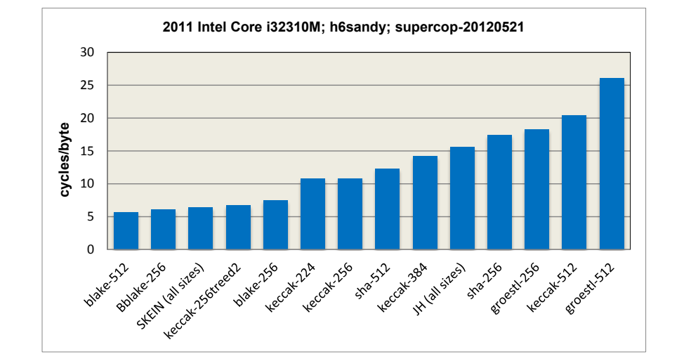
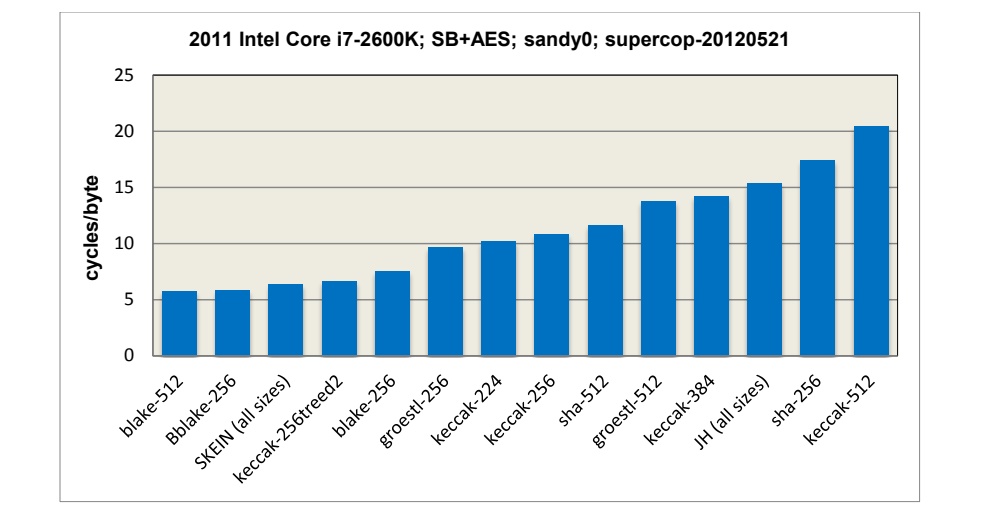
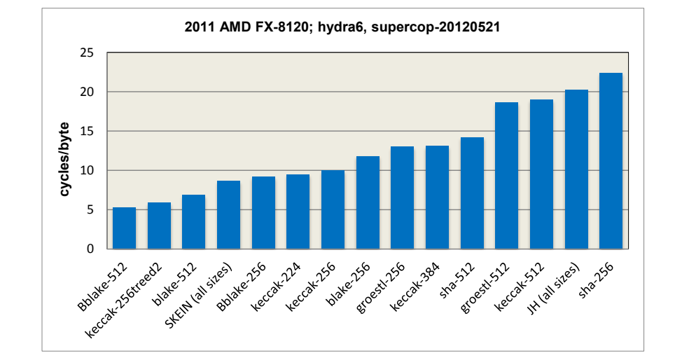
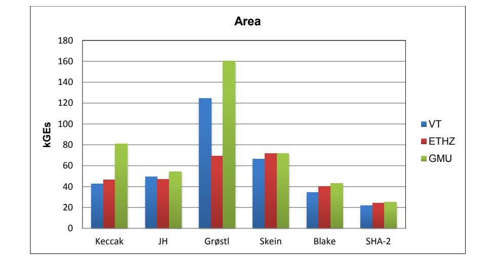
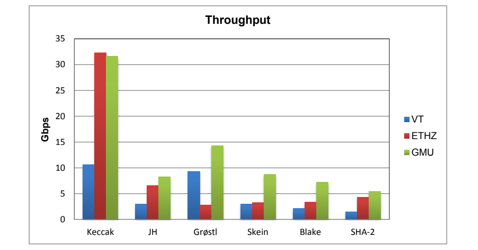
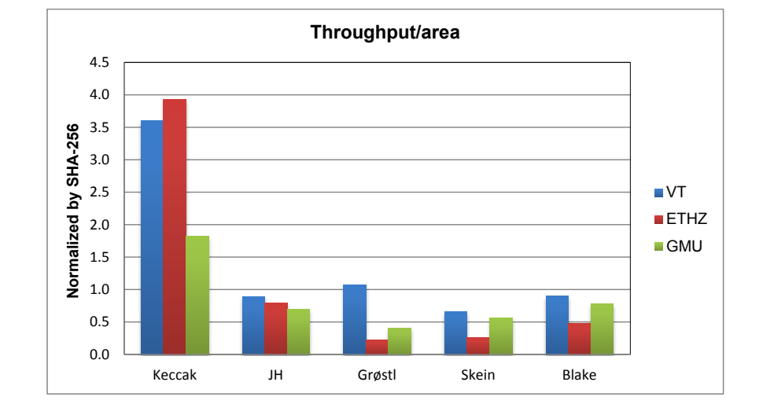
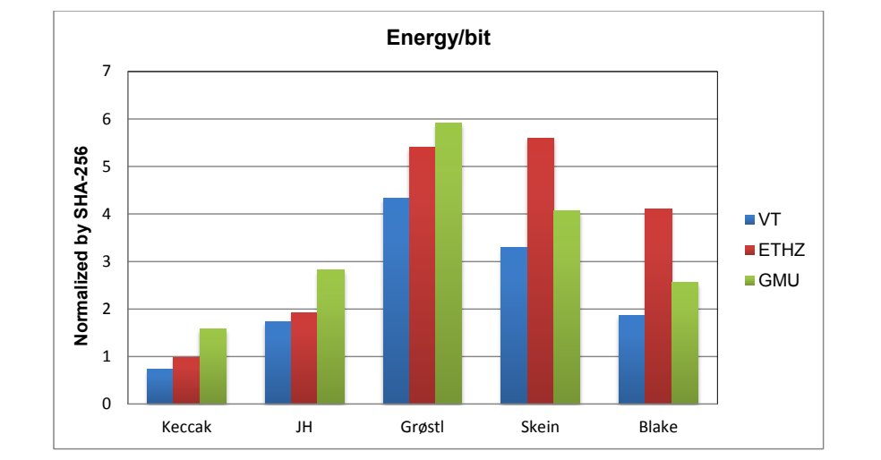
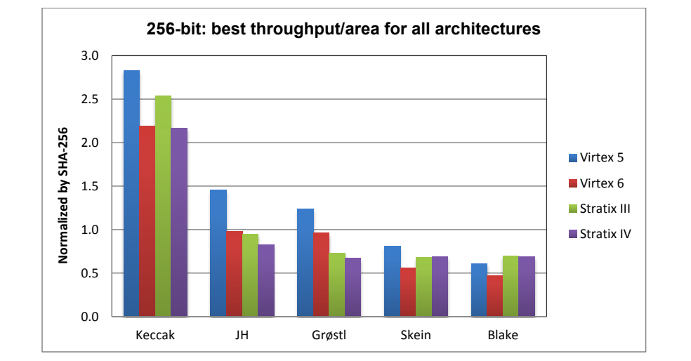
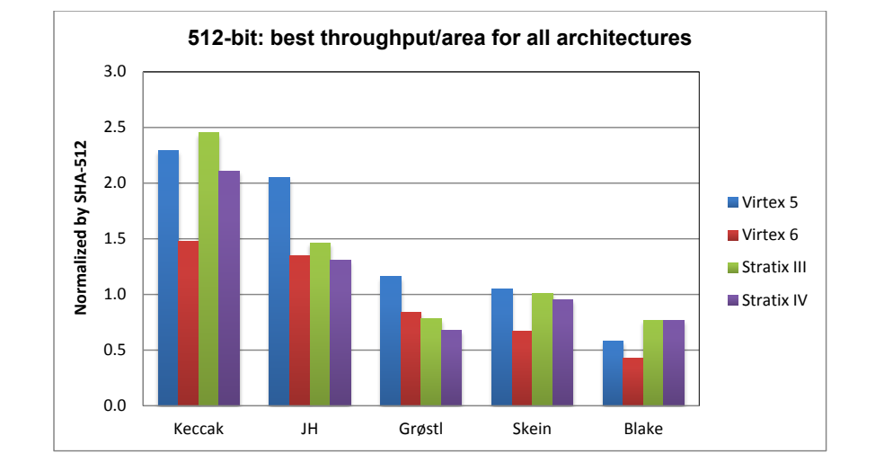
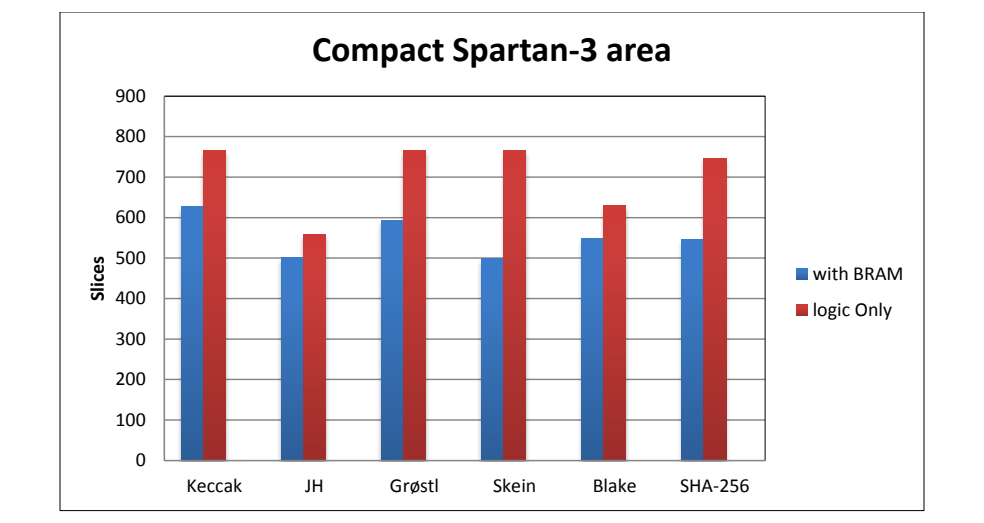

NIST IR 7896 日本語訳
英語タイトル : Third-Round Report of the SHA-3 Cryptographic Hash Algorithm Competition日本語タイトル : SHA-3 暗号学的ハッシュアルゴリズムコンペティションの第 3 ラウンド報告書
公開日 : 2012-11-15
原文URL : https://csrc.nist.gov/pubs/ir/7896/final
翻訳編集 : 自動生成（有志による非公式の日本語訳）, 原文取得日 : 2026-10-31, 訳文 : 671 / 678 ブロック
[要約] NIST IR 7896 は、SHA-3 暗号学的ハッシュアルゴリズムコンペティションの第 3 ラウンド（最終ラウンド）をまとめた報告書です。NIST は、FIPS 180-4 の Secure Hash Standard で規定されたハッシュアルゴリズムを補完する SHA-3 を開発するため、2007 年 11 月 2 日に公開コンペティションを開始し、第 3 ラウンドの候補として BLAKE、Grøstl、JH、Keccak、Skein の 5 件を選定しました。本報告書は、セキュリティ、コストと性能、アルゴリズムと実装の特性に関する評価基準と選定プロセスを説明し、5 つのファイナリストのセキュリティ解析と性能の評価を示します。2012 年 10 月 2 日に NIST が優勝アルゴリズムとして Keccak を発表するに至った、選定の結論も記されています。
NISTIR 7896
NISTIR 7896
Third-Round Report of the SHA-3 Cryptographic Hash Algorithm Competition
SHA-3 暗号学的ハッシュアルゴリズムコンペティションの第 3 ラウンド報告書
Shu-jen Chang
Ray Perlner
William E. Burr
Meltem Sönmez Turan
John M. Kelsey
Souradyuti Paul
Lawrence E. Bassham
Shu-jen Chang
Ray Perlner
William E. Burr
Meltem Sönmez Turan
John M. Kelsey
Souradyuti Paul
Lawrence E. Bassham
http://dx.doi.org/10.6028/NIST.IR.7896
http://dx.doi.org/10.6028/NIST.IR.7896
NISTIR 7896
NISTIR 7896
Third-Round Report of the SHA-3 Cryptographic Hash Algorithm Competition
SHA-3 暗号学的ハッシュアルゴリズムコンペティションの第 3 ラウンド報告書
Shu-jen Chang
Ray Perlner
William E. Burr
Meltem Sönmez Turan
John M. Kelsey
Souradyuti Paul
Lawrence E. Bassham
Computer Security Division
Information Technology Laboratory
Shu-jen Chang
Ray Perlner
William E. Burr
Meltem Sönmez Turan
John M. Kelsey
Souradyuti Paul
Lawrence E. Bassham
コンピュータセキュリティ部門
情報技術研究所
http://dx.doi.org/10.6028/NIST.IR.7896
http://dx.doi.org/10.6028/NIST.IR.7896
November 2012
2012 年 11 月
U.S. Department of Commerce
Rebecca M. Blank, Acting Secretary
米国商務省
Rebecca M. Blank 長官代行
National Institute of Standards and Technology
Patrick D. Gallagher, Under Secretary of Commerce for Standards and Technology and Director
国立標準技術研究所
Patrick D. Gallagher、NIST 所長兼商務次官（標準・技術担当）
Abstract
概要
The National Institute of Standards and Technology (NIST) opened a public competition on November 2, 2007, to develop a new cryptographic hash algorithm – SHA-3, which will augment the hash algorithms specified in the Federal Information Processing Standard (FIPS) 180-4, Secure Hash Standard (SHS). The competition was NIST’s response to advances in the cryptanalysis of hash algorithms.
国立標準技術研究所（NIST）は、連邦情報処理標準（FIPS）180-4 Secure Hash Standard（SHS）で規定されているハッシュアルゴリズムを補完する、新しい暗号学的ハッシュアルゴリズムである SHA-3 を開発するため、2007 年 11 月 2 日に公開コンペティションを開始しました。このコンペティションは、ハッシュアルゴリズムの暗号解析の進展に対する NIST の対応でした。
NIST received sixty-four submissions in October 2008, and selected fifty-one first-round candidates on December 10, 2008; fourteen second-round candidates on July 24, 2009; and five third-round candidates – BLAKE, Grøstl, JH, Keccak and Skein, on December 9, 2010, to advance to the final round of the competition. Eighteen months were provided for the public review of the finalists, and on October 2, 2012, NIST announced the winning algorithm of the SHA-3 competition – Keccak. This report summarizes the evaluation of the five finalists and the selection of the SHA-3 winner.
NIST は 2008 年 10 月に 64 件の提出を受け付け、2008 年 12 月 10 日に第 1 ラウンドの候補 51 件を、2009 年 7 月 24 日に第 2 ラウンドの候補 14 件を、2010 年 12 月 9 日にコンペティションの最終ラウンドに進む第 3 ラウンドの候補 5 件、すなわち BLAKE、Grøstl、JH、Keccak、Skein を選定しました。ファイナリストの公開レビューのために 18 か月が設けられ、2012 年 10 月 2 日に、NIST は SHA-3 コンペティションの優勝アルゴリズムである Keccak を発表しました。本報告書は、5 つのファイナリストの評価と、SHA-3 の優勝アルゴリズムの選定をまとめたものです。
KEY WORDS: Cryptographic hash algorithm; Cryptographic hash function; Cryptography; Cryptographic hash competition; SHA-3 competition.
キーワード: 暗号学的ハッシュアルゴリズム、暗号学的ハッシュ関数、暗号技術、暗号学的ハッシュコンペティション、SHA-3 コンペティション。
Acknowledgements
謝辞
NIST thanks the submitters of all the candidate algorithms, especially the submitters of the SHA-3 finalists for their continued diligence and support. NIST is also grateful for the efforts of those in the cryptographic community that provided security, implementation, and performance analyses of the candidate algorithms throughout the competition, and those who provided feedback on the hash forum or published papers on the various technical aspects of the candidates. Specifically, NIST thanks the organizers of the following projects:
NIST は、すべての候補アルゴリズムの提出者、特に SHA-3 のファイナリストの提出者に、その継続的な努力と支援に感謝します。NIST はまた、コンペティションを通じて候補アルゴリズムのセキュリティ、実装、性能の解析を行った暗号コミュニティの人々、ならびにハッシュフォーラムでフィードバックを寄せた、または候補のさまざまな技術的側面に関する論文を発表した人々の努力にも感謝します。具体的には、NIST は次のプロジェクトの主催者に感謝します。
SHA-3 Zoo:
Christian Rechberger, Jean-Phillipe Aumasson, Florian Mendel, Tomislav Nad, Martin Schläffer, Gilles van Assche;
SHA-3 Zoo:
Christian Rechberger, Jean-Phillipe Aumasson, Florian Mendel, Tomislav Nad, Martin Schläffer, Gilles van Assche;
ECRYPT Benchmarking of All Submitted Hashes (eBASH):
Daniel J. Bernstein, Tanja Lange;
ECRYPT Benchmarking of All Submitted Hashes (eBASH):
Daniel J. Bernstein, Tanja Lange;
eXternal Benchmarking eXtension (XBX):
Christian Wenzel-Benner, Jens Gräf;
eXternal Benchmarking eXtension (XBX):
Christian Wenzel-Benner, Jens Gräf;
George Mason University Department of Electrical and Computer Engineering Hardware Benchmarking:
Kris Gaj, Jens-Peter Kaps;
George Mason University Department of Electrical and Computer Engineering Hardware Benchmarking:
Kris Gaj, Jens-Peter Kaps;
Virginia Tech Department of Electrical and Computer Engineering ASIC Benchmarking:
Patrick Schaumont, Leyla Nazhand-Ali;
Virginia Tech Department of Electrical and Computer Engineering ASIC Benchmarking:
Patrick Schaumont, Leyla Nazhand-Ali;
Eidgenössische Technische Hochschule Zürich (ETHZ) ASIC Implementation:
Frank K. Gürkaynak;
Eidgenössische Technische Hochschule Zürich (ETHZ) ASIC Implementation:
Frank K. Gürkaynak;
And the authors of the following reports:
また、次の報告書の著者にも感謝します。
ECRYPT II SHA-3 Design and Cryptanalysis Report:
Christian Rechberger, Tor E. Bjørstad, Joan Daemen, Christophe De Cannière, Praveen Gauravaram, Dmitry Khovratovich, Willi Meier, Tomislav Nad, Ivica Nikolić, Matt Robshaw, Martin Schläffer, Søren S. Thomsen, Elmar Tischhauser, Deniz Toz, Gilles Van Assche, Kerem Varıcı;
ECRYPT II SHA-3 Design and Cryptanalysis Report:
Christian Rechberger, Tor E. Bjørstad, Joan Daemen, Christophe De Cannière, Praveen Gauravaram, Dmitry Khovratovich, Willi Meier, Tomislav Nad, Ivica Nikolić, Matt Robshaw, Martin Schläffer, Søren S. Thomsen, Elmar Tischhauser, Deniz Toz, Gilles Van Assche, Kerem Varıcı;
ECRYPT II Intermediate Status Report:
Praveen Gauravaram, Florian Mendel, María Naya-Plasencia, Vincent Rijmen, Deniz Toz;
ECRYPT II Intermediate Status Report:
Praveen Gauravaram, Florian Mendel, María Naya-Plasencia, Vincent Rijmen, Deniz Toz;
for their outstanding contributions and support to the SHA-3 competition.
SHA-3 コンペティションへの傑出した貢献と支援に対して。
In addition, NIST extends its appreciation to the KU Leuven Department Elektrotechniek-ESAT/COSIC team led by Bart Preneel, and Sebastiaan Indesteege for their outstanding support to the First SHA-3 Candidate Conference.
さらに、NIST は、第 1 回 SHA-3 候補会議への傑出した支援に対して、Bart Preneel が率いる KU Leuven Department Elektrotechniek-ESAT/COSIC チームと Sebastiaan Indesteege に謝意を表します。
The authors of this report also thank NIST’s Hirofumi Sakane and Caroline Scace for their support in conducting power analysis of the finalists. Last but not least, the authors thank the other members of NIST’s SHA-3 team, who reviewed the candidate algorithms and the public comments, performed testing, provided technical input and administrative support, and participated in numerous meetings during the five-year competition. They are: Elaine B. Barker, Sara J. Caswell, Donghoon Chang, Lily Chen, Quynh Dang, Morris J. Dworkin, James R. Nechvatal, Rene Peralta, William T. Polk, and Andrew Regenscheid.
本報告書の著者はまた、ファイナリストの電力解析の実施を支援してくれた NIST の Hirofumi Sakane と Caroline Scace に感謝します。最後になりましたが、著者は、5 年にわたるコンペティションの間、候補アルゴリズムとパブリックコメントをレビューし、試験を実施し、技術的な助言と事務的な支援を提供し、数多くの会議に参加した、NIST の SHA-3 チームの他のメンバーにも感謝します。彼らは、Elaine B. Barker、Sara J. Caswell、Donghoon Chang、Lily Chen、Quynh Dang、Morris J. Dworkin、James R. Nechvatal、Rene Peralta、William T. Polk、Andrew Regenscheid です。
TABLE OF CONTENTS
目次
References
参考文献
List of Acronyms
頭字語の一覧
| AES-NI | Advanced Encryption Standard – New Instructions |
| ALU | Arithmetic Logic Unit |
| AMD | Advanced Micro Devices |
| ARM | Advanced RISC Machine |
| ARX | Modular Addition, Rotation, and eXclusive OR |
| ASIC | Application Specific Integrated Circuit |
| AVX | Advanced Vector eXtensions |
| CF | Compression Function |
| CISC | Complex Instruction Set Computer |
| CMOS | Complementary Metal–Oxide–Semiconductor |
| CPU | Central Processing Unit |
| DPA | Differential Power Analysis |
| eBASH | ECRYPT Benchmarking of All Submitted Hashes |
| EM | Electromagnetic |
| ETHZ | Eidgenössische Technische Hochschule Zürich |
| FIPS | Federal Information Processing Standard |
| FPGA | Field Programmable Gate Array |
| FRN | Federal Register Notice |
| GMU | George Mason University |
| GPU | Graphics Processor Unit |
| HAIFA | HAsh Iterative FrAmework |
| HMAC | Keyed-Hash Message Authentication Code |
| ISA | Instruction Set Architecture |
| IV | Initialization Value |
| kGE | kilo Gate Equivalents |
| MAC | Message Authentication Code |
| MD | Merkle-Damgård |
| MIPS | Microprocessor without Interlocked Pipeline Stages |
| NIST | National Institute of Standards and Technology |
| OC-48 | Optical Carrier-48 (Transmission Rate) |
| PPC | PowerPC |
| PRF | Pseudo Random Function |
| RAM | Random Access Memory |
| RISC | Reduced Instruction Set Computer |
| RSA | Rivest, Shamir, and Adelman |
| RSA-FDH | RSA Full Domain Hash |
| SCA | Side Channel Analysis |
| SFS | Semi Free Start |
| SHA-3 | Secure Hash Algorithm-3 |
| SHS | Secure Hash Standard |
| SIMD | Single Instruction Multiple Data |
| SSE | Streaming SIMD Extensions |
| UBI | Unique Block Iteration |
| VT | Virginia Tech |
| XBX | eXternal Benchmarking eXtension |
| XOR | Exclusive OR |
| AES-NI | Advanced Encryption Standard – New Instructions |
| ALU | Arithmetic Logic Unit |
| AMD | Advanced Micro Devices |
| ARM | Advanced RISC Machine |
| ARX | Modular Addition, Rotation, and eXclusive OR |
| ASIC | Application Specific Integrated Circuit |
| AVX | Advanced Vector eXtensions |
| CF | Compression Function |
| CISC | Complex Instruction Set Computer |
| CMOS | Complementary Metal–Oxide–Semiconductor |
| CPU | Central Processing Unit |
| DPA | Differential Power Analysis |
| eBASH | ECRYPT Benchmarking of All Submitted Hashes |
| EM | Electromagnetic |
| ETHZ | Eidgenössische Technische Hochschule Zürich |
| FIPS | Federal Information Processing Standard |
| FPGA | Field Programmable Gate Array |
| FRN | Federal Register Notice |
| GMU | George Mason University |
| GPU | Graphics Processor Unit |
| HAIFA | HAsh Iterative FrAmework |
| HMAC | Keyed-Hash Message Authentication Code |
| ISA | Instruction Set Architecture |
| IV | Initialization Value |
| kGE | kilo Gate Equivalents |
| MAC | Message Authentication Code |
| MD | Merkle-Damgård |
| MIPS | Microprocessor without Interlocked Pipeline Stages |
| NIST | National Institute of Standards and Technology |
| OC-48 | Optical Carrier-48 (Transmission Rate) |
| PPC | PowerPC |
| PRF | Pseudo Random Function |
| RAM | Random Access Memory |
| RISC | Reduced Instruction Set Computer |
| RSA | Rivest, Shamir, and Adelman |
| RSA-FDH | RSA Full Domain Hash |
| SCA | Side Channel Analysis |
| SFS | Semi Free Start |
| SHA-3 | Secure Hash Algorithm-3 |
| SHS | Secure Hash Standard |
| SIMD | Single Instruction Multiple Data |
| SSE | Streaming SIMD Extensions |
| UBI | Unique Block Iteration |
| VT | Virginia Tech |
| XBX | eXternal Benchmarking eXtension |
| XOR | Exclusive OR |
1. Introduction
1. はじめに
1.1 Purpose of this Document
1.1 本文書の目的
This report summarizes the third and final round of the SHA-3 (Secure Hash Algorithm-3) Cryptographic Hash Algorithm Competition. The third round began on January 31, 2011, when the National Institute of Standards and Technology (NIST) posted the finalists’ submissions for the third round, and ended on October 2, 2012, when NIST announced the SHA-3 winner – Keccak. This report explains the evaluation and selection process.
本報告書は、SHA-3（Secure Hash Algorithm-3）暗号学的ハッシュアルゴリズムコンペティションの第 3 ラウンドであり最終ラウンドについてまとめたものです。第 3 ラウンドは、国立標準技術研究所（NIST）が第 3 ラウンドのファイナリストの提出物を公開した 2011 年 1 月 31 日に始まり、NIST が SHA-3 の優勝アルゴリズムである Keccak を発表した 2012 年 10 月 2 日に終了しました。本報告書は、評価と選定のプロセスを説明します。
1.2 Background
1.2 背景
NIST opened a public competition on November 2, 2007, to develop a new cryptographic hash algorithm (referred to as SHA-3) to augment the hash algorithms specified in Federal Information Processing Standard (FIPS) 180-2, Secure Hash Standard1 [1]. The competition was NIST’s response to advances in the cryptanalysis of hash algorithms in recent years. An attack by Wang et al. [4], and extended by many others, introduced serious concerns about the security of the SHA-1 government standard hash algorithm when used for the generation of digital signatures and in other security applications that require collision resistance.
NIST は、連邦情報処理標準（FIPS）180-2 Secure Hash Standard1 [1] で規定されているハッシュアルゴリズムを補完する、新しい暗号学的ハッシュアルゴリズム（SHA-3 と呼ばれる）を開発するため、2007 年 11 月 2 日に公開コンペティションを開始しました。このコンペティションは、近年のハッシュアルゴリズムの暗号解析の進展に対する NIST の対応でした。Wang らによる攻撃 [4] と、それを多くの研究者が拡張した攻撃により、デジタル署名の生成や、衝突耐性を必要とするその他のセキュリティ用途で使用される場合の、政府標準ハッシュアルゴリズムである SHA-1 のセキュリティに、深刻な懸念が生じました。
NIST proposed a Draft Minimum Acceptability Requirements, Submission Requirements, and Evaluation Criteria for Candidate (Hash) Algorithms for public comment in a Federal Register Notice in January 2007 (FRN-Jan07) [5]. These requirements and evaluation criteria were updated, based on public feedback, and included in a later, second Federal Register Notice published on November 2, 2007 (FRN-Nov07) [6], which called for the submission of candidate algorithms and launched the “SHA-3” competition.
NIST は、2007 年 1 月の連邦官報告示（FRN-Jan07）[5] で、Draft Minimum Acceptability Requirements, Submission Requirements, and Evaluation Criteria for Candidate (Hash) Algorithms をパブリックコメント用に提案しました。これらの要件と評価基準は、一般からのフィードバックに基づいて更新され、2007 年 11 月 2 日に公表された後の 2 回目の連邦官報告示（FRN-Nov07）[6] に含められました。この告示は候補アルゴリズムの提出を呼びかけ、「SHA-3」コンペティションを開始しました。
The competition, modeled after the Advanced Encryption Standard (AES) Competition [7] in 1997, generated great interest in the cryptographic community, and inspired numerous SHA-3 entries from around the world. NIST received sixty-four entries by October 2008, and selected fifty-one first-round candidates in December 2008, fourteen second-round candidates in July 2009, and five third-round candidates – BLAKE, Grøstl, JH, Keccak, and Skein, on Dec. 9, 2010, to advance to the final round of the competition. Table 1 lists these finalists and their submitters.
このコンペティションは、1997 年の Advanced Encryption Standard（AES）コンペティション [7] を手本としており、暗号コミュニティに大きな関心を呼び、世界中から数多くの SHA-3 への応募を促しました。NIST は 2008 年 10 月までに 64 件の応募を受け付け、2008 年 12 月に第 1 ラウンドの候補 51 件を、2009 年 7 月に第 2 ラウンドの候補 14 件を、2010 年 12 月 9 日にコンペティションの最終ラウンドに進む第 3 ラウンドの候補 5 件、すなわち BLAKE、Grøstl、JH、Keccak、Skein を選定しました。表 1 は、これらのファイナリストと提出者を示します。
| Algorithm | Designer |
|---|---|
| BLAKE [8] | Jean-Philippe Aumasson, Luca Henzen, Willi Meier, Raphael C.-W. Phan |
| Grøstl [9] | Praveen Gauravaram, Lars R. Knudsen, Krystian Matusiewicz, Florian Mendel, Christian Rechberger, Martin Schläffer, Søren S. Thomsen |
| JH [10] | Hongjun Wu |
| Keccak [11] | Guido Bertoni, Joan Daemen, Michaël Peeters, Gilles Van Assche |
| Skein [12] | Niels Ferguson, Stefan Lucks, Bruce Schneier, Doug Whiting, Mihir Bellare, Tadayoshi Kohno, Jon Callas, Jesse Walker |
| アルゴリズム | 設計者 |
|---|---|
| BLAKE [8] | Jean-Philippe Aumasson, Luca Henzen, Willi Meier, Raphael C.-W. Phan |
| Grøstl [9] | Praveen Gauravaram, Lars R. Knudsen, Krystian Matusiewicz, Florian Mendel, Christian Rechberger, Martin Schläffer, Søren S. Thomsen |
| JH [10] | Hongjun Wu |
| Keccak [11] | Guido Bertoni, Joan Daemen, Michaël Peeters, Gilles Van Assche |
| Skein [12] | Niels Ferguson, Stefan Lucks, Bruce Schneier, Doug Whiting, Mihir Bellare, Tadayoshi Kohno, Jon Callas, Jesse Walker |
Table 1. SHA-3 Finalists
表 1. SHA-3 ファイナリスト
NIST has published a report for the first and second round of the competition. These reports [13, 14], and all the relevant information about the SHA-3 competition, are available at NIST’s hash competition website: http://www.nist.gov/hash-competition.
NIST は、コンペティションの第 1 ラウンドと第 2 ラウンドについて報告書を公表しています。これらの報告書 [13, 14] と、SHA-3 コンペティションに関するすべての関連情報は、NIST のハッシュコンペティションの Web サイト http://www.nist.gov/hash-competition で入手できます。
For the third round of the competition, NIST also allowed the submitters of the remaining candidates to make minor modifications to their algorithms by Jan. 16, 2011. Such modifications are often referred to as “tweaks” by the cryptographic community. NIST posted the final tweaked submissions on January 31, 2011, and started the third round of the competition.
コンペティションの第 3 ラウンドでは、NIST は、残った候補の提出者が 2011 年 1 月 16 日までに自らのアルゴリズムに軽微な修正を加えることも認めました。このような修正は、暗号コミュニティでしばしば「tweak」と呼ばれます。NIST は 2011 年 1 月 31 日に tweak 後の最終的な提出物を公開し、コンペティションの第 3 ラウンドを開始しました。
The review process of the finalists spanned nineteen months, and included a final SHA-3 Candidate Conference [15] held in March 2012. Throughout the competition, the cryptographic community provided an enormous amount of feedback to NIST. Most of the comments were sent to NIST or to the Hash Forum [16], which is a public email list, hash-forum@nist.gov, established to facilitate dialogue about the hash workshops that NIST held prior to the competition, and the SHA-3 competition. In addition, some organizers held hash workshops [17, 18, 19, 20, 21, 22, 23], or set up public websites to facilitate cryptanalysis or performance benchmarking of the candidates, such as the SHA-3 Zoo [24], the ECRYPT Benchmarking of All Submitted Hashes (eBASH) [25], and the eXternal Benchmarking eXtension (XBX) [26] sites. Many of the cryptanalysis and performance studies were published as papers in major cryptographic conferences or leading cryptographic journals. ECRYPT II has also published two reports [27, 28] on the SHA-3 candidates prior to the finalists’ third-round tweaks.
ファイナリストのレビュープロセスは 19 か月に及び、2012 年 3 月に開催された最後の SHA-3 候補会議 [15] を含んでいました。コンペティションを通じて、暗号コミュニティは NIST に膨大な量のフィードバックを寄せました。コメントの大半は NIST に、またはハッシュフォーラム [16] に送られました。ハッシュフォーラムは、コンペティションに先立って NIST が開催したハッシュワークショップと SHA-3 コンペティションに関する対話を円滑にするために設置された、公開メーリングリスト hash-forum@nist.gov です。さらに、一部の主催者は、ハッシュワークショップ [17, 18, 19, 20, 21, 22, 23] を開催したり、SHA-3 Zoo [24]、ECRYPT Benchmarking of All Submitted Hashes（eBASH）[25]、eXternal Benchmarking eXtension（XBX）[26] の各サイトのように、候補の暗号解析や性能ベンチマークを円滑にするための公開 Web サイトを設けたりしました。暗号解析と性能研究の多くは、主要な暗号関連の会議や主要な暗号学術誌に論文として発表されました。ECRYPT II も、ファイナリストの第 3 ラウンドでの tweak に先立って、SHA-3 の候補に関する 2 件の報告書 [27, 28] を公表しています。
Based on the public feedback and internal review of the finalists, NIST selected Keccak as the SHA-3 winner. NIST made the selection announcement on October 2, 2012 [29], and officially ended the SHA-3 competition. Table 2 shows the competition timeline, including major events leading to the start of the SHA-3 competition.
一般からのフィードバックとファイナリストの内部レビューに基づいて、NIST は Keccak を SHA-3 の優勝アルゴリズムとして選定しました。NIST は 2012 年 10 月 2 日に選定の発表 [29] を行い、SHA-3 コンペティションを正式に終了しました。表 2 は、SHA-3 コンペティションの開始に至る主要な出来事を含む、コンペティションのタイムラインを示します。
| Date | Event |
|---|---|
| 10/31-11/1/2005 | Cryptographic Hash Workshop [30], NIST, Gaithersburg, Maryland. |
| 8/24-8/25/2006 | Second Cryptographic Hash Workshop [31], UCSB, California. |
| 1/23/2007 | Issued the Federal Register Notice Announcing the Development of New Hash Algorithm(s) for the Revision of Federal Information Processing Standard (FIPS) 180-2, Secure Hash Standard [5]. |
| 11/2/2007 | Issued the Federal Register Notice Announcing a Request for Candidate Algorithm Nominations for a New Cryptographic Hash Algorithm (SHA-3) Family [6]. SHA-3 competition began. |
| 10/31/2008 | SHA-3 Submission Deadline. |
| 12/10/2008 | First-round candidates announced. The first round began. |
| 2/25-2/28/2009 | First SHA-3 Candidate Conference [32], KU Leuven, Belgium. |
| 7/24/2009 | Second-round candidates announced. The first round ended. |
| 9/28/2009 | Second-round candidates posted for public review. The second round began. |
| 8/23-8/24/2010 | Second SHA-3 Candidate Conference [33], UCSB, California. |
| 12/9/2010 | SHA-3 finalists announced. The second round ended. |
| 1/31/2011 | Third-round candidates posted for public review. The third round began. |
| 3/22-3/23/2012 | Third SHA-3 Candidate Conference [15], Washington, D.C. |
| 10/2/2012 | Keccak announced as the SHA-3 winner. SHA-3 competition ended. |
| 日付 | 出来事 |
|---|---|
| 10/31-11/1/2005 | 暗号学的ハッシュワークショップ [30]、NIST、Gaithersburg、Maryland。 |
| 8/24-8/25/2006 | 第 2 回暗号学的ハッシュワークショップ [31]、UCSB、California。 |
| 1/23/2007 | 連邦官報告示 Announcing the Development of New Hash Algorithm(s) for the Revision of Federal Information Processing Standard (FIPS) 180-2, Secure Hash Standard [5] を発出。 |
| 11/2/2007 | 連邦官報告示 Announcing a Request for Candidate Algorithm Nominations for a New Cryptographic Hash Algorithm (SHA-3) Family [6] を発出。SHA-3 コンペティションの開始。 |
| 10/31/2008 | SHA-3 の提出期限。 |
| 12/10/2008 | 第 1 ラウンドの候補を発表。第 1 ラウンドの開始。 |
| 2/25-2/28/2009 | 第 1 回 SHA-3 候補会議 [32]、KU Leuven、Belgium。 |
| 7/24/2009 | 第 2 ラウンドの候補を発表。第 1 ラウンドの終了。 |
| 9/28/2009 | 第 2 ラウンドの候補を公開レビュー用に公開。第 2 ラウンドの開始。 |
| 8/23-8/24/2010 | 第 2 回 SHA-3 候補会議 [33]、UCSB、California。 |
| 12/9/2010 | SHA-3 のファイナリストを発表。第 2 ラウンドの終了。 |
| 1/31/2011 | 第 3 ラウンドの候補を公開レビュー用に公開。第 3 ラウンドの開始。 |
| 3/22-3/23/2012 | 第 3 回 SHA-3 候補会議 [15]、Washington, D.C.。 |
| 10/2/2012 | Keccak を SHA-3 の優勝アルゴリズムとして発表。SHA-3 コンペティションの終了。 |
Table 2. SHA-3 Competition Timeline
表 2. SHA-3 コンペティションのタイムライン
1.3 Organization of this Document
1.3 本文書の構成
This document is organized as follows. Section 2 summarizes the evaluation criteria specified in FRN-Nov07. Section 3 describes the selection process of the SHA-3 winner. Section 4 summarizes the five finalists and their security analyses that are publically available. Section 5 compares the software and hardware performance of the finalists. Section 6 discusses other consideration factors associated with the finalists. Section 7 concludes the report.
本文書は次のように構成されています。第 2 節は、FRN-Nov07 で規定された評価基準をまとめます。第 3 節は、SHA-3 の優勝アルゴリズムの選定プロセスを説明します。第 4 節は、5 つのファイナリストと、公開されているそれらのセキュリティ解析をまとめます。第 5 節は、ファイナリストのソフトウェア性能とハードウェア性能を比較します。第 6 節は、ファイナリストに関連するその他の考慮要因を論じます。第 7 節は、本報告書の結論です。
2. Evaluation Criteria
2. 評価基準
Throughout the competition, NIST used the evaluation criteria specified in FRN-Nov07 [6] to evaluate the candidates. These criteria were discussed and further clarified at the First SHA-3 Candidate Conference in KU Leuven, Belgium, in February 2009. In order of importance, NIST considered the security, cost, and algorithm and implementation characteristics of a candidate in its selection decision.
コンペティションを通じて、NIST は、候補を評価するために FRN-Nov07 [6] で規定された評価基準を使用しました。これらの基準は、2009 年 2 月にベルギーの KU Leuven で開催された第 1 回 SHA-3 候補会議で議論され、さらに明確化されました。NIST は、選定の判断において、重要度の順に、候補のセキュリティ、コスト、アルゴリズムと実装の特性を考慮しました。
2.1 Security
2.1 セキュリティ
FRN-Nov07 identified security as the first evaluation criterion, and listed the following as the major evaluation factors:
FRN-Nov07 は、セキュリティを最初の評価基準と位置づけ、主な評価要因として次を挙げました。
•(i) applications of hash functions;2
•(i) ハッシュ関数の用途2、
•(ii) specific requirements when hash functions are used to support Keyed-Hash Message Authentication Code (HMAC) [34], Pseudo Random Functions (PRFs), or Randomized Hashing;
•(ii) ハッシュ関数を、鍵付きハッシュメッセージ認証コード（HMAC）[34]、擬似ランダム関数（PRF）、またはランダム化ハッシュの支援に使用する場合の特定の要件、
•(iii) additional security requirements of hash functions;
•(iii) ハッシュ関数の追加のセキュリティ要件、
•(iv) evaluations relating to attack resistance; and
•(iv) 攻撃耐性に関する評価、および
•(v) other consideration factors.
•(v) その他の考慮要因。
NIST studied the large amount of feedback received from the cryptographic community, and discusses the security analysis of the finalists in Section 4.
NIST は、暗号コミュニティから寄せられた大量のフィードバックを検討し、ファイナリストのセキュリティ解析を第 4 節で論じます。
2.2 Cost and Performance
2.2 コストと性能
FRN-Nov07 identified cost as the second evaluation criterion, which includes:
FRN-Nov07 は、コストを 2 番目の評価基準と位置づけ、次を含めました。
•(i) computational efficiency, which refers to the speed of the algorithm; and
•(i) アルゴリズムの速度を指す計算効率、および
•(ii) memory requirements, which include the code size and the random-access memory (RAM) requirements for software implementations, as well as the gate-counts for hardware implementations.
•(ii) メモリ要件。ソフトウェア実装でのコードサイズとランダムアクセスメモリ（RAM）の要件、およびハードウェア実装でのゲート数を含みます。
For the cost and performance evaluations of the finalists, NIST studied the results obtained from several major benchmarking efforts. The candidates’ performance in both software and hardware implementations are compared in Section 5.
ファイナリストのコストと性能の評価のために、NIST は、いくつかの主要なベンチマーク活動から得られた結果を検討しました。ソフトウェア実装とハードウェア実装の両方における候補の性能は、第 5 節で比較します。
2.3 Algorithm and Implementation Characteristics
2.3 アルゴリズムと実装の特性
FRN-Nov07 also identified an evaluation criterion related to the flexibility and simplicity of a candidate’s design. Candidates with greater flexibility are preferable, such as flexibility in running efficiently on a wide variety of platforms, or flexibility in using parallelism, or instruction-set extensions, to achieve higher performance. Furthermore, a candidate would be judged on its relative design simplicity, with the intent to encourage easy-to-understand and easy-to-analyze designs to provide more confidence in its security.
FRN-Nov07 はまた、候補の設計の柔軟性と単純さに関する評価基準も定めました。柔軟性が高い候補が好まれます。たとえば、多様なプラットフォームで効率的に動作する柔軟性や、より高い性能を達成するために並列処理や命令セット拡張を使用する柔軟性です。さらに、候補は、その設計の相対的な単純さによっても判断されます。これは、理解しやすく解析しやすい設計を奨励し、そのセキュリティに対するより高い確信を与えることを意図しています。
These characteristics of the finalists are addressed in Sections 3, 4, 5, and 6, as appropriate.
ファイナリストのこれらの特性は、必要に応じて、第 3、4、5、6 節で扱います。
3. Selection Process
3. 選定プロセス
The selection of Keccak as the SHA-3 algorithm was a very difficult decision – all five finalists would have made acceptable choices for SHA-3. NIST’s decision was based on a number of considerations, particularly security, performance, and the desire for SHA-3 to complement the existing SHA-2 algorithms. In addition to rating highly with respect to these primary considerations, Keccak also benefited from a simple and elegant design, a great deal of flexibility in choosing parameters, and other features, such as a built-in authenticated-encryption mode.
Keccak を SHA-3 のアルゴリズムとして選定することは非常に難しい判断でした。5 つのファイナリストはいずれも、SHA-3 として受け入れられる選択肢となりえたからです。NIST の判断は、多くの考慮事項、特にセキュリティ、性能、および SHA-3 が既存の SHA-2 アルゴリズムを補完することへの要望に基づいていました。これらの主要な考慮事項で高く評価されたことに加えて、Keccak は、単純で洗練された設計、パラメータの選択における大きな柔軟性、組み込みの認証暗号モードなどのその他の特徴からも恩恵を受けました。
3.1 Security
3.1 セキュリティ
NIST compared the security properties of the finalists, based on the published design documents and cryptanalysis produced during the competition, and on the security proofs provided by both the designers and other researchers. This data was useful in making the decision, but it required some interpretation; each algorithm has its own mix of published attacks and design logic, and each has received a somewhat different depth of cryptanalysis. However, NIST was able to extract the following points from this information:
NIST は、公開された設計文書とコンペティション中に生み出された暗号解析、および設計者と他の研究者の両方が提供したセキュリティ証明に基づいて、ファイナリストのセキュリティ特性を比較しました。このデータは判断を下すうえで有用でしたが、ある程度の解釈を要しました。各アルゴリズムは、公開された攻撃と設計論理のそれぞれ異なる組み合わせを持ち、暗号解析の深さも多少異なっています。それでも、NIST は、この情報から次の点を引き出すことができました。
a. No finalist has a published attack that, in any real sense, threatens its practical security, and each of the finalists has a security proof for its domain extender3 that shows that the security of the whole hash function is ultimately based on the security of its underlying components.
a. 実際の意味でその実用上のセキュリティを脅かす攻撃が公表されているファイナリストはなく、各ファイナリストは、そのドメイン拡張3についてセキュリティ証明を持っています。この証明は、ハッシュ関数全体のセキュリティが、最終的にその基盤となる構成要素のセキュリティに基づくことを示しています。
b. NIST was able to estimate the security margins of the candidates, based on the largest number of rounds of the hash functions or underlying components that has been successfully attacked using collision-type attacks. By this metric, which is discussed in more detail in Section 4.1.3, Grøstl and JH have the smallest security margins, Skein has a somewhat larger security margin than Grøstl and JH, and BLAKE and Keccak have very large security margins. None of the candidates has an absolutely unacceptable security margin, but it would be difficult for NIST to select Grøstl or JH without seriously considering adding more rounds.
b. NIST は、衝突型攻撃によって成功裏に攻撃されたハッシュ関数またはその基盤となる構成要素の最大ラウンド数に基づき、候補の安全余裕を見積もることができました。第 4.1.3 節で詳しく論じるこの指標によれば、Grøstl と JH の安全余裕が最も小さく、Skein の安全余裕は Grøstl と JH よりやや大きく、BLAKE と Keccak の安全余裕は非常に大きいです。どの候補の安全余裕も絶対に受け入れられないほどではありませんが、ラウンド数の追加を真剣に検討せずに NIST が Grøstl または JH を選定するのは困難です。
c. There are also a number of distinguishing attacks and differential properties published on the finalists and their underlying component functions. It was not entirely clear how to interpret these results, but they largely left the same impression as the collision-type attacks: if distinguishers costing more than the claimed security strength of a 512-bit hash function are omitted, Grøstl and JH have differential properties that extend through most or all of the rounds, while the remaining three candidates only have distinguishers that extend through about half of their rounds.
c. ファイナリストとその基盤となる構成関数については、識別攻撃や差分特性も数多く公表されています。これらの結果をどう解釈すべきかは必ずしも明確ではありませんでしたが、衝突型の攻撃とほぼ同じ印象を残しました。512 ビットのハッシュ関数について主張されているセキュリティ強度を超えるコストを要する識別器を除くと、Grøstl と JH はほとんどまたはすべてのラウンドにわたる差分特性を持つのに対し、残りの 3 つの候補は、ラウンドの約半分にわたる識別器しか持ちません。
d. The cryptanalysis performed on BLAKE, Grøstl, and Skein appears to have a great deal of depth, while the cryptanalysis on Keccak has somewhat less depth, and that on JH has relatively little depth.
d. BLAKE、Grøstl、Skein に対して行われた暗号解析は非常に深いと思われますが、Keccak に対する暗号解析はやや浅く、JH に対するものは比較的浅いです。
e. While the tweaks on BLAKE, Keccak, and JH were sufficiently minor in that all the cryptanalysis performed throughout the competition applies to their final versions, Grøstl and Skein were tweaked more significantly to address attacks on their first- and second-round versions. That said, even in the cases of Grøstl and Skein, most of the earlier cryptanalysis carries over to the final version with only minor modifications; only the attacks targeted by the third-round tweaks are significantly affected, and in both cases, the tweaks appear to be effective in eliminating the relevant vulnerabilities.
e. BLAKE、Keccak、JH の tweak は、コンペティション中に行われたすべての暗号解析がその最終版に当てはまるほど十分に軽微でしたが、Grøstl と Skein は、第 1 ラウンドおよび第 2 ラウンド版に対する攻撃に対処するために、より大きく tweak されました。とはいえ、Grøstl と Skein の場合でも、以前の暗号解析の大半は、軽微な修正のみで最終版にも引き継がれます。大きく影響を受けるのは、第 3 ラウンドの tweak が対象とした攻撃のみであり、どちらの場合も、tweak は該当する脆弱性の除去に有効であると思われます。
f. NIST also considered the security of the finalists against side channel analysis, but there was little available to distinguish between the finalists. While a case can be made that ARX-based (Modular Addition, Rotation, and eXclusive OR-based) designs like BLAKE and Skein may be more expensive to secure against side channel analysis than logic-based designs like Keccak and JH, any of the candidates can probably be made secure against side channel analysis with sufficient effort on the implementation end.
f. NIST は、サイドチャネル解析に対するファイナリストのセキュリティも検討しましたが、ファイナリストを区別できる情報はほとんどありませんでした。BLAKE や Skein のような ARX ベース（モジュラー加算、ローテーション、排他的論理和に基づく）の設計は、Keccak や JH のような論理ベースの設計よりも、サイドチャネル解析に対する防御のコストが高くなる可能性があるという主張も成り立ちますが、どの候補も、実装側で十分な努力を払えば、おそらくサイドチャネル解析に対して安全にできます。
Keccak received a significant amount of cryptanalysis, although not quite the depth of analysis applied to BLAKE, Grøstl, or Skein. This cryptanalysis left Keccak with a huge security margin – only five out of its 24 rounds has been broken by a near-collision attack. Keccak’s large security margin, after significant cryptanalytic effort, suggests that Keccak will remain secure in the future.
Keccak は、BLAKE、Grøstl、Skein に適用された解析の深さにはやや及ばないものの、相当量の暗号解析を受けました。この暗号解析の結果、Keccak には巨大な安全余裕が残されました。24 ラウンドのうち、近衝突攻撃で破られたのは 5 ラウンドだけです。相当な暗号解析の努力を経ても Keccak の安全余裕が大きいことは、Keccak が将来も安全であり続けることを示唆しています。
3.2 Performance
3.2 性能
NIST was fortunate to have a great depth of performance data on the five finalists that could also be compared with the performance data of the SHA-2 algorithms. This data included software implementations on many different kinds of Central Processing Units (CPUs), and hardware implementations in both Field Programmable Gate Arrays (FPGAs) and Application Specific Integrated Circuits (ASICs). All this data made simple comparisons very difficult; most algorithms excelled on some platforms and lagged on others. However, a few patterns emerged from the performance data, which affected NIST’s decision:
NIST は幸いにも、5 つのファイナリストについて豊富な性能データを得ることができ、それを SHA-2 アルゴリズムの性能データとも比較できました。このデータには、さまざまな種類の中央処理装置（CPU）上でのソフトウェア実装と、フィールドプログラマブルゲートアレイ（FPGA）および特定用途向け集積回路（ASIC）によるハードウェア実装が含まれていました。これらすべてのデータを単純に比較するのは非常に困難でした。ほとんどのアルゴリズムは、あるプラットフォームでは優れ、別のプラットフォームでは劣っていました。しかし、性能データからいくつかの傾向が現れ、それが NIST の判断に影響しました。
a. All five finalists perform well enough to be usable in most applications.
a. 5 つのファイナリストはすべて、ほとんどの用途で使用できるほど十分に良好な性能を示します。
b. None of the five finalists is the best for every application, and none offers really compelling improvements over the SHA-2 algorithms.
b. 5 つのファイナリストのうち、あらゆる用途に最適なものはなく、SHA-2 アルゴリズムに対して真に説得力のある改善をもたらすものもありません。
c. The ARX-based algorithms, BLAKE and Skein, perform extremely well in software.
c. ARX ベースのアルゴリズムである BLAKE と Skein は、ソフトウェアで非常に優れた性能を示します。
d. Keccak has a clear advantage in throughput/area performance in hardware implementations.
d. Keccak は、ハードウェア実装でのスループット/面積の性能において、明確な優位性を持ちます。
e. Grøstl and JH are considerably slower than the other three algorithms in most software implementations.
e. Grøstl と JH は、ほとんどのソフトウェア実装で、他の 3 つのアルゴリズムよりもかなり低速です。
Keccak provides an excellent set of performance trade-offs – it is broadly competitive with SHA-2 in software, while providing much better throughput/area performance in hardware.
Keccak は、優れた性能のトレードオフを提供します。ソフトウェアでは SHA-2 と広く互角に競合しつつ、ハードウェアでははるかに優れたスループット/面積の性能を提供します。
3.3 Other Algorithm and Implementation Characteristics
3.3 その他のアルゴリズムと実装の特性
In addition to the bare essentials of security and performance, NIST also considered other features, which was another evaluation criterion identified in FRN-Nov07.
セキュリティと性能という最低限の本質に加えて、NIST は、FRN-Nov07 で定められたもう 1 つの評価基準であるその他の特徴も考慮しました。
Keccak benefits from a very clean and elegant design, which is adaptable to a wide variety of circumstances. Its sponge domain extender makes it easy to analyze the security implications of changing the message block size to improve performance, and provides a mechanism for extending the output size to fit applications like RSA Full Domain Hash (RSA-FDH). Keccak also provides an 800-bit version of its internal permutation, which, if studied further from a security perspective, may be vetted and approved by NIST at some time in the future. If this possibility is realized, the 800-bit permutation will increase the flexibility of Keccak even further.
Keccak は、非常に明快で洗練された設計の恩恵を受けており、この設計はさまざまな状況に適応できます。そのスポンジ型ドメイン拡張により、性能を向上させるためにメッセージブロックサイズを変更した場合のセキュリティへの影響を容易に解析でき、RSA フルドメインハッシュ（RSA-FDH）のような用途に合わせて出力サイズを拡張する機構も提供されます。Keccak はまた、内部置換の 800 ビット版も提供しており、セキュリティの観点からさらに研究されれば、将来 NIST によって精査され、承認される可能性があります。この可能性が実現すれば、800 ビットの置換は Keccak の柔軟性をさらに高めることになります。
While several of the candidates provide additional functionality above and beyond the simple drop-in replacement for existing hash functions, Keccak’s built-in authenticated-encryption mode is one of the better “extras” offered and is a very natural extension of the sponge construction.
いくつかの候補は、既存のハッシュ関数の単純な置き換え以上の追加機能を提供しますが、Keccak の組み込みの認証暗号モードは、提供されている優れた「おまけ」の 1 つであり、スポンジ構造の非常に自然な拡張です。
Overall, Keccak’s elegant design, flexibility, and “extras,” like its authenticated-encryption mode, were points in its favor as the SHA-3 winner.
全体として、Keccak の洗練された設計、柔軟性、認証暗号モードのような「おまけ」は、SHA-3 の優勝アルゴリズムとして有利に働いた点でした。
3.4 Complementing SHA-2
3.4 SHA-2 の補完
One additional consideration contributed to the selection of Keccak as the SHA-3 winner: SHA-3 will be deployed into a world in which the use of SHA-2 is widespread, and will coexist with SHA-2 as an approved hash function. This makes a strong argument for an SHA-3 design that complements that of SHA-2.
Keccak を SHA-3 の優勝アルゴリズムとして選定することに寄与した、さらなる考慮事項が 1 つあります。SHA-3 は、SHA-2 の使用が広く普及している世界に展開され、承認済みのハッシュ関数として SHA-2 と共存することになります。このことは、SHA-2 の設計を補完する SHA-3 の設計を求める強い論拠となります。
a. SHA-2 is a software-oriented ARX design, as are BLAKE and Skein. In terms of performance and implementation properties, these two algorithms are rather similar to SHA-2.
a. SHA-2 はソフトウェア指向の ARX 設計であり、BLAKE や Skein も同様です。性能と実装の特性の観点から、これら 2 つのアルゴリズムは SHA-2 にかなり似ています。
b. Because SHA-2 is an ARX-based design with a key schedule, it has some important design elements in common with BLAKE and Skein, although neither is closely related to SHA-2. However, cryptanalytic tools that apply to SHA-2 in the future seem more likely to apply to BLAKE or Skein than to the other three finalists.
b. SHA-2 は鍵スケジュールを持つ ARX ベースの設計であるため、BLAKE や Skein といくつかの重要な設計要素を共有しますが、どちらも SHA-2 と密接に関連しているわけではありません。それでも、将来 SHA-2 に適用される暗号解析の手法は、他の 3 つのファイナリストよりも、BLAKE や Skein に適用される可能性が高いと思われます。
c. Keccak is a hardware-oriented design that is based entirely on simple bit-oriented operations and moving bits around. Its performance and implementation properties are significantly different from those of SHA-2.
c. Keccak は、単純なビット指向の演算とビットの移動のみに全面的に基づく、ハードウェア指向の設計です。その性能と実装の特性は、SHA-2 のものとは大きく異なります。
Among all the finalists, NIST believes that Keccak provides the most advantages as an addition to NIST’s toolbox of cryptographic algorithms. Keccak's software performance is broadly comparable to that of the SHA-2 algorithms, but its hardware performance is much better, and Keccak does not need the 32- or 64-bit integer additions or key schedule that are required by SHA-2.
NIST は、すべてのファイナリストの中で、Keccak が NIST の暗号アルゴリズムの道具箱への追加として最も多くの利点を提供すると考えています。Keccak のソフトウェア性能は SHA-2 アルゴリズムの性能と広く同等ですが、ハードウェア性能ははるかに優れており、Keccak は SHA-2 が必要とする 32 ビットまたは 64 ビットの整数加算や鍵スケジュールを必要としません。
3.5 Selection Conclusion
3.5 選定の結論
NIST’s decision rested almost entirely on the generous contributions of time and effort by the cryptographic community. Multiple implementations of the algorithms in hardware and software made meaningful performance comparisons possible, and most of this work was done by volunteers. Analyzing the security of a new cryptographic hash function is extremely demanding, requiring hard work from people with rare expertise and talents. This analysis was provided by the members of the cryptographic community, including, but not limited to, the submitters of the SHA-3 candidates. Without this huge volume of published information, representing a great many years of skilled effort, NIST could never have run this competition.
NIST の判断は、ほぼ完全に、暗号コミュニティが惜しみなく提供した時間と労力に支えられていました。アルゴリズムのハードウェアとソフトウェアでの複数の実装により、意味のある性能比較が可能となり、その作業の大半はボランティアによって行われました。新しい暗号学的ハッシュ関数のセキュリティを解析することは極めて困難であり、希少な専門知識と才能を持つ人々の懸命な努力を必要とします。この解析は、SHA-3 候補の提出者に限らず、暗号コミュニティの構成員によって提供されました。数多くの年月にわたる熟練した努力を表す、この膨大な量の公表された情報がなければ、NIST はこのコンペティションを運営することは到底できなかったでしょう。
Based on the data available, all five finalists appear to be excellent hash algorithms, providing acceptable performance and security properties. Any of the five would have made an acceptable choice for SHA-3.
入手可能なデータに基づくと、5 つのファイナリストはいずれも、受け入れられる性能とセキュリティ特性を備えた優れたハッシュアルゴリズムであると思われます。5 つのどれを選んでも、SHA-3 として受け入れられる選択となったでしょう。
Keccak offers acceptable performance in software, and excellent performance in hardware. It has a large security margin, suggesting a good chance of surviving without a practical attack during its working lifetime. Keccak is also a fundamentally new and different algorithm that is entirely unrelated to the SHA-2 algorithms. For all these reasons, NIST chose Keccak as the new SHA-3 algorithm. Keccak's bit-oriented design may facilitate better understanding in the future, but at present the newness of the design means it is somewhat less well-understood than the ARX or S-box-based designs.
Keccak は、ソフトウェアでは受け入れ可能な性能を、ハードウェアでは優れた性能を提供します。安全余裕が大きいため、運用期間中に実用的な攻撃を受けずに済む可能性が高いことが示唆されます。Keccak はまた、SHA-2 アルゴリズムとはまったく関係のない、根本的に新しく異なるアルゴリズムです。これらすべての理由から、NIST は Keccak を新しい SHA-3 アルゴリズムとして選定しました。Keccak のビット指向の設計は、将来、より深い理解を促す可能性がありますが、現時点では設計が新しいため、ARX ベースや S-box ベースの設計ほど十分に理解されていません。
4. Security Analysis of the Finalists
4. ファイナリストのセキュリティ解析
This section describes the security of the five finalists. It is organized as follows: Section 4.1 gives an overview of the criteria that NIST used in comparing the depth and significance of published cryptanalysis results on the five finalists and includes several tables comparing the finalists according to these criteria. Section 4.2 summarizes the design and lists the published cryptanalysis results for each of the finalists. Section 4.3 gives NIST’s assessment of what conclusions can be drawn from the results described in the first two subsections.
この節は、5 つのファイナリストのセキュリティを説明します。構成は次のとおりです。第 4.1 節は、5 つのファイナリストについて公表された暗号解析結果の深さと重要性を比較する際に NIST が用いた基準の概要を示し、これらの基準に従ってファイナリストを比較するいくつかの表を含みます。第 4.2 節は、各ファイナリストの設計をまとめ、公表された暗号解析結果を挙げます。第 4.3 節は、最初の 2 つの小節で述べた結果からどのような結論を導けるかについての NIST の評価を示します。
4.1 Security Overview
4.1 セキュリティの概要
Security is the most important criterion for a new hash function; performance or implementation advantages of a broken hash function are irrelevant. This section of the report discusses how NIST weighed the evidence regarding the security of each of the five finalists, and how this weighing helped determine the final selection of SHA-3.
セキュリティは、新しいハッシュ関数にとって最も重要な基準です。破られたハッシュ関数の性能や実装上の利点は意味を持ちません。報告書のこの節は、NIST が 5 つのファイナリストそれぞれのセキュリティに関する証拠をどのように比較衡量したか、そしてこの比較衡量が SHA-3 の最終的な選定の決定にどのように役立ったかを論じます。
The submission packages of the five finalists, and the published analysis of the finalists during the four years of public review, provide significant information on their security. This information falls into six categories:
5 つのファイナリストの提出パッケージと、4 年間の公開レビューの間に公表されたファイナリストの解析は、そのセキュリティに関する重要な情報を提供します。この情報は 6 つのカテゴリに分かれます。
a. Proofs of security relating to the hash functions' structure. These proofs typically show that the hash function has various good properties, assuming some good properties of the underlying compression function, block cipher, or fixed permutation.
a. ハッシュ関数の構造に関するセキュリティの証明。これらの証明は通常、基盤となる圧縮関数、ブロック暗号、または固定置換のいくつかの良好な特性を仮定したうえで、そのハッシュ関数がさまざまな良好な特性を持つことを示します。
b. Cryptanalysis results on the hash function or its components that relate directly to the core security properties of a hash function: preimage-resistance, second-preimage-resistance, and especially, collision-resistance. Even when these attacks involve giving an attacker more power than they would have in an attack on the full hash function, as with semi-free-start collisions, these results are often the best indication available of how well the hash function will survive future attacks. The fraction of the hash function (or underlying component function) broken by these attacks can be used to calculate a security margin - the fraction of the hash function's rounds that are still unbroken. For the SHA-3 finalists and SHA-2, collision and near-collision attacks are the most informative source of information about the hash functions' security; the published preimage attacks have much higher required work,4 and are, therefore, less worrisome.
b. ハッシュ関数またはその構成要素に対する暗号解析結果のうち、ハッシュ関数の中核となるセキュリティ特性、すなわち原像耐性、第二原像耐性、特に衝突耐性に直接関係するもの。これらの攻撃が、セミフリースタート衝突のように、完全なハッシュ関数への攻撃で攻撃者が持つよりも大きな能力を攻撃者に与える場合であっても、これらの結果は、そのハッシュ関数が将来の攻撃にどれほど耐えられるかを示す、入手可能な最良の指標であることが多いです。これらの攻撃で破られたハッシュ関数（または基盤となる構成関数）の割合を用いて、安全余裕、すなわちハッシュ関数のラウンドのうち、まだ破られていない割合を計算できます。SHA-3 のファイナリストと SHA-2 については、衝突攻撃と近衝突攻撃がハッシュ関数のセキュリティに関する最も有益な情報源です。公表された原像攻撃は、必要な計算量がはるかに大きく4、したがって懸念は小さいです。
c. Theoretical distinguishers on the hash function or its components. These involve some property that would not be present in an ideal hash function or component, but which has no obvious relevance to any practical security concern about the hash function. Sometimes, using these properties even requires more work than the claimed security level of the hash function.
c. ハッシュ関数またはその構成要素に対する理論的な識別器。これらは、理想的なハッシュ関数や構成要素には存在しない何らかの特性に関係しますが、そのハッシュ関数に関する実用上のセキュリティの懸念とは明らかな関連がありません。場合によっては、これらの特性を利用するのに、ハッシュ関数の主張されたセキュリティレベルよりも多くの計算量が必要になります。
d. Depth and maturity of cryptanalysis results. Some algorithms have received more cryptanalysis than others; some have analysis that seems to be noticeably more mature (for example, many different papers building on one another would indicate maturity). This is necessarily somewhat subjective; different cryptographers might come to somewhat different conclusions. A naïve approach might merely count the cryptanalysis papers. This is important in evaluating the meaningfulness of the security margins of the hash function; a hash function that has had little analysis may have a large security margin simply because few cryptanalysts have spent any time studying it.
d. 暗号解析結果の深さと成熟度。一部のアルゴリズムは、他のアルゴリズムよりも多くの暗号解析を受けており、一部のアルゴリズムの解析は、明らかにより成熟しているように思われます（たとえば、互いの上に積み上げられた多くの異なる論文は、成熟を示します）。これは必然的にある程度主観的であり、暗号研究者によって結論がいくぶん異なる可能性があります。単純なやり方では、暗号解析の論文を数えるだけかもしれません。これは、ハッシュ関数の安全余裕の意味を評価するうえで重要です。解析をほとんど受けていないハッシュ関数は、暗号解析者がそれを研究するのにほとんど時間を費やしていないというだけで、大きな安全余裕を持つように見える場合があります。
e. Tweak history of the finalists. Prior to the start of the second and third rounds of the competition, the designers of the remaining candidates were allowed to make minor changes, referred to as “tweaks,” to their designs. Some designers simply tweaked their algorithms by increasing the number of rounds, which does not invalidate previous analysis results; others chose to modify the internal structure of a component function to address a particular attack, or to improve some property of the hash function. Tweak history affects the meaningfulness of the security margin of a hash function in a way similar to that of the depth of cryptanalysis. If an algorithm has been tweaked in ways that invalidate previous cryptanalysis results, then the cryptanalysis on the final version of the algorithm is correspondingly less mature.
e. ファイナリストの tweak の履歴。コンペティションの第 2 ラウンドと第 3 ラウンドの開始前に、残った候補の設計者は、「tweak」と呼ばれる軽微な変更を設計に加えることが認められました。一部の設計者は、単にラウンド数を増やすことでアルゴリズムを tweak しましたが、これは以前の解析結果を無効にしません。ほかの設計者は、特定の攻撃に対処するため、またはハッシュ関数の何らかの特性を改善するために、構成関数の内部構造を変更することを選びました。tweak の履歴は、暗号解析の深さと同様の形で、ハッシュ関数の安全余裕の意味に影響します。アルゴリズムが、以前の暗号解析結果を無効にするような形で tweak された場合、そのアルゴリズムの最終版に対する暗号解析は、それに応じて成熟度が低くなります。
f. Side channel analysis. Different algorithms have different implementation properties, and thus may have different susceptibility to side channel attacks, or may be more or less expensive to defend against such attacks. While most applications of hash functions do not need resistance against side channel attacks, some important ones (most notably MAC algorithms and key-derivation functions) do require this resistance, so differences in vulnerability to side channel attacks, or in the cost of defending against them, matter for the selection of SHA-3.
f. サイドチャネル解析。アルゴリズムによって実装の特性が異なるため、サイドチャネル攻撃に対する脆弱性が異なる場合があり、そのような攻撃への防御にかかるコストが高かったり低かったりする場合があります。ハッシュ関数の大半の用途はサイドチャネル攻撃への耐性を必要としませんが、重要な用途の一部（最も顕著なものは MAC アルゴリズムと鍵導出関数）はこの耐性を必要とするため、サイドチャネル攻撃に対する脆弱性の違いや、それらに対する防御のコストの違いは、SHA-3 の選定にとって重要です。
No finalist was broken or seriously threatened by any attack published so far. All the finalists have proofs relating their security to ideal properties of their underlying compression function, permutation, or block cipher. Two of the finalists (Keccak and JH) have distinguishing attacks on their underlying primitives. However, the distinguishing attack on Keccak's permutation is far beyond the security level claimed by a 512-bit hash function. The security results by themselves did not disqualify any finalists, but they offered the best-available evidence for assessing the likelihood that future cryptanalysis may threaten these algorithms.
これまでに公表された攻撃によって破られた、または深刻に脅かされたファイナリストはありません。すべてのファイナリストには、そのセキュリティを、基盤となる圧縮関数、置換、またはブロック暗号の理想的な特性に結びつける証明があります。2 つのファイナリスト（Keccak と JH）には、その基盤となるプリミティブに対する識別攻撃があります。ただし、Keccak の置換に対する識別攻撃は、512 ビットのハッシュ関数について主張されているセキュリティレベルをはるかに超えています。セキュリティ上の結果そのものによって失格となったファイナリストはありませんが、それらは、将来の暗号解析がこれらのアルゴリズムを脅かす可能性を評価するための、入手可能な最良の証拠を提供しました。
4.1.1 Overview of Security Resources
4.1.1 セキュリティ資源の概要
NIST’s understanding of the security of the finalist hash functions is based on the work of the cryptographic community, as it appears in published cryptanalysis and security-proof papers. Some of these papers were presented at the NIST-sponsored SHA-3 conferences; others were presented at other conferences. In general, the results have had some level of peer review, though it is always possible that incorrect results could have made it past the review. Some results provide concrete findings, such as collisions for reduced-round versions of the hash functions, which can be verified; others are too expensive to be implemented in practice.
ファイナリストのハッシュ関数のセキュリティに関する NIST の理解は、公表された暗号解析とセキュリティ証明の論文に現れている、暗号コミュニティの成果に基づいています。これらの論文の一部は NIST が後援する SHA-3 会議で発表され、他の論文はそれ以外の会議で発表されました。一般に、結果はある程度のピアレビューを受けていますが、誤った結果がレビューをすり抜けた可能性は常にあります。一部の結果は、ラウンド数を減らしたバージョンのハッシュ関数に対する衝突など、検証可能な具体的な発見を提供しますが、実際に実装するにはコストが高すぎるものもあります。
4.1.2 Domain Extenders and Proofs
4.1.2 ドメイン拡張と証明
Hash function design can be broken into two parts: building a fixed-size component like a compression function or fixed permutation, and then using that fixed-size component to build a hash function that can process variable-length strings up to some huge maximum length. The construction used to build the full hash function is called a domain extender. The next two subsections discuss the analysis of the fixed-size components used in the finalist hash functions. This section discusses the analysis of the domain extenders of the finalists. Unlike the cryptanalysis results, the results on domain extenders are mainly built on proofs relating the properties of the full hash function to the properties of the underlying fixed-length components.
ハッシュ関数の設計は 2 つの部分に分けられます。圧縮関数や固定置換のような固定サイズの構成要素を構築することと、その固定サイズの構成要素を使って、ある巨大な最大長までの可変長の文字列を処理できるハッシュ関数を構築することです。完全なハッシュ関数を構築するために使われる構造は、ドメイン拡張と呼ばれます。次の 2 つの小節は、ファイナリストのハッシュ関数で使われる固定サイズの構成要素の解析を論じます。この小節は、ファイナリストのドメイン拡張の解析を論じます。暗号解析結果とは異なり、ドメイン拡張に関する結果は、主に、完全なハッシュ関数の特性を、基盤となる固定長の構成要素の特性に結びつける証明に基づいています。
BLAKE, Grøstl, and Skein build their full, arbitrary-input-length hash function from a fixed-input-length hash function called a compression function. At a lower level, the compression functions of BLAKE and Skein are based on block ciphers, whereas that of Grøstl is based on a pair of fixed permutations. The security properties of these hash functions can either be viewed as being inherited from their compression functions or directly from the underlying components of their compression functions. JH and Keccak build their full hash functions directly from a fixed permutation. In each case, the full hash function inherits its security properties from the properties of this permutation.
BLAKE、Grøstl、Skein は、圧縮関数と呼ばれる固定入力長のハッシュ関数から、任意の入力長を扱える完全なハッシュ関数を構築します。より低いレベルでは、BLAKE と Skein の圧縮関数はブロック暗号に基づいているのに対し、Grøstl の圧縮関数は一対の固定置換に基づいています。これらのハッシュ関数のセキュリティ特性は、圧縮関数から継承されるもの、または圧縮関数の基盤となる構成要素から直接継承されるものとみなすことができます。JH と Keccak は、固定置換から直接、完全なハッシュ関数を構築します。いずれの場合も、完全なハッシュ関数は、この置換の特性からセキュリティ特性を継承します。
Published proofs show that the security of all five finalists can be inferred from properties of their underlying building blocks. This kind of proof cannot guarantee that the hash function is secure, but it does show that certain kinds of weaknesses in the full hash function can only happen as a result of corresponding weaknesses in its underlying building blocks. Because of this, proofs of this kind guarantee security against generic attacks – attacks that only exploit the domain extender and not the internals of the underlying building blocks. Since cryptanalysts and designers spend most of their time considering the underlying building blocks, this is an important guarantee.
公表された証明は、5 つのファイナリストすべてのセキュリティを、その基盤となる構成要素の特性から導けることを示しています。この種の証明は、ハッシュ関数が安全であることを保証できませんが、完全なハッシュ関数における特定の種類の弱点が、その基盤となる構成要素の対応する弱点の結果としてのみ生じうることを示します。このため、この種の証明は、一般的な攻撃、すなわちドメイン拡張のみを利用し、基盤となる構成要素の内部は利用しない攻撃に対するセキュリティを保証します。暗号解析者と設計者は、ほとんどの時間を基盤となる構成要素の検討に費やすため、これは重要な保証です。
Table 3 summarizes the security proofs for the finalists' and SHA-2’s domain extenders. All numbers in this table are in bits. The sizes of the key, block, and tweak are denoted by k, b and t, respectively, and L denotes the length of the target message in blocks. “Coll,” “Pre,” “2nd Pre,” and “Indiff” denote the approximate proven generic security against collision, preimage, second preimage, and indifferentiability attacks, respectively. References for the finalists’ security bounds are presented in Subsections 4.2.1.1 – 4.2.5.1.
表 3 は、ファイナリストと SHA-2 のドメイン拡張に関するセキュリティ証明をまとめます。この表のすべての数値はビット単位です。鍵、ブロック、tweak のサイズは、それぞれ k、b、t で表し、L は対象メッセージのブロック単位の長さを表します。「Coll」「Pre」「2nd Pre」「Indiff」は、それぞれ衝突攻撃、原像攻撃、第二原像攻撃、識別不能性攻撃に対して証明された、おおよその一般的なセキュリティを表します。ファイナリストのセキュリティ境界に関する参考文献は、第 4.2.1.1 節から第 4.2.5.1 節に示します。
For the purpose of the SHA-3 decision, these results can be summarized as follows:
SHA-3 の判断の目的では、これらの結果は次のようにまとめられます。
a. All five finalists have indifferentiability proofs, which guarantee that the hash function resists generic attacks up to at least the complexity of a brute-force collision search, assuming that the underlying primitive is ideal.5
a. 5 つのファイナリストはすべて識別不能性の証明を持ち、基盤となるプリミティブが理想的であると仮定すると、ハッシュ関数が、少なくとも総当たりの衝突探索の計算量までの一般的な攻撃に耐えることを保証します。5
b. Under the same assumption, all of the candidates except JH are proven to have near-optimal security relating to the core properties of collision, preimage, and second-preimage resistance. Even in the case of JH, the indifferentiability proof guarantees some generic security for these properties (the optimal security, in the case of collision search), and there is no known way for an attacker to exploit the JH domain extension to find preimages, or second preimages more efficiently than a brute-force search.
b. 同じ仮定の下で、JH を除くすべての候補は、衝突耐性、原像耐性、第二原像耐性という中核的な特性に関して、ほぼ最適なセキュリティを持つことが証明されています。JH の場合でも、識別不能性の証明は、これらの特性についてある程度の一般的なセキュリティ（衝突探索の場合は最適なセキュリティ）を保証しており、攻撃者が JH のドメイン拡張を利用して、総当たり探索よりも効率的に原像または第二原像を見つける既知の方法はありません。
Nothing in these results provides a strong justification for selecting or discarding any of the five finalists. However, these results are quite important for evaluating the finalists' security, as they show that the security of the full hash functions depends only on the security of the underlying primitives, which is where the overwhelming majority of the cryptanalytic effort has been focused so far.
これらの結果のいずれも、5 つのファイナリストのいずれかを選定する、あるいは除外する強い根拠を与えるものではありません。ただし、これらの結果は、完全なハッシュ関数のセキュリティが基盤となるプリミティブのセキュリティだけに依存することを示しているため、ファイナリストのセキュリティを評価するうえで非常に重要です。これまでの暗号解析の努力の圧倒的大多数は、そこに集中してきました。
| Algorithm | Domain Extender | Underlying Primitive | Primitive size | Hash size | Security | |||
|---|---|---|---|---|---|---|---|---|
| Coll | Pre | 2nd Pre | Indiff | |||||
| BLAKE | HAIFA | Block cipher | k=512 b=512 | 224 | 112 | 224 | 224 | 128 |
| 256 | 128 | 256 | 256 | 128 | ||||
| k=1024 b=1024 | 384 | 192 | 384 | 384 | 256 | |||
| 512 | 256 | 512 | 512 | 256 | ||||
| Grøstl | Grøstl | A pair of permutations | 512 512 | 224 | 112 | 224 | \(256 - \log_2 L\) | 128 |
| 256 | 128 | 256 | 128 | |||||
| 1024 1024 | 384 | 192 | 384 | \(512 - \log_2 L\) | 256 | |||
| 512 | 256 | 512 | 256 | |||||
| JH | JH | Permutation | 1024 | 224 | 112 | 224 | 224 | 256 |
| 256 | 128 | 256 | 256 | 256 | ||||
| 384 | 192 | 256 | 256 | 256 | ||||
| 512 | 256 | 256 | 256 | 256 | ||||
| Keccak | Sponge | Permutation | 1600 | 224 | 112 | 224 | 224 | 224 |
| 256 | 128 | 256 | 256 | 256 | ||||
| 384 | 192 | 384 | 384 | 384 | ||||
| 512 | 256 | 512 | 512 | 512 | ||||
| Skein | UBI | Tweakable block cipher | k=512 b=512 t=128 | 224 | 112 | 224 | 224 | 256 |
| 256 | 128 | 256 | 256 | 256 | ||||
| 384 | 192 | 384 | 384 | 256 | ||||
| 512 | 256 | 512 | 512 | 256 | ||||
| SHA-26 | MD | Block cipher | k=512 b=256 | 224 | 112 | 224 | \(256 - \log_2 L\) | 1 |
| 256 | 128 | 256 | ||||||
| k=1024 b=512 | 384 | 192 | 384 | \(512 - \log_2 L\) | 1 | |||
| 512 | 256 | 512 | ||||||
| アルゴリズム | ドメイン拡張 | 基盤となるプリミティブ | プリミティブのサイズ | ハッシュのサイズ | セキュリティ | |||
|---|---|---|---|---|---|---|---|---|
| Coll | Pre | 2nd Pre | Indiff | |||||
| BLAKE | HAIFA | ブロック暗号 | k=512 b=512 | 224 | 112 | 224 | 224 | 128 |
| 256 | 128 | 256 | 256 | 128 | ||||
| k=1024 b=1024 | 384 | 192 | 384 | 384 | 256 | |||
| 512 | 256 | 512 | 512 | 256 | ||||
| Grøstl | Grøstl | 一対の置換 | 512 512 | 224 | 112 | 224 | \(256 - \log_2 L\) | 128 |
| 256 | 128 | 256 | 128 | |||||
| 1024 1024 | 384 | 192 | 384 | \(512 - \log_2 L\) | 256 | |||
| 512 | 256 | 512 | 256 | |||||
| JH | JH | 置換 | 1024 | 224 | 112 | 224 | 224 | 256 |
| 256 | 128 | 256 | 256 | 256 | ||||
| 384 | 192 | 256 | 256 | 256 | ||||
| 512 | 256 | 256 | 256 | 256 | ||||
| Keccak | スポンジ | 置換 | 1600 | 224 | 112 | 224 | 224 | 224 |
| 256 | 128 | 256 | 256 | 256 | ||||
| 384 | 192 | 384 | 384 | 384 | ||||
| 512 | 256 | 512 | 512 | 512 | ||||
| Skein | UBI | tweak 可能ブロック暗号 | k=512 b=512 t=128 | 224 | 112 | 224 | 224 | 256 |
| 256 | 128 | 256 | 256 | 256 | ||||
| 384 | 192 | 384 | 384 | 256 | ||||
| 512 | 256 | 512 | 512 | 256 | ||||
| SHA-26 | MD | ブロック暗号 | k=512 b=256 | 224 | 112 | 224 | \(256 - \log_2 L\) | 1 |
| 256 | 128 | 256 | ||||||
| k=1024 b=512 | 384 | 192 | 384 | \(512 - \log_2 L\) | 1 | |||
| 512 | 256 | 512 | ||||||
Table 3. Proven Generic Security7 of the SHA-3 Finalists and SHA-2 in Bits
表 3. SHA-3 ファイナリストと SHA-2 の、証明された一般的なセキュリティ7（ビット単位）
4.1.3 Cryptanalysis and Security Margin
4.1.3 暗号解析と安全余裕
The most important security requirements for a hash function are collision and preimage resistance. Informally, collision-resistance means that it is very difficult to find two different input strings that yield the same message digest, while preimage-resistance means that it is very difficult to find an input string that yields a particular desired message digest. This subsection discusses the published attacks on the hash functions that relate to these core security properties of a hash function. In particular, the subsection focuses on the security against collision and related attacks, rather than on preimage attacks.
ハッシュ関数にとって最も重要なセキュリティ要件は、衝突耐性と原像耐性です。非形式的には、衝突耐性とは、同じメッセージダイジェストを生じさせる 2 つの異なる入力文字列を見つけることが非常に困難であることを意味し、原像耐性とは、特定の望ましいメッセージダイジェストを生じさせる入力文字列を見つけることが非常に困難であることを意味します。この小節は、ハッシュ関数のこれらの中核となるセキュリティ特性に関連する、ハッシュ関数に対して公表された攻撃を論じます。特に、この小節は、原像攻撃ではなく、衝突攻撃および関連する攻撃に対するセキュリティに焦点を当てます。
Given the attacks published on the SHA-3 finalists, collision attacks are more informative about the ultimate security of the hash functions for three reasons. First, it is often possible to speed up the brute-force search of a preimage by a small number of bits using a clever representation of the internal state of the hash function and its computations – there are a number of results along these lines on the finalists, and while the techniques used are clever, it is difficult to see any implications of these attacks for the security of the hash functions. Second, brute-force preimage attacks on the SHA-3 finalists are extremely computationally demanding, requiring at least \(2^{224}\) compression function computations, and the published cryptanalytic preimage attacks typically have much higher complexities than the published collision and related attacks for this reason. And finally, for the SHA-3 finalists, the preimage attacks were not the attacks that covered the most rounds with more than a tiny advantage over a brute-force search.
SHA-3 のファイナリストに対して公表された攻撃を踏まえると、衝突攻撃は、3 つの理由から、ハッシュ関数の最終的なセキュリティについてより多くの情報を与えます。第一に、ハッシュ関数の内部状態とその計算の巧妙な表現を用いて、原像の総当たり探索を少数のビットだけ高速化できることがよくあります。ファイナリストについてはこの種の結果が数多くあり、用いられている手法は巧妙ですが、これらの攻撃がハッシュ関数のセキュリティに何らかの影響を及ぼすことは見て取りにくいです。第二に、SHA-3 のファイナリストに対する総当たりの原像攻撃は、少なくとも \(2^{224}\) 回の圧縮関数の計算を要する、極めて計算量の大きいものであり、このため、公表された暗号解析による原像攻撃の計算量は、一般に、公表された衝突攻撃および関連する攻撃の計算量よりもはるかに大きいです。そして最後に、SHA-3 のファイナリストについては、原像攻撃は、総当たり探索に対してごくわずかを超える優位性を持ちながら最も多くのラウンドを対象とした攻撃ではありませんでした。
Table 4 shows the collision-type attacks that cover the largest number of rounds for each of the finalists, while maintaining an attack complexity less than that of a brute-force collision search. The best-known collision attack on SHA-2 is also shown, for reference. The column marked “CF Call” gives the time complexity of the best attack, relative to the computational cost of one execution of the hash algorithm’s compression function.
表 4 は、総当たりの衝突探索の計算量を下回る攻撃の計算量を保ちながら、各ファイナリストについて最も多くのラウンドを対象とする衝突型の攻撃を示します。参考として、SHA-2 に対する最もよく知られた衝突攻撃も示します。「CF Call」の列は、最良の攻撃の時間計算量を、ハッシュアルゴリズムの圧縮関数 1 回の実行の計算コストに対する相対値で示します。
| Algorithm | Attack Type | Target | Rounds | Percent Broken | CF Call | Reference |
|---|---|---|---|---|---|---|
| BLAKE | Semi-free-start near collision | Compression function | 4/14 | 29 % | \(2^{21}\) | [37] |
| Grøstl | Semi-free-start collision | Compression function | 6/10 | 60 % | \(2^{120}\) | [38] |
| JH | Semi-free-start near collision | Compression function | 26/42 | 62 % | \(2^{112}\) | [39] |
| Keccak | Near collision | Hash function | 5/24 | 21 % | Example given | [40] |
| Skein | Semi-free-start near collision | Compression function | 32/72 | 44 % | \(2^{105}\) | [41] |
| SHA-2 | Collision | Hash function | 24/64 | 38 % | Example given | [42] |
| アルゴリズム | 攻撃の種類 | 対象 | ラウンド | 破られた割合 | CF 呼び出し | 参考文献 |
|---|---|---|---|---|---|---|
| BLAKE | セミフリースタート近衝突 | 圧縮関数 | 4/14 | 29 % | \(2^{21}\) | [37] |
| Grøstl | セミフリースタート衝突 | 圧縮関数 | 6/10 | 60 % | \(2^{120}\) | [38] |
| JH | セミフリースタート近衝突 | 圧縮関数 | 26/42 | 62 % | \(2^{112}\) | [39] |
| Keccak | 近衝突 | ハッシュ関数 | 5/24 | 21 % | 例を提示 | [40] |
| Skein | セミフリースタート近衝突 | 圧縮関数 | 32/72 | 44 % | \(2^{105}\) | [41] |
| SHA-2 | 衝突 | ハッシュ関数 | 24/64 | 38 % | 例を提示 | [42] |
Table 4. Best Known Collision-type Attacks against the SHA-3 Finalists and SHA-2
表 4. SHA-3 ファイナリストと SHA-2 に対する、最もよく知られた衝突型の攻撃
In many ways, these attacks are hard to compare with one another. For example, the best attacks on BLAKE, Keccak, and SHA-2 can be implemented in practice, whereas the best attacks on Grøstl, JH, and Skein would require huge computational resources to implement, and cannot be fully verified. The best attacks on Keccak and SHA-2 apply to the hash function as a whole, while the best attacks on BLAKE, Grøstl, JH, and Skein apply to their underlying compression functions, and give the attacker more control over the inputs to those functions than they would have in an attack on the full hash function. More fundamentally, comparing cryptanalytic results can favor algorithms that are not heavily analyzed, or algorithms that require the development of new techniques to analyze them.
多くの点で、これらの攻撃を互いに比較することは困難です。たとえば、BLAKE、Keccak、SHA-2 に対する最良の攻撃は実際に実装できますが、Grøstl、JH、Skein に対する最良の攻撃は、実装に莫大な計算資源を要し、完全には検証できません。Keccak と SHA-2 に対する最良の攻撃は、ハッシュ関数全体に適用されますが、BLAKE、Grøstl、JH、Skein に対する最良の攻撃は、その基盤となる圧縮関数に適用され、完全なハッシュ関数への攻撃で持つよりも大きな、それらの関数への入力に対する制御を攻撃者に与えます。より根本的には、暗号解析結果の比較は、あまり解析されていないアルゴリズムや、解析のために新しい手法の開発を要するアルゴリズムに有利に働く可能性があります。
Despite these limitations, however, these results are what is available; they, along with some security arguments offered by the designers, are the basis for comparing the finalists' security against cryptanalysis. It is a truism that attacks only get better. The SHA-3 competition has brought a great deal of analysis to bear on the finalists, but the winner will inevitably be the focus of even more cryptanalytic effort, and so it must be assumed that the existing published attacks will improve over time.
しかし、これらの限界があるにもかかわらず、入手可能なのはこれらの結果であり、設計者が示したいくつかのセキュリティ上の論拠とともに、暗号解析に対するファイナリストのセキュリティを比較するための基礎となっています。攻撃は進歩する一方であるというのは自明の理です。SHA-3 コンペティションは、ファイナリストに多くの解析をもたらしましたが、優勝アルゴリズムは必然的にさらに多くの暗号解析の努力の焦点となるため、既存の公表された攻撃は時間とともに改善されると想定しなければなりません。
The first piece of information that can be taken from these results is that, after four years of intense analysis, no attack has come anywhere close to threatening the core security properties of any of the five finalists. This provides some reassurance about the SHA-3 process. If two or three of the five finalists had been broken or seriously threatened by now, this would raise questions about the community's ability to develop secure hash functions.
これらの結果から得られる最初の情報は、4 年間にわたる集中的な解析の後でも、5 つのファイナリストのいずれについても、その中核となるセキュリティ特性を脅かすに近い攻撃は現れていないということです。これは SHA-3 のプロセスについて、ある程度の安心感を与えます。もし 5 つのファイナリストのうち 2 つか 3 つが、これまでに破られた、あるいは深刻に脅かされていたとすれば、安全なハッシュ関数を開発するコミュニティの能力について疑問が生じていたでしょう。
The second piece of information from these results is that there are differences in the size of the security margins of the different finalists, where the security margin is defined as the fraction of the hash or compression function that has not been successfully attacked. (For example, an attack on six rounds of a ten-round hash function would give a 40 % security margin.) Keccak has the largest security margin, with 79 % of its hash function still unbroken; JH has the smallest security margin, with 38 % unbroken. Comparing these security margins must be done carefully, given the different kinds of attacks, work factors, and amounts of cryptanalysis performed on the different candidates. Table 5 tries to summarize this picture. The depth of analysis is a rather subjective measure, based on NIST’s reading of the literature. This measure takes into account not only the number of cryptanalysis papers published, but also the depth and maturity of the analysis and the tools used to cryptanalyze the algorithm. The “depth of cryptanalysis” measure is described in somewhat more detail in Section 4.1.5.
これらの結果から得られる 2 つ目の情報は、ファイナリストごとに安全余裕の大きさに違いがあるということです。ここで安全余裕とは、ハッシュ関数または圧縮関数のうち、攻撃に成功していない部分の割合と定義されます。（たとえば、10 ラウンドのハッシュ関数のうち 6 ラウンドに対する攻撃は、40 % の安全余裕を与えます。）Keccak の安全余裕が最も大きく、そのハッシュ関数の 79 % がまだ破られていません。JH の安全余裕が最も小さく、38 % が破られていません。これらの安全余裕の比較は、異なる候補に対して行われた攻撃の種類、作業量、暗号解析の量が異なることを踏まえ、慎重に行わなければなりません。表 5 は、この状況をまとめようとしたものです。解析の深さは、NIST による文献の読み取りに基づく、かなり主観的な尺度です。この尺度は、公表された暗号解析の論文の数だけでなく、解析の深さと成熟度、およびアルゴリズムの暗号解析に使われたツールも考慮に入れています。「暗号解析の深さ」の尺度は、第 4.1.5 節でもう少し詳しく説明します。
| Algorithm | Best Attack | Security Margin | Work | Depth of Analysis |
|---|---|---|---|---|
| BLAKE | Semi-free-start near collision | 71 % | Practical | High |
| Grøstl | Semi-free-start collision | 40 % | Impractical | Very High8 |
| JH | Semi-free-start near collision | 38 % | Impractical | Low |
| Keccak | Near collision | 79 % | Practical | Medium |
| Skein | Semi-free-start near collision | 56 % | Impractical | High8 |
| SHA-2 | Collision | 62 % | Practical | Medium |
| アルゴリズム | 最良の攻撃 | 安全余裕 | 作業量 | 解析の深さ |
|---|---|---|---|---|
| BLAKE | セミフリースタート近衝突 | 71 % | 実用的 | 高い |
| Grøstl | セミフリースタート衝突 | 40 % | 非実用的 | 非常に高い8 |
| JH | セミフリースタート近衝突 | 38 % | 非実用的 | 低い |
| Keccak | 近衝突 | 79 % | 実用的 | 中程度 |
| Skein | セミフリースタート近衝突 | 56 % | 非実用的 | 高い8 |
| SHA-2 | 衝突 | 62 % | 実用的 | 中程度 |
Table 5. Security Margins for the Five Finalists Based on Collision-type Attacks
表 5. 衝突型の攻撃に基づく 5 つのファイナリストの安全余裕
This way of looking at the cryptanalysis results is quite unfavorable to JH, which received relatively limited cryptanalysis, and still seems to have a rather small security margin. It is relatively favorable to BLAKE and Keccak (with large security margins, despite a reasonable depth of analysis), and also to Skein (with a relatively large security margin, despite a reasonable depth of analysis, and a best attack with an impractically high amount of work required). The picture for Grøstl is less clear; Grøstl has a relatively low security margin, but is the most deeply analyzed finalist, and its best attack requires an impractically high amount of work and applies only to its compression function.
暗号解析結果のこのような見方は、比較的限られた暗号解析しか受けておらず、それでもなおかなり小さな安全余裕を持つと思われる JH にとって、かなり不利です。BLAKE と Keccak（妥当な深さの解析にもかかわらず、大きな安全余裕を持つ）には比較的有利であり、また Skein（妥当な深さの解析にもかかわらず、比較的大きな安全余裕を持ち、最良の攻撃は非実用的なほど高い作業量を要する）にも有利です。Grøstl の状況はより不明確です。Grøstl は比較的小さな安全余裕を持ちますが、最も深く解析されたファイナリストであり、その最良の攻撃は非実用的なほど高い作業量を要し、圧縮関数にのみ適用されます。
Considering this table alongside the performance of the different algorithms makes the picture somewhat clearer: JH and Grøstl are generally the two slowest algorithms in software. An extremely fast algorithm whose security margin is uncomfortably narrow most likely can simply be tweaked by adding rounds, and NIST explicitly stated in its call for submissions that it might adjust the number of rounds for the winner. This is not an appealing option for an algorithm whose performance is already marginal. If JH or Grøstl were selected, they would likely have to keep their relatively narrow security margins in order to maintain acceptable performance.
この表を、異なるアルゴリズムの性能と合わせて考えると、状況はいくらか明確になります。JH と Grøstl は、ソフトウェアでは概して最も低速な 2 つのアルゴリズムです。極めて高速で、安全余裕が心もとないほど狭いアルゴリズムは、おそらくラウンド数を増やすだけで tweak でき、NIST は応募の募集要項で、優勝アルゴリズムのラウンド数を調整する可能性があると明示していました。これは、すでに性能が限界に近いアルゴリズムにとっては魅力的な選択肢ではありません。JH または Grøstl が選定された場合、それらは受け入れられる性能を維持するために、比較的狭い安全余裕を保たなければならなくなる可能性が高いです。
Considering the 512-bit versions of the hash functions gives very similar results; there are somewhat fewer results on 512-bit versions, but because brute-force attacks against a 512-bit hash function are more expensive than the corresponding brute-force attacks against a 256-bit hash function, more expensive analyses can be considered to be valid attacks, and this sometimes allows an attack to extend another round or two.
ハッシュ関数の 512 ビット版を考慮しても、非常によく似た結果が得られます。512 ビット版に関する結果はやや少ないですが、512 ビットのハッシュ関数に対する総当たり攻撃は、256 ビットのハッシュ関数に対する対応する総当たり攻撃よりもコストが高いため、よりコストの高い解析も有効な攻撃とみなすことができ、これによって攻撃がさらに 1、2 ラウンド広がる場合があります。
4.1.4 Distinguishing Attacks and Differential Properties
4.1.4 識別攻撃と差分特性
Many of the cryptanalytic attacks on the finalists do not directly attack the core hash function properties of collision- and preimage-resistance. Instead, they attempt to find some unexpected property of the underlying primitives (block ciphers and fixed permutations) on which the finalists are based. For example, there may be a predictable relationship between the XOR differences of two input messages and their corresponding message digests – i.e., a differential property. It is not at all clear how relevant these results are in evaluating the security of the finalists. These distinguishing attacks have no practical relevance in attacking the hash functions. However, there is a good reason to give them at least some weight: all five finalists have proofs of security on their domain extenders, showing that if their underlying component functions behave in an ideal way, the full hash function will be secure according to some formal definition. A theoretical distinguishing attack is a way of showing that these components do not behave in an ideal way, and thus potentially undermining these proofs. Table 6 shows the best-known distinguishing attacks and differential-property analyses.
ファイナリストに対する暗号解析攻撃の多くは、ハッシュ関数の中核的な特性である衝突耐性と原像耐性を直接攻撃するものではありません。代わりに、ファイナリストの基盤となるプリミティブ（ブロック暗号と固定置換）の、何らかの予想外の特性を見つけようとします。たとえば、2 つの入力メッセージの排他的論理和の差分と、それに対応するメッセージダイジェストとの間に予測可能な関係がある場合があります。すなわち、差分特性です。これらの結果が、ファイナリストのセキュリティの評価にどの程度関係するかは、まったく明確ではありません。これらの識別攻撃は、ハッシュ関数を攻撃するうえでは実用上の関連性を持ちません。しかし、少なくともある程度の重みを与える十分な理由があります。5 つのファイナリストはすべて、そのドメイン拡張についてセキュリティの証明を持っており、基盤となる構成関数が理想的に振る舞うならば、完全なハッシュ関数は、ある形式的な定義に従って安全であることを示しています。理論的な識別攻撃は、これらの構成要素が理想的に振る舞わないことを示す手段であり、したがって、これらの証明を潜在的に損なうものです。表 6 は、最もよく知られた識別攻撃と差分特性の解析を示します。
| Algorithm | Target | Rounds | Fraction of Target Analyzed | CF Call | Reference |
|---|---|---|---|---|---|
| BLAKE-256 | Block Cipher | 7/14 | 50 % | \(2^{232}\) | [43] |
| Grøstl-256 | Permutation | 9/10 | 90 % | \(2^{368}\) | [44] |
| JH | Compression Function | 42/42 | 100 % | \(2^{304}\) | [39] |
| Keccak | Permutation | 24/24 | 100 % | \(2^{1579}\) | [45] |
| Permutation | 14/24 | 58 % | \(2^{255.77}\) | [46] | |
| Skein | Compression Function | 37/72 | 52 % | \(2^{511.2}\) | [47] |
| Compression Function | 36/72 | 50 % | \(2^{454}\) | [48] | |
| SHA-2 | Hash Function | 46/64 | 72 % | \(2^{46}\) | [49] |
| アルゴリズム | 対象 | ラウンド | 解析された対象の割合 | CF 呼び出し | 参考文献 |
|---|---|---|---|---|---|
| BLAKE-256 | ブロック暗号 | 7/14 | 50 % | \(2^{232}\) | [43] |
| Grøstl-256 | 置換 | 9/10 | 90 % | \(2^{368}\) | [44] |
| JH | 圧縮関数 | 42/42 | 100 % | \(2^{304}\) | [39] |
| Keccak | 置換 | 24/24 | 100 % | \(2^{1579}\) | [45] |
| 置換 | 14/24 | 58 % | \(2^{255.77}\) | [46] | |
| Skein | 圧縮関数 | 37/72 | 52 % | \(2^{511.2}\) | [47] |
| 圧縮関数 | 36/72 | 50 % | \(2^{454}\) | [48] | |
| SHA-2 | ハッシュ関数 | 46/64 | 72 % | \(2^{46}\) | [49] |
Table 6. Best Known Distinguishing Attacks and Differential Properties for the Finalists and SHA-2
表 6. ファイナリストと SHA-2 に対する、最もよく知られた識別攻撃と差分特性
Note that for BLAKE, Grøstl, and SHA-2, which have both 256- and 512-bit functions, this table applies only to the 256-bit functions.
256 ビット関数と 512 ビット関数の両方を持つ BLAKE、Grøstl、SHA-2 については、この表は 256 ビット関数にのみ当てはまることに注意してください。
4.1.5 Depth of Analysis and Understandability of Algorithms
4.1.5 解析の深さとアルゴリズムの理解しやすさ
Another aspect of the published security results that NIST considered in the selection of SHA-3 was how well understood the finalists seemed to be, and how understandable they ultimately appear to be.
SHA-3 の選定で NIST が考慮した、公表されたセキュリティ結果のもう 1 つの側面は、ファイナリストがどれほどよく理解されているように見えるか、そして最終的にどれほど理解しやすいように見えるかでした。
Evaluating the depth of analysis on each of the finalists is inherently somewhat subjective; different cryptographers may come to different conclusions when reading the literature. However, this evaluation is also necessary, because the security margins discussed above can be misleading if some algorithms have received little or no analysis, while others have been carefully scrutinized for weaknesses. More importantly, choosing a SHA-3 winner involves making a prediction that this winner is very unlikely to suffer some practical attack during its working lifetime. Unfortunately, the state-of-the-art in hash function cryptanalysis and design doesn't allow this prediction to be made with certainty. NIST had to rely on its own evaluation of the best attacks, and also of how much further the best published attacks might be pushed, with further analysis.
各ファイナリストの解析の深さを評価することは、本質的にある程度主観的であり、暗号研究者によって文献を読んだ結論が異なる可能性があります。しかし、この評価は必要でもあります。一部のアルゴリズムがほとんど、あるいはまったく解析されていない一方で、他のアルゴリズムが弱点について入念に精査されている場合、前述の安全余裕は誤解を招くおそれがあるためです。さらに重要なことに、SHA-3 の優勝アルゴリズムを選ぶことは、その優勝アルゴリズムが、運用期間中に何らかの実用的な攻撃を受ける可能性が極めて低いという予測を行うことを伴います。残念ながら、ハッシュ関数の暗号解析と設計の最先端の水準では、この予測を確実に行うことはできません。NIST は、最良の攻撃に関する自らの評価と、さらなる解析によって、公表された最良の攻撃がどこまで進められるかについての自らの評価に頼らざるをえませんでした。
It is easy, but rather misleading, to quantify the amount of analysis by counting the number of cryptanalysis papers published on each finalist. Certainly, NIST took notice of how many papers were published on each algorithm, but this metric can be misleading on many levels: finalists with substantial tweaks often had more papers published simply to apply old attacks to the tweaked algorithm; some algorithms may have attracted more relatively small results as opposed to a smaller number of deeper results; and algorithms with more weaknesses may even have attracted more papers attacking them. Instead, NIST considered the depth of cryptanalysis on the different finalists.
各ファイナリストについて公表された暗号解析論文の数を数えて解析の量を定量化するのは簡単ですが、かなり誤解を招きます。確かに、NIST は各アルゴリズムについて公表された論文の数に注目しましたが、この指標はさまざまな点で誤解を招く可能性があります。大幅な変更が加えられたファイナリストでは、古い攻撃を変更後のアルゴリズムに適用するだけのために、論文がより多く公表されることがよくありました。アルゴリズムによっては、少数のより深い結果ではなく、比較的小規模な結果をより多く引き寄せた場合があります。また、弱点の多いアルゴリズムほど、それを攻撃する論文を多く引き寄せた可能性さえあります。そこで NIST は、各ファイナリストに対する暗号解析の深さを考慮しました。
The only finalist NIST believed to be seriously called into question by this analysis was JH, which has received much less analysis than the other finalists, and yet has a relatively small security margin. NIST also considered the depth of analysis in looking at security margins; the relatively large security margin of Keccak and the relatively small security margin of Grøstl partly reflect the difference in the intensity of cryptanalysis they received during the competition. Grøstl, Skein, and BLAKE received more analysis than Keccak, probably because of Grøstl's similarity with AES and several other SHA-3 candidates, and Skein’s and BLAKE's similarity with the large number of ARX-based hash functions meant that many existing techniques and tools existed for beginning the analysis.
この解析によって安全性が深刻に疑問視されたと NIST が考えた唯一のファイナリストは JH でした。JH は他のファイナリストよりもはるかに少ない解析しか受けておらず、それでも比較的小さな安全余裕しかありません。NIST は、安全余裕を検討する際にも解析の深さを考慮しました。Keccak の比較的大きな安全余裕と Grøstl の比較的小さな安全余裕は、一部には、コンペティション中にそれぞれが受けた暗号解析の強度の違いを反映しています。Grøstl、Skein、BLAKE は Keccak よりも多くの解析を受けました。これはおそらく、Grøstl が AES や他のいくつかの SHA-3 候補と類似していたこと、また Skein と BLAKE が多数の ARX ベースのハッシュ関数と類似していたため、解析を始めるための既存の手法やツールが数多くあったことによるものです。
One common bit of feedback that NIST received from the community involved ARX vs. non-ARX designs. Recall that an ARX design gets its security from the combination of addition, rotation, and exclusive OR operations. (Many ARX-based hash functions and ciphers include other elements, such as bitwise logical functions and variable rotates.) BLAKE and Skein are ARX designs, as are the existing SHA-2 hash functions. Some people in the cryptographic community feel that this kind of design is inherently hard to understand, and expressed a preference for non-ARX designs that may ultimately be better understood. It was not clear how much weight to give this feedback, given that at present, all widely used hash functions are ARX designs, and the two ARX-based finalists appear to be more extensively analyzed than Keccak or JH.
NIST がコミュニティから受けた共通のフィードバックの 1 つは、ARX 設計と非 ARX 設計に関するものでした。ARX 設計は、加算、ローテーション、排他的論理和の演算の組み合わせからセキュリティを得ることを思い出してください。（ARX ベースのハッシュ関数や暗号の多くは、ビット単位の論理関数や可変ローテーションなどの他の要素を含みます。）BLAKE と Skein は、既存の SHA-2 ハッシュ関数と同様に、ARX 設計です。暗号コミュニティの一部の人々は、この種の設計は本質的に理解が難しいと感じており、最終的により理解しやすくなる可能性がある非 ARX 設計への選好を表明しました。現在、広く使用されているハッシュ関数はすべて ARX 設計であり、ARX ベースの 2 つのファイナリストは Keccak や JH よりも広範に解析されているように思われることを考えると、このフィードバックにどの程度の重みを与えるべきかは明確ではありませんでした。
4.1.6 Tweak History of the Finalists
4.1.6 ファイナリストの tweak の履歴
In the Federal Register Notice [6] that called for the SHA-3 algorithm submissions, NIST indicated that a submission package could include a tunable security parameter, such as the number of rounds, which would allow the selection of a range of possible security/performance trade-offs. That parameter, the number of rounds, was indeed utilized by all the designing teams of the finalists, and was specified in their submission packages. Prior to the start of the second and third rounds of the competition, the designers of the remaining candidates were also allowed to make minor changes, referred to as “tweaks,” to their designs. Some designers simply tweaked their algorithms by increasing the number of rounds, which does not invalidate previous analysis results; others chose to modify the internal structures of a component function. These tweaks are summarized in Table 7.
SHA-3 アルゴリズムの応募を求めた連邦官報告示 [6] において、NIST は、提出パッケージにラウンド数などの調整可能なセキュリティパラメータを含めることができ、それによってセキュリティと性能のトレードオフの候補範囲から選択できることを示しました。そのパラメータであるラウンド数は、実際にファイナリストのすべての設計チームによって利用され、各チームの提出パッケージに明記されていました。コンペティションの第 2 ラウンドと第 3 ラウンドの開始前には、残った候補の設計者が「tweak」と呼ばれる軽微な変更を設計に加えることも認められました。一部の設計者はラウンド数を増やすだけの変更をアルゴリズムに加えましたが、これは以前の解析結果を無効にしません。他の設計者は、構成関数の内部構造を変更しました。これらの変更を表 7 にまとめます。
| Algorithm | Second-Round | Third-Round | ||
|---|---|---|---|---|
| Names | Tweaks | Names | Tweaks | |
| BLAKE | BLAKE-28 BLAKE-32 BLAKE-48 BLAKE-64 | None | BLAKE-224 BLAKE-256 BLAKE-384 BLAKE-512 | Number of rounds increased from 10 to 14 for BLAKE-224 and BLAKE-256; and from 14 to 16 for BLAKE-384 and BLAKE-512. |
| Grøstl | Grøstl-0 | None | Grøstl | Shift values in Q changed. Round constants in P and Q changed. |
| JH | JH | None | JH42 | Number of rounds increased from 35.5 to 42. |
| Keccak | Keccak | Message block size (rate) increased. Number of rounds increased from 18 to 24. | Keccak | Padding rule simplified. Diversifier parameter removed. The restriction on the supported values of r removed. |
| Skein | Skein | Rotation constants changed. | Skein | Key schedule parity constant changed. |
| アルゴリズム | 第 2 ラウンド | 第 3 ラウンド | ||
|---|---|---|---|---|
| 名称 | tweak | 名称 | tweak | |
| BLAKE | BLAKE-28 BLAKE-32 BLAKE-48 BLAKE-64 | なし | BLAKE-224 BLAKE-256 BLAKE-384 BLAKE-512 | BLAKE-224 と BLAKE-256 についてラウンド数を 10 から 14 に増加。BLAKE-384 と BLAKE-512 についてラウンド数を 14 から 16 に増加。 |
| Grøstl | Grøstl-0 | なし | Grøstl | Q のシフト値を変更。 P と Q のラウンド定数を変更。 |
| JH | JH | なし | JH42 | ラウンド数を 35.5 から 42 に増加。 |
| Keccak | Keccak | メッセージブロックサイズ（レート）を増加。 ラウンド数を 18 から 24 に増加。 | Keccak | パディング規則を簡略化。 ダイバーシファイアのパラメータを削除。 サポートされる r の値に対する制限を削除。 |
| Skein | Skein | ローテーション定数を変更。 | Skein | 鍵スケジュールのパリティ定数を変更。 |
Table 7. Tweak History of the SHA-3 Finalists
表 7. SHA-3 ファイナリストの tweak の履歴
Of the finalists, BLAKE and JH were only tweaked to increase the number of rounds. This does not affect any cryptanalysis prior to the tweak and is, therefore, the most innocuous type of tweak.
ファイナリストのうち、BLAKE と JH は、ラウンド数を増やすためだけに tweak されました。これは tweak 前の暗号解析に影響せず、したがって最も無害な種類の tweak です。
Keccak changed the block sizes and padding rules, which affects generic security, but left the underlying 1600-bit permutation unaltered. Keccak also increased the number of rounds from 18 to 24. These tweaks are also fairly innocuous. All of the cryptanalysis on Keccak’s 1600-bit permutation remains valid, and the changes in generic security caused by the tweaks are well understood.
Keccak は、ブロックサイズとパディング規則を変更しました。これは一般的なセキュリティに影響しますが、基盤となる 1600 ビットの置換には変更を加えませんでした。Keccak はまた、ラウンド数を 18 から 24 に増やしました。これらの tweak もかなり無害です。Keccak の 1600 ビット置換に対する暗号解析はすべて引き続き有効であり、tweak によって生じた一般的なセキュリティの変化はよく理解されています。
Skein and Grøstl were both tweaked in ways that invalidated some cryptanalysis made prior to the final round. In each case, the third-round tweak was targeted at specific cryptanalysis. Skein’s tweak targeted attacks exploiting the rotational symmetry of the key-schedule parity constant, and Grøstl’s tweak targeted attacks exploiting the similarity of the P and Q permutations to one another. In both cases, cryptanalysis similar to the targeted attacks ceased to be a major threat, and attacks that were not targeted by the tweak needed some modification, but were, for the most part, readily adapted to apply to the final version. Skein was also modified in the second round in a way that could potentially affect analyses done on the first-round version of Skein, but this tweak was not in response to any specific attack.
Skein と Grøstl は、どちらも、最終ラウンドの前に行われた暗号解析の一部を無効にする形で tweak されました。いずれの場合も、第 3 ラウンドの tweak は、特定の暗号解析を対象としていました。Skein の tweak は、鍵スケジュールのパリティ定数の回転対称性を利用する攻撃を対象とし、Grøstl の tweak は、P 置換と Q 置換が互いに似ていることを利用する攻撃を対象としていました。どちらの場合も、対象とされた攻撃に類似する暗号解析は主要な脅威ではなくなり、tweak の対象とされなかった攻撃は、いくらかの修正を要しましたが、大部分は最終版に当てはまるように容易に適応できました。Skein は第 2 ラウンドでも、第 1 ラウンド版の Skein に対して行われた解析に影響しうる形で修正されましたが、この tweak は特定の攻撃への対応ではありませんでした。
4.1.7 Side Channel Attacks and Countermeasures
4.1.7 サイドチャネル攻撃と対策
4.1.7.1 Overview of Side Channel Attacks on Hash Functions
4.1.7.1 ハッシュ関数に対するサイドチャネル攻撃の概要
Side channel attacks exploit the physical properties of an implementation of a cryptographic algorithm to learn some information about the algorithm’s internal state. For example, a given software implementation of a hash function might take slightly more or less time to process an input string, depending on the contents of the string. The side channels commonly considered in the literature are timing, power, and electromagnetic (EM) emissions.
サイドチャネル攻撃は、暗号アルゴリズムの実装の物理的な特性を利用して、アルゴリズムの内部状態に関する何らかの情報を得ます。たとえば、ハッシュ関数の特定のソフトウェア実装は、入力文字列の内容によって、その文字列の処理にわずかに長い時間、または短い時間を要する場合があります。文献で一般に考慮されているサイドチャネルは、タイミング、電力、電磁（EM）放射です。
4.1.7.2 Applicability of Side Channel Attacks
4.1.7.2 サイドチャネル攻撃の適用可能性
Side channel attacks are relevant only in a narrow subset of hashing applications. In many applications, such as digital signatures, the input to the hash function is not a secret, and therefore, side-channels on the hash function are not relevant. Side channel attacks can be used to reveal some secret information that has been processed by a hash function, but cannot be used to violate the core collision- and preimage-resistance properties of a hash function. Side channels are relevant when there is a secret value being processed by the hash function, such as a key-derivation key or the key in a MAC computation, and when the device implementing the hash function can be observed carefully by an attacker. For example, a power-analysis attack is only practical when an attacker can precisely measure the power used during cryptographic computations – such attacks pose a lot more threat to smartcard applications than to server applications.
サイドチャネル攻撃が関係するのは、ハッシュ化の用途のうちごく限られた部分集合だけです。デジタル署名など多くの用途では、ハッシュ関数への入力は秘密ではなく、したがって、ハッシュ関数に対するサイドチャネルは関係しません。サイドチャネル攻撃は、ハッシュ関数によって処理された何らかの秘密情報を明らかにするために使用できますが、ハッシュ関数の中核的な衝突耐性と原像耐性の特性を侵害するためには使用できません。サイドチャネルが関係するのは、鍵導出鍵や MAC 計算における鍵など、秘密の値がハッシュ関数によって処理されていて、ハッシュ関数を実装しているデバイスを攻撃者が注意深く観測できる場合です。たとえば、電力解析攻撃が実用的になるのは、攻撃者が暗号計算中に使われる電力を正確に測定できる場合のみです。このような攻撃は、サーバ用途よりもスマートカード用途にはるかに大きな脅威をもたらします。
One finalist, Keccak, has an interesting property that was first noticed internally at NIST and described in [50] (and presented in [51]): because the hash function does not have any non-invertible steps, an attacker who learns the entire intermediate state for any HMAC-Keccak computation can use this to determine the original key used for the HMAC computation, and can forge arbitrary messages for this key. By contrast, the other four finalists and the SHA-2 algorithms are somewhat less vulnerable; determining some arbitrary intermediate state of the HMAC computation can allow some forgeries (extensions of previously observed messages), but does not reveal the HMAC key or allow arbitrary forgeries. This property does not appear to NIST to have a major security impact, however.
ファイナリストの 1 つである Keccak には、NIST 内部で最初に気づかれ、[50] に記述された（[51] で発表された）興味深い特性があります。このハッシュ関数には非可逆なステップがないため、HMAC-Keccak の計算について中間状態全体を知った攻撃者は、HMAC 計算に使用された元の鍵を特定し、その鍵に対する任意のメッセージを偽造できます。これに対し、他の 4 つのファイナリストと SHA-2 アルゴリズムは、これよりやや脆弱性が低く、HMAC 計算の何らかの中間状態を特定できれば、一部の偽造（以前に観測されたメッセージの拡張）が可能になる場合がありますが、HMAC の鍵が明らかになったり、任意の偽造が可能になったりすることはありません。ただし、NIST はこの特性が重大なセキュリティ上の影響を及ぼすとは考えていません。
4.1.7.3 Published Side Channel Attacks and Analysis on the SHA-3 Finalists
4.1.7.3 SHA-3 ファイナリストに対して公表されたサイドチャネル攻撃と解析
Side channel attacks work by finding some statistical relationship between things that an attacker can measure, such as the power or time required to do some computation, and some secret internal state of the algorithm. In general, a naïve implementation of a cryptographic algorithm is very likely to be vulnerable to a side channel attack, and indeed, side channel attacks were reported on straightforward implementations of all five SHA-3 finalists [52, 53]. Devices that need to resist these attacks introduce countermeasures to limit the amount of information leaked. The countermeasures can exist at various levels, from the design of transistors all the way up to the design of protocols. Some countermeasures are more or less algorithm-independent; others are specific to a particular kind of cryptographic algorithm.
サイドチャネル攻撃は、ある計算に必要な電力や時間など、攻撃者が測定できるものと、アルゴリズムの何らかの秘密の内部状態との間に、統計的な関係を見つけることで成り立ちます。一般に、暗号アルゴリズムの素朴な実装は、サイドチャネル攻撃に対して脆弱である可能性が非常に高く、実際に、SHA-3 の 5 つのファイナリストすべての素直な実装に対するサイドチャネル攻撃が報告されました [52, 53]。これらの攻撃に耐える必要があるデバイスは、漏えいする情報の量を制限するための対策を導入します。対策は、トランジスタの設計からプロトコルの設計に至るまで、さまざまなレベルに存在しえます。一部の対策は、多かれ少なかれアルゴリズムに依存しませんが、特定の種類の暗号アルゴリズムに固有のものもあります。
The reported side channel attacks on the SHA-3 finalists used power, EM analysis, and timing side channels. In broad terms, side channel attacks can be targeted at hardware (ASIC or FPGA) implementations, low-end software implementations (on small microprocessors without memory caches), and high-end software implementations. In general, EM and power analysis are more difficult on hardware implementations than on software implementations [52].
SHA-3 のファイナリストに対して報告されたサイドチャネル攻撃では、電力、EM 解析、タイミングのサイドチャネルが使われました。大まかに言えば、サイドチャネル攻撃は、ハードウェア（ASIC または FPGA）実装、低性能のソフトウェア実装（メモリキャッシュのない小型マイクロプロセッサ上の実装）、高性能のソフトウェア実装を対象にできます。一般に、EM 解析と電力解析は、ソフトウェア実装に対する場合よりもハードウェア実装に対する場合の方が困難です [52]。
Based on [52, 53, 54, 55, 56], the SHA-3 finalists can be broken into three groups with respect to side channel attacks: the S-box-based design, the logical-operations-based designs, and the ARX-based designs.
[52, 53, 54, 55, 56] に基づくと、SHA-3 のファイナリストは、サイドチャネル攻撃に関して、S-box ベースの設計、論理演算ベースの設計、ARX ベースの設計の 3 つのグループに分けられます。
Grøstl, which uses the eight-bit S-box from AES, is the only S-box-based design. There are countermeasures against side channel attacks that can be used to protect S-box accesses. Naïve high-end software implementations of Grøstl are vulnerable to cache-timing attacks related to those found against AES [57]. However, the use of the AES-NI instructions eliminates the timing channel, and there are efficient bit- and byte-slice implementations of Grøstl for high-end software [58] that prevent timing attacks, even without the AES-NI instructions. (These implementations would move Grøstl into the logical-operations category.)
AES の 8 ビット S-box を使用する Grøstl は、唯一の S-box ベースの設計です。S-box へのアクセスを保護するために使用できる、サイドチャネル攻撃に対する対策があります。Grøstl の素朴な高性能ソフトウェア実装は、AES に対して見つかったもの [57] に関連するキャッシュタイミング攻撃に脆弱です。しかし、AES-NI 命令を使用することでタイミングチャネルがなくなり、AES-NI 命令を使用しなくてもタイミング攻撃を防げる、高性能ソフトウェア向けの Grøstl の効率的なビットスライスおよびバイトスライス実装 [58] があります。（これらの実装は、Grøstl を論理演算のカテゴリに移すことになります。）
JH9 and Keccak use logical operations – these are probably the easiest algorithms to protect against side channel attacks, and the Keccak team proposed some techniques for protecting Keccak implementations from side channel attacks in [55].
JH9 と Keccak は論理演算を使用します。これらは、おそらくサイドチャネル攻撃から保護するのが最も容易なアルゴリズムであり、Keccak のチームは、[55] で Keccak の実装をサイドチャネル攻撃から保護するためのいくつかの手法を提案しました。
BLAKE and Skein, like the SHA-2 algorithms, are ARX-based designs, which require 32- or 64-bit integer additions and rotates. These are probably the most expensive designs to protect from side channel analysis.
BLAKE と Skein は、SHA-2 アルゴリズムと同様に ARX ベースの設計であり、32 ビットまたは 64 ビットの整数加算とローテーションを必要とします。これらは、おそらくサイドチャネル解析から保護するのに最もコストがかかる設計です。
Unfortunately, the published analyses offered very limited information about the difficulty of implementing each of the SHA-3 finalists in a way that is resistant to side channel attacks.
残念ながら、公表された解析は、SHA-3 の各ファイナリストをサイドチャネル攻撃に耐える形で実装することの難しさについて、ごく限られた情報しか提供しませんでした。
One general technique for protecting an algorithm from side channel attacks is called masking [55], which involves dividing the secret values into “shares” and then operating on the shares independently. The more shares the variables are divided into, the higher the order of differential power analysis10 (DPA) the algorithm can be protected against. The type of operations that an algorithm requires determines how the shares are derived and recombined. The operations can be divided into two categories: logical and arithmetic. Creating shares for either of the operation types is straightforward; however, when the two operation types are mixed, a conversion must be performed to convert the shares from one representation to the other. Since Keccak and the bit-slice implementation of JH only use logical operations, creating shares and using them is straightforward. However, the ARX-based algorithms (BLAKE and Skein) use a combination of logic and arithmetic operations; these algorithms require a great deal of computation for the masking to protect against SCA, which results in severe performance degradation.
アルゴリズムをサイドチャネル攻撃から保護するための一般的な手法の 1 つはマスキング [55] と呼ばれ、秘密の値を「シェア」に分割し、それぞれのシェアに独立して演算を行います。変数をより多くのシェアに分割するほど、アルゴリズムを保護できる差分電力解析10（DPA）の次数が高くなります。アルゴリズムが必要とする演算の種類によって、シェアの導出と再結合の方法が決まります。演算は、論理演算と算術演算の 2 つのカテゴリに分けられます。どちらの種類の演算についても、シェアの作成は簡単です。ただし、2 つの種類の演算が混在する場合は、シェアをある表現から別の表現に変換する変換を行わなければなりません。Keccak と JH のビットスライス実装は論理演算のみを使用するため、シェアの作成と使用は簡単です。しかし、ARX ベースのアルゴリズム（BLAKE と Skein）は、論理演算と算術演算の組み合わせを使用するため、SCA から保護するためのマスキングに多くの計算を要し、深刻な性能低下をもたらします。
4.2 Finalist Profiles and Cryptanalysis
4.2 ファイナリストのプロファイルと暗号解析
This section provides a brief description of each finalist, including its basic building blocks, domain extender, and tunable parameters. Each description is followed by a summary of the existing security analysis, including the analyses of any previous versions of the algorithm. The inclusion of these analyses is intended to provide references as to why certain candidates were tweaked in order to address previously unknown vulnerabilities. As much as is feasible, the analyses are presented in chronological order.
この節は、基本的な構成要素、ドメイン拡張、調整可能なパラメータを含め、各ファイナリストの簡潔な説明を示します。各説明の後に、アルゴリズムの以前のバージョンの解析を含む、既存のセキュリティ解析の概要を示します。これらの解析を含めるのは、これまで知られていなかった脆弱性に対処するために、特定の候補がなぜ tweak されたのかを示す参考情報を提供することを意図しています。実現可能な限り、解析は時系列順に示します。
4.2.1 BLAKE
4.2.1 BLAKE
BLAKE uses HAIFA [59] as its domain extender. The BLAKE compression function is based on a wide-pipe block cipher using a modified Davies-Meyer construction. The block cipher operates on an inner state that can be represented as a four-by-four matrix of words. BLAKE-224 and BLAKE-256 use a 512-bit-wide block cipher consisting of 32-bit words, while BLAKE-384 and BLAKE-512 use a 1024-bit-wide block cipher consisting of 64-bit words. The internal state is initialized using an Initialization Value (IV), a salt and a counter, and is updated using the G function, which is based on the ChaCha stream cipher [60]. The G function updates the columns and the disjoint diagonals of the state using ARX operations. The input-message words and constants are selected using round-dependent fixed permutations. The designers defined four toy versions for analysis purposes, namely: BLOKE, FLAKE, BLAZE, and BRAKE.
BLAKE は、ドメイン拡張として HAIFA [59] を使用します。BLAKE の圧縮関数は、修正された Davies-Meyer 構造を用いたワイドパイプのブロック暗号に基づいています。このブロック暗号は、ワードの 4 行 4 列の行列として表現できる内部状態に対して動作します。BLAKE-224 と BLAKE-256 は、32 ビットワードで構成される 512 ビット幅のブロック暗号を使用し、BLAKE-384 と BLAKE-512 は、64 ビットワードで構成される 1024 ビット幅のブロック暗号を使用します。内部状態は、初期化値（IV）、ソルト、カウンタを用いて初期化され、ChaCha ストリーム暗号 [60] に基づく G 関数を用いて更新されます。G 関数は、ARX 演算を用いて、状態の列と互いに素な対角線を更新します。入力メッセージのワードと定数は、ラウンドに依存する固定置換を用いて選択されます。設計者は、解析のために、BLOKE、FLAKE、BLAZE、BRAKE という 4 つの簡易版を定義しました。
To generate 224-, 256-, 384- and 512-bit message digests, four instances were proposed: BLAKE-28, -32, -48 and -64. For the final round of the competition, these functions were renamed to BLAKE-224, -256, -384 and -512; and the tunable parameter of BLAKE – the number of rounds – was increased from 10 to 14 rounds for BLAKE-224 and -256, and from 14 to 16 rounds for BLAKE-384 and -512.
224、256、384、512 ビットのメッセージダイジェストを生成するために、BLAKE-28、-32、-48、-64 の 4 つのインスタンスが提案されました。コンペティションの最終ラウンドでは、これらの関数は BLAKE-224、-256、-384、-512 に名称が変更され、BLAKE の調整可能なパラメータであるラウンド数は、BLAKE-224 と -256 では 10 から 14 ラウンドに、BLAKE-384 と -512 では 14 から 16 ラウンドに増やされました。
4.2.1.1 Analysis of the BLAKE Domain Extender
4.2.1.1 BLAKE のドメイン拡張の解析
Andreeva et al. [61] proved that BLAKE-256 is secure against preimage, second-preimage and collision attacks up to \(2^{256}\), \(2^{256}\), and \(2^{128}\) queries, respectively; similarly, BLAKE-512 is secure up to \(2^{512}\), \(2^{512}\), and \(2^{256}\) queries against the above attacks if the underlying block cipher is structurally strong. Andreeva et al. [61] and Chang et al. [62] observed that the compression function of BLAKE does not behave ideally, even if its underlying block cipher is ideal. Then, Andreeva et al. [61] and Chang et al. [62] proved that, under the assumption that the block cipher is ideal, BLAKE-256 and BLAKE-512 are indifferentiable from random oracles up to \(2^{128}\) and \(2^{256}\) queries, respectively; this means that they are secure against all nontrivial generic attacks up to \(2^{128}\) and \(2^{256}\) queries, respectively.
Andreeva ら [61] は、基盤となるブロック暗号が構造的に強固であれば、BLAKE-256 が、それぞれ \(2^{256}\)、\(2^{256}\)、\(2^{128}\) 回の問い合わせまでの原像攻撃、第二原像攻撃、衝突攻撃に対して安全であることを証明しました。同様に、BLAKE-512 は、上記の攻撃に対して、それぞれ \(2^{512}\)、\(2^{512}\)、\(2^{256}\) 回の問い合わせまで安全です。Andreeva ら [61] と Chang ら [62] は、基盤となるブロック暗号が理想的であっても、BLAKE の圧縮関数は理想的に振る舞わないことを観察しました。その後、Andreeva ら [61] と Chang ら [62] は、ブロック暗号が理想的であるという仮定の下で、BLAKE-256 と BLAKE-512 が、それぞれ \(2^{128}\) 回と \(2^{256}\) 回の問い合わせまでランダムオラクルと識別不能であることを証明しました。これは、それぞれ \(2^{128}\) 回と \(2^{256}\) 回の問い合わせまで、自明でないすべての一般的な攻撃に対して安全であることを意味します。
4.2.1.2 Pre-Round 3 Analysis
4.2.1.2 第 3 ラウンド前の解析
The first public analysis of BLAKE was done by Li and Xu [63]. The authors found a method to control some of the intermediate hash words using message modification techniques, and presented free-start collision and preimage attacks for BLAKE, with the compression function reduced to 2.5 rounds. The time complexities are \(2^{96}\), \(2^{112}\), \(2^{160}\) and \(2^{224}\) for the collision attack, and \(2^{209}\), \(2^{241}\), \(2^{355}\) and \(2^{481}\) for the preimage attack, for BLAKE-28, -32, -48, and -64, respectively.
BLAKE に対する最初の公開された解析は、Li と Xu [63] によって行われました。著者らは、メッセージ修正手法を用いて中間ハッシュワードの一部を制御する方法を見つけ、圧縮関数を 2.5 ラウンドに縮小した BLAKE に対するフリースタート衝突攻撃と原像攻撃を示しました。BLAKE-28、-32、-48、-64 について、時間計算量は、衝突攻撃では それぞれ \(2^{96}\)、\(2^{112}\)、\(2^{160}\)、\(2^{224}\)、原像攻撃ではそれぞれ \(2^{209}\)、\(2^{241}\)、\(2^{355}\)、\(2^{481}\) です。
Guo and Matusiewicz [64] presented a near-collision attack for the compression function of BLAKE-32, reduced to four middle rounds, starting from round three, with complexity \(2^{56}\). The G function is linearized by replacing the modular addition with the XOR operation, and then rotation-invariant differences are introduced to the chaining value, the salt, the counter, and the message to obtain 24-bit near collisions.
Guo と Matusiewicz [64] は、第 3 ラウンドから始まる 4 つの中間ラウンドに縮小した BLAKE-32 の圧縮関数に対して、計算量 \(2^{56}\) の近衝突攻撃を示しました。モジュラー加算を排他的論理和演算に置き換えることで G 関数を線形化し、連鎖値、ソルト、カウンタ、メッセージに、ローテーション不変な差分を導入して、24 ビットの近衝突を得ます。
Aumasson et al. [65] proved that one round of BLAKE is a permutation of the message and presented an efficient inversion algorithm. The authors presented an improved preimage attack on 1.5 rounds, with complexity \(2^{128}\), and impossible differentials for the permutation with five and six rounds for BLAKE-32 and -64, respectively. The authors also described near collisions for four of the middle rounds of the compression function of BLAKE-32.
Aumasson ら [65] は、BLAKE の 1 ラウンドがメッセージの置換であることを証明し、効率的な反転アルゴリズムを示しました。著者らは、計算量 \(2^{128}\) の 1.5 ラウンドに対する改良された原像攻撃と、BLAKE-32 と -64 についてそれぞれ 5 ラウンドと 6 ラウンドの置換に対する不可能差分を示しました。著者らはまた、BLAKE-32 の圧縮関数の 4 つの中間ラウンドに対する近衝突についても述べました。
Sönmez Turan and Uyan [66] used a hill-climbing approach that introduced random differences to message blocks and showed practical near collisions with 47 and 72 bits of difference for the compression function of BLAKE-32, reduced to 1.5 and two rounds, respectively, with complexity \(2^{26}\).
Sönmez Turan と Uyan [66] は、メッセージブロックにランダムな差分を導入する山登り法を用い、1.5 ラウンドと 2 ラウンドに縮小した BLAKE-32 の圧縮関数に対して、それぞれ 47 ビットと 72 ビットの差分を持つ実用的な近衝突を、計算量 \(2^{26}\) で示しました。
Vidali et al. [67] presented an efficient method for an arbitrary number of collisions for the full-round BLOKE and an internal collision attack on BRAKE.
Vidali ら [67] は、フルラウンドの BLOKE に対する任意の数の衝突を得る効率的な方法と、BRAKE に対する内部衝突攻撃を示しました。
Su et al. [37] used linear differential techniques to analyze the near-collision resistance of the compression function of BLAKE and showed near-collision attacks on 152, 396, and 306 bits for the compression functions of BLAKE-32, -64 and -64, reduced to four, four, and five middle rounds, with complexity \(2^{21}\), \(2^{16}\), and \(2^{216}\), respectively.
Su ら [37] は、線形差分の手法を用いて BLAKE の圧縮関数の近衝突耐性を解析し、4、4、5 の中間ラウンドに縮小した BLAKE-32、-64、-64 の圧縮関数に対して、それぞれ 152、396、306 ビットの近衝突攻撃を、計算量 \(2^{21}\)、\(2^{16}\)、\(2^{216}\) で示しました。
Ming et al. [68] studied the reversibility properties of the internal permutation of BLAKE. The authors presented some differential properties of G and G-1, and showed that BLAKE has strong resistance against differential attacks.
Ming ら [68] は、BLAKE の内部置換の可逆性の特性を研究しました。著者らは G と G-1 のいくつかの差分特性を示し、BLAKE が差分攻撃に対して強い耐性を持つことを示しました。
Biryukov et al. [43] applied the boomerang attack to BLAKE-32 and obtained distinguishers on the compression function, reduced to seven rounds, and on the keyed permutation, reduced to eight rounds, with complexity of \(2^{232}\) and \(2^{242}\), respectively. The authors argued that the attack is applicable to the other versions of BLAKE as well. Leurent [69] noted that the characteristics used for the eight-round attack are incompatible.
Biryukov ら [43] は、BLAKE-32 にブーメラン攻撃を適用し、7 ラウンドに縮小した圧縮関数と、8 ラウンドに縮小した鍵付き置換に対する識別器を、それぞれ計算量 \(2^{232}\) と \(2^{242}\) で得ました。著者らは、この攻撃は BLAKE の他のバージョンにも適用できると主張しました。Leurent [69] は、8 ラウンドの攻撃に使われた特性は両立しないと指摘しました。
Table 8 summarizes the cryptanalysis results on BLAKE before its Round 3 submission. In this table and the summary-of-cryptanalysis tables to follow, a “SFS Collision” denotes a “Semi-Free-Start Collision,” and “CF” stands for “Compression Function.” Attacks with an empty table entry for “Memory” have negligible memory complexity.
表 8 は、第 3 ラウンドの提出前の BLAKE に対する暗号解析結果をまとめます。この表、および以降の暗号解析のまとめの表では、「SFS Collision」は「セミフリースタート衝突（Semi-Free-Start Collision）」を表し、「CF」は「圧縮関数（Compression Function）」を表します。「Memory」の表の欄が空の攻撃は、メモリ計算量が無視できる程度です。
| Target | Attack type | Output | Variant | CF Call | Memory | Reference |
|---|---|---|---|---|---|---|
| Hash function | Preimage | 224 | 2.5 rounds | \(2^{209}\) | [63] | |
| Hash function | Preimage | 256 | 2.5 rounds | \(2^{241}\) | [63] | |
| Hash function | Preimage | 384 | 2.5 rounds | \(2^{355}\) | [63] | |
| Hash function | Preimage | 512 | 2.5 rounds | \(2^{481}\) | [63] | |
| Hash function | Collision | 224 | 2.5 rounds | \(2^{96}\) | [63] | |
| Hash function | Collision | 256 | 2.5 rounds | \(2^{112}\) | [63] | |
| Hash function | Collision | 384 | 2.5 rounds | \(2^{160}\) | [63] | |
| Hash function | Collision | 512 | 2.5 rounds | \(2^{224}\) | [63] | |
| CF | Near collision | \(2^{56}\) | 4 rounds | \(2^{56}\) | [64] | |
| Hash function | Preimage | 256 | 1.5 rounds | \(2^{128}\) | [65] | |
| Block Cipher | Impossible differential | 224,256 | 5 rounds | [65] | ||
| Block Cipher | Impossible differential | 384,512 | 6 rounds | [65] | ||
| CF | SFS near collision | 256 | 2 rounds | example | [66] | |
| Hash function | Collision | all | BLOKE | example | [67] | |
| CF | SFS collision | all | BRAKE | example | [67] | |
| CF | Near collision | 256 | 4 rounds | \(2^{21}\) | [37] | |
| CF | Near collision | 512 | 4 rounds | \(2^{16}\) | [37] | |
| CF | Near collision | 512 | 5 rounds | \(2^{216}\) | [37] | |
| CF | Distinguisher | 256 | 7 rounds | \(2^{232}\) | [43] | |
| Block Cipher | Distinguisher | 256 | 8 rounds | \(2^{242}\) | [43] |
| 対象 | 攻撃の種類 | 出力 | バリアント | CF 呼び出し | メモリ | 参考文献 |
|---|---|---|---|---|---|---|
| ハッシュ関数 | 原像 | 224 | 2.5 ラウンド | \(2^{209}\) | [63] | |
| ハッシュ関数 | 原像 | 256 | 2.5 ラウンド | \(2^{241}\) | [63] | |
| ハッシュ関数 | 原像 | 384 | 2.5 ラウンド | \(2^{355}\) | [63] | |
| ハッシュ関数 | 原像 | 512 | 2.5 ラウンド | \(2^{481}\) | [63] | |
| ハッシュ関数 | 衝突 | 224 | 2.5 ラウンド | \(2^{96}\) | [63] | |
| ハッシュ関数 | 衝突 | 256 | 2.5 ラウンド | \(2^{112}\) | [63] | |
| ハッシュ関数 | 衝突 | 384 | 2.5 ラウンド | \(2^{160}\) | [63] | |
| ハッシュ関数 | 衝突 | 512 | 2.5 ラウンド | \(2^{224}\) | [63] | |
| CF | 近衝突 | \(2^{56}\) | 4 ラウンド | \(2^{56}\) | [64] | |
| ハッシュ関数 | 原像 | 256 | 1.5 ラウンド | \(2^{128}\) | [65] | |
| ブロック暗号 | 不可能差分 | 224,256 | 5 ラウンド | [65] | ||
| ブロック暗号 | 不可能差分 | 384,512 | 6 ラウンド | [65] | ||
| CF | SFS 近衝突 | 256 | 2 ラウンド | 例 | [66] | |
| ハッシュ関数 | 衝突 | すべて | BLOKE | 例 | [67] | |
| CF | SFS 衝突 | すべて | BRAKE | 例 | [67] | |
| CF | 近衝突 | 256 | 4 ラウンド | \(2^{21}\) | [37] | |
| CF | 近衝突 | 512 | 4 ラウンド | \(2^{16}\) | [37] | |
| CF | 近衝突 | 512 | 5 ラウンド | \(2^{216}\) | [37] | |
| CF | 識別器 | 256 | 7 ラウンド | \(2^{232}\) | [43] | |
| ブロック暗号 | 識別器 | 256 | 8 ラウンド | \(2^{242}\) | [43] |
Table 8. Summary of Cryptanalysis Results on BLAKE Prior to its Round 3 Submission
表 8. 第 3 ラウンドの提出前の BLAKE に対する暗号解析結果のまとめ
4.2.1.3 Round 3 Analysis
4.2.1.3 第 3 ラウンドの解析
Only a few cryptanalysis papers were published on the final version of BLAKE. However, since the only substantive change made for the third round of the competition was an increase in the number of rounds, previous analyses of BLAKE are still valid.
BLAKE の最終版について公表された暗号解析の論文は、ごくわずかです。ただし、コンペティションの第 3 ラウンドで行われた実質的な変更はラウンド数の増加のみであったため、BLAKE に対する以前の解析は引き続き有効です。
Tuple cryptanalysis is a variant of structural cryptanalysis that uses ordered multisets. Aumasson et al. [70] presented a distinguisher, using Tuple cryptanalysis, on the four-round permutation of BLAKE-256, with time complexity of \(2^{64}\).
タプル暗号解析は、順序付き多重集合を用いる構造的暗号解析の一種です。Aumasson ら [70] は、タプル暗号解析を用いて、BLAKE-256 の 4 ラウンド置換に対する識別器を、時間計算量 \(2^{64}\) で示しました。
Dunkelman and Khovratovich [71] used an iterative differential characteristic based on two different characteristics of the internal permutation, and combined it with a rebound process to find colliding pairs in the compression function, reduced to three rounds, with a complexity of \(2^{60}\). The attack was extended to six rounds, with a complexity of \(2^{456}\) and a memory requirement of \(2^{354}\).
Dunkelman と Khovratovich [71] は、内部置換の 2 つの異なる特性に基づく反復差分特性を用い、これをリバウンドの処理と組み合わせて、3 ラウンドに縮小した圧縮関数の衝突ペアを、計算量 \(2^{60}\) で見つけました。この攻撃は、計算量 \(2^{456}\)、メモリ要件 \(2^{354}\) で 6 ラウンドに拡張されました。
Table 9 summarizes the cryptanalysis results on BLAKE’s Round 3 submission.
表 9 は、BLAKE の第 3 ラウンドの提出に対する暗号解析結果をまとめます。
| Target | Attack type | Output | Variant | CF Call | Memory | Reference |
|---|---|---|---|---|---|---|
| Block Cipher | Distinguisher | 256 | 4 rounds | \(2^{64}\) | [70] | |
| Block Cipher | Distinguisher | 256 | 6 rounds | \(2^{456}\) | \(2^{354}\) | [71] |
| 対象 | 攻撃の種類 | 出力 | バリアント | CF 呼び出し | メモリ | 参考文献 |
|---|---|---|---|---|---|---|
| ブロック暗号 | 識別器 | 256 | 4 ラウンド | \(2^{64}\) | [70] | |
| ブロック暗号 | 識別器 | 256 | 6 ラウンド | \(2^{456}\) | \(2^{354}\) | [71] |
Table 9. Summary of Cryptanalysis Results on BLAKE’s Round 3 Submission
表 9. BLAKE の第 3 ラウンドの提出に対する暗号解析結果のまとめ
4.2.2 Grøstl
4.2.2 Grøstl
Grøstl is a wide-pipe Merkle-Damgård (MD) hash algorithm with an output transformation. The compression function is a novel construction, using two fixed 2n-bit permutations – denoted by P and Q – in parallel to produce a 2n-bit compression function. Intermediate chaining values are 512 bits wide for Grøstl-256, and 1024 bits for Grøstl-512. The output transformation processes the final chaining state and discards half the bits of the result to yield an n-bit message digest. Grøstl-256 has ten rounds, while Grøstl-512 has fourteen rounds.
Grøstl は、出力変換を持つワイドパイプの Merkle-Damgård（MD）ハッシュアルゴリズムです。圧縮関数は新規の構造であり、P と Q で表される 2 つの固定の 2n ビット置換を並列に使用して、2n ビットの圧縮関数を生成します。中間の連鎖値は、Grøstl-256 では 512 ビット幅、Grøstl-512 では 1024 ビットです。出力変換は、最後の連鎖状態を処理し、結果の半分のビットを捨てて、n ビットのメッセージダイジェストを生成します。Grøstl-256 は 10 ラウンド、Grøstl-512 は 14 ラウンドを持ちます。
The permutations, P and Q, are based on the structure of AES, reusing the AES S-box, but expanding the size of the block to 512 bits for Grøstl-224 and Grøstl-256, and to 1024 bits for Grøstl-384 and Grøstl-512 in a straightforward way.
置換 P と Q は、AES の構造に基づいており、AES の S-box を再利用しますが、ブロックのサイズを、Grøstl-224 と Grøstl-256 では 512 ビットに、Grøstl-384 と Grøstl-512 では 1024 ビットに、素直な方法で拡張しています。
Grøstl was tweaked for the third round of the competition to eliminate the attacks on the original submission.
Grøstl は、当初の提出物に対する攻撃を排除するため、コンペティションの第 3 ラウンドに向けて調整されました。
4.2.2.1 Analysis of the Grøstl Domain Extender
4.2.2.1 Grøstl のドメイン拡張の解析
Andreeva et al. [73] showed that, if the underlying permutations P and Q are free from all structural weaknesses and are independent, Grøstl-256 is secure against preimage, second-preimage and collision attacks up to \(2^{256}\), \(2^{256-\log_2 L}\), and \(2^{128}\) queries (where L denotes the length of the message in blocks). Similarly, Grøstl-512 is secure against the above attacks up to \(2^{512}\), \(2^{512-\log_2 L}\), and \(2^{256}\) queries. Under the same assumptions, Grøstl-256 and Grøstl-512 are indifferentiable from random oracles up to \(2^{256}\) and \(2^{512}\) queries, respectively [74]; this guarantees the security of Grøstl-256 and Grøstl-512 against all nontrivial generic attacks up to \(2^{256}\) and \(2^{512}\) queries.
Andreeva ら [73] は、基盤となる置換 P と Q に構造的な弱点がなく、互いに独立であれば、Grøstl-256 が、それぞれ \(2^{256}\)、\(2^{256-\log_2 L}\)、\(2^{128}\) 回の問い合わせまでの原像攻撃、第二原像攻撃、衝突攻撃に対して安全であることを示しました（L はメッセージのブロック単位の長さを表します）。同様に、Grøstl-512 は、上記の攻撃に対して、\(2^{512}\)、\(2^{512-\log_2 L}\)、\(2^{256}\) 回の問い合わせまで安全です。同じ仮定の下で、Grøstl-256 と Grøstl-512 は、それぞれ \(2^{256}\) 回と \(2^{512}\) 回の問い合わせまでランダムオラクルと識別不能です [74]。これは、Grøstl-256 と Grøstl-512 が、\(2^{256}\) 回と \(2^{512}\) 回の問い合わせまで、自明でないすべての一般的な攻撃に対して安全であることを保証します。
In [75] Kelsey noted the importance of truncation in the output transformation of the Grøstl hash function.
[75] で、Kelsey は、Grøstl ハッシュ関数の出力変換における切り詰めの重要性を指摘しました。
4.2.2.2 Pre-Round 3 Analysis
4.2.2.2 第 3 ラウンド前の解析
Prior to the third round, Mendel et al. [76] showed a six-round (out of ten) semi-free-start collision on the Grøstl-256 compression function, with \(2^{120}\) time and \(2^{64}\) memory complexity. Mendel et al. [77] improved this result and showed a six-round semi-free-start collision on the Grøstl-256 compression function, with \(2^{64}\) time and \(2^{64}\) memory complexity; a seven-round distinguisher on the permutation component of the Grøstl-256 compression function, with \(2^{55}\) time complexity; and a seven-round distinguisher on the output transformation of Grøstl-\(2^{56}\), with 256 time complexity.
第 3 ラウンドの前に、Mendel ら [76] は、Grøstl-256 の圧縮関数に対する（10 ラウンド中）6 ラウンドのセミフリースタート衝突を、時間計算量 \(2^{120}\)、メモリ計算量 \(2^{64}\) で示しました。Mendel ら [77] はこの結果を改良し、Grøstl-256 の圧縮関数に対する 6 ラウンドのセミフリースタート衝突を時間計算量 \(2^{64}\)、メモリ計算量 \(2^{64}\) で、Grøstl-256 の圧縮関数の置換要素に対する 7 ラウンドの識別器を時間計算量 \(2^{55}\) で、Grøstl-\(2^{56}\) の出力変換に対する 7 ラウンドの識別器を時間計算量 256 で示しました。
Gilbert and Peyrin [78] provided a seven-round semi-free-start collision on the Grøstl-256 compression function that requires \(2^{120}\) time and \(2^{64}\) memory; and an eight-round distinguisher for the Grøstl-256 compression function that requires \(2^{112}\) time and \(2^{64}\) memory.
Gilbert と Peyrin [78] は、時間 \(2^{120}\)、メモリ \(2^{64}\) を要する、Grøstl-256 の圧縮関数に対する 7 ラウンドのセミフリースタート衝突と、時間 \(2^{112}\)、メモリ \(2^{64}\) を要する、Grøstl-256 の圧縮関数に対する 8 ラウンドの識別器を示しました。
Mendel et al. [79] also presented a four-round collision on the Grøstl-256 hash algorithm, requiring \(2^{64}\) time and memory; a seven-round semi-free-start collision on the Grøstl-256 compression function, requiring \(2^{120}\) time and \(2^{64}\) memory; a five-round collision on the Grøstl-512 compression function, requiring \(2^{176}\) time and \(2^{64}\) memory; and a seven-round semi-free-start collision on the Grøstl-512 compression function, requiring \(2^{152}\) time and \(2^{64}\) memory.
Mendel ら [79] はまた、時間とメモリ \(2^{64}\) を要する Grøstl-256 ハッシュアルゴリズムに対する 4 ラウンドの衝突、時間 \(2^{120}\)、メモリ \(2^{64}\) を要する Grøstl-256 の圧縮関数に対する 7 ラウンドのセミフリースタート衝突、時間 \(2^{176}\)、メモリ \(2^{64}\) を要する Grøstl-512 の圧縮関数に対する 5 ラウンドの衝突、時間 \(2^{152}\)、メモリ \(2^{64}\) を要する Grøstl-512 の圧縮関数に対する 7 ラウンドのセミフリースタート衝突を示しました。
Peyrin [80] demonstrated a five-round collision on the Grøstl-256 hash algorithm that requires \(2^{79}\) time and \(2^{64}\) memory; a six-round collision on the Grøstl-512 hash algorithm, requiring \(2^{177}\) time and \(2^{64}\) memory; a full-round distinguisher on the Grøstl-256 compression function, with \(2^{192}\) time and \(2^{64}\) memory complexity; a full-round distinguisher on the Grøstl-256 component permutations, with \(2^{192}\) time and \(2^{64}\) memory complexity; an eleven-round distinguisher on the Grøstl-512 compression function, with \(2^{640}\) time and \(2^{64}\) memory complexity; and an eleven-round distinguisher on the Grøstl-512 component permutations, with \(2^{640}\) time and \(2^{64}\) memory complexity.
Peyrin [80] は、時間 \(2^{79}\)、メモリ \(2^{64}\) を要する Grøstl-256 ハッシュアルゴリズムに対する 5 ラウンドの衝突、時間 \(2^{177}\)、メモリ \(2^{64}\) を要する Grøstl-512 ハッシュアルゴリズムに対する 6 ラウンドの衝突、時間 \(2^{192}\)、メモリ計算量 \(2^{64}\) の Grøstl-256 の圧縮関数に対するフルラウンドの識別器、時間 \(2^{192}\)、メモリ計算量 \(2^{64}\) の Grøstl-256 の構成要素である置換に対するフルラウンドの識別器、時間 \(2^{640}\)、メモリ計算量 \(2^{64}\) の Grøstl-512 の圧縮関数に対する 11 ラウンドの識別器、時間 \(2^{640}\)、メモリ計算量 \(2^{64}\) の Grøstl-512 の構成要素である置換に対する 11 ラウンドの識別器を示しました。
In addition, Ideguchi et al. [81] showed a six-round collision on the Grøstl-256 hash algorithm, requiring \(2^{112}\) time and \(2^{32}\) memory; a seven-round semi-free-start collision on the Grøstl-256 compression function, requiring \(2^{80}\) time and \(2^{64}\) memory; an eight-round semi-free-start collision on the Grøstl-256 compression function, requiring \(2^{192}\) time and \(2^{64}\) memory11; a seven-round distinguisher on the Grøstl-256 component permutations, requiring \(2^{19}\) time, with no significant memory requirement; and an eight-round distinguisher on the Grøstl-256 component permutations, requiring \(2^{64}\) time and \(2^{64}\) memory.
さらに、Ideguchi ら [81] は、時間 \(2^{112}\)、メモリ \(2^{32}\) を要する Grøstl-256 ハッシュアルゴリズムに対する 6 ラウンドの衝突、時間 \(2^{80}\)、メモリ \(2^{64}\) を要する Grøstl-256 の圧縮関数に対する 7 ラウンドのセミフリースタート衝突、時間 \(2^{192}\)、メモリ \(2^{64}\) を要する Grøstl-256 の圧縮関数に対する 8 ラウンドのセミフリースタート衝突11、メモリ要件が顕著ではなく、時間 \(2^{19}\) を要する Grøstl-256 の構成要素である置換に対する 7 ラウンドの識別器、時間 \(2^{64}\)、メモリ \(2^{64}\) を要する Grøstl-256 の構成要素である置換に対する 8 ラウンドの識別器を示しました。
The attacks have improved over time, as the basic techniques (rebound attacks, super-S-box attacks, and differentials considered between the corresponding rounds of the P and Q permutations) are extended and refined. The time complexities of the rebound attacks on Grøstl by Peyrin [80] have been improved by a factor of about \(2^{10}\) by Naya-Plasencia [82]; however, this attack does not apply to the tweaked submission for the final round of the competition.
基本的な手法（リバウンド攻撃、スーパー S-box 攻撃、P 置換と Q 置換の対応するラウンド間で考慮される差分）が拡張・洗練されるにつれて、攻撃は時間とともに改善されてきました。Peyrin [80] による Grøstl に対するリバウンド攻撃の時間計算量は、Naya-Plasencia [82] によって約 \(2^{10}\) 分の 1 に改善されました。ただし、この攻撃は、コンペティションの最終ラウンドに向けて tweak された提出物には当てはまりません。
Sasaki et al. [83] found semi-free-start collisions on Grøstl-512, reduced to seven rounds, with \(2^{152}\) time and \(2^{56}\) memory complexity. They also found a distinguishing attack on the internal permutations of Grøstl-256, reduced to eight rounds, with \(2^{48}\) time and \(2^{8}\) memory complexity.
Sasaki ら [83] は、7 ラウンドに縮小した Grøstl-512 に対するセミフリースタート衝突を、時間計算量 \(2^{152}\)、メモリ計算量 \(2^{56}\) で見つけました。彼らはまた、8 ラウンドに縮小した Grøstl-256 の内部置換に対する識別攻撃を、時間計算量 \(2^{48}\)、メモリ計算量 \(2^{8}\) で見つけました。
In a presentation [84] at FSE 2011, Boura et al. mentioned that techniques similar to those described in their paper [85] could be used to produce a zero-sum distinguisher with time complexity \(2^{509}\) for the 512-bit permutations of Grøstl-256.
FSE 2011 での発表 [84] で、Boura らは、彼らの論文 [85] に記述された手法と同様の手法を使って、Grøstl-256 の 512 ビット置換に対する、時間計算量 \(2^{509}\) のゼロサム識別器を生成できると述べました。
Table 10 summarizes the cryptanalysis results on Grøstl before its Round 3 submission.
表 10 は、第 3 ラウンドの提出前の Grøstl に対する暗号解析結果をまとめます。
| Target | Attack type | Output | Variant | CF Call | Memory | Reference |
|---|---|---|---|---|---|---|
| CF | SFS collision | 256 | 6 rounds | \(2^{120}\) | \(2^{64}\) | [76] |
| CF | SFS collision | 224,256 | 6 rounds | \(2^{64}\) | \(2^{64}\) | [77] |
| Permutation | Distinguisher | 224,256 | 7 rounds | \(2^{55}\) | [77] | |
| Output transform | Distinguisher | 224,\(2^{56}\) | 7 rounds | \(2^{56}\) | [77] | |
| Permutation | Distinguisher | 256 | 7 rounds | \(2^{56}\) | [78] | |
| Permutation | Distinguisher | 256 | 8 rounds | \(2^{112}\) | \(2^{64}\) | [78] |
| CF | SFS collision | 256 | 7 rounds | \(2^{120}\) | \(2^{64}\) | [78] |
| CF | Distinguisher | 256 | 8 rounds | \(2^{112}\) | \(2^{64}\) | [78] |
| Hash function | Collision | 224,256 | 4 rounds | \(2^{64}\) | \(2^{64}\) | [79] |
| Hash function | Collision | 384,512 | 5 rounds | \(2^{176}\) | \(2^{64}\) | [79] |
| CF | SFS collision | 256 | 7 rounds | \(2^{120}\) | \(2^{64}\) | [79] |
| CF | SFS collision | 384,512 | 7 rounds | \(2^{152}\) | \(2^{64}\) | [79] |
| Permutation | Distinguisher | 256 | 9 rounds | \(2^{80}\) | \(2^{64}\) | [80] |
| Permutation | Distinguisher | 256 | 10 rounds | \(2^{192}\) | \(2^{64}\) | [80] |
| Permutation | Distinguisher | 512 | 11 rounds | \(2^{640}\) | \(2^{64}\) | [80] |
| CF | Distinguisher | 256 | 9 rounds | \(2^{80}\) | \(2^{64}\) | [80] |
| CF | Distinguisher | 256 | 10 rounds | \(2^{192}\) | \(2^{64}\) | [80] |
| CF | Distinguisher | 512 | 11 rounds | \(2^{640}\) | \(2^{64}\) | [80] |
| Hash function | Collision | 256 | 5 rounds | \(2^{79}\) | \(2^{64}\) | [80] |
| Hash function | Collision | 512 | 6 rounds | \(2^{177}\) | \(2^{64}\) | [80] |
| Hash function | Collision | 224 | 5 rounds | \(2^{48}\) | \(2^{32}\) | [81] |
| Hash function | Collision | 256 | 5 rounds | \(2^{48}\) | \(2^{32}\) | [81] |
| Hash function | Collision | 256 | 6 rounds | \(2^{112}\) | \(2^{32}\) | [81] |
| CF | SFS collision | 224,256 | 7 rounds | \(2^{80}\) | \(2^{64}\) | [81] |
| CF | Distinguisher | 224,256 | 8 rounds | \(2^{192}\) | \(2^{64}\) | [81] |
| Permutation | Distinguisher | 224,256 | 7 rounds | \(2^{19}\) | [81] | |
| Permutation | Distinguisher | 224,256 | 8 rounds | \(2^{64}\) | \(2^{64}\) | [81] |
| CF | Distinguisher | 256 | 10 rounds | \(2^{182}\) | \(2^{64}\) | [82] |
| Permutation | Distinguisher | 256 | 10 rounds | \(2^{175}\) | \(2^{64}\) | [82] |
| CF | Distinguisher | 512 | 11 rounds | \(2^{630}\) | \(2^{64}\) | [82] |
| CF | SFS collision | 512 | 7 rounds | \(2^{152}\) | \(2^{56}\) | [83] |
| Permutation | distinguisher | 256 | 8 rounds | \(2^{48}\) | \(2^{8}\) | [83] |
| Permutation | Distinguisher | 256 | 10 rounds | \(2^{509}\) | [84] |
| 対象 | 攻撃の種類 | 出力 | バリアント | CF 呼び出し | メモリ | 参考文献 |
|---|---|---|---|---|---|---|
| CF | SFS 衝突 | 256 | 6 ラウンド | \(2^{120}\) | \(2^{64}\) | [76] |
| CF | SFS 衝突 | 224,256 | 6 ラウンド | \(2^{64}\) | \(2^{64}\) | [77] |
| 置換 | 識別器 | 224,256 | 7 ラウンド | \(2^{55}\) | [77] | |
| 出力変換 | 識別器 | 224,\(2^{56}\) | 7 ラウンド | \(2^{56}\) | [77] | |
| 置換 | 識別器 | 256 | 7 ラウンド | \(2^{56}\) | [78] | |
| 置換 | 識別器 | 256 | 8 ラウンド | \(2^{112}\) | \(2^{64}\) | [78] |
| CF | SFS 衝突 | 256 | 7 ラウンド | \(2^{120}\) | \(2^{64}\) | [78] |
| CF | 識別器 | 256 | 8 ラウンド | \(2^{112}\) | \(2^{64}\) | [78] |
| ハッシュ関数 | 衝突 | 224,256 | 4 ラウンド | \(2^{64}\) | \(2^{64}\) | [79] |
| ハッシュ関数 | 衝突 | 384,512 | 5 ラウンド | \(2^{176}\) | \(2^{64}\) | [79] |
| CF | SFS 衝突 | 256 | 7 ラウンド | \(2^{120}\) | \(2^{64}\) | [79] |
| CF | SFS 衝突 | 384,512 | 7 ラウンド | \(2^{152}\) | \(2^{64}\) | [79] |
| 置換 | 識別器 | 256 | 9 ラウンド | \(2^{80}\) | \(2^{64}\) | [80] |
| 置換 | 識別器 | 256 | 10 ラウンド | \(2^{192}\) | \(2^{64}\) | [80] |
| 置換 | 識別器 | 512 | 11 ラウンド | \(2^{640}\) | \(2^{64}\) | [80] |
| CF | 識別器 | 256 | 9 ラウンド | \(2^{80}\) | \(2^{64}\) | [80] |
| CF | 識別器 | 256 | 10 ラウンド | \(2^{192}\) | \(2^{64}\) | [80] |
| CF | 識別器 | 512 | 11 ラウンド | \(2^{640}\) | \(2^{64}\) | [80] |
| ハッシュ関数 | 衝突 | 256 | 5 ラウンド | \(2^{79}\) | \(2^{64}\) | [80] |
| ハッシュ関数 | 衝突 | 512 | 6 ラウンド | \(2^{177}\) | \(2^{64}\) | [80] |
| ハッシュ関数 | 衝突 | 224 | 5 ラウンド | \(2^{48}\) | \(2^{32}\) | [81] |
| ハッシュ関数 | 衝突 | 256 | 5 ラウンド | \(2^{48}\) | \(2^{32}\) | [81] |
| ハッシュ関数 | 衝突 | 256 | 6 ラウンド | \(2^{112}\) | \(2^{32}\) | [81] |
| CF | SFS 衝突 | 224,256 | 7 ラウンド | \(2^{80}\) | \(2^{64}\) | [81] |
| CF | 識別器 | 224,256 | 8 ラウンド | \(2^{192}\) | \(2^{64}\) | [81] |
| 置換 | 識別器 | 224,256 | 7 ラウンド | \(2^{19}\) | [81] | |
| 置換 | 識別器 | 224,256 | 8 ラウンド | \(2^{64}\) | \(2^{64}\) | [81] |
| CF | 識別器 | 256 | 10 ラウンド | \(2^{182}\) | \(2^{64}\) | [82] |
| 置換 | 識別器 | 256 | 10 ラウンド | \(2^{175}\) | \(2^{64}\) | [82] |
| CF | 識別器 | 512 | 11 ラウンド | \(2^{630}\) | \(2^{64}\) | [82] |
| CF | SFS 衝突 | 512 | 7 ラウンド | \(2^{152}\) | \(2^{56}\) | [83] |
| 置換 | 識別器 | 256 | 8 ラウンド | \(2^{48}\) | \(2^{8}\) | [83] |
| 置換 | 識別器 | 256 | 10 ラウンド | \(2^{509}\) | [84] |
Table 10. Summary of Cryptanalysis Results on Grøstl Prior to its Round 3 Submission
表 10. 第 3 ラウンドの提出前の Grøstl に対する暗号解析結果のまとめ
4.2.2.3 Round 3 Analysis
4.2.2.3 第 3 ラウンドの解析
In response to the differential attacks mentioned above [79, 80, 81], Grøstl was tweaked [72] for the final round to introduce more structural differences between the P and Q permutations, and to change the round constants and the shift values in Q. These changes have rendered the previous attacks ineffective.
上記の差分攻撃 [79, 80, 81] に対応して、Grøstl は最終ラウンドに向けて tweak され [72]、P 置換と Q 置換の間により多くの構造的な違いを導入し、Q のラウンド定数とシフト値が変更されました。これらの変更により、以前の攻撃は無効になりました。
Schläffer [38] published the first cryptanalysis on the tweaked Grøstl and showed a semi-free-start collision on the Grøstl-256 compression function, reduced to six rounds, with \(2^{120}\) time and \(2^{64}\) memory complexity. This paper also showed a semi-free-start collision on the six-round Grøstl-512, with \(2^{180}\) time and \(2^{64}\) memory complexity. For collisions on the full hash function, only three rounds have been successfully attacked, with \(2^{64}\), \(2^{64}\) and \(2^{192}\) time complexities and negligible memory for Grøstl-224, Grøstl-256, and Grøstl-512, respectively.
Schläffer [38] は、tweak された Grøstl に対する最初の暗号解析を公表し、6 ラウンドに縮小した Grøstl-256 の圧縮関数に対するセミフリースタート衝突を、時間計算量 \(2^{120}\)、メモリ計算量 \(2^{64}\) で示しました。この論文はまた、6 ラウンドの Grøstl-512 に対するセミフリースタート衝突を、時間計算量 \(2^{180}\)、メモリ計算量 \(2^{64}\) で示しました。完全なハッシュ関数に対する衝突については、3 ラウンドのみの攻撃に成功しており、Grøstl-224、Grøstl-256、Grøstl-512 について、それぞれ時間計算量 \(2^{64}\)、\(2^{64}\)、\(2^{192}\) で、メモリは無視できる程度です。
Using rebound cryptanalysis techniques, Jean et al. [44] discovered differential properties for up to nine rounds of the Grøstl-256 permutation, with \(2^{368}\) time and \(2^{64}\) memory complexity; and up to ten rounds of the Grøstl-512 permutation, with \(2^{392}\) time and \(2^{64}\) memory complexity.
リバウンド暗号解析の手法を用いて、Jean ら [44] は、Grøstl-256 の置換の最大 9 ラウンドについて時間計算量 \(2^{368}\)、メモリ計算量 \(2^{64}\) で、Grøstl-512 の置換の最大 10 ラウンドについて時間計算量 \(2^{392}\)、メモリ計算量 \(2^{64}\) で、差分特性を発見しました。
Khovratovich [86] studied the preimage resistance of the output transformation function of Grøstl-256, and found a biclique attack [47] for up to six rounds, with \(2^{251}\) time complexity.
Khovratovich [86] は、Grøstl-256 の出力変換関数の原像耐性を研究し、最大 6 ラウンドについて、時間計算量 \(2^{251}\) のバイクリーク攻撃 [47] を見つけました。
Wu et al. [87] also published pseudo-preimage attacks on up to five rounds of Grøstl-256, with \(2^{245}\) time and \(2^{230}\) memory complexity, and up to eight rounds of Grøstl-512, with \(2^{507}\) time and \(2^{507}\) memory complexity.
Wu ら [87] もまた、Grøstl-256 の最大 5 ラウンドについて時間計算量 \(2^{245}\)、メモリ計算量 \(2^{230}\) で、Grøstl-512 の最大 8 ラウンドについて時間計算量 \(2^{507}\)、メモリ計算量 \(2^{507}\) で、擬似原像攻撃を公表しました。
Table 11 summarizes the cryptanalysis results on Grøstl’s final-round submission.
表 11 は、Grøstl の最終ラウンドの提出に対する暗号解析結果をまとめています。
| Target | Attack type | Output | Variant | CF Call | Memory | Reference |
|---|---|---|---|---|---|---|
| Hash function | Collision | 224,256 | 3 rounds | \(2^{64}\) | [38] | |
| Hash function | Collision | 512 | 3 rounds | \(2^{192}\) | [38] | |
| CF | SFS collision | 256 | 6 rounds | \(2^{120}\) | \(2^{64}\) | [38] |
| CF | SFS collision | 384 | 6 rounds | \(2^{180}\) | \(2^{64}\) | [38] |
| CF | SFS collision | 512 | 6 rounds | \(2^{180}\) | \(2^{64}\) | [38] |
| Permutation | Differential Property | 256 | 9 rounds | \(2^{368}\) | \(2^{64}\) | [44] |
| Permutation | Differential property | 512 | 8 rounds | \(2^{280}\) | \(2^{64}\) | [44] |
| Permutation | Differential property | 512 | 9 rounds | \(2^{328}\) | \(2^{64}\) | [44] |
| Permutation | Differential property | 512 | 10 rounds | \(2^{392}\) | \(2^{64}\) | [44] |
| Output transform | Preimage | 256 | 6 rounds | \(2^{251}\) | [86] | |
| Output transform | Preimage | 256 | 5 rounds | \(2^{206}\) | \(2^{48}\) | [87] |
| Output transform | Preimage | 512 | 8 rounds | \(2^{495}\) | \(2^{16}\) | [87] |
| Hash function | Pseudo-preimage | 256 | 5 rounds | \(2^{245}\) | \(2^{230}\) | [87] |
| Hash function | Pseudo-preimage | 512 | 8 rounds | \(2^{507}\) | \(2^{507}\) | [87] |
| 対象 | 攻撃の種類 | 出力 | バリアント | CF 呼び出し | メモリ | 参考文献 |
|---|---|---|---|---|---|---|
| ハッシュ関数 | 衝突 | 224,256 | 3 ラウンド | \(2^{64}\) | [38] | |
| ハッシュ関数 | 衝突 | 512 | 3 ラウンド | \(2^{192}\) | [38] | |
| CF | SFS 衝突 | 256 | 6 ラウンド | \(2^{120}\) | \(2^{64}\) | [38] |
| CF | SFS 衝突 | 384 | 6 ラウンド | \(2^{180}\) | \(2^{64}\) | [38] |
| CF | SFS 衝突 | 512 | 6 ラウンド | \(2^{180}\) | \(2^{64}\) | [38] |
| 置換 | 差分特性 | 256 | 9 ラウンド | \(2^{368}\) | \(2^{64}\) | [44] |
| 置換 | 差分特性 | 512 | 8 ラウンド | \(2^{280}\) | \(2^{64}\) | [44] |
| 置換 | 差分特性 | 512 | 9 ラウンド | \(2^{328}\) | \(2^{64}\) | [44] |
| 置換 | 差分特性 | 512 | 10 ラウンド | \(2^{392}\) | \(2^{64}\) | [44] |
| 出力変換 | 原像 | 256 | 6 ラウンド | \(2^{251}\) | [86] | |
| 出力変換 | 原像 | 256 | 5 ラウンド | \(2^{206}\) | \(2^{48}\) | [87] |
| 出力変換 | 原像 | 512 | 8 ラウンド | \(2^{495}\) | \(2^{16}\) | [87] |
| ハッシュ関数 | 擬似原像 | 256 | 5 ラウンド | \(2^{245}\) | \(2^{230}\) | [87] |
| ハッシュ関数 | 擬似原像 | 512 | 8 ラウンド | \(2^{507}\) | \(2^{507}\) | [87] |
Table 11. Summary of Cryptanalysis Results on Grøstl’s Final-Round Submission
表 11. Grøstl の最終ラウンドの提出に対する暗号解析結果のまとめ
4.2.3 JH
4.2.3 JH
The JH family of hash algorithms for different hash sizes is based on a single compression function, F8, which uses a fixed 1024-bit permutation, E8. In F8, a message block of 512 bits is XORed with the first 512 bits of the input of E8, and the last 512 bits of the output of E8. The permutation E8 uses two 4x4-bit S-boxes, S0 and S1, an eight-bit linear permutation L, and a permutation P8. Different members of the JH family are distinguished by the different IVs used, and the message digests are obtained by truncating the final output to the desired hash sizes. JH was tweaked after the second round by increasing the number of rounds from 35.5 to 42.
さまざまなハッシュサイズに対応する JH ハッシュアルゴリズムのファミリーは、固定の 1024 ビット置換 E8 を使用する、単一の圧縮関数 F8 に基づいています。F8 では、512 ビットのメッセージブロックが、E8 の入力の最初の 512 ビットと、E8 の出力の最後の 512 ビットと排他的論理和されます。置換 E8 は、2 つの 4x4 ビット S-box である S0 と S1、8 ビットの線形置換 L、置換 P8 を使用します。JH ファミリーの異なるメンバーは、使用される IV の違いによって区別され、メッセージダイジェストは、最終出力を目的のハッシュサイズに切り詰めることで得られます。JH は、第 2 ラウンドの後にラウンド数を 35.5 から 42 に増やす調整を行いました。
4.2.3.1 Analysis of the JH Domain Extender
4.2.3.1 JH のドメイン拡張の解析
Several papers have analyzed the domain extender of JH. Bhattacharyya et al. [88], and Mendel and Thomsen [89] analyzed the preimage resistance of the JH domain extender from an information-theoretic point of view; however, the actual complexities of the attacks are no better than a brute-force search [90]. Bagheri [91] showed that a pseudo-collision of JH can easily be found, since JH’s compression function is invertible; however, since the IV of JH is a fixed constant that is determined by the message-digest size, the pseudo-collision attack is not considered to be a serious threat to JH.
いくつかの論文が JH のドメイン拡張を解析しました。Bhattacharyya ら [88] と Mendel および Thomsen [89] は、情報理論の観点から JH のドメイン拡張の原像耐性を解析しましたが、攻撃の実際の計算量は総当たり探索を上回るものではありません [90]。Bagheri [91] は、JH の圧縮関数が可逆であるため、JH の擬似衝突を容易に見つけられることを示しました。ただし、JH の IV はメッセージダイジェストのサイズによって決まる固定の定数であるため、擬似衝突攻撃は JH にとって深刻な脅威とはみなされません。
Bhattacharyya et al. [88] also showed that the indifferentiability security of the JH domain extender is guaranteed up to approximately 172 bits.
Bhattacharyya ら [88] はまた、JH のドメイン拡張の識別不能性に関するセキュリティが、約 172 ビットまで保証されることを示しました。
Lee and Hong [92] showed that the JH domain extender achieved optimal collision resistance (256 bits for the 512-bit output size, and 192, 128, and 112 bits for the other three sizes).
Lee と Hong [92] は、JH のドメイン拡張が最適な衝突耐性（512 ビット出力サイズでは 256 ビット、他の 3 つのサイズでは 192、128、112 ビット）を達成することを示しました。
Andreeva et al. [73] have improved the second-preimage resistance of the JH domain extender from 172 bits to approximately 256 bits.
Andreeva ら [73] は、JH のドメイン拡張の第二原像耐性を 172 ビットから約 256 ビットに改善しました。
Moody et al. [93] improved the indifferentiability security bound of the JH domain extender from 172 bits to approximately 256 bits.
Moody ら [93] は、JH のドメイン拡張の識別不能性に関する安全性の上限を 172 ビットから約 256 ビットに改善しました。
4.2.3.2 Pre-Round 3 Analysis
4.2.3.2 第 3 ラウンド前の解析
Turan and Uyan [66] used hill-climbing techniques to produce a semi-free-start near collision on ten rounds of JH’s compression function, with \(2^{23.24}\) time complexity. Rijmen et al. [94] proposed a semi-free-start collision attack for sixteen rounds of the JH hash function, with \(2^{178.24}\) time and \(2^{101.12}\) memory complexity, and a semi-free-start near-collision attack for twenty-two rounds of JH’s compression function, with \(2^{156.56}\) time and \(2^{143.70}\) memory complexity. Naya-Plasencia [82] proposed a semi-free-start collision attack for sixteen rounds of JH’s compression function, with \(2^{96.12}\) time and \(2^{96.12}\) memory complexity, and a semi-free-start near-collision attack for twenty-two rounds of JH’s compression function, with \(2^{95.63}\) time and \(2^{95.63}\) memory complexity.
Turan と Uyan [66] は、山登り法を用いて、JH の圧縮関数の 10 ラウンドに対するセミフリースタート近衝突を、時間計算量 \(2^{23.24}\) で作り出しました。Rijmen ら [94] は、JH ハッシュ関数の 16 ラウンドに対するセミフリースタート衝突攻撃を時間計算量 \(2^{178.24}\)、メモリ計算量 \(2^{101.12}\) で、JH の圧縮関数の 22 ラウンドに対するセミフリースタート近衝突攻撃を時間計算量 \(2^{156.56}\)、メモリ計算量 \(2^{143.70}\) で提案しました。Naya-Plasencia [82] は、JH の圧縮関数の 16 ラウンドに対するセミフリースタート衝突攻撃を時間計算量 \(2^{96.12}\)、メモリ計算量 \(2^{96.12}\) で、JH の圧縮関数の 22 ラウンドに対するセミフリースタート近衝突攻撃を時間計算量 \(2^{95.63}\)、メモリ計算量 \(2^{95.63}\) で提案しました。
Table 12 summarizes the cryptanalysis results on JH before its Round 3 submission.
表 12 は、第3ラウンドの提出前における JH の暗号解析結果をまとめています。
| Target | Attack type | Output | Variant | CF Call | Memory | Reference |
|---|---|---|---|---|---|---|
| CF | SFS near collision | all | 10 rounds | \(2^{23.24}\) | [66] | |
| Hash function | SFS collision | 256 | 16 rounds | \(2^{178.24}\) | \(2^{101.12}\) | [94] |
| CF | SFS near collision | 256 | 19 rounds | \(2^{156.77}\) | \(2^{143.70}\) | [94] |
| CF | SFS near collision | 256 | 22 rounds | \(2^{156.56}\) | \(2^{143.70}\) | [94] |
| CF | SFS collision | 256 | 16 rounds | \(2^{96.12}\) | \(2^{96.12}\) | [82] |
| CF | SFS near collision | 256 | 22 rounds | \(2^{95.63}\) | \(2^{95.63}\) | [82] |
| 対象 | 攻撃の種類 | 出力 | バリアント | CF 呼び出し | メモリ | 参考文献 |
|---|---|---|---|---|---|---|
| CF | SFS 近衝突 | すべて | 10 ラウンド | \(2^{23.24}\) | [66] | |
| ハッシュ関数 | SFS 衝突 | 256 | 16 ラウンド | \(2^{178.24}\) | \(2^{101.12}\) | [94] |
| CF | SFS 近衝突 | 256 | 19 ラウンド | \(2^{156.77}\) | \(2^{143.70}\) | [94] |
| CF | SFS 近衝突 | 256 | 22 ラウンド | \(2^{156.56}\) | \(2^{143.70}\) | [94] |
| CF | SFS 衝突 | 256 | 16 ラウンド | \(2^{96.12}\) | \(2^{96.12}\) | [82] |
| CF | SFS 近衝突 | 256 | 22 ラウンド | \(2^{95.63}\) | \(2^{95.63}\) | [82] |
Table 12. Summary of Cryptanalysis Results on JH Prior to its Round 3 Submission
表 12. 第 3 ラウンドの提出前の JH に対する暗号解析結果のまとめ
4.2.3.3 Round 3 Analysis
4.2.3.3 第 3 ラウンドの解析
Naya-Plasencia et al. [39] extended their previous analysis to produce semi-free-start internal near collisions on 37 rounds of the JH compression function, with \(2^{352}\) time and \(2^{57.6}\) memory complexity, and used similar techniques to find differential characteristics for all 42 rounds of the E8 permutation, with \(2^{304}\) time and \(2^{57.6}\) memory complexity.
Naya-Plasencia ら [39] は、以前の解析を拡張して、JH の圧縮関数の 37 ラウンドに対するセミフリースタート内部近衝突を、時間計算量 \(2^{352}\)、メモリ計算量 \(2^{57.6}\) で作り出し、同様の手法を用いて、E8 置換の 42 ラウンドすべてに対する差分特性を、時間計算量 \(2^{304}\)、メモリ計算量 \(2^{57.6}\) で見つけました。
Table 13 summarizes the cryptanalysis results on JH’s Round 3 submission.
表 13 は、JH の第3ラウンド提出版に対する暗号解析結果をまとめています。
| Target | Attack type | Output | Variant | CF Call | Memory | Reference |
|---|---|---|---|---|---|---|
| Permutation | Differential Property | all | 42 rounds | \(2^{304}\) | \(2^{57.6}\) | [39] |
| Permutation | Differential Property | all | 42 rounds | \(2^{352}\) | \(2^{57.6}\) | [39] |
| CF | SFS near collision | all | 37 rounds | \(2^{352}\) | \(2^{57.6}\) | [39] |
| CF | SFS near collision | all | 26 rounds | \(2^{112}\) | \(2^{57.6}\) | [39] |
| 対象 | 攻撃の種類 | 出力 | バリアント | CF 呼び出し | メモリ | 参考文献 |
|---|---|---|---|---|---|---|
| 置換 | 差分特性 | すべて | 42 ラウンド | \(2^{304}\) | \(2^{57.6}\) | [39] |
| 置換 | 差分特性 | すべて | 42 ラウンド | \(2^{352}\) | \(2^{57.6}\) | [39] |
| CF | SFS 近衝突 | すべて | 37 ラウンド | \(2^{352}\) | \(2^{57.6}\) | [39] |
| CF | SFS 近衝突 | すべて | 26 ラウンド | \(2^{112}\) | \(2^{57.6}\) | [39] |
Table 13. Summary of Cryptanalysis Results on JH’s Round 3 Submission
表 13. JH の第 3 ラウンドの提出に対する暗号解析結果のまとめ
4.2.4 Keccak
4.2.4 Keccak
Keccak follows the sponge construction model [95], with a 1600-bit permutation. The message block size varies according to the output size: Keccak-512 has a block size of 576 bits, Keccak-384 has 832 bits, Keccak-256 has 1088 bits, and Keccak-224 has 1152 bits. In keeping with the standard terminology for a sponge construction, the message block size is referred to as r, for rate, and the difference between the permutation size and the message block size is referred to as c, for capacity.
Keccak は、1600 ビットの置換を持つスポンジ構造モデル [95] に従います。メッセージブロックサイズは、出力サイズによって異なります。Keccak-512 のブロックサイズは 576 ビット、Keccak-384 は 832 ビット、Keccak-256 は 1088 ビット、Keccak-224 は 1152 ビットです。スポンジ構造の標準的な用語に従い、メッセージブロックサイズはレートを表す r と呼ばれ、置換サイズとメッセージブロックサイズの差はキャパシティを表す c と呼ばれます。
The Keccak team also defined a number of additional variants of Keccak. First, they defined a one-size-fits-all variant “Keccak,” with rate 1024 and capacity 576, that they believe can be used, in practice, for any output size. The Keccak team does not consider this the official submitted version for producing 512-bit and 384-bit outputs, since it does not provide the expected preimage-resistance. However, the Keccak team argues that all the attacks that arise from the reduced capacity have an unrealistically high complexity of at least \(2^{288}\) operations, and “Keccak” with an output of 384 or 512 bits would be significantly faster than the submitted Keccak-384 and Keccak-512. The Keccak team also produced scaled-down versions of the Keccak permutation, with 25, 50, 100, 200, 400, and 800 bits, instead of 1600, and set up a cryptanalysis contest [96] challenging cryptanalysts to attack versions of Keccak with the capacity set to as few as 160 bits.
Keccak のチームは、Keccak の追加のバリアントもいくつか定義しました。まず、レート 1024、キャパシティ 576 の汎用バリアント「Keccak」を定義しました。これは、実際には、どの出力サイズにも使用できると彼らは考えています。Keccak のチームは、これを 512 ビットと 384 ビットの出力を生成するための公式な提出版とはみなしていません。これは期待される原像耐性を提供しないためです。しかし、Keccak のチームは、キャパシティの縮小から生じるすべての攻撃は、少なくとも \(2^{288}\) 回の演算という非現実的に高い計算量を持ち、384 ビットまたは 512 ビット出力の「Keccak」は、提出された Keccak-384 や Keccak-512 よりも大幅に高速になると主張しています。Keccak のチームはまた、1600 ビットの代わりに 25、50、100、200、400、800 ビットに縮小した Keccak の置換のバージョンも作成し、キャパシティを 160 ビットという小さな値に設定した Keccak のバージョンに暗号解析者が挑戦する、暗号解析コンテスト [96] を設けました。
The permutation can be considered as a substitution-permutation network with five-bit-wide S-boxes, or as a combination of a linear mixing operation and a very simple nonlinear mixing operation.
この置換は、5 ビット幅の S-box を持つ置換・置換ネットワークとして、あるいは、線形混合演算と非常に単純な非線形混合演算の組み合わせとして考えることができます。
The recommended security parameter for Keccak is twenty-four rounds, which was tweaked, in the second round, from the eighteen rounds specified in the original submission. Additionally, the message block sizes of the 224-bit and 256-bit versions were increased from 1024 bits to 1152 and 1088 bits, respectively, as part of the second-round tweak. Keccak was also tweaked in the third round, by simplifying the padding rule.
Keccak の推奨セキュリティパラメータは 24 ラウンドであり、これは第2ラウンドで、当初の提出物で指定されていた 18 ラウンドから変更されました。さらに、224 ビット版と 256 ビット版のメッセージブロックサイズは、第2ラウンドの調整の一環として、1024 ビットからそれぞれ 1152 ビットと 1088 ビットに増やされました。Keccak は第3ラウンドでも、パディング規則を簡略化するよう調整されました。
4.2.4.1 Analysis of the Keccak Domain Extender
4.2.4.1 Keccak のドメイン拡張の解析
Bertoni et al. [97] proved that Keccak-n is secure against preimage, second-preimage, and collision attacks up to \(2^n\), \(2^n\), and \(2^{n/2}\) queries if the underlying permutation is ideal. Bertoni et al. [97] proved that, under the same assumption, Keccak-n is indifferentiable from a random oracle up to \(2^n\) queries, which means that Keccak-n is secure against all nontrivial generic attacks up to \(2^n\) queries.
Bertoni ら [97] は、基盤となる置換が理想的であれば、Keccak-n が、それぞれ \(2^n\)、\(2^n\)、\(2^{n/2}\) 回の問い合わせまでの原像攻撃、第二原像攻撃、衝突攻撃に対して安全であることを証明しました。Bertoni ら [97] は、同じ仮定の下で、Keccak-n が \(2^n\) 回の問い合わせまでランダムオラクルと識別不能であることを証明しました。これは、Keccak-n が、\(2^n\) 回の問い合わせまで、自明でないすべての一般的な攻撃に対して安全であることを意味します。
Gligoroski et al. [98] observed that if a particular second-preimage is found (most likely requiring a one-time effort equivalent to brute-force), then an arbitrary number of second-preimages can be found very easily for any message.
Gligoroski ら [98] は、特定の第二原像が見つかれば（総当たりに相当する 1 回限りの労力を要する可能性が最も高い）、任意のメッセージについて、任意の数の第二原像を非常に容易に見つけられることを指摘しました。
4.2.4.2 Pre-Round 3 Analyses
4.2.4.2 第 3 ラウンド前の解析
Aumasson and Khovratovich [99] attempted algebraic attacks against significantly reduced-round versions of Keccak by applying automatic cryptanalysis tools (a triangulation tool, and cube testers) to Keccak’s permutation. The analysis was limited to three- and four-round versions of Keccak, but the authors conjectured that structures may be observed in the permutation for up to ten rounds. The authors of [99] concluded that Keccak has a comfortable security margin to prevent structural distinguishers.
Aumasson と Khovratovich [99] は、Keccak の置換に自動暗号解析ツール（三角化ツールとキューブテスター）を適用して、ラウンド数を大幅に減らしたバージョンの Keccak に対する代数的攻撃を試みました。解析は Keccak の 3 ラウンド版と 4 ラウンド版に限られていましたが、著者らは、最大 10 ラウンドまで置換に構造が観察される可能性があると推測しました。[99] の著者らは、Keccak が構造的な識別器を防ぐために十分な安全余裕を持っていると結論づけました。
Morawiecki and Srebrny [100] used SAT-solver techniques to find preimages for three rounds of Keccak, with 40 unknown message bits.
Morawiecki と Srebrny [100] は、SAT ソルバーの手法を用いて、未知のメッセージビットが 40 ビットである Keccak の 3 ラウンドに対する原像を見つけました。
Aumasson and Meier [46] first showed practical zero-sum distinguishers on nine rounds of the Keccak permutation, and impractical distinguishers on a sixteen-round variant. Boura and Canteaut [101] later extended this to eighteen rounds. However, at a complexity of \(2^{1370}\), this attack is only of theoretical interest. The Keccak team increased the number of rounds to twenty-four after the initial distinguisher was announced. Responses to [46] and [101] from the Keccak team were provided in [102, 103]. Very high-complexity distinguishers continued to be published: Boura and Canteaut [104] attacked 20 rounds, with a complexity of \(2^{1586}\). Boura et al. [85] attacked all 24 rounds, with a complexity of \(2^{1590}\).
Aumasson と Meier [46] は、まず Keccak の置換の 9 ラウンドに対する実用的なゼロサム識別器と、16 ラウンドのバリアントに対する非実用的な識別器を示しました。Boura と Canteaut [101] は、その後これを 18 ラウンドに拡張しました。ただし、計算量が \(2^{1370}\) であるため、この攻撃は理論上の関心にとどまります。Keccak のチームは、最初の識別器が発表された後に、ラウンド数を 24 に増やしました。[46] と [101] に対する Keccak のチームの回答は、[102, 103] で示されました。非常に高い計算量の識別器は引き続き公表されました。Boura と Canteaut [104] は、計算量 \(2^{1586}\) で 20 ラウンドを攻撃しました。Boura ら [85] は、計算量 \(2^{1590}\) で 24 ラウンドすべてを攻撃しました。
Lathrop [105] was able to use a cube attack to conduct a key-recovery attack on a secret prefix Message Authentication Code (MAC), with a four-round Keccak variant.
Lathrop [105] は、キューブ攻撃を用いて、4 ラウンドの Keccak バリアントを使ったシークレットプレフィックスのメッセージ認証コード（MAC）に対する鍵回復攻撃を行うことができました。
Table 14 summarizes the cryptanalysis results on Keccak before its Round 3 submission.
表 14 は、第3ラウンドの提出前における Keccak の暗号解析結果をまとめています。
| Target | Attack type | Output | Variant | CF Call | Reference |
|---|---|---|---|---|---|
| Permutation | Observations | all | [99] | ||
| Hash function | Preimage | 1024 | 3 rounds | \(2^{34}\) | [100] |
| Permutation | Distinguisher | all | 9 rounds | \(2^{29.83}\) | [46] |
| Permutation | Distinguisher | all | 14 rounds | \(2^{255.77}\) | [46] |
| Permutation | Distinguisher | all | 16 rounds | \(2^{1023.88}\) | [46] |
| Permutation | Distinguisher | all | 18 rounds | \(2^{1370}\) | [101] |
| Permutation | Distinguisher | all | 20 rounds | \(2^{1586}\) | [104] |
| Permutation | Distinguisher | all | 24 rounds | \(2^{1590}\) | [85] |
| Secret-prefix MAC | Key recovery | 224 | 4 rounds | \(2^{19}\) | [105] |
| 対象 | 攻撃の種類 | 出力 | バリアント | CF 呼び出し | 参考文献 |
|---|---|---|---|---|---|
| 置換 | 観察結果 | すべて | [99] | ||
| ハッシュ関数 | 原像 | 1024 | 3 ラウンド | \(2^{34}\) | [100] |
| 置換 | 識別器 | すべて | 9 ラウンド | \(2^{29.83}\) | [46] |
| 置換 | 識別器 | すべて | 14 ラウンド | \(2^{255.77}\) | [46] |
| 置換 | 識別器 | すべて | 16 ラウンド | \(2^{1023.88}\) | [46] |
| 置換 | 識別器 | すべて | 18 ラウンド | \(2^{1370}\) | [101] |
| 置換 | 識別器 | すべて | 20 ラウンド | \(2^{1586}\) | [104] |
| 置換 | 識別器 | すべて | 24 ラウンド | \(2^{1590}\) | [85] |
| シークレットプレフィックス MAC | 鍵回復 | 224 | 4 ラウンド | \(2^{19}\) | [105] |
Table 14. Summary of Cryptanalysis Results on Keccak Prior to its Round 3 Submission
表 14. 第 3 ラウンドの提出前の Keccak に対する暗号解析結果のまとめ
4.2.4.3 Round 3 Analyses
4.2.4.3 第 3 ラウンドの解析
Morawiecki [106] used SAT-solver techniques to find preimages for two rounds of Keccak, with 80 unknown message bits, and to find collisions on two rounds of Keccak, with a 160-bit output. Both were contest versions, with capacity reduced to 160 bits. Morawiecki demonstrated the low attack complexity by actually performing the attack, rather than by computing a theoretical complexity.
Morawiecki [106] は、SAT ソルバーの手法を用いて、未知のメッセージビットが 80 ビットである Keccak の 2 ラウンドに対する原像を見つけ、160 ビット出力の Keccak の 2 ラウンドに対する衝突を見つけました。どちらも、キャパシティを 160 ビットに縮小したコンテスト版でした。Morawiecki は、理論上の計算量を計算するのではなく、実際に攻撃を実行することで、低い攻撃計算量を示しました。
Duan and Lai [45] improved the time complexity of the 24-round zero-sum distinguisher attack to \(2^{1579}\).
Duan と Lai [45] は、24 ラウンドのゼロサム識別器攻撃の時間計算量を \(2^{1579}\) に改善しました。
Duc et al. [107] applied rebound techniques to find a rebound differential property for eight rounds of the Keccak permutation, with a time complexity of \(2^{491.47}\).
Duc ら [107] は、リバウンドの手法を適用して、Keccak の置換の 8 ラウンドに対するリバウンド差分特性を、時間計算量 \(2^{491.47}\) で見つけました。
Bernstein [108] used algebraic techniques to speed up a brute-force second-preimage search for up to eight rounds of Keccak.
Bernstein [108] は、代数的手法を用いて、最大 8 ラウンドの Keccak に対する総当たりの第二原像探索を高速化しました。
Naya-Plasencia et al. [109] presented a preimage attack on two rounds of Keccak-224 and Keccak-256, a collision attack on two rounds, and a near-collision attack on three rounds of Keccak-224 and Keccak-256.
Naya-Plasencia ら [109] は、Keccak-224 と Keccak-256 の 2 ラウンドに対する原像攻撃、2 ラウンドに対する衝突攻撃、3 ラウンドに対する近衝突攻撃を示しました。
Dinur et al. [40] produced example collisions for Keccak-224 and Keccak-256, reduced to four rounds, and near collisions on five rounds.
Dinur ら [40] は、4 ラウンドに縮小した Keccak-224 と Keccak-256 の衝突例と、5 ラウンドの近衝突を作り出しました。
Table 15 summarizes the cryptanalysis results on Keccak’s Round 3 submission.
表 15 は、Keccak の第 3 ラウンドの提出に対する暗号解析結果をまとめます。
| Target | Attack type | Output | Variant | CF Call | Memory | Reference |
|---|---|---|---|---|---|---|
| Hash function | Collision | 160 | r={240,640,1440}, c=160, 1, 2 rounds | Example | [106] | |
| Hash function | Preimage | 80 | r={240,640,1440}, c=160, 1, 2 rounds | Example | [106] | |
| Permutation | Distinguisher | all | 24 rounds | \(2^{1579}\) | [45] | |
| Permutation | Differential Property | all | 8 rounds | \(2^{491.47}\) | [107] | |
| Hash function | Distinguisher | 224,256 | 4 rounds | \(2^{25}\) | [109] | |
| Hash function | Near collision | 224,256 | 3 rounds | \(2^{25}\) | [109] | |
| Hash function | Collision | 224,256 | 2 rounds | \(2^{33}\) | [109] | |
| Hash function | 2nd Preimage | 224,256 | 2 rounds | \(2^{33}\) | \(2^{29}\) | [109] |
| Hash function | 2nd Preimage | 512 | 6 rounds | \(2^{506}\) | \(2^{176}\) | [108] |
| Hash function | 2nd Preimage | 512 | 7 rounds | \(2^{507}\) | \(2^{320}\) | [108] |
| Hash function | 2nd Preimage | 512 | 8 rounds | \(2^{511.5}\) | \(2^{508}\) | [108] |
| Hash function | Collision | 224,256 | 4 rounds | Example | [40] | |
| Hash function | Near collision | 224,256 | 5 rounds | Example | [40] |
| 対象 | 攻撃の種類 | 出力 | バリアント | CF 呼び出し | メモリ | 参考文献 |
|---|---|---|---|---|---|---|
| ハッシュ関数 | 衝突 | 160 | r={240,640,1440}, c=160, 1, 2 ラウンド | 例 | [106] | |
| ハッシュ関数 | 原像 | 80 | r={240,640,1440}, c=160, 1, 2 ラウンド | 例 | [106] | |
| 置換 | 識別器 | すべて | 24 ラウンド | \(2^{1579}\) | [45] | |
| 置換 | 差分特性 | すべて | 8 ラウンド | \(2^{491.47}\) | [107] | |
| ハッシュ関数 | 識別器 | 224,256 | 4 ラウンド | \(2^{25}\) | [109] | |
| ハッシュ関数 | 近衝突 | 224,256 | 3 ラウンド | \(2^{25}\) | [109] | |
| ハッシュ関数 | 衝突 | 224,256 | 2 ラウンド | \(2^{33}\) | [109] | |
| ハッシュ関数 | 第二原像 | 224,256 | 2 ラウンド | \(2^{33}\) | \(2^{29}\) | [109] |
| ハッシュ関数 | 第二原像 | 512 | 6 ラウンド | \(2^{506}\) | \(2^{176}\) | [108] |
| ハッシュ関数 | 第二原像 | 512 | 7 ラウンド | \(2^{507}\) | \(2^{320}\) | [108] |
| ハッシュ関数 | 第二原像 | 512 | 8 ラウンド | \(2^{511.5}\) | \(2^{508}\) | [108] |
| ハッシュ関数 | 衝突 | 224,256 | 4 ラウンド | 例 | [40] | |
| ハッシュ関数 | 近衝突 | 224,256 | 5 ラウンド | 例 | [40] |
Table 15. Summary of Cryptanalysis Results on Keccak’s Round 3 Submission
表 15. Keccak の第 3 ラウンドの提出に対する暗号解析結果のまとめ
4.2.5 Skein
4.2.5 Skein
Skein is an iterative hash algorithm that is built on a tweakable block cipher – Threefish. Threefish is used to build the compression function of Skein using a modified Matyas-Meyer-Oseas construction, which is then iterated using a domain extender similar to the HAIFA domain extender used by BLAKE. The designers refer to the whole construction as a Unique Block Iteration (UBI). The internal structure of Threefish is a 72-round substitution-permutation network using a 128-bit MIX function consisting of 64-bit addition, rotate and XOR operations, each used exactly once per MIX function.
Skein は、tweak 可能ブロック暗号である Threefish の上に構築された反復型のハッシュアルゴリズムです。Threefish は、修正された Matyas-Meyer-Oseas 構造を用いて Skein の圧縮関数を構築するために使われ、その圧縮関数は、BLAKE で使われる HAIFA ドメイン拡張に似たドメイン拡張を用いて反復されます。設計者は、構造全体をユニークブロック反復（UBI）と呼んでいます。Threefish の内部構造は、64 ビットの加算、ローテーション、排他的論理和の演算からなる 128 ビットの MIX 関数を用いた 72 ラウンドの置換・転置ネットワークであり、各演算は MIX 関数ごとにちょうど 1 回ずつ使われます。
For the second round, Skein was tweaked by modifying the rotation constants, which the submitters felt had not been fully optimized for the first round of the competition. For the final round of the competition, Skein was tweaked by modifying a constant in the key schedule of Threefish to harden the function against rotational cryptanalysis.
第 2 ラウンドに向けて、Skein は、コンペティションの第 1 ラウンドでは十分に最適化されていなかったと提出者が考えたローテーション定数を変更する tweak が行われました。コンペティションの最終ラウンドに向けて、Skein は、ローテーション暗号解析に対して関数を強化するために、Threefish の鍵スケジュールの定数を変更する tweak が行われました。
4.2.5.1 Analysis of the Skein Domain Extender
4.2.5.1 Skein のドメイン拡張の解析
Bellare et al. [110] proved that Skein-n is secure against preimage and collision attacks up to approximately \(2^n\) and \(2^{n/2}\) queries, respectively, if the underlying tweakable block cipher (i.e., Threefish) is ideal. They also proved that, under the same assumption, Skein is indifferentiable from a random oracle up to \(2^{256}\) queries, which means that Skein is secure against all nontrivial generic attacks up to \(2^{256}\) queries. Andreeva et al. [73] proved that Skein-512 is second-preimage-resistant up to \(2^{512}\) queries, under the same assumption.
Bellare ら [110] は、基盤となる tweak 可能ブロック暗号（すなわち Threefish）が理想的であれば、Skein-n が、それぞれ約 \(2^n\) 回と \(2^{n/2}\) 回の問い合わせまでの原像攻撃と衝突攻撃に対して安全であることを証明しました。彼らはまた、同じ仮定の下で、Skein が \(2^{256}\) 回の問い合わせまでランダムオラクルと識別不能であることも証明しました。これは、Skein が \(2^{256}\) 回の問い合わせまで、自明でないすべての一般的な攻撃に対して安全であることを意味します。Andreeva ら [73] は、同じ仮定の下で、Skein-512 が \(2^{512}\) 回の問い合わせまで第二原像耐性を持つことを証明しました。
4.2.5.2 Pre-Round 3 Analysis
4.2.5.2 第 3 ラウンド前の解析
Early attacks on Threefish included a 33-round key-recovery attack by Chen and Jia [111], and a 35-round distinguisher by Aumasson et al. [112]. McKay and Vora [113] published an attack on Threefish, using pseudo-linear functions to analyze the block cipher, yielding a 15-round key-recovery attack. In addition, linear differential analysis by Su et al. [37] produced near collisions on 24 rounds of the Skein compression function.
Threefish に対する初期の攻撃には、Chen と Jia [111] による 33 ラウンドの鍵回復攻撃と、Aumasson ら [112] による 35 ラウンドの識別器がありました。McKay と Vora [113] は、擬似線形関数を用いてブロック暗号を解析する Threefish への攻撃を公表し、15 ラウンドの鍵回復攻撃を得ました。さらに、Su ら [37] による線形差分解析は、Skein の圧縮関数の 24 ラウンドに対する近衝突を生み出しました。
The most severe attacks on earlier versions of Skein exploited the near-rotational symmetries of its MIX function (where only the lack of a carry bit at either end of the 64-bit adder breaks the symmetry). The first of these attacks was the related-key, key-recovery attack of Khovratovich and Nikolic [114] on 39 rounds of Threefish-256, and 42 rounds of Threefish-512. Later, Khovratovich et al. [115] provided a rotational distinguisher, based on the concept of rotational collisions. By using what the authors described as a rebound attack, they extended the distinguisher to 53 and 57 rounds of the Skein-256 and Skein-512 compression functions, respectively. However, the Round 3 tweak, changing the key schedule constant from 0x5555555555555555 to 0x1BD11BDAA9FC1A22, renders the rotational properties of the MIX function far less useful to the attacker. No comparable rotational attacks have been proposed on the final round version of Skein.
Skein の以前のバージョンに対する最も深刻な攻撃は、その MIX 関数のほぼ回転対称性（64 ビット加算器のどちらかの端でのキャリービットの欠如だけが対称性を破る）を利用しました。これらの攻撃の最初のものは、Khovratovich と Nikolic [114] による、Threefish-256 の 39 ラウンドと Threefish-512 の 42 ラウンドに対する関連鍵の鍵回復攻撃でした。その後、Khovratovich ら [115] は、回転衝突の概念に基づく回転識別器を示しました。著者らがリバウンド攻撃と説明するものを用いて、識別器を、Skein-256 と Skein-512 の圧縮関数のそれぞれ 53 ラウンドと 57 ラウンドに拡張しました。しかし、鍵スケジュール定数を 0x5555555555555555 から 0x1BD11BDAA9FC1A22 に変更した第 3 ラウンドの tweak により、MIX 関数の回転特性は攻撃者にとってはるかに役に立たないものになりました。Skein の最終ラウンド版に対して、これに匹敵する回転攻撃は提案されていません。
Table 16 summarizes the cryptanalysis results on Skein before its Round 3 submission.
表 16 は、第 3 ラウンドの提出前の Skein に対する暗号解析結果をまとめます。
| Target | Attack type | Output | Variant | CF Call | Memory | Reference |
|---|---|---|---|---|---|---|
| Block cipher | Key recovery | 512 | 32 rounds | \(2^{195}\) | \(2^{12}\) | [111] |
| Block cipher | Key recovery | 512 | 33 rounds | \(2^{324.6}\) | [111] | |
| Block cipher | Key recovery | 512 | 34 rounds | \(2^{474.4}\) | [111] | |
| CF | Near collision | 512 | 17 rounds | \(2^{24}\) | [112] | |
| Block cipher | Impossible differential | 512 | 21 rounds | - | [112] | |
| Block cipher | Key recovery | 512 | 26 rounds | \(2^{507.8}\) | [112] | |
| Block cipher | Key recovery | 512 | 32 rounds | \(2^{312}\) | \(2^{71}\) | [112] |
| Block cipher | Distinguisher | 512 | 35 rounds | \(2^{478}\) | [112] | |
| Block cipher | Key recovery | 256 | 15 rounds | \(2^{232}\) | [113] | |
| CF | Near collision | 256 | 24 rounds | \(2^{60}\) | [37] | |
| CF | Near collision | 512 | 24 rounds | \(2^{230}\) | [37] | |
| CF | Near collision | 1024 | 24 rounds | \(2^{395}\) | [37] | |
| Block cipher | Key recovery | 256 | 39 rounds | \(2^{254.1}\) | [114] | |
| Block cipher | Key recovery | 512 | 42 rounds | \(2^{507}\) | [114] | |
| CF | Distinguisher | 256 | 53 rounds | \(2^{251}\) | [115] | |
| CF | Distinguisher | 512 | 57 rounds | \(2^{503}\) | [115] |
| 対象 | 攻撃の種類 | 出力 | バリアント | CF 呼び出し | メモリ | 参考文献 |
|---|---|---|---|---|---|---|
| ブロック暗号 | 鍵回復 | 512 | 32 ラウンド | \(2^{195}\) | \(2^{12}\) | [111] |
| ブロック暗号 | 鍵回復 | 512 | 33 ラウンド | \(2^{324.6}\) | [111] | |
| ブロック暗号 | 鍵回復 | 512 | 34 ラウンド | \(2^{474.4}\) | [111] | |
| CF | 近衝突 | 512 | 17 ラウンド | \(2^{24}\) | [112] | |
| ブロック暗号 | 不可能差分 | 512 | 21 ラウンド | - | [112] | |
| ブロック暗号 | 鍵回復 | 512 | 26 ラウンド | \(2^{507.8}\) | [112] | |
| ブロック暗号 | 鍵回復 | 512 | 32 ラウンド | \(2^{312}\) | \(2^{71}\) | [112] |
| ブロック暗号 | 識別器 | 512 | 35 ラウンド | \(2^{478}\) | [112] | |
| ブロック暗号 | 鍵回復 | 256 | 15 ラウンド | \(2^{232}\) | [113] | |
| CF | 近衝突 | 256 | 24 ラウンド | \(2^{60}\) | [37] | |
| CF | 近衝突 | 512 | 24 ラウンド | \(2^{230}\) | [37] | |
| CF | 近衝突 | 1024 | 24 ラウンド | \(2^{395}\) | [37] | |
| ブロック暗号 | 鍵回復 | 256 | 39 ラウンド | \(2^{254.1}\) | [114] | |
| ブロック暗号 | 鍵回復 | 512 | 42 ラウンド | \(2^{507}\) | [114] | |
| CF | 識別器 | 256 | 53 ラウンド | \(2^{251}\) | [115] | |
| CF | 識別器 | 512 | 57 ラウンド | \(2^{503}\) | [115] |
Table 16. Summary of Cryptanalysis Results on Skein prior to its Round 3 Submission
表 16. 第 3 ラウンドの提出前の Skein に対する暗号解析結果のまとめ
4.2.5.3 Round 3 Analysis
4.2.5.3 第 3 ラウンドの解析
Several cryptanalysis papers have been published regarding the Round 3 version of Skein. Khovratovich et al. [47] published attacks using a splice-and-cut attack, augmented by a differential structure called a biclique. This resulted in a 22-round preimage attack on Skein-512, requiring \(2^{511}\) compression-function calls, and a 37-round pseudo-preimage attack, requiring \(2^{511.2}\) compression-function calls. Khovratovich [86] also used bicliques to find collisions on 14 rounds of Skein-512, and 12 rounds of Skein-256, using \(2^{254.5}\) and \(2^{126.5}\) compression-function calls, respectively; and preimages on 14 rounds of Skein-256, using \(2^{251.4}\) compression-function calls. In another attack paper, Yu et al. [41] used differential cryptanalysis to find semi-free-start near collisions on 32 rounds of Skein-256, using \(2^{105}\) compression-function calls. Yu et al. [48] also published a 36-round distinguisher on the Skein-512 compression function, using \(2^{454}\) compression-function calls, and a 34-round key-recovery attack on Threefish-512, using \(2^{424}\) compression-function calls.
Skein の第 3 ラウンド版については、いくつかの暗号解析の論文が公表されています。Khovratovich ら [47] は、バイクリークと呼ばれる差分構造で補強したスプライス・アンド・カット攻撃を用いた攻撃を公表しました。これにより、\(2^{511}\) 回の圧縮関数呼び出しを要する Skein-512 に対する 22 ラウンドの原像攻撃と、\(2^{511.2}\) 回の圧縮関数呼び出しを要する 37 ラウンドの擬似原像攻撃が得られました。Khovratovich [86] もバイクリークを用いて、Skein-512 の 14 ラウンドと Skein-256 の 12 ラウンドに対する衝突を、それぞれ \(2^{254.5}\) 回と \(2^{126.5}\) 回の圧縮関数呼び出しで、Skein-256 の 14 ラウンドに対する原像を \(2^{251.4}\) 回の圧縮関数呼び出しで見つけました。別の攻撃論文で、Yu ら [41] は、差分暗号解析を用いて、Skein-256 の 32 ラウンドに対するセミフリースタート近衝突を、\(2^{105}\) 回の圧縮関数呼び出しで見つけました。Yu ら [48] はまた、\(2^{454}\) 回の圧縮関数呼び出しを用いた Skein-512 の圧縮関数に対する 36 ラウンドの識別器と、\(2^{424}\) 回の圧縮関数呼び出しを用いた Threefish-512 に対する 34 ラウンドの鍵回復攻撃を公表しました。
Aumasson et al. [70] used Tuple cryptanalysis, which was also applied to BLAKE, to find a distinguisher on a 17-round version of Threefish.
Aumasson ら [70] は、BLAKE にも適用されたタプル暗号解析を用いて、17 ラウンド版の Threefish に対する識別器を見つけました。
Table 17 summarizes the cryptanalysis results on Skein’s Round 3 submission.
表 17 は、Skein の第 3 ラウンドの提出に対する暗号解析結果をまとめます。
| Target | Attack type | Output | Variant | CF Call | Memory | Reference |
|---|---|---|---|---|---|---|
| Hash function | Preimage | 512 | 22 rounds | \(2^{511}\) | \(2^{6}\) | [47] |
| Hash function | Pseudo-preimage | 512 | 22 rounds | \(2^{508}\) | \(2^{6}\) | [47] |
| Hash function | Pseudo-preimage | 512 | 37 rounds | \(2^{511.2}\) | \(2^{64}\) | [47] |
| Hash function | Collision | 512 | 14 rounds | \(2^{254.5}\) | [86] | |
| Hash function | Collision | 256 | 12 rounds | \(2^{126.5}\) | [86] | |
| Hash Function | Preimage | 256 | 14 rounds | \(2^{251.4}\) | [86] | |
| CF | SFS near collision | 256 | 32 rounds | \(2^{105}\) | [41] | |
| CF | Distinguisher | 512 | 32 rounds | \(2^{104.5}\) | [48] | |
| CF | Distinguisher | 512 | 36 rounds | \(2^{454}\) | [48] | |
| Block Cipher | Key recovery | 512 | 34 rounds | \(2^{424}\) | [48] | |
| Block Cipher | Distinguisher | 512 | 17 rounds | \(2^{64}\) | \(2^{64}\) | [70] |
| 対象 | 攻撃の種類 | 出力 | バリアント | CF 呼び出し | メモリ | 参考文献 |
|---|---|---|---|---|---|---|
| ハッシュ関数 | 原像 | 512 | 22 ラウンド | \(2^{511}\) | \(2^{6}\) | [47] |
| ハッシュ関数 | 擬似原像 | 512 | 22 ラウンド | \(2^{508}\) | \(2^{6}\) | [47] |
| ハッシュ関数 | 擬似原像 | 512 | 37 ラウンド | \(2^{511.2}\) | \(2^{64}\) | [47] |
| ハッシュ関数 | 衝突 | 512 | 14 ラウンド | \(2^{254.5}\) | [86] | |
| ハッシュ関数 | 衝突 | 256 | 12 ラウンド | \(2^{126.5}\) | [86] | |
| ハッシュ関数 | 原像 | 256 | 14 ラウンド | \(2^{251.4}\) | [86] | |
| CF | SFS 近衝突 | 256 | 32 ラウンド | \(2^{105}\) | [41] | |
| CF | 識別器 | 512 | 32 ラウンド | \(2^{104.5}\) | [48] | |
| CF | 識別器 | 512 | 36 ラウンド | \(2^{454}\) | [48] | |
| ブロック暗号 | 鍵回復 | 512 | 34 ラウンド | \(2^{424}\) | [48] | |
| ブロック暗号 | 識別器 | 512 | 17 ラウンド | \(2^{64}\) | \(2^{64}\) | [70] |
Table 17. Summary of Cryptanalysis Results on Skein’s Round 3 Submission
表 17. Skein の第 3 ラウンドの提出に対する暗号解析結果のまとめ
4.3 Security Summary
4.3 セキュリティのまとめ
No finalist was considered to be a clear winner or loser from the security analysis. While the details of the security proofs on domain extenders differ somewhat between finalists, all have proofs that relate the security of their full hash functions to the security of their underlying compression functions and fixed permutations. None of the published cryptanalytic attacks come anywhere close to threatening the security of any of the five finalists. The published distinguishing attacks are interesting, but do not have obvious implications for the security of the finalists.
セキュリティ解析から、明確な勝者または敗者とみなされたファイナリストはありませんでした。ドメイン拡張に関するセキュリティ証明の詳細はファイナリストごとにいくらか異なりますが、すべてが、完全なハッシュ関数のセキュリティを、基盤となる圧縮関数と固定置換のセキュリティに結びつける証明を持っています。公表された暗号解析攻撃のいずれも、5 つのファイナリストのいずれのセキュリティも脅かすほどではありません。公表された識別攻撃は興味深いものですが、ファイナリストのセキュリティに明らかな影響があるとは言えません。
However, there are important differences between the finalists. JH and Grøstl have relatively small security margins that, when combined with their performance in software, probably cannot be addressed by increasing their numbers of rounds. Skein's security margin is a little larger, and could be further expanded by adding rounds, if necessary, given its excellent software performance. BLAKE and Keccak have very large security margins. Furthermore, JH and Grøstl have distinguishing attacks against them that reflect this difference – the best distinguishing attack on the JH permutation distinguishes all 42 rounds, and the best attack, on the underlying permutations of Grøstl, distinguishes 90 % of its rounds. By contrast, the only distinguishing attack on more than 14 of the 24 rounds of Keccak has a complexity that is far beyond any security bound expected of a 512-bit or shorter hash function, and Skein and BLAKE have no known distinguishing attacks that come close to threatening their full-round versions.
しかし、ファイナリストの間には重要な違いがあります。JH と Grøstl は比較的小さな安全余裕を持ち、これはソフトウェアでの性能と合わせて考えると、おそらくラウンド数を増やすことでは対処できません。Skein の安全余裕はやや大きく、優れたソフトウェア性能を考えれば、必要であればラウンドを追加してさらに拡大できます。BLAKE と Keccak は非常に大きな安全余裕を持ちます。さらに、JH と Grøstl には、この違いを反映する識別攻撃があります。JH の置換に対する最良の識別攻撃は 42 ラウンドすべてを識別し、Grøstl の基盤となる置換に対する最良の攻撃は、そのラウンドの 90 % を識別します。これに対して、Keccak の 24 ラウンドのうち 14 ラウンドを超える唯一の識別攻撃は、512 ビット以下のハッシュ関数に期待されるいかなるセキュリティ境界もはるかに超える計算量を持ち、Skein と BLAKE には、そのフルラウンド版を脅かすに近い既知の識別攻撃はありません。
Grøstl, Skein, and BLAKE have a large number of attack papers reflecting considerable depth of analysis, and Keccak has somewhat less, but still received considerable cryptanalytic attention. JH received significantly less analysis, and still has a relatively small security margin, suggesting that more analysis might further erode its security margin. Based on the available literature, JH does not appear to be very well-understood yet, and this influenced NIST’s selection of a winner.
Grøstl、Skein、BLAKE には、相当な深さの解析を反映する多数の攻撃論文があり、Keccak はそれよりやや少ないものの、やはり相当な暗号解析の関心を集めました。JH が受けた解析ははるかに少なく、それでもなお比較的小さな安全余裕しかないため、さらなる解析によって安全余裕がさらに削られる可能性が示唆されます。入手可能な文献に基づくと、JH はまだあまりよく理解されているようには見えず、これが NIST の優勝アルゴリズムの選定に影響しました。
Another area where there has been some preliminary analysis of the security of the candidates is their resistance to side channel attacks. This area is somewhat difficult to analyze, since these attacks depend on the implementation of the algorithm, and not just the algorithm itself. As such, any algorithm can be implemented to be secure against side channel analysis if the implementer is willing to pay a large enough performance penalty. The challenges involved in defending against side channel analysis, however, vary among the finalists. Grøstl may be difficult to defend against cache-timing attacks on software platforms that do not have native support for the AES S-box in hardware. While the other finalists are unlikely to be vulnerable to timing attacks, they may still need countermeasures to defend against power-analysis attacks, and in this respect, BLAKE and Skein may suffer somewhat, since it is somewhat harder to mask the modular addition instructions used in those algorithms.
候補のセキュリティについて予備的な解析が行われてきたもう 1 つの領域は、サイドチャネル攻撃への耐性です。この領域は、これらの攻撃がアルゴリズム自体だけでなく、アルゴリズムの実装にも依存するため、解析がやや困難です。そのため、実装者が十分に大きな性能上の代償を払う意思があれば、どのアルゴリズムでも、サイドチャネル解析に対して安全になるように実装できます。ただし、サイドチャネル解析への防御に伴う課題は、ファイナリストごとに異なります。Grøstl は、AES の S-box をハードウェアでネイティブにサポートしていないソフトウェアプラットフォームでは、キャッシュタイミング攻撃への防御が難しい場合があります。他のファイナリストはタイミング攻撃に脆弱である可能性は低いですが、電力解析攻撃への防御のための対策は依然として必要となる場合があり、この点で、BLAKE と Skein は、これらのアルゴリズムで使用されるモジュラー加算命令をマスクすることがやや難しいため、いくらか不利になる場合があります。
5. Performance Comparison of the SHA-3 Finalists
5. SHA-3 ファイナリストの性能比較
This section discusses the performance of the finalist candidates when implemented in software and hardware.
この節は、ファイナリストの候補をソフトウェアとハードウェアで実装した場合の性能を論じます。
All of the SHA-3 finalist candidates, as well as SHA-2, have four variants with 224-, 256-, 384-and 512-bit message-digest outputs. Skein and JH generate all four message-digest sizes with the same compression function, and therefore, all four run at about the same rate12. Keccak also uses a single compression function to generate all four output sizes, but the bigger the output, the smaller the message block that is processed by each compression-function call, and therefore, the bigger the message digest, the slower Keccak runs. BLAKE, Grøstl and SHA-2 use two different compression functions, one for 384- and 512-bit message digests, and another for 224- and 256-bit message digests; these two hash-function variants usually run at different speeds on the same platform.
SHA-3 のすべてのファイナリスト候補と SHA-2 は、224、256、384、512 ビットのメッセージダイジェスト出力を持つ 4 つのバリアントを持ちます。Skein と JH は、同じ圧縮関数で 4 つのメッセージダイジェストサイズをすべて生成するため、4 つともほぼ同じ速度で動作します12。Keccak も、単一の圧縮関数で 4 つの出力サイズをすべて生成しますが、出力が大きいほど、圧縮関数の呼び出しごとに処理されるメッセージブロックが小さくなるため、メッセージダイジェストが大きいほど Keccak の動作は遅くなります。BLAKE、Grøstl、SHA-2 は 2 つの異なる圧縮関数を使用します。1 つは 384 ビットと 512 ビットのメッセージダイジェスト用で、もう 1 つは 224 ビットと 256 ビットのメッセージダイジェスト用です。これら 2 つのハッシュ関数バリアントは、通常、同じプラットフォームで異なる速度で動作します。
Therefore, in the performance discussions, these algorithms will be referred to as:
したがって、性能の議論では、これらのアルゴリズムを次のように呼びます。
•BLAKE-256 and BLAKE-512
•BLAKE-256 と BLAKE-512
•Grøstl-256 and Grøstl-512
•Grøstl-256 と Grøstl-512
•JH
•JH
•Keccak-224, Keccak-256, Keccak-384 and Keccak-512
•Keccak-224、Keccak-256、Keccak-384、Keccak-512
•Skein
•Skein
•SHA-256 and SHA-512
•SHA-256 と SHA-512
In the performance discussion, whenever the name of an algorithm is used without a specific digest size attached, then the statement applies for all four digest sizes.
性能の議論では、特定のダイジェストサイズを付けずにアルゴリズムの名前が使われている場合、その記述は 4 つのダイジェストサイズすべてに当てはまります。
5.1 Software Performance
5.1 ソフトウェア性能
This section compares the performance of the SHA-3 candidate algorithms and SHA-2 when implemented in software on many of the most widely used current computing platforms. The general categories of computers considered are discussed below.
この節は、現在最も広く使われているコンピューティングプラットフォームの多くでソフトウェアとして実装した場合の、SHA-3 候補アルゴリズムと SHA-2 の性能を比較します。検討したコンピュータの一般的な区分を、以下で論じます。
5.1.1 Computer Systems – the Current Playing Field
5.1.1 コンピュータシステム – 現在の競技場
The software performance of the SHA-3 finalists has been measured in the following classes of commercially available computers:
SHA-3 のファイナリストのソフトウェア性能は、市販されている次の区分のコンピュータで測定されました。
AMD6413: These machines are general-purpose Complex Instruction Set Computers (CISC) with a 64-bit-word orientation and Single Instruction Multiple Data (SIMD) vector units. They all run the 64-bit-oriented AMD64 instruction set architecture (ISA). AMD64 machines predominate today in desktop, laptop and netbook computers, as well as servers of all sorts. They typically have very large RAM memories, and increasingly have two or more independent “cores,” each capable of independently executing a program thread. Each core typically has superscalar, pipelined execution units supporting 64-bit-word integer, logic and floating-point operations and is able to simultaneously launch two instructions at each clock cycle. Typically, there is also a vector unit in each core. Since vector units were introduced for the x86 architecture in the 1990s, they have gone in stages from eight 64-bit registers to sixteen 256-bit registers for the latest-announced products. The most recent machines have vector units that can simultaneously execute eight 32-bit operations or four 64-bit operations in a 256-bit vector register. Most desktop, laptop and server computers sold today are AMD64 machines.
AMD6413: これらのマシンは、64 ビットワード指向と単一命令複数データ（SIMD）ベクトルユニットを備えた、汎用の複合命令セットコンピュータ（CISC）です。いずれも 64 ビット指向の AMD64 命令セットアーキテクチャ（ISA）で動作します。AMD64 マシンは、今日、デスクトップ、ノート、ネットブックコンピュータ、およびあらゆる種類のサーバで主流です。通常、非常に大きな RAM メモリを持ち、プログラムスレッドを独立に実行できる独立した「コア」を 2 つ以上持つものが増えています。各コアは通常、64 ビットワードの整数、論理、浮動小数点演算をサポートするスーパースカラーのパイプライン実行ユニットを持ち、各クロックサイクルで 2 つの命令を同時に起動できます。通常、各コアにはベクトルユニットもあります。ベクトルユニットは、1990 年代に x86 アーキテクチャで導入されて以来、8 個の 64 ビットレジスタから、最新の発表済み製品では 16 個の 256 ビットレジスタへと段階的に進化してきました。最新のマシンのベクトルユニットは、256 ビットのベクトルレジスタで、8 つの 32 ビット演算または 4 つの 64 ビット演算を同時に実行できます。現在販売されているデスクトップ、ノート、サーバのコンピュータの大半は、AMD64 マシンです。
X86: These are the 32-bit predecessors of the AMD64 computers. Many legacy systems run on X86 computers, which now usually are AMD64 machines operating in the X86 mode. Most fairly recent examples include a vector unit and super-scalar execution units.
X86: これらは、AMD64 コンピュータの 32 ビットの前身です。多くのレガシーシステムは X86 コンピュータ上で動作しており、これは現在では通常、X86 モードで動作する AMD64 マシンです。比較的最近の例の大半は、ベクトルユニットとスーパースカラー実行ユニットを備えています。
ARM-NEON14: These machines run a relatively high-end implementation of the ARM ISA with a vector unit. The NEON vector instruction set uses registers that can be viewed as thirty-two 64-bit registers or sixteen 128-bit registers. Many of the SHA-3 finalists benefit significantly from 64-bit instructions or bit-slice implementations on wider words, and run markedly faster on the NEON-equipped ARM machines.
ARM-NEON14: これらのマシンは、ベクトルユニットを備えた、ARM ISA の比較的ハイエンドな実装で動作します。NEON ベクトル命令セットは、32 個の 64 ビットレジスタ、または 16 個の 128 ビットレジスタとして見なせるレジスタを使用します。SHA-3 のファイナリストの多くは、64 ビット命令や、より広いワードでのビットスライス実装から大きな恩恵を受け、NEON を搭載した ARM マシンでは著しく高速に動作します。
32-bit RISC: These Reduced Instruction Set Computers (RISC) are scalar or super-scalar machines that are typically used today in a wide range of applications from smart phones, tablet computers, and appliances, such as GPS units and music players, to controllers and sensors embedded in many products. By far the most widely used RISC ISA is the ARM, which is widely licensed in a variety of “cores” that are incorporated in ASIC. Other legacy 32-bit RISC ISAs studied in the SHA-3 competition include the PowerPC (PPC), and MIPS (Microprocessor without Interlocked Pipeline Stages) ISAs.
32 ビット RISC: これらの縮小命令セットコンピュータ（RISC）は、スカラーまたはスーパースカラーのマシンであり、今日、スマートフォン、タブレットコンピュータ、GPS ユニットや音楽プレーヤーなどの家電製品から、多くの製品に組み込まれたコントローラやセンサに至るまで、幅広い用途で一般的に使用されています。圧倒的に最も広く使われている RISC ISA は ARM であり、ASIC に組み込まれるさまざまな「コア」で広くライセンスされています。SHA-3 コンペティションで研究されたその他のレガシーな 32 ビット RISC ISA には、PowerPC（PPC）および MIPS（Microprocessor without Interlocked Pipeline Stages）の ISA があります。
Embedded Microcontrollers: These are small computers, typically included on an ASIC with memory and other application-specific logic. In this category, the primary constraint is usually the RAM memory, although power may be another constraint. This is the most diverse category, and there are a number of ISAs, including low-end implementations of the 32-bit ARM, as well as sixteen and eight-bit microcontrollers. Applications for such computers include smart cards, sensors, smart meters, servo controllers, some RFID tags and a plethora of potentially networked appliances.
組み込みマイクロコントローラ: これらは小型のコンピュータであり、通常、メモリやその他の用途固有のロジックとともに ASIC に含まれています。この区分では、通常、主な制約は RAM メモリですが、電力も別の制約となる場合があります。これは最も多様な区分であり、32 ビット ARM のローエンドな実装のほか、16 ビットや 8 ビットのマイクロコントローラを含む、数多くの ISA があります。このようなコンピュータの用途には、スマートカード、センサ、スマートメーター、サーボコントローラ、一部の RFID タグ、ネットワークに接続される可能性のある数多くの機器があります。
5.1.2 Candidate Software Performance Studies
5.1.2 候補のソフトウェア性能の研究
Several studies have been done that compare SHA-2 and the SHA-3 finalists using programs written by a single programmer or a small team for a specific platform or language, or with a specific design goal. These include studies of optimized Java code running on a current AMD64 computer [116], and optimized assembler code on the ARM11 processor [117], which is widely used in smart phones and tablet computers, but does not include the NEON vector engine. However, the vast bulk of the available SHA-3 finalist performance data was provided by two cooperative projects, eBASH (ECRYPT Benchmarking of All Submitted Hashes) [25], and XBX (eXternal Benchmarking eXtension) [26], both are part of the ECRYPT Benchmarking of Cryptographic System (eBACS) [118]. These two projects consolidated algorithm implementations from many different sources, ran them on many different computers and reported on their performance. NIST appreciates and is grateful for the significant efforts of all involved.
SHA-2 と SHA-3 のファイナリストを、単一のプログラマーまたは小さなチームが、特定のプラットフォームや言語向けに、または特定の設計目標をもって書いたプログラムを用いて比較する研究が、いくつか行われています。これらには、現在の AMD64 コンピュータで動作する最適化された Java コードの研究 [116] や、スマートフォンやタブレットコンピュータで広く使われているが NEON ベクトルエンジンを含まない ARM11 プロセッサ上の最適化されたアセンブラコードの研究 [117] が含まれます。しかし、入手可能な SHA-3 ファイナリストの性能データの大部分は、eBASH（ECRYPT Benchmarking of All Submitted Hashes）[25] と XBX（eXternal Benchmarking eXtension）[26] という 2 つの協力プロジェクトによって提供されたものです。どちらも、ECRYPT Benchmarking of Cryptographic System（eBACS）[118] の一部です。これら 2 つのプロジェクトは、多くの異なる出典からアルゴリズムの実装を集約し、多くの異なるコンピュータで実行して、その性能を報告しました。NIST は、関わったすべての人々の多大な努力に感謝します。
5.1.2.1 eBASH: General-Purpose Computers
5.1.2.1 eBASH: 汎用コンピュータ
During the course of the SHA-3 competition, a large number of hash functions were benchmarked on general-purpose computers, and a significant amount of data on all of them can be found on the eBASH site (http://bench.cr.yp.to/ebash.html). Many C-language and some assembly implementations of all the finalists were submitted by different programmers to eBASH, then compiled with a range of different options and run on a large number of different computers. The best comparative presentation of the data for the SHA-3 finalists and SHA-2 is the “shootout” graphs [119] found at: http://bench.cr.yp.to/results-sha3.html, and NIST made extensive use of this data, which includes six graphs that summarize algorithm performance for various message lengths. In the shootout presentation, only the program with the best performance for each SHA-3 finalist on each computer is represented in the summary graphs. These summaries include data from fifteen AMD64 processor models, two X86 processor implementations, the PPC G4, four different ARM core designs and one MIPS32 implementation. In many cases, the eBASH benchmarks were run on several different computers with the same general processor model.
SHA-3 コンペティションの期間中、多数のハッシュ関数が汎用コンピュータでベンチマークされ、そのすべてに関する相当量のデータが eBASH のサイト（http://bench.cr.yp.to/ebash.html）にあります。すべてのファイナリストの多くの C 言語実装と一部のアセンブリ実装が、さまざまなプログラマーによって eBASH に提出され、さまざまなオプションでコンパイルされて、多数の異なるコンピュータで実行されました。SHA-3 のファイナリストと SHA-2 のデータを最もよく比較して示すものは、http://bench.cr.yp.to/results-sha3.html にある「シュートアウト」のグラフ [119] であり、NIST はこのデータを広範に利用しました。このデータには、さまざまなメッセージ長に対するアルゴリズムの性能をまとめた 6 つのグラフが含まれます。シュートアウトの提示では、各コンピュータでの SHA-3 の各ファイナリストについて、最も性能の良いプログラムだけが、要約グラフに表されています。これらの要約には、15 の AMD64 プロセッサモデル、2 つの X86 プロセッサ実装、PPC G4、4 つの異なる ARM コア設計、1 つの MIPS32 実装のデータが含まれます。多くの場合、eBASH のベンチマークは、同じ一般的なプロセッサモデルを持つ複数の異なるコンピュータで実行されました。
Figures A1-A6 in Appendix A show the six eBASH summary graphs, as of September 10, 2012. Only the 512-bit and 256-bit variants are plotted. Throughput is stated in machine cycles-per-byte, where fewer cycles indicate better performance. The fastest performance of the best algorithms on the latest machines is about six cycles per byte.
付録 A の図 A1 から A6 は、2012 年 9 月 10 日時点の 6 つの eBASH 要約グラフを示します。512 ビット版と 256 ビット版のみがプロットされています。スループットはバイトあたりのマシンサイクル数で示され、サイクル数が少ないほど性能が良いことを示します。最新のマシンでの最良のアルゴリズムの最速の性能は、1 バイトあたり約 6 サイクルです。
One other feature of the eBASH website deserves special attention here. At http://bench.cr.yp.to/primitives-sha3.html, there is a table labeled “Which hash functions are measured? (SHA-2/SHA-3 excerpt),” which is a table of all the variants of all the SHA-3 finalists, plus SHA-512 and SHA-256, and three “tree mode” implementations of BLAKE and Keccak that implement i-thread parallel implementations of the hash algorithms. The implementations that depend heavily on vector units are often given names that identify the type of vector unit: SSE (for Streaming SIMD Extensions), AVX (for Advanced Vector eXtensions), MMX15 for AMD64 or x86 machines, or NEON for ARM machines.
eBASH の Web サイトの、ここで特に注目に値するもう 1 つの特徴があります。http://bench.cr.yp.to/primitives-sha3.html には、「Which hash functions are measured? (SHA-2/SHA-3 excerpt)」と題された表があり、これは SHA-3 のすべてのファイナリストのすべてのバリアントに、SHA-512 と SHA-256、およびハッシュアルゴリズムの i スレッド並列実装を実装する BLAKE と Keccak の 3 つの「ツリーモード」実装を加えたものの表です。ベクトルユニットに大きく依存する実装には、しばしば、ベクトルユニットの種類を示す名前が付けられています。AMD64 または x86 マシンの場合は SSE（Streaming SIMD Extensions）、AVX（Advanced Vector eXtensions）、MMX15、ARM マシンの場合は NEON です。
The computers used in eBASH are classified into four of the five groups described above:
eBASH で使用されるコンピュータは、上述の 5 つのグループのうち 4 つに分類されます。
•AMD64: use the AMD64 ISA and generally include a vector unit.
•AMD64: AMD64 ISA を使用し、通常はベクトルユニットを含みます。
•X86: use the 32-bit X86 ISA and may include a vector unit.
•X86: 32 ビットの X86 ISA を使用し、ベクトルユニットを含む場合があります。
•ARM-NEON: use the 32-bit ARM ISA with the NEON vector unit.
•ARM-NEON: NEON ベクトルユニットを備えた 32 ビット ARM ISA を使用します。
•32-bit RISC: use the following 32-bit RISC ISAs: ARM, MIPS or PPC. A vector unit is not used.
•32 ビット RISC: 次の 32 ビット RISC ISA、すなわち ARM、MIPS または PPC を使用します。ベクトルユニットは使用しません。
To try to visually distill the complex graphs of the eBASH website into a simpler presentation, the performance of each algorithm is categorized into high, medium or low levels (shown as green, aqua, and red, respectively) for the four different classes of computers in Tables 18 and 19. A candidate’s performance on these platforms is marked at the specific cell with the platform identified, such that a reader can quickly grasp the candidate’s performance by reading across the algorithm row.
eBASH の Web サイトの複雑なグラフを視覚的により単純な提示に集約するため、各アルゴリズムの性能を、表 18 と表 19 で、4 つの異なるクラスのコンピュータについて、高、中、低のレベル（それぞれ緑、水色、赤で表示）に分類します。これらのプラットフォームでの候補の性能は、プラットフォームを特定した特定のセルに示されているため、読者はアルゴリズムの行を横に読むことで、候補の性能をすばやく把握できます。
Table 18 is for long messages (greater than 4096 bytes), while Table 19 illustrates shorter messages of 64 bytes. These are based on the eBASH “shootout” graphs for six different sizes of messages (long, 4096-bytes, 1536-bytes, 576-bytes, 64-bytes and 8-bytes). These simpler presentations are essentially “eyeball” judgments of relatively noisy data; the reader can study Figures A-1 through A-6 in Appendix A (the actual detailed eBASH shootout plots) to see how well the categorizations fit the data. The data for JH, in particular, seems erratic; this is apparently because the fastest JH vector code was completed very late, and had been run on some, but not all, the benchmark machines. This, however, makes little comparative difference, because even the fastest JH implementations are among the slowest of the algorithms. For each class of machine, the performance of the fastest algorithms ranged between four and eight times the speed of the slowest. When data points seem spread across both high and medium, or medium and low, crosshatching is used to draw attention to this.
表 18 は長いメッセージ（4096 バイト超）に関するもので、表 19 は 64 バイトのより短いメッセージを示します。これらは、6 種類の異なるメッセージサイズ（長い、4096 バイト、1536 バイト、576 バイト、64 バイト、8 バイト）に対する eBASH の「シュートアウト」グラフに基づいています。これらのより単純な提示は、本質的に、比較的ノイズの多いデータに対する「目分量」の判断です。読者は、付録 A の図 A-1 から A-6（実際の詳細な eBASH シュートアウトのプロット）を調べて、分類がデータにどの程度適合しているかを確認できます。特に JH のデータは不規則に見えます。これは、JH の最速のベクトルコードの完成が非常に遅く、ベンチマークマシンの一部でのみ実行されていて、すべてでは実行されていなかったためと思われます。しかし、最速の JH 実装でさえ、アルゴリズムの中で最も低速なものの 1 つであるため、比較上の違いはほとんど生じません。マシンの各クラスについて、最速のアルゴリズムの性能は、最も遅いものの 4 倍から 8 倍の速度の範囲でした。データ点が高と中、あるいは中と低の両方にまたがって散らばっているように見える場合は、これに注意を促すために網掛けのクロスハッチを使用しています。
5.1.2.1.1 Long Messages
5.1.2.1.1 長いメッセージ
![Color-coded table. Rows are the algorithms BLAKE-512, BLAKE-256, Grøstl-512, Grøstl-256, JH, Keccak-512, Keccak-256, Skein, SHA-512 and SHA-256; columns are three groups, "High Performance" (green), "Medium Performance" (aqua) and "Low Performance" (pink), each subdivided into the platforms AMD64, X86, ARM-NEON and 32-bit RISC. A platform name is entered in the column of the performance level it reaches; hatched cells mark "Performance straddling two categories" (legend below the table). Entries by algorithm: BLAKE-512: high – AMD64, ARM-NEON; medium – X86, 32-bit RISC. BLAKE-256: high – AMD64 (hatched), X86, ARM-NEON, 32-bit RISC; medium – AMD64 (hatched). Grøstl-512: medium – AMD64 (AES NI); low – AMD64, X86, ARM-NEON, 32-bit RISC. Grøstl-256: medium – AMD64 (AES NI); low – AMD64, X86, ARM-NEON, 32-bit RISC. JH: medium – AMD64 (hatched), X86 (hatched), ARM-NEON; low – AMD64 (hatched), X86 (hatched), 32-bit RISC. Keccak-512: low – AMD64, X86, ARM-NEON, 32-bit RISC. Keccak-256: medium – AMD64, X86 (hatched), ARM-NEON, 32-bit RISC; low – X86 (hatched). Skein: high – AMD64, X86 (hatched), ARM-NEON; medium – X86 (hatched), 32-bit RISC. SHA-512: medium – AMD64, X86, 32-bit RISC; low – ARM-NEON. SHA-256: high – X86, ARM-NEON, 32-bit RISC; medium – AMD64.](assets/ir-7896/p0045-table-01.png)
色分けの表です。行はアルゴリズム（BLAKE-512、BLAKE-256、Grøstl-512、Grøstl-256、JH、Keccak-512、Keccak-256、Skein、SHA-512、SHA-256）、列は「High Performance」（緑）、「Medium Performance」（水色）、「Low Performance」（桃色）の 3 群で、それぞれ AMD64、X86、ARM-NEON、32-bit RISC のプラットフォームに分かれています。各アルゴリズムが達した性能水準の列にプラットフォーム名が記入され、斜線のセルは「Performance straddling two categories」（2 つの水準にまたがる性能。表の下の凡例）を表します。アルゴリズムごとの記入は次のとおりです（高・中・低は性能水準）。BLAKE-512: 高 – AMD64、ARM-NEON／中 – X86、32-bit RISC。BLAKE-256: 高 – AMD64（斜線）、X86、ARM-NEON、32-bit RISC／中 – AMD64（斜線）。Grøstl-512: 中 – AMD64 (AES NI)／低 – AMD64、X86、ARM-NEON、32-bit RISC。Grøstl-256: 中 – AMD64 (AES NI)／低 – AMD64、X86、ARM-NEON、32-bit RISC。JH: 中 – AMD64（斜線）、X86（斜線）、ARM-NEON／低 – AMD64（斜線）、X86（斜線）、32-bit RISC。Keccak-512: 低 – AMD64、X86、ARM-NEON、32-bit RISC。Keccak-256: 中 – AMD64、X86（斜線）、ARM-NEON、32-bit RISC／低 – X86（斜線）。Skein: 高 – AMD64、X86（斜線）、ARM-NEON／中 – X86（斜線）、32-bit RISC。SHA-512: 中 – AMD64、X86、32-bit RISC／低 – ARM-NEON。SHA-256: 高 – X86、ARM-NEON、32-bit RISC／中 – AMD64。
Table 18. eBASH Performance Comparison for Long (> 4096-byte) Messages
表 18. 長い（> 4096 バイト）メッセージに対する eBASH の性能比較
AMD64: Skein (all sizes) and BLAKE-512 are consistently the fastest algorithms and the only two algorithms that generally are faster than SHA-512 on AMD64 platforms. BLAKE-256 is also fast on the newer AMD64 platforms of one vendor with larger vector-register files [120], but is slower on most of the machines of the other major vendor. This may reflect differences in the vector units of the two vendors. Keccak-256, SHA-512 and SHA-256 are in the medium-level group, averaging about half the speed of the high-level group, along with Grøstl-512 and Grøstl-256 on very new machines with the AES New Instructions (AES-NI). JH is also in the medium group for very recent AMD64 processors with 256-bit vector registers, but not for older processors with 128-bit vector registers. Grøstl-512, Grøstl-256 (no AES-NI), JH and Keccak-512 are in the low group, with performance only around ¼ of that of the high-performance group.
AMD64: Skein（すべてのサイズ）と BLAKE-512 は、一貫して最速のアルゴリズムであり、AMD64 プラットフォームで SHA-512 より概して高速な唯一の 2 つのアルゴリズムです。BLAKE-256 も、より大きなベクトルレジスタファイルを持つ一方のベンダーの新しい AMD64 プラットフォームでは高速です [120] が、もう一方の主要ベンダーのマシンの大半では低速です。これは、2 つのベンダーのベクトルユニットの違いを反映している可能性があります。Keccak-256、SHA-512、SHA-256 は中位のグループにあり、AES 新命令（AES-NI）を備えた非常に新しいマシンでの Grøstl-512 と Grøstl-256 とともに、高位グループの平均約半分の速度です。JH も、256 ビットベクトルレジスタを持つ非常に最近の AMD64 プロセッサでは中位のグループですが、128 ビットベクトルレジスタを持つ古いプロセッサではそうではありません。Grøstl-512、Grøstl-256（AES-NI なし）、JH、Keccak-512 は低位のグループにあり、性能は高性能グループのわずか約 ¼ です。
X86: The high group includes BLAKE-256, and SHA-256, all of which are ARX-type 32-bit-word algorithms. Skein does fairly well, straddling the high-medium groups, despite using 64-bit operations on a 32-bit machine. BLAKE-512, JH, Keccak-256 and SHA-512 have medium performance. The low group consists of Grøstl and Keccak-512.
X86: 高位のグループには BLAKE-256 と SHA-256 が含まれ、これらはすべて ARX 型の 32 ビットワードのアルゴリズムです。Skein は、32 ビットマシンで 64 ビット演算を使っているにもかかわらず、高位と中位のグループにまたがる、かなり良好な結果を示します。BLAKE-512、JH、Keccak-256、SHA-512 は中程度の性能です。低位のグループは、Grøstl と Keccak-512 からなります。
ARM - NEON: The high group consists of BLAKE, Skein and SHA-256, the medium group contains JH and Keccak-256, and the low group consists of Grøstl, Keccak-512 and SHA-512. The ability of the NEON vector unit to perform 64-bit operations may help Skein and BLAKE-512 on this processor.
ARM - NEON: 高位のグループは BLAKE、Skein、SHA-256 からなり、中位のグループには JH と Keccak-256 が含まれ、低位のグループは Grøstl、Keccak-512、SHA-512 からなります。NEON ベクトルユニットが 64 ビット演算を実行できることは、このプロセッサでの Skein と BLAKE-512 に有利に働いている可能性があります。
32-bit RISC: The high-performance algorithms are BLAKE-256 and SHA-256; the medium group contains BLAKE-512, Keccak-256, Skein and SHA-512. Grøstl, JH and Keccak-512 are in the low group.
32 ビット RISC: 高性能のアルゴリズムは BLAKE-256 と SHA-256 であり、中位のグループには BLAKE-512、Keccak-256、Skein、SHA-512 が含まれます。Grøstl、JH、Keccak-512 は低位のグループにあります。
5.1.2.1.2 64-byte Messages
5.1.2.1.2 64 バイトのメッセージ
![Color-coded table. Rows are the algorithms BLAKE-512, BLAKE-256, Grøstl-512, Grøstl-256, JH, Keccak-512, Keccak-256, Skein, SHA-512 and SHA-256; columns are three groups, "High Performance" (green), "Medium Performance" (aqua) and "Low Performance" (pink), each subdivided into the platforms AMD64, X86, ARM-NEON and 32-bit RISC. A platform name is entered in the column of the performance level it reaches; hatched cells mark "Performance straddling two categories" (legend below the table). Entries by algorithm: BLAKE-512: high – AMD64; medium – X86, ARM-NEON, 32-bit RISC. BLAKE-256: high – AMD64 (hatched), X86, ARM-NEON, 32-bit RISC; medium – AMD64 (hatched). Grøstl-512: low – AMD64, X86, ARM-NEON, 32-bit RISC. Grøstl-256: medium – AMD64 (AES NI); low – AMD64, X86, ARM-NEON, 32-bit RISC. JH: medium – AMD64, X86, ARM-NEON (hatched); low – ARM-NEON (hatched), 32-bit RISC. Keccak-512: medium – AMD64, ARM-NEON, 32-bit RISC; low – X86. Keccak-256: medium – AMD64, X86, ARM-NEON, 32-bit RISC. Skein: high – AMD64, X86; medium – ARM-NEON, 32-bit RISC. SHA-512: medium – AMD64, ARM-NEON, 32-bit RISC; low – X86. SHA-256: high – X86, ARM-NEON, 32-bit RISC; medium – AMD64.](assets/ir-7896/p0046-table-01.png)
色分けの表です。行はアルゴリズム（BLAKE-512、BLAKE-256、Grøstl-512、Grøstl-256、JH、Keccak-512、Keccak-256、Skein、SHA-512、SHA-256）、列は「High Performance」（緑）、「Medium Performance」（水色）、「Low Performance」（桃色）の 3 群で、それぞれ AMD64、X86、ARM-NEON、32-bit RISC のプラットフォームに分かれています。各アルゴリズムが達した性能水準の列にプラットフォーム名が記入され、斜線のセルは「Performance straddling two categories」（2 つの水準にまたがる性能。表の下の凡例）を表します。アルゴリズムごとの記入は次のとおりです（高・中・低は性能水準）。BLAKE-512: 高 – AMD64／中 – X86、ARM-NEON、32-bit RISC。BLAKE-256: 高 – AMD64（斜線）、X86、ARM-NEON、32-bit RISC／中 – AMD64（斜線）。Grøstl-512: 低 – AMD64、X86、ARM-NEON、32-bit RISC。Grøstl-256: 中 – AMD64 (AES NI)／低 – AMD64、X86、ARM-NEON、32-bit RISC。JH: 中 – AMD64、X86、ARM-NEON（斜線）／低 – ARM-NEON（斜線）、32-bit RISC。Keccak-512: 中 – AMD64、ARM-NEON、32-bit RISC／低 – X86。Keccak-256: 中 – AMD64、X86、ARM-NEON、32-bit RISC。Skein: 高 – AMD64、X86／中 – ARM-NEON、32-bit RISC。SHA-512: 中 – AMD64、ARM-NEON、32-bit RISC／低 – X86。SHA-256: 高 – X86、ARM-NEON、32-bit RISC／中 – AMD64。
Table 19. eBASH Performance Comparison for 64-byte Messages
表 19. 64 バイトのメッセージに対する eBASH の性能比較
This comparatively small message size starts to show the effects of both fixed-per-message overhead and of different input block sizes, which range from 512 to 1088 bits. Average cycles-per-byte seem to be about twice that of long messages, but the ordering of algorithms has changed remarkably little. At this message size, Keccak-512 looks about as good in comparison to others as it ever will, since 64 bytes just fits, with padding, in a single message block and Keccak has no extra finalization round, while other algorithms either need two blocks, process a significantly larger-than-needed 128-byte message block or have an extra finalization round that has a bigger relative effect on short messages.
この比較的小さなメッセージサイズでは、メッセージごとに固定のオーバーヘッドと、512 ビットから 1088 ビットまでの範囲にある異なる入力ブロックサイズの両方の影響が現れ始めます。バイトあたりの平均サイクル数は、長いメッセージの約 2 倍のようですが、アルゴリズムの順序は驚くほど変化していません。このメッセージサイズでは、64 バイトがパディングを含めてちょうど 1 つのメッセージブロックに収まり、Keccak には余分な終了ラウンドがないため、Keccak-512 は他のものと比較して最もよく見えます。他のアルゴリズムは、2 ブロックを必要とするか、必要以上に大きい 128 バイトのメッセージブロックを処理するか、短いメッセージに相対的に大きな影響を与える余分な終了ラウンドを持っています。
AMD64: As with long messages, BLAKE and Skein lead all others. BLAKE-256 is in the high group on new machines with large vector-register sizes, but drops down into the medium group for older AMD64 machines. Grøstl-256 stays in the medium group with JH, Keccak-512, Keccak-256, SHA-512 and SHA-256, for machines that implement the AES-NI instructions, but falls into the low group on machines that do not implement the AES-NI instructions. Keccak-512 is in the medium group with Keccak-256, because its relatively small 576-bit input block inputs the entire message in one block. Grøstl-512 is in the low group even with the AES-NI instructions, probably because of the extra overhead of its final “blank” round.
AMD64: 長いメッセージの場合と同様に、BLAKE と Skein が他のすべてを上回ります。BLAKE-256 は、大きなベクトルレジスタサイズを持つ新しいマシンでは高位のグループにありますが、古い AMD64 マシンでは中位のグループに下がります。Grøstl-256 は、AES-NI 命令を実装しているマシンでは、JH、Keccak-512、Keccak-256、SHA-512、SHA-256 とともに中位のグループにとどまりますが、AES-NI 命令を実装していないマシンでは低位のグループに落ちます。Keccak-512 は、比較的小さい 576 ビットの入力ブロックでメッセージ全体を 1 ブロックに入力できるため、Keccak-256 とともに中位のグループにあります。Grøstl-512 は、AES-NI 命令があっても低位のグループにありますが、これはおそらく、最後の「空白」ラウンドの余分なオーバーヘッドのためです。
X86: BLAKE-256, Skein and SHA-256 are in the high group on this 32-bit-word ISA. The medium group consists of BLAKE-512, JH and Keccak-256. Grøstl-256, Grøstl-512, Keccak-512 and SHA-512 show low performance.
X86: BLAKE-256、Skein、SHA-256 は、この 32 ビットワードの ISA で高位のグループにあります。中位のグループは BLAKE-512、JH、Keccak-256 からなります。Grøstl-256、Grøstl-512、Keccak-512、SHA-512 は低い性能を示します。
ARM-NEON: The high-performance group consists of BLAKE-256 and SHA-256; the medium group consists of BLAKE-512, JH, Keccak-512, Keccak-256, Skein and SHA-512; and the low group consists of Grøstl-256 and Grøstl-512.
ARM-NEON: 高性能のグループは BLAKE-256 と SHA-256 からなり、中位のグループは BLAKE-512、JH、Keccak-512、Keccak-256、Skein、SHA-512 からなり、低位のグループは Grøstl-256 と Grøstl-512 からなります。
32-bit RISC: BLAKE-256 and SHA-256, the two algorithms that use 32-bit modular addition extensively, are in the high group; BLAKE-512, Keccak-512, Keccak-256, Skein and SHA-512 are in the medium-performance group, while Grøstl-256, Grøstl-512 and JH make up the low group.
32 ビット RISC: 32 ビットのモジュラー加算を多用する 2 つのアルゴリズムである BLAKE-256 と SHA-256 は高位のグループにあります。BLAKE-512、Keccak-512、Keccak-256、Skein、SHA-512 は中程度の性能のグループにあり、Grøstl-256、Grøstl-512、JH は低位のグループを構成します。
5.1.2.2 XBX: Embedded Microcontrollers
5.1.2.2 XBX: 組み込みマイクロコントローラ
Most of the data on embedded microcontrollers comes from the XBX effort; its homepage is at: http://xbx.das-labor.org/trac. XBX [26] focused on embedded computers, where it is usual to compile or assemble code on some development system, and then run it on a small computer or “microcontroller.” The XBX team collected and measured SHA-3 implementations on eight embedded platforms. Some of the 32-bit ARM processors benchmarked on XBX were as powerful as some of the machines tested by eBASH, and included vector units, while others were 8- and 16-bit machines, characteristically used with very little memory.
組み込みマイクロコントローラに関するデータの大半は、XBX の取り組みから得られたものです。そのホームページは http://xbx.das-labor.org/trac にあります。XBX [26] は組み込みコンピュータに焦点を当てており、そこでは、何らかの開発システムでコードをコンパイルまたはアセンブルし、それを小型のコンピュータまたは「マイクロコントローラ」で実行するのが通例です。XBX のチームは、8 つの組み込みプラットフォームで SHA-3 の実装を収集し、測定しました。XBX でベンチマークされた 32 ビット ARM プロセッサの一部は、eBASH で試験された一部のマシンと同等の能力を持ち、ベクトルユニットを含んでいましたが、他のものは、ごくわずかなメモリで使用されるのが特徴の 8 ビットおよび 16 ビットのマシンでした。
In contrast to eBASH, XBX gives the RAM and ROM requirements of the fastest implementations for each processor tested, and “area” versus speed plots, for each of the implementations measured. The area metric used in the XBX is: area = 4 × RAM + ROM. This is a heuristic based on the general observation that RAM memory requires about four times the area on a chip as ROM memory. In the larger systems used in eBASH, the memory required by hash algorithms is rarely an issue, but memory use is often an issue and sometimes the major constraint with embedded microcontrollers. In addition to XBX, [117] gives optimized implementations for all five finalists plus SHA-2 on the ARM-11 processor, which has been commonly used in cell phones, but has been supplanted by newer processors in high-end cell phones.
eBASH とは対照的に、XBX は、試験した各プロセッサでの最速の実装の RAM と ROM の要件、および測定した各実装の「面積」対速度のプロットを示します。XBX で使われる面積の指標は、面積 = 4 × RAM + ROM です。これは、RAM メモリがチップ上で ROM メモリの約 4 倍の面積を必要とするという一般的な観察に基づく経験則です。eBASH で使用されるより大きなシステムでは、ハッシュアルゴリズムが必要とするメモリが問題になることはまれですが、組み込みマイクロコントローラではメモリ使用量がしばしば問題となり、時には主要な制約となります。XBX に加えて、[117] は、携帯電話で一般的に使用されてきたものの、ハイエンドの携帯電話ではより新しいプロセッサに置き換えられた ARM-11 プロセッサ上での、5 つのファイナリストすべてと SHA-2 の最適化された実装を示しています。
Eight-bit: Only one 8-bit microcontroller was tested, the Atmel ATmega128P. The smallest area and the best performance was attained by Grøstl-256, perhaps the only software case where Grøstl was the fastest algorithm. This probably is because of the eight-bit orientation of the AES operations used by Grøstl. BLAKE-256 was nearly as fast as Grøstl, but took somewhat more area. Keccak-256 was also compact and third in throughput. Interestingly, SHA-256 was comparatively big and slow, and SHA-512 had the worst overall performance of any algorithm.
8 ビット: 試験された 8 ビットマイクロコントローラは Atmel ATmega128P の 1 つだけでした。最小の面積と最良の性能は Grøstl-256 によって達成され、おそらくこれは Grøstl が最速のアルゴリズムとなった唯一のソフトウェアの事例です。これはおそらく、Grøstl が使用する AES 演算が 8 ビット指向であるためです。BLAKE-256 は Grøstl とほぼ同じ速さでしたが、面積はやや大きいです。Keccak-256 もコンパクトで、スループットは 3 位でした。興味深いことに、SHA-256 は比較的大きく低速であり、SHA-512 はすべてのアルゴリズムの中で総合的に最悪の性能でした。
Sixteen-bit: Only one 16-bit microcontroller, the Texas Instruments’ MSP430FG4618, was tested. Overall, BLAKE-256 was fast and small, and SHA-256 was second. Grøstl-256 was small but fairly slow. Keccak-256 was a bit bigger than BLAKE-256 and somewhat faster than Grøstl-256, but no match for either BLAKE-256 or SHA-256. Keccak-256 requires a relatively small area and has reasonably good throughput.
16 ビット: 試験された 16 ビットマイクロコントローラは Texas Instruments の MSP430FG4618 の 1 つだけでした。全体として、BLAKE-256 は高速で小さく、SHA-256 が 2 位でした。Grøstl-256 は小さいものの、かなり低速でした。Keccak-256 は BLAKE-256 より少し大きく、Grøstl-256 よりやや高速でしたが、BLAKE-256、SHA-256 のどちらにも及びませんでした。Keccak-256 は比較的小さな面積を必要とし、スループットも妥当な水準です。
ARM (thumb instructions): This version of the ARM processor is a low-end microcontroller that only implements the 16-bit thumb instructions. The XBX authors consider small area to be the primary goal for this platform, and BLAKE and JH-256 are the two smallest algorithms. BLAKE-256 and SHA-256 have the highest (very similar) throughputs, but the area requirement for SHA-256 is higher than for BLAKE-256. Keccak has a fairly small area requirement, and Keccak-256 is third in overall performance. Skein has the largest area requirement, and Grøstl-512 and JH are simply slow.
ARM（thumb 命令）: この版の ARM プロセッサは、16 ビットの thumb 命令のみを実装するローエンドのマイクロコントローラです。XBX の著者らは、このプラットフォームでは小さな面積が主な目標であると考えており、BLAKE と JH-256 が面積の最も小さい 2 つのアルゴリズムです。BLAKE-256 と SHA-256 は最も高い（非常によく似た）スループットを持ちますが、SHA-256 の面積要件は BLAKE-256 より大きいです。Keccak は必要面積がかなり小さく、Keccak-256 は総合性能で 3 位です。Skein は必要面積が最大で、Grøstl-512 と JH は単純に低速です。
32-bit RISC: This class includes several ARM processors running the regular 32-bit instructions (but without the NEON vector processor) and a 32-bit MIPS processor. Both XBX and [117] provide data for the 32-bit RISC processor. SHA-256 is the fastest algorithm overall, followed by BLAKE-256. Since these are both 32-bit-oriented ARX algorithms, it is expected that SHA-256 and BLAKE-256 should be the fastest algorithms. Skein, BLAKE-512, Keccak-256 and SHA-512 vie for third place, depending on the specific processor, while Grøstl-256, Grøstl-512 and JH are much (typically three to eight times) slower than SHA-256. BLAKE-256 and Grøstl-256 are usually the smallest algorithms in area.
32 ビット RISC: この区分には、通常の 32 ビット命令（ただし NEON ベクトルプロセッサなし）を実行するいくつかの ARM プロセッサと、32 ビット MIPS プロセッサが含まれます。XBX と [117] の両方が、32 ビット RISC プロセッサのデータを提供しています。SHA-256 が総合的に最速のアルゴリズムであり、BLAKE-256 がそれに続きます。これらはどちらも 32 ビット指向の ARX アルゴリズムであるため、SHA-256 と BLAKE-256 が最速のアルゴリズムになることは予想どおりです。特定のプロセッサに応じて、Skein、BLAKE-512、Keccak-256、SHA-512 が 3 位を争い、Grøstl-256、Grøstl-512、JH は SHA-256 よりはるかに（通常 3 倍から 8 倍）低速です。BLAKE-256 と Grøstl-256 は、通常、面積が最小のアルゴリズムです。
ARM with NEON: This is a relatively fast ARM core with the addition of a vector unit that supports 64-bit operations. With the addition of the vector unit, Skein becomes the fastest algorithm, followed fairly closely by BLAKE-256, BLAKE-512 and SHA-256, Skein is about twice as fast as Keccak-256, three times as fast as Keccak-512, and four to nine times the speed of JH and Grøstl. The overall results are similar to those on eBASH for ARMs with the NEON vector unit, although JH seems to do somewhat worse in the XBX benchmarks than is shown in the eBASH results.
NEON 付きの ARM: これは、64 ビット演算をサポートするベクトルユニットを追加した、比較的高速な ARM コアです。ベクトルユニットの追加により、Skein が最速のアルゴリズムとなり、BLAKE-256、BLAKE-512、SHA-256 がそれにかなり僅差で続きます。Skein は、Keccak-256 の約 2 倍、Keccak-512 の 3 倍、JH および Grøstl の 4 倍から 9 倍の速さです。全体的な結果は、NEON ベクトルユニットを持つ ARM に対する eBASH の結果と似ていますが、JH は、eBASH の結果で示されているよりも XBX のベンチマークの方がやや悪い結果になっているようです。
The XBX investigators give an overall ranking for embedded computers that factors in their understanding of whether the usual goal for the particular computer is throughput or minimum area. In that ranking, BLAKE is first, while Skein is in second place, but only slightly better than Keccak and Grøstl. The investigators did not include SHA-2 in this ranking; however, considering the good performance of SHA-256 on 32-bit RISC machines, if SHA-2 were included, it might beat Skein for second place, since there are four 32-bit platforms where SHA-2 is the fastest algorithm, although rarely by a large margin. However, the smallest SHA-256 implementations nearly always require somewhat more area than the smallest BLAKE-256 implementations, so BLAKE-256 has the overall advantage over SHA-2.
XBX の調査者は、特定のコンピュータでの通常の目標がスループットか最小面積かについての理解を考慮に入れた、組み込みコンピュータの総合順位を示しています。その順位では、BLAKE が 1 位、Skein が 2 位ですが、Keccak と Grøstl をわずかに上回るだけです。調査者は、この順位に SHA-2 を含めませんでした。しかし、32 ビット RISC マシンでの SHA-256 の良好な性能を考えると、SHA-2 を含めていれば、2 位の座を Skein から奪っていたかもしれません。SHA-2 が最速のアルゴリズムとなる 32 ビットプラットフォームが 4 つあるためですが、差が大きいことはまれです。ただし、最小の SHA-256 実装はほとんど常に、最小の BLAKE-256 実装よりもいくらか大きな面積を必要とするため、BLAKE-256 は SHA-2 に対して総合的な優位性を持っています。
5.1.3 Beyond The Superscalar
5.1.3 スーパースカラー演算を超えて
The sophisticated superscalar arithmetic logic units (ALUs) of large-scale general-purpose computers attempt to extract as much parallel execution as they can from programs written as a single-thread sequence of instructions. Additional parallel execution may be explicitly programmed by taking advantage of multiple core processors that can run independent threads, or by using vector units that perform the same operation on a number of words in parallel.
大規模な汎用コンピュータの高度なスーパースカラー算術論理演算装置（ALU）は、単一スレッドの命令列として書かれたプログラムから、可能な限り多くの並列実行を引き出そうとします。さらなる並列実行は、独立したスレッドを実行できるマルチコアプロセッサを活用するか、多数のワードに対して同じ演算を並列に実行するベクトルユニットを使用することで、明示的にプログラムできます。
Most large-scale general-purpose processor chips today have between two and eight cores, each capable of executing an independent program thread. Since all of the SHA-3 finalists can be run efficiently as a thread on a single core, it seems obvious that very large files can be broken into n pieces and each piece hashed in parallel on separate cores in an n-core processor. The message digest of each separate piece may then be hashed in tree fashion. However, operating-system-level interprocess synchronization may be expensive enough to limit the utility of this to very large files, and it is hard to see why one of the finalists would be better suited to parallel execution in separate process threads than any other finalist.
今日の大規模な汎用プロセッサチップの大半は、それぞれが独立したプログラムスレッドを実行できる 2 個から 8 個のコアを持っています。SHA-3 のファイナリストはすべて、単一コア上のスレッドとして効率的に実行できるため、非常に大きなファイルを n 個に分割し、n コアのプロセッサの別々のコアで各部分を並列にハッシュ化できることは明らかと思われます。その後、個々の部分のメッセージダイジェストを、ツリー状にハッシュ化できます。ただし、オペレーティングシステムレベルのプロセス間同期のコストが高く、この方法が有用なのは非常に大きなファイルに限られる可能性があります。また、ファイナリストの 1 つが、別々のプロセススレッドでの並列実行に他のファイナリストよりも適している理由は見当たりにくいです。
Graphics Processor Units (GPUs) were not considered in the competition. GPUs are common on processors for laptop, desktop and even tablet computers. They are arrays of fairly specialized processors that are organized for stream processing, and are most commonly used for image and video rendering. Gaming and High-Definition video applications have driven GPU development. GPUs have been applied to cryptography, but more for cryptanalysis than for protecting data. GPUs may be well suited to applications that can be divided into many independent processes, such as password cracking, but it is hard to envision much near-term use of GPUs for data protection.
グラフィックスプロセッサ（GPU）は、コンペティションでは検討されませんでした。GPU は、ノート、デスクトップ、さらにはタブレットコンピュータのプロセッサに一般的に搭載されています。GPU は、ストリーム処理のために編成された、かなり特化したプロセッサのアレイであり、画像や動画のレンダリングに最も一般的に使われています。ゲームと高精細動画のアプリケーションが GPU の開発を推進してきました。GPU は暗号技術にも応用されていますが、データの保護よりも暗号解析に使われることのほうが多いです。GPU は、パスワードクラッキングのように、多数の独立したプロセスに分割できるアプリケーションに適している場合がありますが、データ保護のために近い将来 GPU が使われるとは考えにくいです。
Vector units with eight 64-bit registers became available in X86 machines in 1996. These machines could simultaneously perform one 64-bit or two 32-bit operations in a register. In 2012, the current generation of AMD64 machines has sixteen 256-bit registers. Current machines can simultaneously do four 64-bit operations or eight 32-bit operations in a register. The total size of the vector-register file has increased by a factor of eight in about 16 years.
8 個の 64 ビットレジスタを持つベクトルユニットは、1996 年に X86 マシンで利用可能になりました。これらのマシンは、レジスタ内で 1 つの 64 ビット演算または 2 つの 32 ビット演算を同時に実行できました。2012 年の現行世代の AMD64 マシンは、16 個の 256 ビットレジスタを持ちます。現行のマシンは、レジスタ内で 4 つの 64 ビット演算または 8 つの 32 ビット演算を同時に実行できます。ベクトルレジスタファイルの総サイズは、約 16 年間で 8 倍に増加しました。
Vector units are both evolving rapidly and spreading from large-scale general-purpose computers to embedded computers. They are often the vehicle for the addition of new instructions, such as the AES extensions to the AMD64 instruction set. Vector units facilitate more efficient implementations of bit-slice designs, such as JH; of AES and algorithms that use the AES S-boxes (e.g., Grøstl); and of BLAKE-256 on the more recent AMD-64 machines. On ARM machines that implement the Neon vector unit, they speed up most of the finalists. Some new instructions will be useful for hash functions; for example, rotate instructions are not available in most current vector processors, but are announced for inclusion in the next generation of AMD-64 machines.
ベクトルユニットは、急速に進化しており、大規模な汎用コンピュータから組み込みコンピュータへと広がっています。それらは、AMD64 命令セットへの AES 拡張など、新しい命令を追加するための手段となることがよくあります。ベクトルユニットは、JH のようなビットスライス設計、AES や AES の S-box を使うアルゴリズム（たとえば Grøstl）、およびより新しい AMD-64 マシンでの BLAKE-256 を、より効率的に実装するのに役立ちます。Neon ベクトルユニットを実装した ARM マシンでは、ファイナリストの大半が高速化されます。ハッシュ関数に役立つ新しい命令もあります。たとえば、ローテーション命令は現在のベクトルプロセッサの大半では利用できませんが、次世代の AMD-64 マシンへの搭載が発表されています。
Figures 1-3 graph the eBASH data for three recent AMD64-architecture processors that implement recent vector units operating on 256-bit vectors. In these graphs, each bar represents the mean cycles-per-byte for the fastest implementation of each algorithm on one of the three processors. Smaller bars mean faster throughput. The five finalist algorithms plus SHA-2 are plotted; however, in the case of Skein and JH, only one bar is plotted, because all four output sizes use the same compression function, and run at about the same rate. In these graphs, one designation is used for two or four message-digest sizes when they run at the same rate; one bar is plotted for each version with a different rate. For example, since BLAKE-256 and BLAKE-224 run at the same speed, only BLAKE-256 is plotted, but all four digest sizes are plotted for Keccak, because each runs at a different speed. For consistency with other algorithms, the nomenclature for Keccak has also been changed in this report from that used for eBASH, which generally labels the Keccak variants by their capacity; for example, the eBASH “keccakc512,” which outputs a 256-bit message digest, becomes “keccak-256” in Figures 1-3.
図 1 から 3 は、256 ビットのベクトルで動作する最近のベクトルユニットを実装した、最近の AMD64 アーキテクチャの 3 つのプロセッサの eBASH データをグラフにしたものです。これらのグラフでは、各棒が、3 つのプロセッサのうち 1 つでの各アルゴリズムの最速の実装の、バイトあたりの平均サイクル数を表します。棒が小さいほどスループットが高速です。5 つのファイナリストのアルゴリズムと SHA-2 がプロットされていますが、Skein と JH については、4 つの出力サイズすべてが同じ圧縮関数を使用し、ほぼ同じ速度で動作するため、棒は 1 つだけがプロットされています。これらのグラフでは、2 つまたは 4 つのメッセージダイジェストサイズが同じ速度で動作する場合は、それらに 1 つの表記を使い、速度が異なる各バージョンについては 1 つずつ棒をプロットしています。たとえば、BLAKE-256 と BLAKE-224 は同じ速度で動作するため、BLAKE-256 だけがプロットされていますが、Keccak については、それぞれが異なる速度で動作するため、4 つのダイジェストサイズすべてがプロットされています。他のアルゴリズムとの一貫性のため、Keccak の表記も、Keccak のバリアントを一般にキャパシティで表示する eBASH で使われているものから、本報告書では変更しています。たとえば、256 ビットのメッセージダイジェストを出力する eBASH の「keccakc512」は、図 1 から 3 では「keccak-256」になります。
It is reasonable to expect vector-register files to continue to grow, more instructions to be added, and to find more use of vector units, even in embedded systems. It seems too big an assumption to expect that because AES has inspired additional support instructions, that SHA-3 would also do so. If it did, that would likely be very far in the future, unless the instructions, like vector rotates, have more general uses than implementing hash functions alone.
ベクトルレジスタファイルが今後も拡大し、より多くの命令が追加され、組み込みシステムでもベクトルユニットの利用が増えると予想するのは妥当です。AES が追加のサポート命令を促したからといって、SHA-3 も同じような命令サポートを促すと期待するのは、過大な想定に思えます。もしそうなったとしても、ベクトルローテーションのような命令がハッシュ関数の実装以外にも一般的な用途を持たない限り、それはおそらくかなり先のことになるでしょう。
Figure 1 plots the cycles-per-byte of long messages for “h6sandy,” an Intel® Core i3-2310M16, which is a “Sandy Bridge” internal architecture processor with two 2100 MHz cores that is intended for laptop computers. Figure 2 plots cycles-per-byte of long messages for “sandy0,” an Intel Core i7-2600K, which is a Sandy Bridge four-core 3400 MHz processor that is intended for relatively high-end desktop computers. Figure 3 plots cycles-per-byte of long messages for “hydra6,” an AMD FX-8120, which is a “Bulldozer” internal architecture processor with four 3100 MHz cores, also intended for desktop applications. The Intel Sandy Bridge processors implement the AVX vector instruction set, with sixteen 256-bit registers; the AMD Bulldozer processors implement the XOP vector instruction set, which is similar to the AVX instruction set, with some additional extensions, including, in particular, the 32- and 64-bit rotate operations. There is one significant difference between the two Sandy Bridge processors: sandy0 implements the AES-NI instructions, and h6sandy does not. The AES-NI instructions affect only the performance of Grøstl.
図 1 は、「h6sandy」と呼ばれる、ノートコンピュータ向けの 2100 MHz の 2 コアを持つ「Sandy Bridge」内部アーキテクチャのプロセッサ Intel® Core i3-2310M16 の、長いメッセージに対するバイトあたりのサイクル数をプロットしたものです。図 2 は、「sandy0」と呼ばれる、比較的ハイエンドなデスクトップコンピュータ向けの 3400 MHz の 4 コアを持つ Sandy Bridge プロセッサ Intel Core i7-2600K の、長いメッセージに対するバイトあたりのサイクル数をプロットしたものです。図 3 は、「hydra6」と呼ばれる、やはりデスクトップ用途向けの 3100 MHz の 4 コアを持つ「Bulldozer」内部アーキテクチャのプロセッサ AMD FX-8120 の、長いメッセージに対するバイトあたりのサイクル数をプロットしたものです。Intel の Sandy Bridge プロセッサは、16 個の 256 ビットレジスタを持つ AVX ベクトル命令セットを実装しており、AMD の Bulldozer プロセッサは、特に 32 ビットおよび 64 ビットのローテーション演算を含むいくつかの追加拡張を備えた、AVX 命令セットに類似した XOP ベクトル命令セットを実装しています。2 つの Sandy Bridge プロセッサの間には、1 つ大きな違いがあります。sandy0 は AES-NI 命令を実装していますが、h6sandy は実装していません。AES-NI 命令は Grøstl の性能にのみ影響します。

「2011 Intel Core i32310M; h6sandy; supercop-20120521」と題する棒グラフです。縦軸は「cycles/byte」（1バイトあたりのサイクル数）で、0〜30 です。棒は低い順に blake-512、Bblake-256、SKEIN (all sizes)、keccak-256treed2、blake-256、keccak-224、keccak-256、sha-512、keccak-384、JH (all sizes)、sha-256、groestl-256、keccak-512、groestl-512 で、値は約 6（blake-512）から約 26（groestl-512）まで上がります。
Figure 1. SHA-3 Finalists Cycles/Byte on Sandy Bridge Laptop Processor with Current Vector Unit
図 1. 現行のベクトルユニットを備えた Sandy Bridge ノート向けプロセッサでの SHA-3 ファイナリストのサイクル/バイト

「2011 Intel Core i7-2600K; SB+AES; sandy0; supercop-20120521」と題する棒グラフです。縦軸は「cycles/byte」（1バイトあたりのサイクル数）で、0〜25 です。棒は低い順に blake-512、Bblake-256、SKEIN (all sizes)、keccak-256treed2、blake-256、groestl-256、keccak-224、keccak-256、sha-512、groestl-512、keccak-384、JH (all sizes)、sha-256、keccak-512 で、値は約 6（blake-512）から約 20（keccak-512）まで上がります。
Figure 2. SHA-3 Finalists Cycles/Byte on Sandy Bridge Desktop Processor with Current Vector Unit
図 2. 現行のベクトルユニットを備えた Sandy Bridge デスクトップ向けプロセッサでの SHA-3 ファイナリストのサイクル/バイト

「2011 AMD FX-8120; hydra6, supercop-20120521」と題する棒グラフです。縦軸は「cycles/byte」（1バイトあたりのサイクル数）で、0〜25 です。棒は低い順に Bblake-512、keccak-256treed2、blake-512、SKEIN (all sizes)、Bblake-256、keccak-224、keccak-256、blake-256、groestl-256、keccak-384、sha-512、groestl-512、keccak-512、JH (all sizes)、sha-256 で、値は約 5（Bblake-512）から約 22（sha-256）まで上がります。
Figure 3. SHA-3 Finalists Cycles/Byte on the Bulldozer Desktop Processor with Current Vector Unit
図 3. 現行のベクトルユニットを備えた Bulldozer デスクトップ向けプロセッサでの SHA-3 ファイナリストのサイクル/バイト
Skein does not seem to benefit from the vector units, probably because of the different rotation constants used in its MIX operations, even though four parallel MIX operations occur in each round. Skein, however, is one of the fastest algorithms on all three of these machines, relying on their superscalar general-purpose ALUs.
Skein は、各ラウンドで 4 つの並列な MIX 演算が行われるにもかかわらず、MIX 演算で使われるローテーション定数が異なるためか、ベクトルユニットの恩恵を受けていないようです。ただし、Skein は、これら 3 つのマシンすべてで最速のアルゴリズムの 1 つであり、それらのスーパースカラーの汎用 ALU に依存しています。
BLAKE logically allows parallel execution of four of its building-block G functions, with their rotates; unlike Skein, BLAKE’s four parallel rotates all use the same rotation values, facilitating vectorization. On these machines with the most advanced vector units, BLAKE-256 (which uses 32-bit words) becomes almost as fast as Skein-256, which uses 64-bit words and, in older AMD64 machines, has a bigger advantage over BLAKE-256. BLAKE-512 is slightly faster than Skein-512 on these newer machines, although Skein-512 has the advantage on older AMD64 machines.
BLAKE は、構成要素である G 関数のうち 4 つを、そのローテーションとともに並列に実行することを論理的に許します。Skein とは異なり、BLAKE の 4 つの並列ローテーションはすべて同じローテーション値を使うため、ベクトル化が容易です。最も高度なベクトルユニットを持つこれらのマシンでは、BLAKE-256（32 ビットワードを使用）は、64 ビットワードを使用する Skein-256 とほぼ同じ速さになります。一方、古い AMD64 マシンでは Skein-256 の BLAKE-256 に対する優位性はより大きくなります。BLAKE-512 は、これらの新しいマシンでは Skein-512 よりわずかに高速ですが、古い AMD64 マシンでは Skein-512 が優位です。
Word rotation, used extensively by BLAKE, Skein and Keccak, is not usually a directly implemented instruction in current vector instruction sets, but it can be implemented by shifts and XORs. Keccak does relatively better on the Bulldozer, because only the Bulldozer implements vector-rotate instructions, giving about a factor of 1.7 speed improvement over older vector units [121]. BLAKE also benefits from the Bulldozer rotate instruction [120]. A single Skein thread probably will not be helped very much by a simple rotate instruction that rotates all words by the same amount. Grøstl is significantly helped by the AES-NI instructions and corresponding AES extension on the Bulldozer. JH clearly benefits from vector implementations, but still is among the slowest on all three processors.
BLAKE、Skein、Keccak が多用するワードのローテーションは、現在のベクトル命令セットでは通常、直接実装された命令ではありませんが、シフトと排他的論理和で実装できます。Keccak は、ベクトルローテーション命令を実装しているのが Bulldozer だけであり、古いベクトルユニットに比べて約 1.7 倍の速度向上が得られるため、Bulldozer で比較的良い結果を示します [121]。BLAKE も Bulldozer のローテーション命令の恩恵を受けます [120]。すべてのワードを同じ量だけローテーションする単純なローテーション命令は、単一の Skein スレッドにはおそらくあまり役立ちません。Grøstl は、AES-NI 命令と、Bulldozer での対応する AES 拡張によって大幅に高速化されます。JH は明らかにベクトル実装の恩恵を受けていますが、それでも 3 つのプロセッサすべてで最も低速なものの 1 つです。
In addition to the five finalists and the SHA-2 algorithms described above, two “tree-modes,” Bblake-256 and keccak-256treed2, were implemented on all three processors, while another tree-mode, Bblake-512, was implemented for the AMD FX-8120. These modes generate a single 512-or 256-bit message digest from two parallel streams using the regular compression function, and are examples of “Processing Multiple Buffers in Parallel” [122] or “multi-buffering” to increase performance; in these particular cases, this is done by dividing a single file into two parts to be hashed in parallel. The same technique can also be applied to two independent hash streams, as might occur on a server with many simultaneously active TLS connections.
上述の 5 つのファイナリストと SHA-2 アルゴリズムに加えて、2 つの「ツリーモード」である Bblake-256 と keccak-256treed2 が 3 つのプロセッサすべてで実装され、別のツリーモードである Bblake-512 が AMD FX-8120 向けに実装されました。これらのモードは、通常の圧縮関数を使って 2 つの並列ストリームを処理し、単一の 512 ビットまたは 256 ビットのメッセージダイジェストを生成します。これらは性能向上のための「複数バッファの並列処理」[122]、すなわち「マルチバッファリング」の例です。この特定の事例では、単一のファイルを 2 つの部分に分割し、並列にハッシュ化します。同じ手法は、多数の TLS 接続が同時にアクティブなサーバで起こりうるような、2 つの独立したハッシュストリームにも適用できます。
Gueron and Krasnov [123] have investigated “multi-lane” parallel hashing modes for SHA-256, and for a four-lane version of SHA-256 with 8192-byte messages on the Intel® Core™ i7-3770 “Ivy Bridge”16 processor with the AVX vector instruction set, they obtained 5.46 clocks per byte. This is a little (5 % to 8 %) better than the results that they obtained for mult®i-lane v™ersions of Blake-512 and Blake-256, and about 22 % better than a multi-lane version of Keccak. From their work it seems fair to conclude that, for large messages with a multi-lane hashing mode, or where multi-buffering allows the parallel execution of multiple hash operations, SHA-256 is very competitive in throughput, and that 32-bit-word-oriented algorithms (SHA-256 or Blake-256) can be as fast on big 64-bit-oriented processors as 64-bit-word algorithms, wherever multi-lane or multi-buffered execution is practical. These may be the bulk of cases where hash function performance is an issue.
Gueron と Krasnov [123] は、SHA-256 の「マルチレーン」並列ハッシュモードを調査し、AVX ベクトル命令セットを備えた Intel® Core™ i7-3770「Ivy Bridge」16 プロセッサ上の、8192 バイトのメッセージに対する 4 レーン版の SHA-256 で、1 バイトあたり 5.46 クロックを得ました。これは、Blake-512 と Blake-256 のマルチレーン版で得た結果よりわずかに（5 % から 8 %）優れており、Keccak のマルチレーン版より約 22 % 優れています。彼らの研究から、マルチレーンのハッシュモードを用いる大きなメッセージ、あるいはマルチバッファリングによって複数のハッシュ演算を並列に実行できる場合、SHA-256 はスループットの面で非常に競争力があり、マルチレーンまたはマルチバッファの実行が実用的である限り、32 ビットワード指向のアルゴリズム（SHA-256 または Blake-256）は、大型の 64 ビット指向プロセッサ上でも 64 ビットワードのアルゴリズムと同じ速さになりうると結論づけるのが妥当と思われます。これらは、ハッシュ関数の性能が問題となる事例の大半を占める可能性があります。
All of the candidates and SHA-2 potentially can benefit from a tree mode or multi-buffer implementations, although perhaps to varying degrees. The different rotation values that complicate vectorizing a single Skein thread should not matter in a multi-buffer implementation. However, there has not been enough work done on this to draw strong conclusions about which algorithms benefit most. In the future, NIST expects to consider a hashing recommendation for a standardized parallel hashing mode.
すべての候補と SHA-2 が、程度の差はあれ、ツリーモードまたはマルチバッファの実装の恩恵を受ける可能性があります。単一の Skein スレッドのベクトル化を複雑にする異なるローテーション値は、マルチバッファの実装では問題にならないはずです。ただし、どのアルゴリズムが最も恩恵を受けるかについて強い結論を導くのに十分な研究は、まだ行われていません。将来、NIST は、標準化された並列ハッシュモードについてのハッシュに関する勧告を検討することを想定しています。
5.1.4 Software Performance Summary
5.1.4 ソフトウェア性能のまとめ
Skein and BLAKE, the two ARX finalist candidates, have the best overall software performance. Only Skein and BLAKE seem to be faster than SHA-2 in most cases.
ARX 型のファイナリスト候補である Skein と BLAKE は、総合的に最良のソフトウェア性能を持ちます。ほとんどの場合に SHA-2 より高速なのは、Skein と BLAKE だけのようです。
Skein has the advantage of a single compression function for all four message-digest sizes, which reduces code size if all four message-digest sizes are required. Skein-256 has a small to moderate performance advantage over BLAKE-256 on AMD64 platforms, which may, or may not, carry over to future 64-bit ARMv8 [124] processors if the processors adopt superscalar ALUs similar to the ones used in AMD64 processors. BLAKE-512 seems to gain a modest performance advantage over Skein-512 on more recent AMD64 machines by better fitting their vector units.
Skein は、4 つのメッセージダイジェストサイズすべてに単一の圧縮関数を持つという利点があり、4 つのメッセージダイジェストサイズがすべて必要な場合にコードサイズを削減します。Skein-256 は、AMD64 プラットフォームで BLAKE-256 に対してわずかから中程度の性能上の優位性を持ちますが、これは、将来の 64 ビット ARMv8 [124] プロセッサが AMD64 プロセッサで使われているものに似たスーパースカラー ALU を採用した場合に、引き継がれるかもしれませんし、引き継がれないかもしれません。BLAKE-512 は、より最近の AMD64 マシンで、そのベクトルユニットによりよく適合することで、Skein-512 に対してわずかな性能上の優位性を得ているようです。
On 32-bit machines (mainly ARM processors) without vector units, BLAKE-256 is the overall leader, although it has only a small throughput advantage over SHA-256. On ARMs with the NEON vector unit, Skein seems the fastest algorithm, followed fairly closely by BLAKE.
ベクトルユニットを持たない 32 ビットマシン（主に ARM プロセッサ）では、BLAKE-256 が総合的な首位ですが、SHA-256 に対するスループットの優位性はわずかです。NEON ベクトルユニットを持つ ARM では、Skein が最速のアルゴリズムのようであり、BLAKE がかなり近くで続きます。
On small embedded computers, BLAKE-256 has the best overall performance. BLAKE-256’s throughput is usually at or near the top, although occasionally slightly less than SHA-256, while BLAKE-256 generally has smaller memory requirements than SHA-2 and most of the other candidates.
小型の組み込みコンピュータでは、BLAKE-256 が総合的に最良の性能を持ちます。BLAKE-256 のスループットは通常、最上位かそれに近く、SHA-256 をわずかに下回ることもたまにありますが、BLAKE-256 は一般に、SHA-2 や他の候補の大半よりもメモリ要件が小さいです。
Keccak is reasonably fast for 224- and 256-bit message-digest sizes on a range of machines, but Keccak-512 is among the slower algorithms on most machines. Keccak benefits significantly from vector rotate instructions, which may become common on future processors. Like Skein, Keccak uses one compression function for all four digest sizes, and is amenable to compact implementations.
Keccak は、さまざまなマシンで 224 ビットと 256 ビットのメッセージダイジェストサイズについてはまずまず高速ですが、Keccak-512 は、ほとんどのマシンでより低速なアルゴリズムに入ります。Keccak は、ベクトルローテーション命令から大きな恩恵を受け、これは将来のプロセッサで一般的になるかもしれません。Skein と同様に、Keccak は 4 つのダイジェストサイズすべてに 1 つの圧縮関数を使用し、コンパクトな実装に適しています。
Grøstl-256 seems to need special instruction-set support for AES S-boxes to achieve even the medium level of throughput performance on computers with a 64- or 32-bit word orientation. Even with such support, Grøstl-512 ranks near the bottom in throughput. However, on the one eight-bit microcontroller tested, Grøstl-256 was the fastest finalist and one of the most compact.
Grøstl-256 は、64 ビットまたは 32 ビットのワード指向のコンピュータで中程度のスループット性能を達成するためにも、AES の S-box のための特別な命令セットのサポートを必要とするようです。そのようなサポートがあっても、Grøstl-512 のスループットは最下位付近です。ただし、試験された 1 つの 8 ビットマイクロコントローラでは、Grøstl-256 が最速のファイナリストであり、最もコンパクトなものの 1 つでした。
JH seems to benefit from larger vector sizes, but even with vector instruction sets that allow 128-bit operations, it is difficult to achieve a medium-level performance. JH may be more competitive on vector units with 256-bit or larger vector registers.
JH は、より大きなベクトルサイズの恩恵を受けるようですが、128 ビット演算を可能にするベクトル命令セットでも、中程度の性能を達成することは困難です。JH は、256 ビット以上のベクトルレジスタを持つベクトルユニットでは、より競争力を持つ可能性があります。
5.2 Hardware Performance
5.2 ハードウェア性能
There are two major implementation technologies for cryptographic circuits: Field Programmable Gate Arrays and Application Specific Integrated Circuits. FPGAs are programmable devices that allow the quick implementation of logic circuits that can easily be tested and modified. They are mainly used for relatively low-volume products. ASICs are custom integrated circuits that are fabricated on a silicon wafer. The initial fixed costs for the design and fabrication of ASICs is higher and takes longer than for FPGAs, but the performance (throughput and energy-required-per-message-bit, or energy-per-bit for short, to compute the hash of a message) of ASICs is much better than FPGAs. ASICs are also much less expensive than comparable FPGA implementations when a large number of ASICs are produced. The modern paradigm for implementing high-volume electronics is a system on a chip: an ASIC with a processor, some memory and various support and external interface circuits, possibly including cryptographic hardware. The ASIC share of the market is considerably larger than the FPGA share, but there is still a significant FPGA market, since FPGAs reduce fixed costs, get products to market faster and changes are much easier during the design process.
暗号回路の主な実装技術は 2 つあります。フィールドプログラマブルゲートアレイと特定用途向け集積回路です。FPGA は、容易に試験および変更できる論理回路を迅速に実装できる、プログラム可能なデバイスです。主に比較的少量生産の製品に使用されます。ASIC は、シリコンウェハ上に製造されるカスタム集積回路です。ASIC の設計と製造にかかる初期固定費は FPGA の場合より高く、その所要時間も FPGA より長くなりますが、ASIC の性能（メッセージのハッシュを計算するためのスループットとメッセージ 1 ビットあたりの所要エネルギー、略してビットあたりのエネルギー）は FPGA よりはるかに優れています。ASIC は、大量に生産される場合、同等の FPGA 実装よりもはるかに安価でもあります。大量生産の電子機器を実装する現代のパラダイムはシステムオンチップであり、これは、プロセッサ、いくらかのメモリ、さまざまな支援回路と外部インタフェース回路（暗号ハードウェアを含む場合があります）を備えた ASIC です。市場における ASIC のシェアは FPGA のシェアよりかなり大きいですが、FPGA は固定費を削減し、製品をより早く市場に投入でき、設計プロセス中の変更もはるかに容易なため、FPGA の市場も依然として大きいです。
It was practical to conduct FPGA design studies of the SHA-3 finalists, where many variations on a design were implemented and their performance measured, but was much too expensive to do the same thing with ASICs. However, the relative performance of the finalist algorithms in ASICs and FPGAs are often, but not always, similar [125, 126]. In particular, a good correlation has been shown between results obtained using standard-cell CMOS 65nm UMC ASIC technology and a 65nm high-performance Altera FPGA family Stratix III [125]. The similar correlation may not exist between a different ASIC technology and a different FPGA family, due to significant differences among various ASIC standard-cell libraries, and various internal architectures of modern FPGA families.
SHA-3 のファイナリストの FPGA 設計研究を行うことは現実的であり、設計の多くのバリエーションが実装され、その性能が測定されましたが、ASIC で同じことを行うのは費用がかかりすぎました。ただし、ファイナリストのアルゴリズムの ASIC と FPGA での相対的な性能は、常にではありませんが、しばしば似ています [125, 126]。特に、標準セルの CMOS 65nm UMC ASIC 技術を使用して得られた結果と、65nm の高性能 Altera FPGA ファミリーである Stratix III との間には、良好な相関が示されています [125]。さまざまな ASIC の標準セルライブラリ、および現代の FPGA ファミリーのさまざまな内部アーキテクチャの間には大きな違いがあるため、別の ASIC 技術と別の FPGA ファミリーの間には、同様の相関が存在しない可能性があります。
The data obtained from ASIC implementations during the SHA-3 competition is particularly valuable, because ASICs will be used for high-volume applications. However, the performance data from FPGA studies gave more detailed insight into the effects of design trade-offs. The existing ASIC implementations of the SHA-3 finalists implement a full round of the algorithm, or even unroll several rounds; FPGA studies also provided insight into folded partial-round implementations and various unrolled or pipelined implementations. Some finalist algorithms use different compression functions for their 256- and 512-bit variants; in order to reduce the implementation cost, only the 256-bit ASIC implementations of the finalists were built.
SHA-3 コンペティションの間に ASIC 実装から得られたデータは、ASIC が大量生産の用途に使われるため、特に価値があります。しかし、FPGA 研究から得られた性能データは、設計上のトレードオフの影響について、より詳細な洞察を与えました。SHA-3 のファイナリストの既存の ASIC 実装は、アルゴリズムの 1 ラウンド全体を実装するか、複数のラウンドを展開してさえいます。FPGA 研究は、折りたたまれた部分ラウンドの実装や、さまざまな展開またはパイプライン化された実装についても洞察を与えました。一部のファイナリストのアルゴリズムは、256 ビット版と 512 ビット版で異なる圧縮関数を使用します。実装コストを削減するため、ファイナリストの ASIC 実装は 256 ビット版のみが作られました。
There are many hardware design trade-offs. While the memory required by a hash function in software is not usually a concern on any but very small processors, the area needed by a hardware hash-function implementation affects the space available for other functions on the integrated circuit and the price of the final product. Computers running software can exploit only certain patterns of parallel execution − for example, a word addition and a rotate at the same time, or adding or XORing the same value to several words in parallel. On the other hand, a circuit can be designed to simultaneously execute every operation where parallel execution is logically possible. However, parallel execution requires additional area on the chip, and many designs sacrifice parallel execution or do not unroll logic, when it would speed up the circuit, in order to save area. Reusing complex circuit elements saves area, but usually slows throughput and adds additional switching and control logic, so at some point, little or no area savings may result. The usual overall performance metric for a hardware hash-function implementation is throughput/area.
ハードウェア設計には、多くのトレードオフがあります。ソフトウェアでハッシュ関数に必要なメモリは、非常に小型のプロセッサを除いて通常は問題になりませんが、ハードウェアでのハッシュ関数の実装に必要な面積は、集積回路上でほかの機能に使える領域と、最終製品の価格に影響します。ソフトウェアを実行するコンピュータは、特定のパターンの並列実行、たとえば、ワードの加算とローテーションを同時に行う、あるいは同じ値を複数のワードに並列に加算または排他的論理和する、といったものしか利用できません。一方、回路は、並列実行が論理的に可能なすべての演算を同時に実行するように設計できます。しかし、並列実行にはチップ上の追加の面積が必要であり、多くの設計は、面積を節約するために、並列実行を犠牲にしたり、回路を高速化できる場合でもロジックを展開しなかったりします。複雑な回路要素を再利用すると面積は節約できますが、通常はスループットが低下し、追加の切り替えおよび制御ロジックが加わるため、ある時点を過ぎると、面積の節約がほとんど、あるいはまったく生じなくなる場合があります。ハードウェアでのハッシュ関数実装の通常の総合性能指標は、スループット/面積です。
The compression function of each of the SHA-3 finalists repeatedly executes a fairly simple round function. This is inherently a serial process. When the entire round is implemented in a single clock cycle, the result often gives the best throughput-to-area ratio, and this appears to be the case for SHA-2 and several of the finalists. However, the round functions themselves usually consist of repetitions of similar operations, so a round can be “folded” and only a part of the round implemented in a single clock cycle. At the other extreme, the round functions can be unrolled, and more than one round can be executed in a single clock cycle, but, while the circuit gets bigger because of the unrolling, the throughput usually does not get proportionately higher. Skein, in particular, benefits from unrolling because unrolling allows the rotation circuitry to be simplified, and because the delay of k consecutive additions is much smaller than k times the delay of a single addition, where k is an unrolling factor (typically 4).
SHA-3 の各ファイナリストの圧縮関数は、かなり単純なラウンド関数を繰り返し実行します。これは本質的に直列の処理です。ラウンド全体が 1 クロックサイクルで実装される場合、結果はしばしば最良のスループット対面積比をもたらし、これは SHA-2 といくつかのファイナリストに当てはまるようです。しかし、ラウンド関数自体は通常、類似の演算の繰り返しで構成されているため、ラウンドを「折りたたみ」、ラウンドの一部だけを 1 クロックサイクルで実装できます。もう一方の極端な例として、ラウンド関数を展開し、複数のラウンドを 1 クロックサイクルで実行できますが、展開によって回路は大きくなる一方、スループットは通常、それに比例して高くはなりません。特に Skein は、展開によってローテーション回路を単純化でき、k 回の連続した加算の遅延が、1 回の加算の遅延の k 倍よりはるかに小さいため、展開の恩恵を受けます（k は展開係数であり、通常は 4 です）。
When several rounds or operations within a round are unrolled, it is possible to pipeline several independent hash-function streams by adding extra memory to the circuit, and this may improve the overall throughput/area ratio of the circuit, but not the maximum throughput of a single hash function stream. This is analogous to “multi-buffering” [122] software hash functions with vector units. Skein benefits from pipelining [127], as can BLAKE [125].
複数のラウンド、またはラウンド内の複数の演算を展開した場合、回路に追加のメモリを加えることで、複数の独立したハッシュ関数ストリームをパイプライン化でき、回路全体のスループット/面積比を改善できる場合がありますが、単一のハッシュ関数ストリームの最大スループットは改善しません。これは、ベクトルユニットでソフトウェアのハッシュ関数を「マルチバッファリング」[122] することに類似しています。Skein はパイプライン化の恩恵を受け [127]、BLAKE も同様です [125]。
All the SHA-3 finalist candidates can be efficiently implemented with 32- and 64-bit logic or arithmetic operations in order to run well on contemporary, general-purpose computers. The time needed for a modular addition of the natural word size of a general-purpose computer is often as fast as bitwise logic operations. In hardware, this is not the case: word-length bitwise logic is faster than addition with its carry propagation delays. Therefore, the fastest hash function on a general-purpose computer is not necessarily the fastest hash function in hardware.
SHA-3 のすべてのファイナリスト候補は、現代の汎用コンピュータで良好に動作するように、32 ビットおよび 64 ビットの論理演算または算術演算で効率的に実装できます。汎用コンピュータの自然なワードサイズのモジュラー加算に要する時間は、ビット単位の論理演算と同じくらい速いことがしばしばあります。ハードウェアではそうではなく、ワード長のビット単位の論理演算は、キャリー伝搬の遅延を伴う加算よりも高速です。したがって、汎用コンピュータで最速のハッシュ関数が、ハードウェアでも最速のハッシュ関数であるとは限りません。
Of the five finalists, BLAKE and Skein are designed with multiple modular addition operations, while Keccak, Grøstl and JH are not. Not surprisingly, of these five algorithms, BLAKE and Skein have the best throughput on general-purpose computers, while Keccak, Grøstl and JH usually give better throughput/area performance on hardware implementations. SHA-2 also uses modular addition, but with more non-linear bitwise operations, and requires fewer adder circuits than either BLAKE or Skein.
5 つのファイナリストのうち、BLAKE と Skein は複数のモジュラー加算演算を用いて設計されていますが、Keccak、Grøstl、JH はそうではありません。当然のことながら、これら 5 つのアルゴリズムのうち、汎用コンピュータで最良のスループットを持つのは BLAKE と Skein であり、Keccak、Grøstl、JH は通常、ハードウェア実装でより良いスループット/面積の性能を示します。SHA-2 もモジュラー加算を使用しますが、より非線形なビット単位の演算を伴い、BLAKE や Skein よりも必要な加算回路が少なくて済みます。
The George Mason University Cryptographic Engineering Research Group (GMU CERG) Database provided a website resource similar to the eBASH and XBX software benchmarking efforts. The GMU CERG Database consolidated results from all groups that had published results of the SHA-3 finalist hardware implementations, and had views of the ASIC Rankings [128] and the FPGA rankings [129].
George Mason University Cryptographic Engineering Research Group（GMU CERG）データベースは、eBASH や XBX のソフトウェアベンチマーク活動に類似した Web サイトのリソースを提供しました。GMU CERG データベースは、SHA-3 ファイナリストのハードウェア実装の結果を公表したすべてのグループの結果を集約しており、ASIC のランキング [128] と FPGA のランキング [129] の表示を備えていました。
5.2.1 High-Performance Implementations
5.2.1 高性能実装
In the final round of the competition, there were three complete ASIC implementations of the 256-bit versions of all five finalists and SHA-2. The studies were done by teams at GMU [125], The Eidgenössische Technische Hochschule Zürich (ETHZ) [130], and Virginia Tech (VT) [131]. The GMU designs were optimized for maximum throughput/area, while the ETHZ designs were optimized for throughput/area at a data rate of 2.488 Gbps (the rate of an OC-48 channel). Both the GMU and ETHZ designs were implemented on the same ASIC with a 65 nm CMOS technology, and the results were reported by Gürkaynak et al. [130]. The VT designs were optimized for throughput/area, implemented in a 130 nm CMOS technology and the results were reported by Gao et al. [131, 132] and summarized in [128].
コンペティションの最終ラウンドでは、5 つのファイナリストすべてと SHA-2 の 256 ビット版について、3 つの完全な ASIC 実装がありました。研究は、GMU [125]、Eidgenössische Technische Hochschule Zürich（ETHZ）[130]、Virginia Tech（VT）[131] のチームによって行われました。GMU の設計は最大のスループット/面積に最適化されており、ETHZ の設計は 2.488 Gbps（OC-48 チャネルの速度）のデータレートでのスループット/面積に最適化されていました。GMU と ETHZ の設計は、どちらも 65 nm CMOS 技術の同一の ASIC に実装され、結果は Gürkaynak ら [130] によって報告されました。VT の設計は、スループット/面積に最適化され、130 nm CMOS 技術で実装され、結果は Gao ら [131, 132] によって報告され、[128] にまとめられています。
It is difficult to directly compare the throughput of implementations with such different technologies, but areas are stated in kGate Equivalents (kGE), which are roughly comparable. To make a rough comparison of all three sets of designs, the method employed by Gaj et al. [125] in their “shootout” section was used to normalize the throughput/area and energy/bit results for the candidate implementations, relative to the SHA-256 implementation by the same group using the same technology. High throughput/area designs of SHA-2 seem to be well understood, and all three implementations seem to have roughly the same area in kGEs, so NIST considered that this approach was justified and allows a rough comparison of the performance of 65 nm GMU and ETHZ implementations with the 130 nm VT ASIC implementations on the same normalized scale. This comparison for throughput/area is somewhat unfair to the ETH implementations, because they were optimized for a specific throughput, not, for maximum throughput/area.
これほど異なる技術による実装のスループットを直接比較することは困難ですが、面積はキロゲート等価（kGE）で示されており、これはおおむね比較可能です。3 つの設計群すべてを大まかに比較するため、Gaj ら [125] がその「シュートアウト」の節で採用した方法を用いて、候補の実装のスループット/面積とエネルギー/ビットの結果を、同じグループが同じ技術を用いて作成した SHA-256 の実装に対する相対値として正規化しました。SHA-2 の高スループット/面積の設計はよく理解されているようであり、3 つの実装はすべて、kGE での面積がおおむね同じであるようなため、NIST は、この方法が妥当であり、65 nm の GMU と ETHZ の実装と、130 nm の VT の ASIC 実装の性能を、同じ正規化されたスケールで大まかに比較できると考えました。このスループット/面積の比較は、ETH の実装にとってはやや不公平です。それらは、最大のスループット/面積ではなく、特定のスループットに最適化されていたためです。
Figure 4 below compares the areas for the designs, and Figure 5 compares their throughputs. Figures 6 and 7 give the normalized throughput/area and energy per bit. For these designs it is clear that only Keccak-256 is better than SHA-256 in throughput/area, by a factor between two and four. SHA-2 gives its best throughput/area performance with a smaller circuit than any of the finalists. Grøstl and Skein usually require significantly larger areas to achieve their best throughput/area ratios. In energy-per-bit consumed, Keccak and SHA-256 are roughly comparable, and better than the four remaining finalists.
下の図 4 は設計の面積を比較し、図 5 はそれらのスループットを比較します。図 6 と 7 は、正規化されたスループット/面積とビットあたりのエネルギーを示します。これらの設計では、スループット/面積で SHA-256 より優れているのは Keccak-256 だけであり、その差は 2 倍から 4 倍であることが明らかです。SHA-2 は、どのファイナリストよりも小さな回路で最良のスループット/面積の性能を示します。Grøstl と Skein は、最良のスループット/面積比を達成するために、通常、大幅に大きな面積を必要とします。ビットあたりの消費エネルギーでは、Keccak と SHA-256 はおおむね同等であり、残りの 4 つのファイナリストより優れています。

「Area」（面積）と題する集合棒グラフです。縦軸は「kGEs」（千ゲート相当）で、0〜180 です。Keccak、JH、Grøstl、Skein、Blake、SHA-2 のそれぞれに VT（青）、ETHZ（赤）、GMU（緑）の 3 本の棒があります。おおよその値（VT、ETHZ、GMU の順）は、Keccak 43、46、81、JH 49、47、54、Grøstl 125、69、160、Skein 66、72、72、Blake 35、40、43、SHA-2 22、24、25 です。
Figure 4. Area in kGate Equivalents for Three 256-bit ASIC Implementations
図 4. 3 つの 256 ビット ASIC 実装のキロゲート等価での面積
Comparable ASIC performance data is not available for the 512-bit finalists. It is obvious that BLAKE-512 and Grøstl-512 will roughly double in area; that the area of Keccak-512 will stay about the same, but the throughput will decrease to a bit more than half the rate of Keccak-256; and that the throughput of JH and Skein will stay about the same. The throughput of BLAKE-512 and Grøstl-512 will be reduced by their increase over the number of rounds required for the 256-bit variants, but increased by their larger message-block sizes.
512 ビットのファイナリストについては、比較可能な ASIC の性能データはありません。BLAKE-512 と Grøstl-512 の面積がおおむね 2 倍になること、Keccak-512 の面積はほぼ同じままですが、スループットは Keccak-256 の半分強の速度に低下すること、JH と Skein のスループットはほぼ同じままであることは明らかです。BLAKE-512 と Grøstl-512 のスループットは、256 ビット版に必要なラウンド数よりもラウンド数が増えることで低下しますが、メッセージブロックサイズが大きいことによって向上します。
However, there is FPGA data to directly compare the speed differences between 256-bit and 512-bit hash functions. Gaj et al. reported on a broad examination of high- and medium- speed FPGA implementations of the finalists [125], including folded, unrolled and pipelined implementations, and both 256-bit and 512-bit variants for four different FPGA devices. In their “shootout” section, they combined their data with that of implementations from all other published implementations, including Latif et al. [133], and selected the design with the best throughput/area for each of the algorithms and FPGA devices. Figures 8 and 9 below plot the throughput/area for the best implementations of each of the 256-bit and 512-bit finalists, normalized by the throughput/area of SHA-256 or SHA-512 to adjust for the performance differences among the FPGA devices. The best Keccak designs appear to have about a factor of two advantage over SHA-2 for both the 256-bit and 512-bit hash functions. JH-256 and Grøstl-256 have very similar maximum throughput/area ratios that are very close to that of SHA-256. Skein-256 and BLAKE-256 have maximum throughput/area ratios of about half that of SHA-256. However, JH-512 is now clearly in second place behind Keccak-512, and is better than SHA-512, while Grøstl-512 and Skein-512 are similar and a bit below SHA-512. BLAKE-512 is in last place, with a little better than half the throughput/area ratio of SHA-512.
ただし、256 ビットと 512 ビットのハッシュ関数の速度の違いを直接比較できる FPGA のデータはあります。Gaj ら [125] は、折りたたみ、展開、パイプライン化された実装を含む、ファイナリストの高速および中速の FPGA 実装と、4 つの異なる FPGA デバイスでの 256 ビット版と 512 ビット版の両方について、幅広い調査を報告しました。彼らは「シュートアウト」の節で、自らのデータを、Latif ら [133] を含む他のすべての公表された実装のデータと統合し、各アルゴリズムと FPGA デバイスについて、最良のスループット/面積を持つ設計を選びました。下の図 8 と 9 は、FPGA デバイス間の性能の違いを調整するために SHA-256 または SHA-512 のスループット/面積で正規化した、256 ビットと 512 ビットの各ファイナリストの最良の実装のスループット/面積をプロットしたものです。最良の Keccak の設計は、256 ビットと 512 ビットの両方のハッシュ関数で、SHA-2 に対して約 2 倍の優位性を持つようです。JH-256 と Grøstl-256 は、SHA-256 のものに非常に近い、非常に似た最大スループット/面積比を持ちます。Skein-256 と BLAKE-256 の最大スループット/面積比は、SHA-256 の約半分です。しかし、JH-512 は、現在は Keccak-512 に次ぐ明確な 2 位であり、SHA-512 より優れています。Grøstl-512 と Skein-512 は似ており、SHA-512 をやや下回ります。BLAKE-512 は最下位で、SHA-512 のスループット/面積比の半分をやや上回る程度です。
Clearly, in ASICs or FPGAs, and at 256-bits or 512-bits, Keccak has the best throughput/area ratio for medium- to high-performance implementations of the finalists, and is the only finalist that is generally better than SHA-2 in throughput/area. Keccak also has the most compact implementation of any of the finalists when they are optimized for throughput/area. In addition,
明らかに、ASIC でも FPGA でも、また 256 ビットでも 512 ビットでも、Keccak は、ファイナリストの中位から高性能の実装において最良のスループット/面積比を持ち、スループット/面積で一般に SHA-2 より優れている唯一のファイナリストです。Keccak はまた、スループット/面積に最適化した場合、ファイナリストの中で最もコンパクトな実装でもあります。さらに、
Keccak exhibits the lowest energy-consumption-per-message-bit of any of the finalists, and has about the same energy-per-bit requirement as SHA-2.
Keccak は、ファイナリストの中でメッセージ 1 ビットあたりの消費エネルギーが最も低く、ビットあたりのエネルギー要件は SHA-2 とほぼ同じです。

「Throughput」（スループット）と題する集合棒グラフです。縦軸は「Gbps」で、0〜35 です。Keccak、JH、Grøstl、Skein、Blake、SHA-2 のそれぞれに VT（青）、ETHZ（赤）、GMU（緑）の 3 本の棒があります。おおよその値（VT、ETHZ、GMU の順）は、Keccak 10.7、32.3、31.6、JH 3.0、6.6、8.3、Grøstl 9.3、2.8、14.3、Skein 3.0、3.3、8.8、Blake 2.2、3.4、7.3、SHA-2 1.5、4.3、5.5 です。
Figure 5. Throughputs of Three 256-bit ASIC Implementations
図 5. 3 つの 256 ビット ASIC 実装のスループット

「Throughput/area」（面積あたりのスループット）と題する集合棒グラフです。縦軸は「Normalized by SHA-256」（SHA-256 で正規化した値）で、0.0〜4.5 です。Keccak、JH、Grøstl、Skein、Blake のそれぞれに VT（青）、ETHZ（赤）、GMU（緑）の 3 本の棒があります。おおよその値（VT、ETHZ、GMU の順）は、Keccak 3.6、3.9、1.8、JH 0.9、0.8、0.7、Grøstl 1.1、0.2、0.4、Skein 0.7、0.3、0.6、Blake 0.9、0.5、0.8 です。
Figure 6. Normalized Throughput/area for Three 256-bit ASIC Implementations
図 6. 3 つの 256 ビット ASIC 実装の正規化されたスループット/面積

「Energy/bit」（1ビットあたりのエネルギー）と題する集合棒グラフです。縦軸は「Normalized by SHA-256」（SHA-256 で正規化した値）で、0〜7 です。Keccak、JH、Grøstl、Skein、Blake のそれぞれに VT（青）、ETHZ（赤）、GMU（緑）の 3 本の棒があります。おおよその値（VT、ETHZ、GMU の順）は、Keccak 0.7、1.0、1.6、JH 1.7、1.9、2.8、Grøstl 4.3、5.4、5.9、Skein 3.3、5.6、4.1、Blake 1.9、4.1、2.6 です。
Figure 7. Normalized Energy per Bit for Three 256-bit ASIC Implementations
図 7. 3 つの 256 ビット ASIC 実装の正規化されたビットあたりのエネルギー

「256-bit: best throughput/area for all architectures」（256 ビット：全アーキテクチャーでの面積あたりの最良スループット）と題する集合棒グラフです。縦軸は「Normalized by SHA-256」（SHA-256 で正規化した値）で、0.0〜3.0 です。Keccak、JH、Grøstl、Skein、Blake のそれぞれに Virtex 5（青）、Virtex 6（赤）、Stratix III（緑）、Stratix IV（紫）の 4 本の棒があります。おおよその値（Virtex 5、Virtex 6、Stratix III、Stratix IV の順）は、Keccak 2.8、2.2、2.5、2.2、JH 1.5、1.0、0.9、0.8、Grøstl 1.2、1.0、0.7、0.7、Skein 0.8、0.6、0.7、0.7、Blake 0.6、0.5、0.7、0.7 です。
Figure 8. (Normalized) Best Throughput/area for 256-bit FPGA Implementations
図 8. 256 ビット FPGA 実装の（正規化された）最良のスループット/面積

「512-bit: best throughput/area for all architectures」（512 ビット：全アーキテクチャーでの面積あたりの最良スループット）と題する集合棒グラフです。縦軸は「Normalized by SHA-512」（SHA-512 で正規化した値）で、0.0〜3.0 です。Keccak、JH、Grøstl、Skein、Blake のそれぞれに Virtex 5（青）、Virtex 6（赤）、Stratix III（緑）、Stratix IV（紫）の 4 本の棒があります。おおよその値（Virtex 5、Virtex 6、Stratix III、Stratix IV の順）は、Keccak 2.3、1.5、2.5、2.1、JH 2.1、1.4、1.5、1.3、Grøstl 1.2、0.8、0.8、0.7、Skein 1.1、0.7、1.0、1.0、Blake 0.6、0.4、0.8、0.8 です。
Figure 9. (Normalized) Best Throughput/area for 512-bit FPGA Implementations
図 9. 512 ビット FPGA 実装の（正規化された）最良のスループット/面積
5.2.2 Compact Implementations
5.2.2 コンパクトな実装
Extremely small or “lightweight” implementations perform differently from the high-performance implementations discussed above, in that they do not implement a full round, rather they find some way to “fold” the round or to reuse the same circuitry several times to execute a round, and are harder to evaluate. For compact implementations, the first concern is with the area of the circuit: the application designer may want the smallest implementation that meets some throughput target, or may want the smallest implementation possible, and be willing to live with the performance that results. Several papers described lightweight implementations of the 256-bit versions of the finalists, and one lightweight study featured the 512-bit versions of the SHA-3 finalists.
極めて小さい、あるいは「軽量な」実装は、上述の高性能な実装とは異なる挙動を示します。ラウンド全体を実装するのではなく、ラウンドを「折りたたむ」か、同じ回路を複数回再利用してラウンドを実行する方法を採るため、評価はより困難です。コンパクトな実装では、まず回路の面積が問題になります。アプリケーション設計者は、あるスループット目標を満たす最小の実装を望む場合もあれば、可能な限り最小の実装を望み、その結果として得られる性能を受け入れる場合もあります。いくつかの論文がファイナリストの 256 ビット版の軽量実装を説明しており、ある軽量実装研究では SHA-3 ファイナリストの 512 ビット版を取り上げています。
Kavun and Yalçın [134] reported lightweight “word-serial” implementations for the five finalists in a 90 nm CMOS ASIC, with areas between 9.2 and 15.5 kGEs. The word-serial designs implemented a small number of word-sized logic circuits (such as 32-bit XOR, AND, modular addition or rotation) that were reused in a serial fashion, supplemented, where convenient or advantageous, by a few specialized logic circuits for parallel operations, such as the Skein permutation of 64-bit words or the Keccak π permutation. Their results are summarized in Table 20. Their most compact implementation was for Grøstl-256, and the best throughput/area ratio was for BLAKE-256. The authors estimated that for an additional 2 kGE, they could have produced a Grøstl-256 implementation with about the same area and throughput as BLAKE-256, so BLAKE-256 and Grøstl-256 seem best suited to this kind of implementation. For comparison, the optimized throughput/area implementations of SHA-256 provided by Gürkaynak et al. [130] used around 25 kGE in area, so these implementations were around half the area of a high-performance SHA-256 implementation.
Kavun と Yalçın [134] は、5 つのファイナリストについて、9.2 kGE から 15.5 kGE の面積で、90 nm CMOS ASIC での軽量な「ワードシリアル」実装を報告しました。ワードシリアルの設計は、少数のワードサイズの論理回路（32 ビットの排他的論理和、AND、モジュラー加算、ローテーションなど）を実装して、直列的に再利用し、便利または有利な場合には、64 ビットワードの Skein の置換や Keccak の π 置換のような並列演算のための、いくつかの特化した論理回路で補っていました。その結果は表 20 にまとめられています。最もコンパクトな実装は Grøstl-256 であり、最良のスループット/面積比は BLAKE-256 でした。著者らは、面積をさらに 2 kGE 増やせば、BLAKE-256 とほぼ同じ面積およびスループットを持つ Grøstl-256 の実装を作成できたと見積もっており、この種の実装には BLAKE-256 と Grøstl-256 が最も適しているようです。比較のために、Gürkaynak ら [130] が提示した SHA-256 のスループット/面積を最適化した実装は、約 25 kGE の面積を使用していたため、これらの実装は高性能な SHA-256 実装の約半分の面積でした。
While most lightweight-implementation studies focused on 256-bit versions of the algorithms, Kerckhof et al. [135] implemented lightweight versions of the 512-bit variants of the finalists. All of these 512-bit implementations used a 64-bit internal path, which is a natural choice, as most of the algorithms are designed to operate well on 64-bit processors. Grøstl-512 had the highest throughput/area ratio of any of the finalists, about five times that of Keccak and at least twice that of any other algorithm. The authors claimed that “the clear advantage of Keccak in a high-throughput FPGA implementation context vanishes in a low area one.”
ほとんどの軽量実装の研究は、アルゴリズムの 256 ビット版に焦点を当てていましたが、Kerckhof ら [135] は、ファイナリストの 512 ビット版の軽量版を実装しました。これらの 512 ビット実装はすべて、64 ビットの内部経路を使用しており、アルゴリズムの大半が 64 ビットプロセッサで良好に動作するように設計されているため、これは自然な選択です。Grøstl-512 は、ファイナリストの中で最も高いスループット/面積比を持ち、Keccak の約 5 倍、他のどのアルゴリズムの少なくとも 2 倍でした。著者らは、「高スループットの FPGA 実装という文脈での Keccak の明確な優位性は、小面積の実装では消失する」と主張しました。
| Algorithm | Word (bits) | Area (kGE) | Throughput (kbps@100kHz) | Throughput/Area (Bps/GE) |
|---|---|---|---|---|
| BLAKE-256 | 32 | 11.3 | 213 | 18.88 |
| Grøstl-256 | 32 | 9.2 | 40 | 4.32 |
| JH-256 | 32 | 13.6 | 36 | 2.61 |
| Keccak-256 | 64 | 15.2 | 91 | 5.96 |
| Skein-256 | 64 | 15.5 | 86 | 5.58 |
| アルゴリズム | ワード（ビット） | 面積（kGE） | スループット（kbps@100kHz） | スループット/面積（Bps/GE） |
|---|---|---|---|---|
| BLAKE-256 | 32 | 11.3 | 213 | 18.88 |
| Grøstl-256 | 32 | 9.2 | 40 | 4.32 |
| JH-256 | 32 | 13.6 | 36 | 2.61 |
| Keccak-256 | 64 | 15.2 | 91 | 5.96 |
| Skein-256 | 64 | 15.5 | 86 | 5.58 |
Table 20. Compact ASIC “Word-serial” Implementations of the 256-bit Finalists
表 20. 256 ビットのファイナリストのコンパクトな ASIC「ワードシリアル」実装
Jungk [136] reported a study of constrained 256-bit implementations on the Virtex-5 FPGAs that made extensive use of distributed RAM in his implementations. The Keccak design is not folded along 64-bit Keccak “lanes,” but rather folded into units of eight 5-bit × 5-bit “slices.” Jungk concluded that the results hinted that Grøstl is the best overall performer for compact implementations when the throughput/area ratio is the most important consideration. Grøstl is followed by JH, Keccak, and BLAKE, which are close together, while Skein trails behind. When area is the most important consideration, JH appears to be the best, followed by BLAKE, Grøstl, Keccak and Skein.
Jungk [136] は、分散 RAM を多用した Virtex-5 FPGA での制約付き 256 ビット実装の研究を報告しました。Keccak の設計は、Keccak の 64 ビットレーンに沿って折りたたまれるのではなく、5 ビット × 5 ビットの「スライス」8 個を単位として折りたたまれています。Jungk は、結果から、スループット/面積比が最も重要な検討事項である場合、コンパクトな実装では Grøstl が総合的に最良の性能を示すことがうかがえると結論づけました。Grøstl に、互いに近い JH、Keccak、BLAKE が続き、Skein は後れをとります。面積が最も重要な検討事項である場合は、JH が最良であるようであり、BLAKE、Grøstl、Keccak、Skein が続きます。
Kaps et al. [137] reported a GMU study on area-constrained FPGA implementations. The GMU study fixed two targets: one of 768 slices and another of 450 to 650 slices, plus one block of RAM for the Xilinx Spartan-3 FPGAs. GMU designed the highest throughput implementations of the 256-bit finalists and SHA-256 that they could under those constraints. Figure 10 shows the areas used for the GMU Spartan-3 implementations, while Figure 11 gives the throughput/area for the implementations. BLAKE-256 appears to be the clear throughput/area winner, followed by Grøstl-256 and then JH-256. Only BLAKE-256 and Grøstl-256 are better than SHA-256. Figure 12, from the Kaps presentation [137], plots the GMU designs (ported to a Virtex-5) and the Jungk designs in a throughput versus area chart. In this chart, the relative performance changes as the area doubles and triples. At the smaller sizes (around 500 slices), BLAKE is the fastest, but by 1200 slices, Grøstl-256 becomes the overall throughput/area leader. By about 1700 slices, Keccak-256 passes Blake, but is still slower than Grøstl-256. In this range, Skein is the slowest algorithm, and JH, while better than Skein, seems to always require more area than the other three to achieve the same throughput.
Kaps ら [137] は、面積を制約した FPGA 実装に関する GMU の研究を報告しました。GMU の研究では、Xilinx Spartan-3 FPGA について、768 スライスの目標と、450 から 650 スライスに RAM 1 ブロックを加えた目標という 2 つの目標を設定しました。GMU は、これらの制約の下で可能な限り高スループットな、256 ビットのファイナリストと SHA-256 の実装を設計しました。図 10 は GMU の Spartan-3 実装で使われた面積を示し、図 11 は実装のスループット/面積を示します。BLAKE-256 がスループット/面積の明確な勝者であるようで、Grøstl-256、JH-256 が続きます。SHA-256 より優れているのは BLAKE-256 と Grøstl-256 だけです。Kaps の発表 [137] による図 12 は、GMU の設計（Virtex-5 に移植したもの）と Jungk の設計を、スループット対面積のグラフにプロットしています。このグラフでは、面積が 2 倍、3 倍になるにつれて、相対的な性能が変化します。小さなサイズ（約 500 スライス）では BLAKE が最速ですが、1200 スライスまでには、Grøstl-256 がスループット/面積の総合的な首位になります。約 1700 スライスまでには、Keccak-256 が Blake を追い抜きますが、それでも Grøstl-256 より低速です。この範囲では、Skein が最も低速なアルゴリズムであり、JH は Skein より優れているものの、同じスループットを達成するために、他の 3 つよりも常により多くの面積を必要とするようです。
At et. al. [138] implemented Grøstl-256 and Grøstl-512 as well as AES-128, AES-192 and AES-256 with an 8-bit data path that requires only 169 slices on a Virtex-6 FPGA. Because Grøstl uses the AES S-boxes and similar operations, much of the circuitry is shared, and including AES adds only 67 slices.
At et. al. [138] は、Virtex-6 FPGA でわずか 169 スライスしか必要としない 8 ビットのデータ経路で、Grøstl-256 と Grøstl-512、および AES-128、AES-192、AES-256 を実装しました。Grøstl は AES の S-box と同様の演算を使用するため、回路の多くが共有され、AES を含めても追加されるのは 67 スライスだけです。

「Compact Spartan-3 area」（小型 Spartan-3 実装の面積）と題する集合棒グラフです。縦軸は「Slices」（スライス数）で、0〜900 です。Keccak、JH、Grøstl、Skein、Blake、SHA-256 のそれぞれに with BRAM（BRAM を使用、青）と logic Only（論理回路のみ、赤）の 2 本の棒があります。おおよその値（with BRAM、logic Only の順）は、Keccak 630、770、JH 500、560、Grøstl 595、770、Skein 500、770、Blake 550、630、SHA-256 545、745 です。
Figure 10. Area of GMU Compact Spartan-3 Implementations of the 256-bit Variants
図 10. 256 ビット版の GMU のコンパクトな Spartan-3 実装の面積
![Grouped bar chart titled "Compact Spartan-3 throughput/area". The vertical axis is "Mbps/slice" from 0.00 to 0.45. For each of Keccak, JH, Grøstl, Skein, Blake, and SHA-256 there are four bars: long msg BRAM (blue), long msg logic only (red), short msg BRAM (green), and short msg logic only (purple). Approximate values in that order: Keccak 0.05, 0.05, 0.06, 0.06; JH 0.14, 0.07, 0.11, 0.06; Grøstl 0.21, 0.10, 0.25, 0.13; Skein 0.04, 0.02, 0.02, 0.01; Blake 0.40, 0.38, 0.34, 0.32; SHA-256 0.19, 0.18, 0.19, 0.18.](assets/ir-7896/p0061-drawing-02.png)
「Compact Spartan-3 throughput/area」（小型 Spartan-3 実装の面積あたりのスループット）と題する集合棒グラフです。縦軸は「Mbps/slice」（1スライスあたりの Mbps）で、0.00〜0.45 です。Keccak、JH、Grøstl、Skein、Blake、SHA-256 のそれぞれに long msg BRAM（長いメッセージ・BRAM 使用、青）、long msg logic only（長いメッセージ・論理回路のみ、赤）、short msg BRAM（短いメッセージ・BRAM 使用、緑）、short msg logic only（短いメッセージ・論理回路のみ、紫）の 4 本の棒があります。おおよその値（この順）は、Keccak 0.05、0.05、0.06、0.06、JH 0.14、0.07、0.11、0.06、Grøstl 0.21、0.10、0.25、0.13、Skein 0.04、0.02、0.02、0.01、Blake 0.40、0.38、0.34、0.32、SHA-256 0.19、0.18、0.19、0.18 です。
Figure 11. Throughput/Area for GMU Spartan-3 Implementations of the 256-bit Variants
図 11. 256 ビット版の GMU の Spartan-3 実装のスループット/面積
［第三者の画像。第三者の著作物のため、この非公式サイトには掲載していません。原本 PDF を参照してください。］
Figure 12. Comparison of GMU Constrained Implementations Ported to Virtex-5 with Jungk [136] Implementations
図 12. Virtex-5 に移植した GMU の制約付き実装と Jungk [136] の実装の比較
5.2.3 Discussion of SHA-2 and the SHA-3 Finalists
5.2.3 SHA-2 と SHA-3 ファイナリストの考察
The implementations of SHA-2 and each of the finalists is discussed below.
SHA-2 と各ファイナリストの実装を以下で論じます。
5.2.3.1 SHA-2
5.2.3.1 SHA-2
The SHA-2 algorithms use a conventional Davies-Meyer construction with a chaining variable of eight words and a message block input of sixteen words. SHA-256 uses 32-bit words, while SHA-512 uses 64-bit words in its design. Except for the word size and the number of rounds that is called for, the two compression functions are similar and rely on bitwise AND operations in the round function and modular addition, in the message expansion and the round function, for nonlinearity. Only two words of the chaining variable require recomputation during each round, and part of round i+1 can be pre-computed during round i. SHA-2’s round function has no symmetries that permit straightforward folding, but the whole round function is still quite compact, usually resulting in a fairly good throughput/area ratio, − as good as or better than any of the finalists except for Keccak. A “full” SHA-2 implementation is only a little bigger than many folded implementations of the SHA-3 finalists. SHA-2 provides a reasonably good benchmark for comparison with the finalists, because hardware implementation of SHA-2 has been well studied [139, 140, 141] and is apparently mature. Consequently, there seems to be less variation in the size and throughput of various implementations of SHA-2 by different investigators using the same devices, than for the SHA-3 finalists. Many of the investigators exploring hardware performance included SHA-2 for comparative purposes in their studies. To compare implementations by different investigators using different technologies or FPGA devices in a single chart, Figures 6 through 9 are normalized using the performance of SHA-2 for the same implementer and technology.
SHA-2 アルゴリズムは、8 ワードの連鎖変数と 16 ワードのメッセージブロック入力を持つ、従来の Davies-Meyer 構造を使用します。SHA-256 は 32 ビットワードを使用し、SHA-512 は設計で 64 ビットワードを使用します。ワードサイズと必要なラウンド数を除いて、2 つの圧縮関数は似ており、非線形性のために、ラウンド関数でのビット単位の AND 演算と、メッセージ拡張およびラウンド関数でのモジュラー加算に依存しています。各ラウンドで再計算が必要な連鎖変数は 2 ワードだけであり、ラウンド i+1 の一部は、ラウンド i の間に事前計算できます。SHA-2 のラウンド関数には、素直な折りたたみを可能にする対称性はありませんが、ラウンド関数全体は依然としてかなりコンパクトであり、通常はかなり良好なスループット/面積比をもたらし、Keccak を除くどのファイナリストと比べても同等以上です。「完全な」SHA-2 の実装は、SHA-3 ファイナリストの多くの折りたたまれた実装よりも、わずかに大きいだけです。SHA-2 のハードウェア実装はよく研究されており [139, 140, 141]、明らかに成熟しているため、SHA-2 はファイナリストとの比較のための合理的に良好なベンチマークになります。その結果、同じデバイスを使う異なる調査者による SHA-2 のさまざまな実装の大きさとスループットのばらつきは、SHA-3 のファイナリストよりも少ないようです。ハードウェア性能を調べた調査者の多くは、比較のために研究に SHA-2 を含めました。異なる技術や FPGA デバイスを用いた異なる調査者による実装を 1 つのグラフで比較するため、図 6 から 9 は、同じ実装者と技術での SHA-2 の性能を用いて正規化されています。
5.2.3.2 BLAKE
5.2.3.2 BLAKE
In hardware, BLAKE is one of the most flexible SHA-3 finalists, since it can be folded vertically and horizontally by two or four, and pipelines readily within a single round. BLAKE gives the best performance of any algorithm for very compact FPGA implementations, and the same would probably be true for ASIC implementations. Like SHA-2, BLAKE has the advantage of two different compression functions to aid compact 256-bit implementations, one with 32-bit words and the other with 64-bit words. High-performance implementations of BLAKE in FPGAs or ASICs typically require about twice the size of SHA-2, with about the same throughput, so BLAKE’s throughput/area ratio is roughly half that of SHA-2. This ratio seems to hold for both BLAKE variants. When FPGA implementations of BLAKE are folded to be smaller than SHA-2 (roughly half the size of SHA-2), they seem, at best, to give about half the throughput/area result of full SHA-2 implementations on the same FPGA device, and sometimes much less.
ハードウェアでは、BLAKE は SHA-3 のファイナリストの中で最も柔軟なものの 1 つです。垂直方向と水平方向に 2 つまたは 4 つで折りたたむことができ、単一のラウンド内で容易にパイプライン化できるためです。BLAKE は、非常にコンパクトな FPGA 実装において、どのアルゴリズムよりも優れた性能を示し、ASIC 実装でも同様であると思われます。SHA-2 と同様に、BLAKE には、コンパクトな 256 ビット実装を助ける 2 つの異なる圧縮関数があるという利点があり、1 つは 32 ビットワード、もう 1 つは 64 ビットワードです。FPGA や ASIC での BLAKE の高性能な実装は、通常、同程度のスループットで SHA-2 の約 2 倍の大きさを必要とするため、BLAKE のスループット/面積比は SHA-2 のおおむね半分です。この比は、BLAKE の両方のバリアントについて成り立つようです。BLAKE の FPGA 実装を SHA-2 より小さく（SHA-2 のおおむね半分の大きさに）折りたたむと、同じ FPGA デバイスでの完全な SHA-2 実装のスループット/面積の結果の、せいぜい約半分で、時にははるかに低くなるようです。
5.2.3.3 Grøstl
5.2.3.3 Grøstl
Grøstl relies on the eight-bit AES S-boxes for nonlinearity, and a Grøstl implementation can share circuitry with an AES implementation where both algorithms are needed [138, 142, 143]. Grøstl uses two very similar fixed permutations of either 512 or 1024 bits to build the round function for 256-bit and 512-bit variants, respectively. There are many possible design variations for Grøstl, more, perhaps, than any other finalist. Most designs take several times the area of SHA-2. However, Jungk [136] reported on a Grøstl-256 implementation that was folded eight ways on a Virtex-5 FPGA, with a size similar to a full SHA-256 implementation. This implementation gave about ¾ the throughput/area performance of the GMU SHA-2 implementation on the Virtex-5, and a somewhat better performance than Jungk’s folded Keccak implementation on the Virtex-5. While high-performance Grøstl implementations seem to be quite large and nearly always have a lower throughput/area ratio than SHA-2, Grøstl is generally better than BLAKE and Skein in throughput/area.
Grøstl は、非線形性のために 8 ビットの AES S-box に依存しており、両方のアルゴリズムが必要な場合、Grøstl の実装は AES の実装と回路を共有できます [138, 142, 143]。Grøstl は、256 ビット版と 512 ビット版のラウンド関数を構築するために、それぞれ 512 ビットまたは 1024 ビットの、非常によく似た 2 つの固定置換を使用します。Grøstl には、おそらくどのファイナリストよりも多くの、数多くの設計上のバリエーションがあります。ほとんどの設計は、SHA-2 の数倍の面積を要します。ただし、Jungk [136] は、Virtex-5 FPGA で 8 分割に折りたたまれた、完全な SHA-256 実装と同程度の大きさの Grøstl-256 実装を報告しました。この実装は、Virtex-5 での GMU の SHA-2 実装のスループット/面積性能の約 ¾ を示し、Virtex-5 での Jungk の折りたたまれた Keccak 実装よりやや良い性能でした。高性能な Grøstl の実装はかなり大きく、スループット/面積比がほぼ常に SHA-2 よりも低いようですが、Grøstl は、スループット/面積において一般に BLAKE や Skein よりも優れています。
5.2.3.4 JH
5.2.3.4 JH
Like Skein, JH has a single compression function that is used by both 256-bit and 512-bit variants and, like Skein, the 256- and 512-bit hash functions run at about the same throughput rate. This means that 512-bit JH implementations are more competitive in throughput/area, compared to the other 512-bit algorithms than is the JH 256-bit implementation. JH can be readily folded and pipelined, and Jungk [136] and Kerckhof et al. [135] both reported highly folded FPGA implementations that were compact, but slow (compared to the BLAKE implementations with similar area). In the GMU FPGA throughput/area “shootout,” JH-256 has about the same result as SHA-256, while JH-512 is better than SHA-512, but worse than Keccak-512.
Skein と同様に、JH は 256 ビット版と 512 ビット版の両方で使われる単一の圧縮関数を持ち、Skein と同様に、256 ビットと 512 ビットのハッシュ関数は、ほぼ同じスループットレートで動作します。これは、JH の 512 ビット実装が、JH の 256 ビット実装よりも、他の 512 ビットのアルゴリズムと比較して、スループット/面積でより競争力があることを意味します。JH は容易に折りたたみとパイプライン化ができ、Jungk [136] と Kerckhof ら [135] は、どちらもコンパクトだが低速な（同程度の面積の BLAKE 実装と比較して）、高度に折りたたまれた FPGA 実装を報告しました。GMU の FPGA スループット/面積の「シュートアウト」では、JH-256 は SHA-256 とほぼ同じ結果であり、JH-512 は SHA-512 より優れていますが、Keccak-512 より劣ります。
5.2.3.5 Keccak
5.2.3.5 Keccak
The Keccak permutation has a 1600-bit state that can be viewed as a 5 × 5 array of 64-bit “lanes” or as sixty-four 5 × 5-bit “slices”. In software, the algorithm is conveniently implemented as 64-bit logic operations, rotations, loads and stores. However, general-purpose computers cannot exploit most of the parallelism latent in the algorithm, and a full hardware implementation of Keccak is naturally highly parallelizable, resulting in a very good throughput/area ratio, typically about twice or more of the throughput/area ratio of a full-round SHA-2 implementation. Keccak is the only finalist that is consistently better than SHA-2 in throughput/area for high-performance hardware implementations. A full-round implementation of Keccak-256 in either ASICs or
Keccak の置換は 1600 ビットの状態を持ち、これは 64 ビットの「レーン」の 5 × 5 の配列、または 64 個の 5 × 5 ビットの「スライス」として見ることができます。ソフトウェアでは、このアルゴリズムは 64 ビットの論理演算、ローテーション、ロード、ストアとして都合よく実装されます。しかし、汎用コンピュータは、アルゴリズムに潜在する並列性の大半を活用できず、Keccak の完全なハードウェア実装は自然に高度な並列化が可能であり、非常に良好なスループット/面積比をもたらし、通常はフルラウンドの SHA-2 実装のスループット/面積比の約 2 倍以上です。Keccak は、高性能なハードウェア実装のスループット/面積において、一貫して SHA-2 より優れている唯一のファイナリストです。Keccak-256 のフルラウンド実装は、ASIC または
FPGAs seems to be significantly (two to four times) bigger, but much faster (four to ten times) than SHA-256. Keccak-512 uses the same compression function as Keccak-256, and has about half the throughput rate, and SHA-512 gives a somewhat lower throughput/area measurement, so that Keccak-512 retains a reduced, but still substantial, throughput/area advantage over SHA-512.
FPGA のいずれでも、SHA-256 よりかなり（2 倍から 4 倍）大きいようですが、はるかに高速（4 倍から 10 倍）です。Keccak-512 は Keccak-256 と同じ圧縮関数を使用し、スループットレートは約半分です。また、SHA-512 のスループット/面積の測定値はやや低いため、Keccak-512 は縮小したものの、依然として相当なスループット/面積の優位性を SHA-512 に対して保っています。
The results for compact implementations are more complex. Keccak can be folded either along the lanes or in units of 1, 2, 4, 8, 16 or 32 slices. Kerckhof et al. [135] implemented a lane-oriented, folded version of Keccak with five 64-bit registers and a 64-bit barrel rotator, but got lower performance than the other four finalists and concluded that Keccak is inherently less suitable for compact FPGA implementation than the other SHA-3 finalists. However Jungk [136] studied compact FPGA implementations of the finalists and used an eight- (of 64) slice FPGA implementation of Keccak, getting a somewhat larger, but much faster, implementation that is second in his study only to Grøstl in throughput/area. This suggests that reasonably efficient, folded implementations of Keccak are possible, but such folded Keccak implementations have only about average performance.
コンパクトな実装の結果は、より複雑です。Keccak は、レーンに沿って、または 1、2、4、8、16、32 スライスの単位で折りたたむことができます。Kerckhof ら [135] は、5 つの 64 ビットレジスタと 64 ビットのバレルローテータを持つ、レーン指向で折りたたまれた Keccak を実装しましたが、他の 4 つのファイナリストよりも低い性能となり、Keccak は他の SHA-3 ファイナリストよりも本質的にコンパクトな FPGA 実装に適さないと結論づけました。しかし、Jungk [136] は、ファイナリストのコンパクトな FPGA 実装を研究し、Keccak の（64 のうち）8 スライスの FPGA 実装を用いて、やや大きいもののはるかに高速な、彼の研究ではスループット/面積で Grøstl に次ぐ 2 位の実装を得ました。これは、Keccak の合理的に効率的で折りたたまれた実装が可能であることを示唆していますが、そのような折りたたまれた Keccak 実装の性能は、平均程度にすぎません。
5.2.3.6 Skein
5.2.3.6 Skein
A Skein round consists of four parallel MIX operations, each with one 64-bit modular addition operation, one 64-bit rotation and one 64-bit XOR operation. Skein has 72 rounds, with a three-tier round structure: subkeys are added every four rounds, and the rotation pattern repeats every eight rounds. When the eight rounds are unrolled, no logic is required for the rotations. The maximum throughput/area performance of a non-pipelined Skein implementation seems to occur when four rounds are implemented in a single cycle. Walker et al. [127] reported on an ASIC design with two pipelined stages in eight rounds as a good hardware trade-off for a router or server processing multiple hash streams. The Skein round can be folded vertically, and Jungk [136] reported a Skein-256 implementation that used only three 32-bit adders, but this design was about the same size and five to seven times slower than the full-round implementations of SHA-256 reported by Gaj et al. [125] on the same FPGA device. Overall, Skein lends itself to unrolled, pipelined implementations that can achieve high overall throughput; however, this approach requires a comparatively large area. Since the same compression function is used for both Skein-256 and Skein-512, Skein-512 is more competitive in throughput/area. Skein is not a good choice for compact 256-bit hash function implementations or when it is implemented to maximize throughput/area (typically by unrolling four rounds), since it requires around three times the area of SHA-256.
Skein の 1 ラウンドは、4 つの並列な MIX 演算からなり、それぞれが 1 回の 64 ビットのモジュラー加算演算、1 回の 64 ビットのローテーション、1 回の 64 ビットの排他的論理和演算を持ちます。Skein は 72 ラウンドで、3 層のラウンド構造を持ちます。サブ鍵は 4 ラウンドごとに加えられ、ローテーションのパターンは 8 ラウンドごとに繰り返されます。8 ラウンドを展開すると、ローテーションのための論理は必要なくなります。パイプライン化されていない Skein 実装の最大のスループット/面積性能は、4 ラウンドを 1 サイクルで実装した場合に生じるようです。Walker ら [127] は、複数のハッシュストリームを処理するルータやサーバにとって良好なハードウェア上のトレードオフとして、8 ラウンドに 2 つのパイプライン段を持つ ASIC 設計を報告しました。Skein のラウンドは垂直方向に折りたたむことができ、Jungk [136] は、3 つの 32 ビット加算器のみを使用した Skein-256 実装を報告しましたが、この設計は、同じ FPGA デバイスで Gaj ら [125] が報告した SHA-256 のフルラウンド実装とほぼ同じ大きさで、5 倍から 7 倍低速でした。全体として、Skein は、高い総合スループットを達成できる、展開されパイプライン化された実装に適していますが、この方法は比較的大きな面積を必要とします。Skein-256 と Skein-512 には同じ圧縮関数が使われるため、Skein-512 の方がスループット/面積でより競争力があります。Skein は、SHA-256 の約 3 倍の面積を必要とするため、コンパクトな 256 ビットのハッシュ関数の実装や、スループット/面積を最大化するように実装する場合（通常は 4 ラウンドの展開による）の良い選択ではありません。
5.2.4 Hardware Performance Summary
5.2.4 ハードウェア性能のまとめ
In high-performance implementations, Keccak is the clear throughput/area winner, and the only candidate that is better than SHA-2. Skein and BLAKE have the lowest maximum throughput to area ratio.
高性能な実装では、Keccak がスループット/面積の明確な勝者であり、SHA-2 より優れている唯一の候補です。Skein と BLAKE は、最大スループット対面積比が最も低いです。
In very compact implementations, if the assumption that a 256-bit variant would be preferred over a 512-bit variant is correct, then it would be expected that the two finalists with different 256-bit and 512-bit compression functions, BLAKE-256 and Grøstl-256, would have an advantage; this appears to be the case for hardware implementations. However, the advantage is not entirely because of the separate compression functions − they are also very amenable to folding and pipelining, and it is probably easier to tailor their implementations to a specific size because of this flexibility. Reasonably efficient, folded or serial implementations of all of the algorithms seem achievable, but BLAKE and Grøstl seem the most flexible.
非常にコンパクトな実装では、256 ビット版が 512 ビット版より好まれるという仮定が正しければ、256 ビットと 512 ビットで異なる圧縮関数を持つ 2 つのファイナリストである BLAKE-256 と Grøstl-256 が優位になると予想されます。これはハードウェア実装に当てはまるようです。ただし、その優位性は、圧縮関数が別々であることだけによるものではありません。これらは折りたたみとパイプライン化にも非常に適しており、この柔軟性のために、特定のサイズに合わせて実装を調整することがおそらく容易です。すべてのアルゴリズムについて、合理的に効率的で折りたたまれた、またはシリアルな実装が実現可能と思われますが、BLAKE と Grøstl が最も柔軟であるようです。
6. Other Considerations
6. その他の考慮事項
6.1 Intellectual Property
6.1 知的財産
One of the SHA-3 submission requirements is the Intellectual Property Statement. Each submission package needed to contain a set of signed statements to indicate that the submitted algorithm would be available worldwide on a royalty free basis during the competition, and remain so after the competition if the algorithm is chosen as the SHA-3 winner. These statements included:
SHA-3 の提出要件の 1 つは、知的財産に関する声明です。各提出パッケージには、提出されたアルゴリズムがコンペティション中は世界中でロイヤルティフリーで利用可能であり、SHA-3 の優勝アルゴリズムとして選ばれた場合は、コンペティションの後もそうであり続けることを示す、署名された声明一式を含める必要がありました。これらの声明には、次のものが含まれていました。
•Statement by the Submitter,
•提出者による声明、
•Statement by Patent (and Patent Application) Owner(s) (if applicable), and
•特許（および特許出願）の所有者による声明（該当する場合）、および
•Statement by Reference/Optimized Implementations' Owner(s).
•参照実装・最適化実装の所有者による声明。
For the last two statements, separate statements were required if multiple individuals are involved. FRN-Nov07 [6] provides full details of these requirements.
最後の 2 つの声明については、複数の個人が関与する場合、個別の声明が必要でした。FRN-Nov07 [6] は、これらの要件の詳細をすべて示しています。
All of the SHA-3 finalist packages satisfied this requirement; and the designers have reconfirmed their commitment to this agreement in the last stage of the selection process.
SHA-3 のファイナリストのパッケージはすべてこの要件を満たしており、設計者は、選定プロセスの最終段階で、この合意に対するコミットメントを再確認しました。
6.2 Other Features
6.2 その他の特徴
A number of candidate algorithms suggested ways that their submissions could be modified to produce added functionality above and beyond the ways that current hash functions are generally used. BLAKE’s domain extender incorporates a salt field, which could be used for more efficient randomized hashing, for example, and its compression function is built from a 512- or 1024-bit wide block cipher that could potentially be used on its own. Keccak’s sponge domain extender also provides a significant amount of flexibility. It can be fairly easily modified to produce a larger or smaller message digest, or to trade off bits of security against generic attacks for increased performance in a controlled way. The Keccak team also published an efficient way of using the Keccak permutation in an authenticated-encryption mode [144].
多くの候補アルゴリズムは、現在のハッシュ関数が一般的に使われる方法を超える追加の機能を生み出すために、提出物を修正できる方法を提案しました。たとえば、BLAKE のドメイン拡張にはソルトのフィールドが組み込まれており、これはより効率的なランダム化ハッシュに使用できます。また、その圧縮関数は、512 ビットまたは 1024 ビット幅のブロック暗号から構築されており、それ単体で使用できる可能性があります。Keccak のスポンジ構造のドメイン拡張も、かなりの柔軟性を提供します。より大きな、あるいはより小さなメッセージダイジェストを生成するために、あるいは一般的な攻撃に対するセキュリティのビット数を、性能向上と制御された形でトレードオフするために、かなり容易に修正できます。Keccak のチームはまた、Keccak の置換を認証暗号モードで使用する効率的な方法も公表しました [144]。
The Skein team probably devoted the most effort of any of the finalists towards developing extra functionality. In addition to the tweakable block-cipher, Threefish, which Skein is based upon, the Skein team also suggested ways that Skein could be used for a variety of applications including tree-mode hashing, a custom MAC construction, hashing the public key into message digests for signatures, a stream cipher, and a way of “personalizing” Skein for specific applications to avoid two different algorithms hashing the same data in ways that could be exploited by an attacker.
Skein のチームは、おそらくファイナリストの中で最も多くの労力を、追加機能の開発に注ぎました。Skein の基盤となっている tweak 可能ブロック暗号である Threefish に加えて、Skein のチームは、ツリーモードのハッシュ化、カスタムの MAC 構造、署名のために公開鍵をメッセージダイジェストにハッシュ化すること、ストリーム暗号、2 つの異なるアルゴリズムが同じデータをハッシュ化して攻撃者に悪用されることを避けるために、Skein を特定の用途向けに「パーソナライズ」する方法など、Skein をさまざまな用途に使用できる方法も提案しました。
The Skein team also published a paper [145] strongly advocating that NIST standardize similar extras, whatever the final SHA-3 winner is. The highest priority applications, according to the paper, were support for more efficient MAC constructions than HMAC, and support for nonstandard message-digest sizes. Other features listed as important were tree-based hashing, and hash-based signatures. Finally, the paper listed two more applications as “nice to have:” a standardized technique for “personalization,” and a hash-function-based authenticated-encryption mode.
Skein のチームはまた、SHA-3 の最終的な優勝アルゴリズムが何であっても、NIST が同様の追加機能を標準化することを強く支持する論文 [145] も公表しました。この論文によれば、最優先の用途は、HMAC よりも効率的な MAC 構造のサポートと、非標準のメッセージダイジェストサイズのサポートでした。重要として挙げられたその他の機能は、ツリーベースのハッシュ化と、ハッシュベースの署名でした。最後に、この論文は、2 つのさらなる用途を「あると望ましい」ものとして挙げました。「パーソナライズ」のための標準化された技法と、ハッシュ関数ベースの認証暗号モードです。
7. Conclusion
7. 結論
After a very long and complex evaluation process, NIST has selected Keccak as the winner of the SHA-3 Competition. It was chosen from a field of five very strong candidates, each of which provides some outstanding performance characteristics and design features. All five finalists appear to provide an adequate security margin, as well.
非常に長く複雑な評価プロセスを経て、NIST は Keccak を SHA-3 コンペティションの優勝アルゴリズムとして選定しました。Keccak は、非常に強力な 5 つの候補の中から選ばれ、それぞれが、いくつかの傑出した性能特性と設計上の特徴を提供します。5 つのファイナリストはすべて、十分な安全余裕も備えているようです。
Contrary to the fears leading up to the SHA-3 Competition, SHA-2 has held up well in the face of continued cryptanalysis. The new SHA-3 will need to compete with an existing algorithm (SHA-2) that also offers very strong security and performance. Keccak was chosen, not just for its very strong overall security and performance, but because it offers exceptional performance in areas where SHA-2 does not, and because it relies on completely different architectural principles from those of SHA-2 for its security.
SHA-3 コンペティションに至るまでの懸念とは反対に、SHA-2 は、継続的な暗号解析に直面しながらも、よく持ちこたえています。新しい SHA-3 は、同様に非常に強力なセキュリティと性能を提供する既存のアルゴリズム（SHA-2）と競わなければなりません。Keccak は、総合的に非常に強力なセキュリティと性能を持つためだけでなく、SHA-2 にはない分野で卓越した性能を提供し、セキュリティについて SHA-2 とはまったく異なるアーキテクチャ上の原理に依拠しているために選ばれました。
Keccak has a large security margin, good general performance, excellent efficiency in hardware implementations, and a flexible design. Keccak uses a new “sponge construction” domain extender, which is based on a fixed permutation, that can be readily adjusted to trade generic security strength for throughput, and can generate larger or smaller hash outputs, as required. The Keccak designers have also defined a modified chaining mode for Keccak that provides authenticated encryption.
Keccak は、大きな安全余裕、良好な総合性能、ハードウェア実装での優れた効率、柔軟な設計を備えています。Keccak は、固定された順列に基づく新しい「スポンジ構造」のドメイン拡張器を使用しています。この拡張器は、一般的なセキュリティ強度とスループットの間のトレードオフを容易に調整でき、必要に応じて、より大きな、あるいはより小さなハッシュ出力を生成できます。Keccak の設計者はまた、認証付き暗号化を提供する Keccak 向けの修正連鎖モードも定義しています。
NIST plans to augment the current hash standard, FIPS 180-4, to include the new SHA-3 algorithm, and publish a draft FIPS 180-5 for public review. After the close of the public comment period, NIST will revise the draft standard, as appropriate, in response to the public comments that NIST receives. A final review, approval, and promulgation process will then follow. Additionally, NIST may consider standardizing additional constructions based on the Keccak permutation, such as an authenticated-encryption mode, in the future. Any such future standardization efforts will be conducted in consultation with the public, the Keccak design team and the larger cryptographic research community.
NIST は、現行のハッシュ標準である FIPS 180-4 を拡張して新しい SHA-3 アルゴリズムを含めるとともに、FIPS 180-5 の草案を公開レビュー用に公表する予定です。パブリックコメント期間の終了後、NIST は、受け取ったパブリックコメントに対応して、必要に応じて標準草案を改訂します。その後、最終レビュー、承認、公布のプロセスが続きます。さらに、NIST は将来、認証付き暗号化モードなど、Keccak の順列に基づく追加の構成を標準化することを検討する場合があります。そのような将来の標準化の取り組みは、一般の人々、Keccak の設計チーム、およびより広い暗号研究コミュニティと協議して実施されます。
References17
参考文献17
[1] FIPS PUB 180-2, Secure Hash Standard (SHS), Information Technology Laboratory, National Institute of Standards and Technology, August 2002, http://csrc.nist.gov/publications/fips/fips180-2/fips180-2.pdf
[1] FIPS PUB 180-2, Secure Hash Standard (SHS), Information Technology Laboratory, National Institute of Standards and Technology, August 2002, http://csrc.nist.gov/publications/fips/fips180-2/fips180-2.pdf
[2] FIPS PUB 180-3, Secure Hash Standard (SHS), Information Technology Laboratory, National Institute of Standards and Technology, October 2008, http://csrc.nist.gov/publications/fips/fips180-3/fips180-3_final.pdf
[2] FIPS PUB 180-3, Secure Hash Standard (SHS), Information Technology Laboratory, National Institute of Standards and Technology, October 2008, http://csrc.nist.gov/publications/fips/fips180-3/fips180-3_final.pdf
[3] FIPS PUB 180-4, Secure Hash Standard (SHS), Information Technology Laboratory, National Institute of Standards and Technology, March 2012, http://csrc.nist.gov/publications/fips/fips180-4/fips-180-4.pdf
[3] FIPS PUB 180-4, Secure Hash Standard (SHS), Information Technology Laboratory, National Institute of Standards and Technology, March 2012, http://csrc.nist.gov/publications/fips/fips180-4/fips-180-4.pdf
[4] X. Wang, Y. L. Yin, H. Yu, “Collision Search Attacks on SHA-1,” 2005, http://www.c4i.org/erehwon/shanote.pdf
[4] X. Wang, Y. L. Yin, H. Yu, “Collision Search Attacks on SHA-1,” 2005, http://www.c4i.org/erehwon/shanote.pdf
[5] Announcing the Development of New Hash Algorithm(s) for the Revision of Federal Information Processing Standard (FIPS) 180-2, Secure Hash Standard, Federal Register / Vol. 72, No. 14 / Tuesday, January 23, 2007 / Notices 2861, http://csrc.nist.gov/groups/ST/hash/documents/FR_Notice_Jan07.pdf
[5] Announcing the Development of New Hash Algorithm(s) for the Revision of Federal Information Processing Standard (FIPS) 180-2, Secure Hash Standard, Federal Register / Vol. 72, No. 14 / Tuesday, January 23, 2007 / Notices 2861, http://csrc.nist.gov/groups/ST/hash/documents/FR_Notice_Jan07.pdf
[6] Announcing Request for Candidate Algorithm Nominations for a New Cryptographic Hash Algorithm (SHA-3) Family, Federal Register/ Vol. 72, No. 212 / Friday, November 2, 2007 / Notices 62212, http://csrc.nist.gov/groups/ST/hash/documents/FR_Notice_Nov07.pdf
[6] Announcing Request for Candidate Algorithm Nominations for a New Cryptographic Hash Algorithm (SHA-3) Family, Federal Register/ Vol. 72, No. 212 / Friday, November 2, 2007 / Notices 62212, http://csrc.nist.gov/groups/ST/hash/documents/FR_Notice_Nov07.pdf
[7] J. Nechvatal, E. Barker, L. Bassham, W. Burr, M. Dworkin, J. Foti, E. Roback, “Report on the Development of the Advanced Encryption Standard (AES),” Information Technology Laboratory, National Institute of Standards and Technology, October 2, 2000, http://csrc.nist.gov/archive/aes/round2/r2report.pdf
[7] J. Nechvatal, E. Barker, L. Bassham, W. Burr, M. Dworkin, J. Foti, E. Roback, “Report on the Development of the Advanced Encryption Standard (AES),” Information Technology Laboratory, National Institute of Standards and Technology, October 2, 2000, http://csrc.nist.gov/archive/aes/round2/r2report.pdf
[8] J.-P. Aumasson, L. Henzen, W. Meier, R. C.-W. Phan, “SHA-3 proposal BLAKE,” Submission to NIST (Round 3), 2011, http://csrc.nist.gov/groups/ST/hash/sha-3/Round3/submissions_rnd3.html
[8] J.-P. Aumasson, L. Henzen, W. Meier, R. C.-W. Phan, “SHA-3 proposal BLAKE,” Submission to NIST (Round 3), 2011, http://csrc.nist.gov/groups/ST/hash/sha-3/Round3/submissions_rnd3.html
[9] P. Gauravaram, L. R. Knudsen, K. Matusiewicz, F. Mendel, C. Rechberger, M. Schläffer, S. Thomsen, “Grøstl A SHA-3 Candidate,” Submission to NIST (Round 3), 2011, http://csrc.nist.gov/groups/ST/hash/sha-3/Round3/submissions_rnd3.html
[9] P. Gauravaram, L. R. Knudsen, K. Matusiewicz, F. Mendel, C. Rechberger, M. Schläffer, S. Thomsen, “Grøstl A SHA-3 Candidate,” Submission to NIST (Round 3), 2011, http://csrc.nist.gov/groups/ST/hash/sha-3/Round3/submissions_rnd3.html
[10] H. Wu, “The Hash Function JH,” Submission to NIST (Round 3), 2011, http://csrc.nist.gov/groups/ST/hash/sha-3/Round3/submissions_rnd3.html
[10] H. Wu, “The Hash Function JH,” Submission to NIST (Round 3), 2011, http://csrc.nist.gov/groups/ST/hash/sha-3/Round3/submissions_rnd3.html
[11] G. Bertoni, J. Daemen, M. Peeters, G. V. Assche, “Keccak Specifications,” Submission to NIST (Round 3), 2011, http://csrc.nist.gov/groups/ST/hash/sha-3/Round3/submissions_rnd3.html
[11] G. Bertoni, J. Daemen, M. Peeters, G. V. Assche, “Keccak Specifications,” Submission to NIST (Round 3), 2011, http://csrc.nist.gov/groups/ST/hash/sha-3/Round3/submissions_rnd3.html
[12] N. Ferguson, S. Lucks, B. Schneier, D. Whiting, M. Bellare, T. Kohno, J. Callas, J. Walker, “The Skein Hash Function Family,” Submission to NIST (Round 3), 2011, http://csrc.nist.gov/groups/ST/hash/sha-3/Round3/submissions_rnd3.html
[12] N. Ferguson, S. Lucks, B. Schneier, D. Whiting, M. Bellare, T. Kohno, J. Callas, J. Walker, “The Skein Hash Function Family,” Submission to NIST (Round 3), 2011, http://csrc.nist.gov/groups/ST/hash/sha-3/Round3/submissions_rnd3.html
[13] A. Regenscheid, R. Perlner, S. Chang, J. Kelsey, M. Nandi, S. Paul, “Status Report on the First Round of the SHA-3 Cryptographic Hash Algorithm Competition,” NIST IR 7620, September 2009, http://csrc.nist.gov/groups/ST/hash/sha-3/Round1/documents/sha3_NISTIR7620.pdf
[13] A. Regenscheid, R. Perlner, S. Chang, J. Kelsey, M. Nandi, S. Paul, “Status Report on the First Round of the SHA-3 Cryptographic Hash Algorithm Competition,” NIST IR 7620, September 2009, http://csrc.nist.gov/groups/ST/hash/sha-3/Round1/documents/sha3_NISTIR7620.pdf
[14] M. Sönmez Turan, R. Perlner, L. Bassham, W. Burr, D. Chang, S. Chang, M. Dworkin, J. Kelsey, S. Paul, R. Peralta, “Status Report on the Second Round of the SHA-3 Cryptographic Hash Algorithm Competition,” NIST IR 7764, February 2011, http://csrc.nist.gov/groups/ST/hash/sha-3/Round2/documents/Round2_Report_NISTIR_7764.pdf
[14] M. Sönmez Turan, R. Perlner, L. Bassham, W. Burr, D. Chang, S. Chang, M. Dworkin, J. Kelsey, S. Paul, R. Peralta, “Status Report on the Second Round of the SHA-3 Cryptographic Hash Algorithm Competition,” NIST IR 7764, February 2011, http://csrc.nist.gov/groups/ST/hash/sha-3/Round2/documents/Round2_Report_NISTIR_7764.pdf
[15] The Third SHA-3 Candidate Conference, Washington, DC, March 22-23, 2012, http://csrc.nist.gov/groups/ST/hash/sha-3/Round3/March2012/index.html
[15] The Third SHA-3 Candidate Conference, Washington, DC, March 22-23, 2012, http://csrc.nist.gov/groups/ST/hash/sha-3/Round3/March2012/index.html
[16] Hash Forum, http://csrc.nist.gov/groups/ST/hash/email_list.html
[16] Hash Forum, http://csrc.nist.gov/groups/ST/hash/email_list.html
[17] ECRYPT Hash Workshop 2007, Barcelona, Spain, May 24-25, 2007, http://events.iaik.tugraz.at/HashWorkshop07/
[17] ECRYPT Hash Workshop 2007, Barcelona, Spain, May 24-25, 2007, http://events.iaik.tugraz.at/HashWorkshop07/
[18] Hash Functions in Cryptology: Theory and Practice, Leiden, The Netherlands, June 2-6, 2008, http://www.lorentzcenter.nl/lc/web/2008/309/info.php3?wsid=309
[18] Hash Functions in Cryptology: Theory and Practice, Leiden, The Netherlands, June 2-6, 2008, http://www.lorentzcenter.nl/lc/web/2008/309/info.php3?wsid=309
[19] International Workshop on Security 2009 (IWSEC09), Toyama, Japan, October 28-30, 2009, http://www.iwsec.org/2009/index.html
[19] International Workshop on Security 2009 (IWSEC09), Toyama, Japan, October 28-30, 2009, http://www.iwsec.org/2009/index.html
[20] Hash3: Proofs, Analysis, and Implementation, Tenerife, Spain, November 16-20, 2009, https://www.cosic.esat.kuleuven.be/ecrypt/courses/tenerife09/index.shtml
[20] Hash3: Proofs, Analysis, and Implementation, Tenerife, Spain, November 16-20, 2009, https://www.cosic.esat.kuleuven.be/ecrypt/courses/tenerife09/index.shtml
[21] ECRYPT II Hash Workshop, Tallinn, Estonia, May 19-20, 2011, http://www.ecrypt.eu.org/hash2011/
[21] ECRYPT II Hash Workshop, Tallinn, Estonia, May 19-20, 2011, http://www.ecrypt.eu.org/hash2011/
[22] Quo Vadis Cryptology? SHA-3 Contest - 7th International Workshop on the State of the Art in Cryptology and New Challenges Ahead, Warsaw, Poland, May 23-24, 2011, http://cryptography.gmu.edu/quovadis/
[22] Quo Vadis Cryptology? SHA-3 Contest - 7th International Workshop on the State of the Art in Cryptology and New Challenges Ahead, Warsaw, Poland, May 23-24, 2011, http://cryptography.gmu.edu/quovadis/
[23] Hash Workshop on SHA3 Finalists, Kolkata, India, December 9-10, 2011, http://www.isical.ac.in/~coec/workshop/hash2011.html
[23] Hash Workshop on SHA3 Finalists, Kolkata, India, December 9-10, 2011, http://www.isical.ac.in/~coec/workshop/hash2011.html
[24] ECRYPT SHA-3 Zoo, http://ehash.iaik.tugraz.at/wiki/The_SHA-3_Zoo
[24] ECRYPT SHA-3 Zoo, http://ehash.iaik.tugraz.at/wiki/The_SHA-3_Zoo
[25] D. Bernstein and T. Lange (editors), eBASH: ECRYPT Benchmarking of All Submitted Hashes, http://bench.cr.yp.to/ebash.html
[25] D. Bernstein and T. Lange (editors), eBASH: ECRYPT Benchmarking of All Submitted Hashes, http://bench.cr.yp.to/ebash.html
[26] External Benchmarking Extension (XBX), http://xbx.das-labor.org/trac
[26] External Benchmarking Extension (XBX), http://xbx.das-labor.org/trac
[27] C. Rechberger, T. Bjørstad, J. Daemen, C. De Cannière, P. Gauravaram, D. Khovratovich, W. Meier, T. Nad, I. Nikolić, M. Robshaw, M. Schläffer, S. Thomsen, E. Tischhauser, D. Toz, G. Van Assche, K. Varıcı, “ECRYPT II SHA-3 Design and Cryptanalysis Report,” August 2010, http://www.ecrypt.eu.org/documents/D.SYM.4.pdf
[27] C. Rechberger, T. Bjørstad, J. Daemen, C. De Cannière, P. Gauravaram, D. Khovratovich, W. Meier, T. Nad, I. Nikolić, M. Robshaw, M. Schläffer, S. Thomsen, E. Tischhauser, D. Toz, G. Van Assche, K. Varıcı, “ECRYPT II SHA-3 Design and Cryptanalysis Report,” August 2010, http://www.ecrypt.eu.org/documents/D.SYM.4.pdf
[28] P. Gauravaram, F. Mendel, M. Naya-Plasencia, V. Rijmen, D. Toz, “ECRYPT II Intermediate Status Report,” July 2011, http://www.ecrypt.eu.org/documents/D.SYM.7.pdf
[28] P. Gauravaram, F. Mendel, M. Naya-Plasencia, V. Rijmen, D. Toz, “ECRYPT II Intermediate Status Report,” July 2011, http://www.ecrypt.eu.org/documents/D.SYM.7.pdf
[29] Information Technology Laboratory, National Institute of Standards and Technology, “SHA-3 Selection Announcement,” October 2, 2012, http://csrc.nist.gov/groups/ST/hash/sha-3/sha-3_selection_announcement.pdf
[29] Information Technology Laboratory, National Institute of Standards and Technology, “SHA-3 Selection Announcement,” October 2, 2012, http://csrc.nist.gov/groups/ST/hash/sha-3/sha-3_selection_announcement.pdf
[30] Cryptographic Hash Workshop, NIST Gaithersburg, MD, October 31-November 1, 2005, http://csrc.nist.gov/groups/ST/hash/first_workshop.html
[30] Cryptographic Hash Workshop, NIST Gaithersburg, MD, October 31-November 1, 2005, http://csrc.nist.gov/groups/ST/hash/first_workshop.html
[31] The Second Cryptographic Hash Workshop, UCSB, CA, August 24-25, 2006, http://csrc.nist.gov/groups/ST/hash/second_workshop.html
[31] The Second Cryptographic Hash Workshop, UCSB, CA, August 24-25, 2006, http://csrc.nist.gov/groups/ST/hash/second_workshop.html
[32] The First SHA-3 Candidate Conference, KU Leuven, Belgium, February 25-28, 2009, http://csrc.nist.gov/groups/ST/hash/sha-3/Round1/Feb2009/index.html
[32] The First SHA-3 Candidate Conference, KU Leuven, Belgium, February 25-28, 2009, http://csrc.nist.gov/groups/ST/hash/sha-3/Round1/Feb2009/index.html
[33] The Second SHA-3 Candidate Conference, UCSB, CA, August 23-24, 2010, http://csrc.nist.gov/groups/ST/hash/sha-3/Round2/Aug2010/
[33] The Second SHA-3 Candidate Conference, UCSB, CA, August 23-24, 2010, http://csrc.nist.gov/groups/ST/hash/sha-3/Round2/Aug2010/
[34] FIPS PUB 198-1, The Keyed-Hash Message Authentication Code (HMAC), Information Technology Laboratory, National Institute of Standards and Technology, July 2008, http://csrc.nist.gov/publications/fips/fips198-1/FIPS-198-1_final.pdf
[34] FIPS PUB 198-1, The Keyed-Hash Message Authentication Code (HMAC), Information Technology Laboratory, National Institute of Standards and Technology, July 2008, http://csrc.nist.gov/publications/fips/fips198-1/FIPS-198-1_final.pdf
[35] J. Black, P. Rogaway, T. Shrimpton, “Black-Box Analysis of the Block-Cipher-Based Hash-Function Constructions from PGV,” CRYPTO 2002, pp. 320-335, http://www.cs.ucdavis.edu/~rogaway/papers/hash.pdf
[35] J. Black, P. Rogaway, T. Shrimpton, “Black-Box Analysis of the Block-Cipher-Based Hash-Function Constructions from PGV,” CRYPTO 2002, pp. 320-335, http://www.cs.ucdavis.edu/~rogaway/papers/hash.pdf
[36] C. Bouillaguet, P. Fouque, “Practical Hash Functions Constructions Resistant to Generic Second Preimage Attacks Beyond the Birthday Bound,” Soumis dans Information Processing Letters (IPL), 2011, http://www.di.ens.fr/~fouque/pub/ipl11.pdf
[36] C. Bouillaguet, P. Fouque, “Practical Hash Functions Constructions Resistant to Generic Second Preimage Attacks Beyond the Birthday Bound,” Soumis dans Information Processing Letters (IPL), 2011, http://www.di.ens.fr/~fouque/pub/ipl11.pdf
[37] B. Su, W. Wu, S. Wu, L. Dong, “Near-Collisions on the Reduced-Round Compression Functions of Skein and BLAKE,” Cryptology ePrint Archive, Report 2010/355, 2010, http://eprint.iacr.org/2010/355.pdf
[37] B. Su, W. Wu, S. Wu, L. Dong, “Near-Collisions on the Reduced-Round Compression Functions of Skein and BLAKE,” Cryptology ePrint Archive, Report 2010/355, 2010, http://eprint.iacr.org/2010/355.pdf
[38] M. Schläffer, “Updated Differential Analysis of Grøstl,” January 2011, http://www.groestl.info/groestl-analysis.pdf
[38] M. Schläffer, “Updated Differential Analysis of Grøstl,” January 2011, http://www.groestl.info/groestl-analysis.pdf
[39] M. Naya-Plasencia, D. Toz, K. Varıcı, “Rebound Attack on JH42,” Advances in Cryptology – ASIACRYPT 2011, LNCS 7073, pp. 252-269, Springer, 2011, http://rd.springer.com/chapter/10.1007/978-3-642-25385-0_14
[39] M. Naya-Plasencia, D. Toz, K. Varıcı, “Rebound Attack on JH42,” Advances in Cryptology – ASIACRYPT 2011, LNCS 7073, pp. 252-269, Springer, 2011, http://rd.springer.com/chapter/10.1007/978-3-642-25385-0_14
[40] I. Dinur, O. Dunkelman, A. Shamir, “New Attacks on Keccak 224 and Keccak 256,” Cryptology ePrint Archive, Report 2011/624, 2011, http://eprint.iacr.org/2011/624.pdf
[40] I. Dinur, O. Dunkelman, A. Shamir, “New Attacks on Keccak 224 and Keccak 256,” Cryptology ePrint Archive, Report 2011/624, 2011, http://eprint.iacr.org/2011/624.pdf
[41] H. Yu, J. Chen, K Wang, X. Wang, “Near-Collision Attack on the Step-Reduced Compression Function of Skein-256,” Cryptology ePrint Archive, Report 2011/148, 2011, http://eprint.iacr.org/2011/148.pdf
[41] H. Yu, J. Chen, K Wang, X. Wang, “Near-Collision Attack on the Step-Reduced Compression Function of Skein-256,” Cryptology ePrint Archive, Report 2011/148, 2011, http://eprint.iacr.org/2011/148.pdf
[42] S. Sanadhya, P. Sarkar, "New Collision Attacks against Up to 24-Step SHA-2,” Cryptology ePrint Archive, Report 2008/270, 2008, http://eprint.iacr.org/2008/270.pdf
[42] S. Sanadhya, P. Sarkar, "New Collision Attacks against Up to 24-Step SHA-2,” Cryptology ePrint Archive, Report 2008/270, 2008, http://eprint.iacr.org/2008/270.pdf
[43] A. Biryukov, I. Nikolić, A. Roy, “Boomerang attacks on BLAKE-32,” Fast Software Encryption 2011, LNCS 6733, pp. 218-237, Springer, 2011, http://www.springerlink.com/content/r72k542v10330131/
[43] A. Biryukov, I. Nikolić, A. Roy, “Boomerang attacks on BLAKE-32,” Fast Software Encryption 2011, LNCS 6733, pp. 218-237, Springer, 2011, http://www.springerlink.com/content/r72k542v10330131/
[44] J. Jean, M. Naya-Plasencia, and T. Peyrin, “Improved Rebound Attack on the Finalist Grøstl,” FSE 2012, Washington DC, March 19-21, 2012, http://www.di.ens.fr/~jean/pub/fse2012.pdf
[44] J. Jean, M. Naya-Plasencia, and T. Peyrin, “Improved Rebound Attack on the Finalist Grøstl,” FSE 2012, Washington DC, March 19-21, 2012, http://www.di.ens.fr/~jean/pub/fse2012.pdf
[45] M. Duan, X. Lai, “Improved Zero-Sum Distinguisher for Full Round Keccak-f Permutation,” Cryptology ePrint Archive, Report 2011/023, 2011, http://eprint.iacr.org/2011/023.pdf
[45] M. Duan, X. Lai, “Improved Zero-Sum Distinguisher for Full Round Keccak-f Permutation,” Cryptology ePrint Archive, Report 2011/023, 2011, http://eprint.iacr.org/2011/023.pdf
[46] J.P. Aumasson, W. Meier, “Zero-sum Distinguishers for Reduced Keccak-f and for the Core Functions of Luffa and Hamsi,” Email to Hash Forum, September 9, 2009, http://www.131002.net/data/papers/AM09.pdf
[46] J.P. Aumasson, W. Meier, “Zero-sum Distinguishers for Reduced Keccak-f and for the Core Functions of Luffa and Hamsi,” Email to Hash Forum, September 9, 2009, http://www.131002.net/data/papers/AM09.pdf
[47] D. Khovratovich, C. Rechberger, A. Savalieva, “Bicliques for Preimages: Attacks on Skein-512 and the SHA-2 family,” Cryptology ePrint Archive, Report 2011/286, 2011, http://eprint.iacr.org/2011/286.pdf
[47] D. Khovratovich, C. Rechberger, A. Savalieva, “Bicliques for Preimages: Attacks on Skein-512 and the SHA-2 family,” Cryptology ePrint Archive, Report 2011/286, 2011, http://eprint.iacr.org/2011/286.pdf
[48] H. Yu, J. Chen, K Wang, X. Wang, “The Boomerang Attacks on the Round Reduced Skein-512,” Cryptology ePrint Archive, Report 2012/238, 2012, http://eprint.iacr.org/2012/238.pdf
[48] H. Yu, J. Chen, K Wang, X. Wang, “The Boomerang Attacks on the Round Reduced Skein-512,” Cryptology ePrint Archive, Report 2012/238, 2012, http://eprint.iacr.org/2012/238.pdf
[49] M. Lamberger, F. Mendel, “Higher-Order Differential Attack on Reduced SHA-256,” Cryptology ePrint Archive, Report 2011/037, 2011, http://eprint.iacr.org/2011/037.pdf
[49] M. Lamberger, F. Mendel, “Higher-Order Differential Attack on Reduced SHA-256,” Cryptology ePrint Archive, Report 2011/037, 2011, http://eprint.iacr.org/2011/037.pdf
[50] D. Chang, “Midgame Attacks and Defense Against Them,” unpublished manuscripts, April 2012.
[50] D. Chang, “Midgame Attacks and Defense Against Them,” unpublished manuscripts, April 2012.
[51] D. Chang and M. Yung, “Midgame Attacks (and their consequences),” Crypto 2012 Rump Session, August 21, 2012, http://crypto.2012.rump.cr.yp.to/008b781ca9928f2c0d20b91f768047fc.pdf
[51] D. Chang and M. Yung, “Midgame Attacks (and their consequences),” Crypto 2012 Rump Session, August 21, 2012, http://crypto.2012.rump.cr.yp.to/008b781ca9928f2c0d20b91f768047fc.pdf
[52] M. Zohner, M. Kasper, M. Stottinger, “Side Channel Analysis of the SHA-3 Finalists,” the Third SHA-3 Candidate Conference, Washington, DC, March 22-23, 2012, http://csrc.nist.gov/groups/ST/hash/sha-3/Round3/March2012/documents/papers/ZOHNER_paper.pdf
[52] M. Zohner, M. Kasper, M. Stottinger, “Side Channel Analysis of the SHA-3 Finalists,” the Third SHA-3 Candidate Conference, Washington, DC, March 22-23, 2012, http://csrc.nist.gov/groups/ST/hash/sha-3/Round3/March2012/documents/papers/ZOHNER_paper.pdf
[53] O. Benoit, T. Peyrin, “Side channel Analysis of Six SHA-3 Candidates,” CHES 2010, LNCS 6225, pp. 140-157, Springer, 2010, http://www.springerlink.com/content/822377q22h78420u/?MUD=MP
[53] O. Benoit, T. Peyrin, “Side channel Analysis of Six SHA-3 Candidates,” CHES 2010, LNCS 6225, pp. 140-157, Springer, 2010, http://www.springerlink.com/content/822377q22h78420u/?MUD=MP
[54] G. Bertoni, J. Daemen, M. Peeters, G. Van Assche, “Note on Side Channel Attacks and Their Countermeasures,” http://keccak.noekeon.org/NoteSideChannelAttacks.pdf. Submitted to the hash forum on May, 15, 2009, http://cio.nist.gov/esd/emaildir/lists/hash-forum/msg01511.html
[54] G. Bertoni, J. Daemen, M. Peeters, G. Van Assche, “Note on Side Channel Attacks and Their Countermeasures,” http://keccak.noekeon.org/NoteSideChannelAttacks.pdf. 2009年5月15日にハッシュフォーラムへ提出, http://cio.nist.gov/esd/emaildir/lists/hash-forum/msg01511.html
[55] G. Bertoni, J. Daemen, M. Peeters, G. Van Assche, “Building Power Analysis Resistant Implementations of Keccak,” the Second SHA-3 Candidate Conference, UCSB, CA, 2010, http://csrc.nist.gov/groups/ST/hash/sha-3/Round2/Aug2010/documents/papers/BERTONI_KeccakAntiDPA.pdf
[55] G. Bertoni, J. Daemen, M. Peeters, G. Van Assche, “Building Power Analysis Resistant Implementations of Keccak,” the Second SHA-3 Candidate Conference, UCSB, CA, 2010, http://csrc.nist.gov/groups/ST/hash/sha-3/Round2/Aug2010/documents/papers/BERTONI_KeccakAntiDPA.pdf
[56] S. Hoerder, M. Wojcik, S. Tillich, D. Page, “An Evaluation of Hash Functions on a Power Analysis Resistant Processor Architecture,” Cryptology ePrint Archive, Report 2010/614, 2010, http://eprint.iacr.org/2010/614.pdf
[56] S. Hoerder, M. Wojcik, S. Tillich, D. Page, “An Evaluation of Hash Functions on a Power Analysis Resistant Processor Architecture,” Cryptology ePrint Archive, Report 2010/614, 2010, http://eprint.iacr.org/2010/614.pdf
[57] D. Osvik, A. Shamir and E. Tromer, “Cache Attacks and Countermeasures: the Case of AES,” Cryptology ePrint Archive, Report 2005/271, 2005, http://reference.kfupm.edu.sa/content/c/a/cache_attacks_and_countermeasures__the_c_3469711.pdf
[57] D. Osvik, A. Shamir and E. Tromer, “Cache Attacks and Countermeasures: the Case of AES,” Cryptology ePrint Archive, Report 2005/271, 2005, http://reference.kfupm.edu.sa/content/c/a/cache_attacks_and_countermeasures__the_c_3469711.pdf
[58] M. Schläffer, “Cryptanalysis of AES-Based Hash Functions,” PhD Thesis, March 2011, Graz University of Technology, Austria, https://online.tugraz.at/tug_online/voe_main2.getvolltext?pCurrPk=58178
[58] M. Schläffer, “Cryptanalysis of AES-Based Hash Functions,” PhD Thesis, March 2011, Graz University of Technology, Austria, https://online.tugraz.at/tug_online/voe_main2.getvolltext?pCurrPk=58178
[59] E. Biham, O. Dunkelman, “A Framework for Iterative Hash Functions — HAIFA,” NIST Second Cryptographic Hash Workshop, UCSB, CA, August 2006, http://csrc.nist.gov/groups/ST/hash/documents/DUNKELMAN_NIST3.pdf
[59] E. Biham, O. Dunkelman, “A Framework for Iterative Hash Functions — HAIFA,” NIST Second Cryptographic Hash Workshop, UCSB, CA, August 2006, http://csrc.nist.gov/groups/ST/hash/documents/DUNKELMAN_NIST3.pdf
[60] D. Bernstein, “ChaCha, A Variant of Salsa20,” http://cr.yp.to/chacha.html
[60] D. Bernstein, “ChaCha, A Variant of Salsa20,” http://cr.yp.to/chacha.html
[61] E. Andreeva, A. Luykx, and B. Mennink, “Provable Security of BLAKE with Non-Ideal Compression Function,” Third SHA-3 Candidate Conference, Washington DC, March 22-23, 2012, http://csrc.nist.gov/groups/ST/hash/sha-3/Round3/March2012/documents/papers/MENNINK_paper.pdf
[61] E. Andreeva, A. Luykx, and B. Mennink, “Provable Security of BLAKE with Non-Ideal Compression Function,” Third SHA-3 Candidate Conference, Washington DC, March 22-23, 2012, http://csrc.nist.gov/groups/ST/hash/sha-3/Round3/March2012/documents/papers/MENNINK_paper.pdf
[62] D. Chang, M. Nandi, and M. Yung, “Indifferentiability of the hash algorithm BLAKE,” Cryptology ePrint Archive, Report 2011/623, 2011, http://eprint.iacr.org/2011/623
[62] D. Chang, M. Nandi, and M. Yung, “Indifferentiability of the hash algorithm BLAKE,” Cryptology ePrint Archive, Report 2011/623, 2011, http://eprint.iacr.org/2011/623
[63] J. Li, L. Xu, “Attacks on Round-reduced BLAKE,” Cryptology ePrint Archive, Report 2009/238, 2009, http://eprint.iacr.org/2009/238.pdf
[63] J. Li, L. Xu, “Attacks on Round-reduced BLAKE,” Cryptology ePrint Archive, Report 2009/238, 2009, http://eprint.iacr.org/2009/238.pdf
[64] J. Guo, K. Matusiewicz, “Round-reduced Near-Collisions of BLAKE-32,” WEWoRC 2009, http://www1.spms.ntu.edu.sg/~guojian/doc/blake-col.pdf
[64] J. Guo, K. Matusiewicz, “Round-reduced Near-Collisions of BLAKE-32,” WEWoRC 2009, http://www1.spms.ntu.edu.sg/~guojian/doc/blake-col.pdf
[65] J.-P. Aumasson, J. Guo, S. Knellwolf, K. Matusiewicz, W. Meier, “Differential and Invertibility Properties of BLAKE,” Cryptology ePrint Archive, report 2010/043, 2010, http://eprint.iacr.org/2010/043.pdf
[65] J.-P. Aumasson, J. Guo, S. Knellwolf, K. Matusiewicz, W. Meier, “Differential and Invertibility Properties of BLAKE,” Cryptology ePrint Archive, report 2010/043, 2010, http://eprint.iacr.org/2010/043.pdf
[66] M. Sönmez Turan, E. Uyan, “Practical Near-Collisions for Reduced Round Blake, Fugue, Hamsi and JH,” the Second SHA-3 Candidate Conference, UCSB, CA, 2010, http://csrc.nist.gov/groups/ST/hash/sha-3/Round2/Aug2010/documents/papers/TURAN_Paper_Erdener.pdf
[66] M. Sönmez Turan, E. Uyan, “Practical Near-Collisions for Reduced Round Blake, Fugue, Hamsi and JH,” the Second SHA-3 Candidate Conference, UCSB, CA, 2010, http://csrc.nist.gov/groups/ST/hash/sha-3/Round2/Aug2010/documents/papers/TURAN_Paper_Erdener.pdf
[67] J. Vidali, P. Nose, E. Pašalic, “Collisions for Variants of the BLAKE Hash Function,” Proceedings of Information Processing Letters, vol. 110, Issue 14-15, 2010, http://lkrv.fri.uni-lj.si/~janos/blake/collisions.pdf
[67] J. Vidali, P. Nose, E. Pašalic, “Collisions for Variants of the BLAKE Hash Function,” Proceedings of Information Processing Letters, vol. 110, Issue 14-15, 2010, http://lkrv.fri.uni-lj.si/~janos/blake/collisions.pdf
[68] M. Ming, H. Qiang, S. Zeng, “Security Analysis of BLAKE-32 Based on Differential Properties,” 2010 International Conference on Computational and Information Sciences, pp. 783-786, 2010, http://dl.acm.org/citation.cfm?id=1933979
[68] M. Ming, H. Qiang, S. Zeng, “Security Analysis of BLAKE-32 Based on Differential Properties,” 2010 International Conference on Computational and Information Sciences, pp. 783-786, 2010, http://dl.acm.org/citation.cfm?id=1933979
[69] G. Leurent, “ARXtools: A toolkit for ARX Analysis,” the Third SHA-3 Candidate Conference, Washington DC, March 22-23, 2012, http://csrc.nist.gov/groups/ST/hash/sha-3/Round3/March2012/documents/papers/LEURENT_paper.pdf
[69] G. Leurent, “ARXtools: A toolkit for ARX Analysis,” the Third SHA-3 Candidate Conference, Washington DC, March 22-23, 2012, http://csrc.nist.gov/groups/ST/hash/sha-3/Round3/March2012/documents/papers/LEURENT_paper.pdf
[70] J.-P. Aumasson, G. Leurent, W. Meier, F. Mendel, N. Mouha, R.C.W. Phan, Y. Sasaki, P. Susil: “Tuple cryptanalysis of ARX with application to BLAKE and Skein,” ECRYPT II Hash Workshop 2011, May 19-20, 2011, http://www.ecrypt.eu.org/hash2011/proceedings/hash2011_01.pdf
[70] J.-P. Aumasson, G. Leurent, W. Meier, F. Mendel, N. Mouha, R.C.W. Phan, Y. Sasaki, P. Susil: “Tuple cryptanalysis of ARX with application to BLAKE and Skein,” ECRYPT II Hash Workshop 2011, May 19-20, 2011, http://www.ecrypt.eu.org/hash2011/proceedings/hash2011_01.pdf
[71] O. Dunkelman, D. Khovratovich, “Iterative differentials, symmetries and message modification in BLAKE-256,” ECRYPT II Hash Workshop 2011, May 19-20, 2011, http://www.ecrypt.eu.org/hash2011/proceedings/hash2011_02.pdf
[71] O. Dunkelman, D. Khovratovich, “Iterative differentials, symmetries and message modification in BLAKE-256,” ECRYPT II Hash Workshop 2011, May 19-20, 2011, http://www.ecrypt.eu.org/hash2011/proceedings/hash2011_02.pdf
[72] P. Gauravaram, L. R. Knudsen, K. Matusiewicz, F. Mendel, C. Rechberger, M. Schläffer, S. Thomsen, “Tweaks on Grøstl,” Submission to NIST (Round 3), 2011, http://www.groestl.info/Round3Mods.pdf
[72] P. Gauravaram, L. R. Knudsen, K. Matusiewicz, F. Mendel, C. Rechberger, M. Schläffer, S. Thomsen, “Tweaks on Grøstl,” Submission to NIST (Round 3), 2011, http://www.groestl.info/Round3Mods.pdf
[73] E. Andreeva, B. Mennink, B. Preneel and M. Skrobot, “Security Analysis and Comparison of the SHA-3 Finalists BLAKE, Grøstl, JH, Keccak, and Skein,” the Third SHA-3 Candidate Conference, Washington DC, March 22-23, 2012, http://csrc.nist.gov/groups/ST/hash/sha-3/Round3/March2012/documents/papers/ANDREEVA_paper.pdf
[73] E. Andreeva, B. Mennink, B. Preneel and M. Skrobot, “Security Analysis and Comparison of the SHA-3 Finalists BLAKE, Grøstl, JH, Keccak, and Skein,” the Third SHA-3 Candidate Conference, Washington DC, March 22-23, 2012, http://csrc.nist.gov/groups/ST/hash/sha-3/Round3/March2012/documents/papers/ANDREEVA_paper.pdf
[74] E. Andreeva, B. Mennink, B. Preneel, “On the Indifferentiability of the Grøstl Hash Function,” LNCS 6280, pp. 88-105, Springer, 2010, http://rd.springer.com/chapter/10.1007/978-3-642-15317-4_7
[74] E. Andreeva, B. Mennink, B. Preneel, “On the Indifferentiability of the Grøstl Hash Function,” LNCS 6280, pp. 88-105, Springer, 2010, http://rd.springer.com/chapter/10.1007/978-3-642-15317-4_7
[75] J. Kelsey, “Some notes on Grøstl,” 2009, http://ehash.iaik.tugraz.at/uploads/d/d0/Grostl-comment-april28.pdf
[75] J. Kelsey, “Some notes on Grøstl,” 2009, http://ehash.iaik.tugraz.at/uploads/d/d0/Grostl-comment-april28.pdf
[76] F. Mendel, C. Rechberger, M. Schläffer, S. Thomsen, “The Rebound Attack: Cryptanalysis of Reduced Whirlpool and Grøstl,” Proceedings of FSE, LNCS 5665, pp. 260-276, Springer, 2009, http://www2.mat.dtu.dk/people/S.Thomsen/MendelRST-fse09.pdf
[76] F. Mendel, C. Rechberger, M. Schläffer, S. Thomsen, “The Rebound Attack: Cryptanalysis of Reduced Whirlpool and Grøstl,” Proceedings of FSE, LNCS 5665, pp. 260-276, Springer, 2009, http://www2.mat.dtu.dk/people/S.Thomsen/MendelRST-fse09.pdf
[77] F. Mendel, T. Peyrin, C. Rechberger, M. Schläffer, “Improved Cryptanalysis of the Reduced Grøstl Compression Function, ECHO Permutation and AES Block Cipher,” Proceedings of SAC, 5867, pp. 16-35, 2009, https://online.tugraz.at/tug_online/voe_main2.getvolltext?pCurrPk=44420
[77] F. Mendel, T. Peyrin, C. Rechberger, M. Schläffer, “Improved Cryptanalysis of the Reduced Grøstl Compression Function, ECHO Permutation and AES Block Cipher,” Proceedings of SAC, 5867, pp. 16-35, 2009, https://online.tugraz.at/tug_online/voe_main2.getvolltext?pCurrPk=44420
[78] H. Gilbert, T. Peyrin, “Super-Sbox Cryptanalysis: Improved Attacks for AES-like permutations,” Cryptology ePrint Archive, Report 2009/531, 2009, http://eprint.iacr.org/2009/531.pdf
[78] H. Gilbert, T. Peyrin, “Super-Sbox Cryptanalysis: Improved Attacks for AES-like permutations,” Cryptology ePrint Archive, Report 2009/531, 2009, http://eprint.iacr.org/2009/531.pdf
[79] F. Mendel, C. Rechberger, M. Schläffer, S. Thomsen, “Rebound Attacks on the Reduced Grøstl Hash Function,” Proceedings of CT-RSA, LNCS 5985, pp. 350-365, Springer, 2010, http://www.springerlink.com/content/p016144684v473r6/
[79] F. Mendel, C. Rechberger, M. Schläffer, S. Thomsen, “Rebound Attacks on the Reduced Grøstl Hash Function,” Proceedings of CT-RSA, LNCS 5985, pp. 350-365, Springer, 2010, http://www.springerlink.com/content/p016144684v473r6/
[80] T. Peyrin, “Improved Differential Attacks for ECHO and Grøstl,” Cryptology ePrint Archive, Report 2010/223, 2010, http://eprint.iacr.org/2010/223.pdf
[80] T. Peyrin, “Improved Differential Attacks for ECHO and Grøstl,” Cryptology ePrint Archive, Report 2010/223, 2010, http://eprint.iacr.org/2010/223.pdf
[81] K. Ideguchi, E. Tischhauser, B. Preneel, “Improved Collision Attacks on the Reduced-Round Grøstl Hash Function,” Cryptology ePrint Archive, Report 2010/375, 2010, http://eprint.iacr.org/2010/375.pdf
[81] K. Ideguchi, E. Tischhauser, B. Preneel, “Improved Collision Attacks on the Reduced-Round Grøstl Hash Function,” Cryptology ePrint Archive, Report 2010/375, 2010, http://eprint.iacr.org/2010/375.pdf
[82] M. Naya-Plasencia, “How to Improve Rebound Attacks,” Cryptology ePrint Archive, Report 2010/607, 2010, http://eprint.iacr.org/2010/607.pdf. Also published in Advances in Cryptology - CRYPTO 2011, LNCS 6841, pp. 188-205, Springer, 2011, http://rd.springer.com/chapter/10.1007/978-3-642-22792-9_11
[82] M. Naya-Plasencia, “How to Improve Rebound Attacks,” Cryptology ePrint Archive, Report 2010/607, 2010, http://eprint.iacr.org/2010/607.pdf. Also published in Advances in Cryptology - CRYPTO 2011, LNCS 6841, pp. 188-205, Springer, 2011, http://rd.springer.com/chapter/10.1007/978-3-642-22792-9_11
[83] Y. Sasaki, Y. Li, L. Weng, K. Sakiyama, K. Ohta, “Non-full-active Super-Sbox Analysis: Applications to ECHO and Grøstl,” Proceedings of Asiacrypt, LNCS 6477, pp. 38-55, 2010, http://www.springerlink.com/content/b288848681x52214/
[83] Y. Sasaki, Y. Li, L. Weng, K. Sakiyama, K. Ohta, “Non-full-active Super-Sbox Analysis: Applications to ECHO and Grøstl,” Proceedings of Asiacrypt, LNCS 6477, pp. 38-55, 2010, http://www.springerlink.com/content/b288848681x52214/
[84] C. Boura, A. Canteaut, C. De Canniere, “Higher Order Differential Properties of Keccak and Luffa” (Presentation), FSE 2011, Feb. 15, 2011, http://fse2011.mat.dtu.dk/slides/Higher-order%20differential%20properties%20of%20Keccak%20and%20Luffa.pdf
[84] C. Boura, A. Canteaut, C. De Canniere, “Higher Order Differential Properties of Keccak and Luffa” (Presentation), FSE 2011, Feb. 15, 2011, http://fse2011.mat.dtu.dk/slides/Higher-order%20differential%20properties%20of%20Keccak%20and%20Luffa.pdf
[85] C. Boura, A. Canteaut, C. De Canniere, “Higher Order Differential Properties of Keccak and Luffa,” Cryptology ePrint Archive, Report 2010/589, 2010, http://eprint.iacr.org/2010/589.pdf
[85] C. Boura, A. Canteaut, C. De Canniere, “Higher Order Differential Properties of Keccak and Luffa,” Cryptology ePrint Archive, Report 2010/589, 2010, http://eprint.iacr.org/2010/589.pdf
[86] D. Khovratovich, “Bicliques for permutations: collision and preimage attacks in stronger settings,” Cryptology ePrint Archive, Report 2012/141, 2012, http://eprint.iacr.org/2012/141.pdf
[86] D. Khovratovich, “Bicliques for permutations: collision and preimage attacks in stronger settings,” Cryptology ePrint Archive, Report 2012/141, 2012, http://eprint.iacr.org/2012/141.pdf
[87] S. Wu, D. Feng, W. Wu, J. Guo, L. Dong, and J. Zou, “(Pseudo) Preimage Attack on Round-Reduced Grøstl Hash Function and Others (Extended Version),” Cryptology ePrint Archive, Report 2012/206, 2012, http://eprint.iacr.org/2012/206
[87] S. Wu, D. Feng, W. Wu, J. Guo, L. Dong, and J. Zou, “(Pseudo) Preimage Attack on Round-Reduced Grøstl Hash Function and Others (Extended Version),” Cryptology ePrint Archive, Report 2012/206, 2012, http://eprint.iacr.org/2012/206
[88] R. Bhattacharyya, A. Mandal, M. Nandi, “Security Analysis of the Mode of JH Hash Function,” FSE 2010, LNCS 6147, pp. 168-191, 2010, http://www.isical.ac.in/~rishi_r/FSE2010-146.pdf
[88] R. Bhattacharyya, A. Mandal, M. Nandi, “Security Analysis of the Mode of JH Hash Function,” FSE 2010, LNCS 6147, pp. 168-191, 2010, http://www.isical.ac.in/~rishi_r/FSE2010-146.pdf
[89] F. Mendel, S. Thomsen, “An Observation on JH-512,” 2008, http://ehash.iaik.tugraz.at/uploads/d/da/Jh_preimage.pdf
[89] F. Mendel, S. Thomsen, “An Observation on JH-512,” 2008, http://ehash.iaik.tugraz.at/uploads/d/da/Jh_preimage.pdf
[90] H. Wu, “The Complexity of Mendel and Thomsen's Preimage Attack on JH-512,” 2009, http://ehash.iaik.tugraz.at/uploads/6/6f/Jh_mt_complexity.pdf
[90] H. Wu, “The Complexity of Mendel and Thomsen's Preimage Attack on JH-512,” 2009, http://ehash.iaik.tugraz.at/uploads/6/6f/Jh_mt_complexity.pdf
[91] N. Bagheri, “Re: Free start collision, second preimage, and Preimage on JH,” Email to Hash Forum, November 29, 2008, http://cio.nist.gov/esd/emaildir/lists/hash-forum/msg00981.html
[91] N. Bagheri, “Re: Free start collision, second preimage, and Preimage on JH,” Email to Hash Forum, November 29, 2008, http://cio.nist.gov/esd/emaildir/lists/hash-forum/msg00981.html
[92] J. Lee, D. Hong, “Collision resistance of the JH hash function,” Cryptology ePrint Archive, Report 2011/019, 2011, http://eprint.iacr.org/2011/019.pdf
[92] J. Lee, D. Hong, “Collision resistance of the JH hash function,” Cryptology ePrint Archive, Report 2011/019, 2011, http://eprint.iacr.org/2011/019.pdf
[93] D. Moody, S. Paul, D. Smith-Tone, “Improved indifferentiability security bound for the JH mode,” the Third SHA-3 Candidate Conference, Washington, DC, 2012, http://csrc.nist.gov/groups/ST/hash/sha-3/Round3/March2012/documents/papers/PAUL_paper.pdf
[93] D. Moody, S. Paul, D. Smith-Tone, “Improved indifferentiability security bound for the JH mode,” the Third SHA-3 Candidate Conference, Washington, DC, 2012, http://csrc.nist.gov/groups/ST/hash/sha-3/Round3/March2012/documents/papers/PAUL_paper.pdf
[94] V. Rijmen, D. Toz, and K. Varıcı, “Rebound Attack on Reduced-Round Versions of JH,” FSE 2010, LNCS 6147, pp. 286-303, 2010, https://www.cosic.esat.kuleuven.be/publications/article-1431.pdf
[94] V. Rijmen, D. Toz, and K. Varıcı, “Rebound Attack on Reduced-Round Versions of JH,” FSE 2010, LNCS 6147, pp. 286-303, 2010, https://www.cosic.esat.kuleuven.be/publications/article-1431.pdf
[95] G. Bertoni, J. Daemen, M. Peeters, G. Van Assche, “Sponge Functions,” ECRYPT Hash Workshop, 2007, http://sponge.noekeon.org/SpongeFunctions.pdf
[95] G. Bertoni, J. Daemen, M. Peeters, G. Van Assche, “Sponge Functions,” ECRYPT Hash Workshop, 2007, http://sponge.noekeon.org/SpongeFunctions.pdf
[96] Keccak Crunchy Crypto Collision and Pre-image Contest, http://keccak.noekeon.org/crunchy_contest.html
[96] Keccak Crunchy Crypto Collision and Pre-image Contest, http://keccak.noekeon.org/crunchy_contest.html
[97] G. Bertoni, J. Daemen, M. Peeters, and G. Van Assche, “On the Indifferentiability of the Sponge Construction,” EUROCRYPT 2008, LNCS 4965, pp. 181-197, Springer-Verlag, Berlin, 2008, http://rd.springer.com/chapter/10.1007/978-3-540-78967-3_11
[97] G. Bertoni, J. Daemen, M. Peeters, and G. Van Assche, “On the Indifferentiability of the Sponge Construction,” EUROCRYPT 2008, LNCS 4965, pp. 181-197, Springer-Verlag, Berlin, 2008, http://rd.springer.com/chapter/10.1007/978-3-540-78967-3_11
[98] D. Gligoroski, R. Ødeård, and R. Jensen, “OBSERVATION: An explicit form for a class of second preimages for any message M for the SHA-3 candidate Keccak,” Cryptology ePrint Archive, Report 2011/261, 2011, http://eprint.iacr.org/2011/261
[98] D. Gligoroski, R. Ødeård, and R. Jensen, “OBSERVATION: An explicit form for a class of second preimages for any message M for the SHA-3 candidate Keccak,” Cryptology ePrint Archive, Report 2011/261, 2011, http://eprint.iacr.org/2011/261
[99] J.P. Aumasson, D. Khovratovich, “First Analysis of Keccak,” 2009, http://www.131002.net/data/papers/AK09.pdf
[99] J.P. Aumasson, D. Khovratovich, “First Analysis of Keccak,” 2009, http://www.131002.net/data/papers/AK09.pdf
[100] P. Morawiecki, M. Srebrny, “A SAT-based Preimage Analysis of Reduced KECCAK Hash Functions,” Cryptology ePrint Archive, Report 2010/285, 2010, http://eprint.iacr.org/2010/285.pdf
[100] P. Morawiecki, M. Srebrny, “A SAT-based Preimage Analysis of Reduced KECCAK Hash Functions,” Cryptology ePrint Archive, Report 2010/285, 2010, http://eprint.iacr.org/2010/285.pdf
[101] C. Boura, A. Canteaut, “A Zero-Sum Property for the Keccak-f Permutation with 18 Rounds,” Email to Hash Forum, January 14, 2010, http://www-rocq.inria.fr/secret/Anne.Canteaut/Publications/zero_sum.pdf
[101] C. Boura, A. Canteaut, “A Zero-Sum Property for the Keccak-f Permutation with 18 Rounds,” Email to Hash Forum, January 14, 2010, http://www-rocq.inria.fr/secret/Anne.Canteaut/Publications/zero_sum.pdf
[102] G. Bertoni, J. Daemen, M. Peeters, G. Van Assche, “Note on Zero-sum Distinguishers of Keccak-f,” Email to Hash Forum, January 15, 2010, http://keccak.noekeon.org/NoteZeroSum.pdf
[102] G. Bertoni, J. Daemen, M. Peeters, G. Van Assche, “Note on Zero-sum Distinguishers of Keccak-f,” Email to Hash Forum, January 15, 2010, http://keccak.noekeon.org/NoteZeroSum.pdf
[103] G. Bertoni, J. Daemen, M. Peeters, G. Van Assche, “Note on Keccak Parameters and Usage,” Email to Hash Forum, February 23, 2010, http://keccak.noekeon.org/NoteOnKeccakParametersAndUsage.pdf
[103] G. Bertoni, J. Daemen, M. Peeters, G. Van Assche, “Note on Keccak Parameters and Usage,” Email to Hash Forum, February 23, 2010, http://keccak.noekeon.org/NoteOnKeccakParametersAndUsage.pdf
[104] C. Boura, A. Canteaut, “Zero-Sum Distinguishers for Iterated Permutations and Applications to Keccak-f and Hamsi-256,” Selected Areas in Cryptography, 2010, https://www.rocq.inria.fr/secret/Christina.Boura/data/sac.pdf
[104] C. Boura, A. Canteaut, “Zero-Sum Distinguishers for Iterated Permutations and Applications to Keccak-f and Hamsi-256,” Selected Areas in Cryptography, 2010, https://www.rocq.inria.fr/secret/Christina.Boura/data/sac.pdf
[105] J. Lathrop, “Cube Attacks on Cryptographic Hash Functions,” Master’s Thesis, Rochester Institute of Technology, May 21, 2009, https://ritdml.rit.edu/bitstream/handle/1850/10821/20782_pdf_C9905D10-60E8-11DE-AE1A-0950D352ABB1.pdf?sequence=1
[105] J. Lathrop, “Cube Attacks on Cryptographic Hash Functions,” Master’s Thesis, Rochester Institute of Technology, May 21, 2009, https://ritdml.rit.edu/bitstream/handle/1850/10821/20782_pdf_C9905D10-60E8-11DE-AE1A-0950D352ABB1.pdf?sequence=1
[106] P. Morawiecki, First Solutions to Keccak Crunchy Crypto Contest, Submitted on July 29, 2011, http://keccak.noekeon.org/crunchy_contest.html
[106] P. Morawiecki, First Solutions to Keccak Crunchy Crypto Contest, Submitted on July 29, 2011, http://keccak.noekeon.org/crunchy_contest.html
[107] A. Duc, J. Guo, T. Peyrin, L. Wei, “Unaligned Rebound Attack: Application to Keccak,” Cryptology ePrint Archive, Report 2011/420, 2011, http://eprint.iacr.org/2011/420.pdf
[107] A. Duc, J. Guo, T. Peyrin, L. Wei, “Unaligned Rebound Attack: Application to Keccak,” Cryptology ePrint Archive, Report 2011/420, 2011, http://eprint.iacr.org/2011/420.pdf
[108] D. Bernstein, “Second Preimages for 6 (7? (8??)) Rounds of Keccak?,” Email to Hash Forum, November 27, 2010, http://cio.nist.gov/esd/emaildir/lists/hash-forum/msg02232.html, or http://ehash.iaik.tugraz.at/uploads/6/65/NIST-mailing-list_Bernstein-Daemen.txt
[108] D. Bernstein, “Second Preimages for 6 (7? (8??)) Rounds of Keccak?,” Email to Hash Forum, November 27, 2010, http://cio.nist.gov/esd/emaildir/lists/hash-forum/msg02232.html, or http://ehash.iaik.tugraz.at/uploads/6/65/NIST-mailing-list_Bernstein-Daemen.txt
[109] M. Naya-Plasencia, A. Röck, and W. Meier, “Practical Analysis of Reduced-Round Keccak,” INDOCRYPT 2011, LNCS 7107, pp. 236-254, Springer, 2011, http://naya.plasencia.free.fr/Maria/papers/Keccak_differential.pdf
[109] M. Naya-Plasencia, A. Röck, and W. Meier, “Practical Analysis of Reduced-Round Keccak,” INDOCRYPT 2011, LNCS 7107, pp. 236-254, Springer, 2011, http://naya.plasencia.free.fr/Maria/papers/Keccak_differential.pdf
[110] M. Bellare, T. Kohno, S. Lucks, N. Ferguson, B. Schneier, D. Whiting, J. Callas, and J. Walker, “Provable Security Support for the Skein Hash Family," Version 1.0, Apr 2009, http://www.skein-hash.info/sites/default/files/skein-proofs.pdf
[110] M. Bellare, T. Kohno, S. Lucks, N. Ferguson, B. Schneier, D. Whiting, J. Callas, and J. Walker, “Provable Security Support for the Skein Hash Family," Version 1.0, Apr 2009, http://www.skein-hash.info/sites/default/files/skein-proofs.pdf
[111] J. Chen, K. Jia, “Improved Related-Key Boomerang Attacks on Round-Reduced Threefish-512,” Cryptology ePrint Archive, Report 2009/526, 2009, http://eprint.iacr.org/2009/526.pdf
[111] J. Chen, K. Jia, “Improved Related-Key Boomerang Attacks on Round-Reduced Threefish-512,” Cryptology ePrint Archive, Report 2009/526, 2009, http://eprint.iacr.org/2009/526.pdf
[112] J.P. Aumasson, Ç. Çalık, W. Meier, O. Özen, R. Phan, K. Varıcı, “Improved Cryptanalysis of Skein,” Cryptology ePrint Archive, Report 2009/438, 2009, http://eprint.iacr.org/2009/438.pdf
[112] J.P. Aumasson, Ç. Çalık, W. Meier, O. Özen, R. Phan, K. Varıcı, “Improved Cryptanalysis of Skein,” Cryptology ePrint Archive, Report 2009/438, 2009, http://eprint.iacr.org/2009/438.pdf
[113] K. McKay, P. Vora, “Pseudo-Linear Approximations for ARX Ciphers: With Application to Threefish,” Cryptology ePrint Archive, Report 2010/282, 2010, http://eprint.iacr.org/2010/282.pdf
[113] K. McKay, P. Vora, “Pseudo-Linear Approximations for ARX Ciphers: With Application to Threefish,” Cryptology ePrint Archive, Report 2010/282, 2010, http://eprint.iacr.org/2010/282.pdf
[114] D. Khovratovich, I. Nikolic, “Rotational Cryptanalysis of ARX,” proceedings of FSE2010, pp. 333-346, 2010, http://www.skein-hash.info/sites/default/files/axr.pdf
[114] D. Khovratovich, I. Nikolic, “Rotational Cryptanalysis of ARX,” proceedings of FSE2010, pp. 333-346, 2010, http://www.skein-hash.info/sites/default/files/axr.pdf
[115] D. Khovratovich, I. Nikolic, C. Rechberger, “Rotational Rebound Attacks on Reduced Skein,” Cryptology ePrint Archive, Report 2010/538, 2010, http://eprint.iacr.org/2010/538.pdf
[115] D. Khovratovich, I. Nikolic, C. Rechberger, “Rotational Rebound Attacks on Reduced Skein,” Cryptology ePrint Archive, Report 2010/538, 2010, http://eprint.iacr.org/2010/538.pdf
[116] C. Hanser, “Performance of the SHA-3 Candidates in Java,” the Third SHA-3 Candidate Conference, Washington, DC, March 22-23, 2012, http://csrc.nist.gov/groups/ST/hash/sha-3/Round3/March2012/documents/papers/HANSER_paper.pdf
[116] C. Hanser, “Performance of the SHA-3 Candidates in Java,” the Third SHA-3 Candidate Conference, Washington, DC, March 22-23, 2012, http://csrc.nist.gov/groups/ST/hash/sha-3/Round3/March2012/documents/papers/HANSER_paper.pdf
[117] P. Schwabe, B. Yang, and S. Yang, “SHA-3 on ARM11 processors,” the Third SHA-3 Candidate Conference, Washington, DC, March 22-23, 2012, http://csrc.nist.gov/groups/ST/hash/sha-3/Round3/March2012/documents/papers/YANG_paper.pdf
[117] P. Schwabe, B. Yang, and S. Yang, “SHA-3 on ARM11 processors,” the Third SHA-3 Candidate Conference, Washington, DC, March 22-23, 2012, http://csrc.nist.gov/groups/ST/hash/sha-3/Round3/March2012/documents/papers/YANG_paper.pdf
[118] D. Bernstein and T. Lange (editors), eBACS: ECRYPT Benchmarking of Cryptographic Systems, http://bench.cr.yp.to/
[118] D. Bernstein and T. Lange (editors), eBACS: ECRYPT Benchmarking of Cryptographic Systems, http://bench.cr.yp.to/
[119] D. Bernstein and T. Lange, “The New SHA-3 Software Shootout,” the Third SHA-3 Candidate Conference, Washington, DC, March 22-23, 2012, http://csrc.nist.gov/groups/ST/hash/sha-3/Round3/March2012/documents/papers/BERNSTEIN_paper.pdf
[119] D. Bernstein and T. Lange, “The New SHA-3 Software Shootout,” the Third SHA-3 Candidate Conference, Washington, DC, March 22-23, 2012, http://csrc.nist.gov/groups/ST/hash/sha-3/Round3/March2012/documents/papers/BERNSTEIN_paper.pdf
[120] S. Neves and J.-P. Aumasson, “BLAKE and 256-bit advanced Vector Extensions,” the Third SHA-3 Candidate Conference, Washington, DC, March 22-23, 2012, http://csrc.nist.gov/groups/ST/hash/sha-3/Round3/March2012/documents/papers/NEVES_paper.pdf
[120] S. Neves and J.-P. Aumasson, “BLAKE and 256-bit advanced Vector Extensions,” the Third SHA-3 Candidate Conference, Washington, DC, March 22-23, 2012, http://csrc.nist.gov/groups/ST/hash/sha-3/Round3/March2012/documents/papers/NEVES_paper.pdf
[121] G. Van Assche, “Keccak, tree hashing and rotation instructions,” Email to Hash Forum, May 30, 2012, http://cio.nist.gov/esd/emaildir/lists/hash-forum/msg02431.html
[121] G. Van Assche, “Keccak, tree hashing and rotation instructions,” Email to Hash Forum, May 30, 2012, http://cio.nist.gov/esd/emaildir/lists/hash-forum/msg02431.html
[122] V. Gopal, J. Guilford, W. Feghali, E. Ozturk, G. Wolrich, and M. Dixon, “Processing Multiple Buffers in Parallel to Increase Performance on Intel Architecture Processors,” Intel Corporation White Paper, July 2010, http://download.intel.com/design/intarch/papers/324101.pdf
[122] V. Gopal, J. Guilford, W. Feghali, E. Ozturk, G. Wolrich, and M. Dixon, “Processing Multiple Buffers in Parallel to Increase Performance on Intel Architecture Processors,” Intel Corporation White Paper, July 2010, http://download.intel.com/design/intarch/papers/324101.pdf
[123] S. Gueron and V. Krasnov, “Parallelizing message schedules to accelerate the computations of hash functions,” Cryptology ePrint Archive, Report 2012/067, 2012, http://eprint.iacr.org/2012/067.pdf
[123] S. Gueron and V. Krasnov, “Parallelizing message schedules to accelerate the computations of hash functions,” Cryptology ePrint Archive, Report 2012/067, 2012, http://eprint.iacr.org/2012/067.pdf
[124] R. Grisenthwaite, “ARMv8 Technology Preview,” Presentation at ARM 2011 TechCon, http://www.arm.com/files/downloads/ARMv8_Architecture.pdf
[124] R. Grisenthwaite, “ARMv8 Technology Preview,” Presentation at ARM 2011 TechCon, http://www.arm.com/files/downloads/ARMv8_Architecture.pdf
[125] K. Gaj, E. Homsirikamol, M. Rogawski, R. Shahid, and M. Sharif, “Comprehensive Evaluation of High-Speed and Medium-Speed Implementations of Five SHA-3 Finalists Using Xilinx and Altera FPGAs,” Cryptology ePrint Archive, Report 2012/368, 2012, http://eprint.iacr.org/2012/368
[125] K. Gaj, E. Homsirikamol, M. Rogawski, R. Shahid, and M. Sharif, “Comprehensive Evaluation of High-Speed and Medium-Speed Implementations of Five SHA-3 Finalists Using Xilinx and Altera FPGAs,” Cryptology ePrint Archive, Report 2012/368, 2012, http://eprint.iacr.org/2012/368
[126] X. Guo, S. Huang, L. Nazhandali and P. Schaumont, "On The Impact of Target Technology in SHA-3 Hardware Benchmark Rankings,” Cryptology ePrint Archive, Report 2010/536, 2010, http://eprint.iacr.org/2010/536
[126] X. Guo, S. Huang, L. Nazhandali and P. Schaumont, "On The Impact of Target Technology in SHA-3 Hardware Benchmark Rankings,” Cryptology ePrint Archive, Report 2010/536, 2010, http://eprint.iacr.org/2010/536
[127] J. Walker, F. Sheikh, S. Mathew and R. Krishnamurthy, “A Skein-512 Hardware Implementation,” the Second SHA-3 Candidate Conference, UCSB, CA, 2010, http://csrc.nist.gov/groups/ST/hash/sha-3/Round2/Aug2010/documents/papers/WALKER_skein-intel-hwd.pdf
[127] J. Walker, F. Sheikh, S. Mathew and R. Krishnamurthy, “A Skein-512 Hardware Implementation,” the Second SHA-3 Candidate Conference, UCSB, CA, 2010, http://csrc.nist.gov/groups/ST/hash/sha-3/Round2/Aug2010/documents/papers/WALKER_skein-intel-hwd.pdf
[128] GMU Cryptographic Engineering Research Group, ATHENa Database of ASIC Results -ASIC Rankings, available at http://cryptography.gmu.edu/athenadb/asic_hash/rankings_view
[128] GMU Cryptographic Engineering Research Group, ATHENa Database of ASIC Results -ASIC Rankings, available at http://cryptography.gmu.edu/athenadb/asic_hash/rankings_view
[129] GMU Cryptographic Engineering Research Group, ATHENa Database of FPGA Results - FPGA Rankings, available at http://cryptography.gmu.edu/athenadb/fpga_hash/rankings_view
[129] GMU Cryptographic Engineering Research Group, ATHENa Database of FPGA Results - FPGA Rankings, available at http://cryptography.gmu.edu/athenadb/fpga_hash/rankings_view
[130] F. Gürkaynak, K. Gaj, B. Muheim, E. Homsirikamol, C. Keller, M. Rogawski, H. Kaeslin, and J. Kaps, “Lessons Learned from Designing a 65 nm ASIC for Evaluating Third Round SHA-3 Candidates,” the Third SHA-3 Candidate Conference, Washington, DC, March 22-23, 2012, http://csrc.nist.gov/groups/ST/hash/sha-3/Round3/March2012/documents/papers/GURKAYNAK_paper.pdf
[130] F. Gürkaynak, K. Gaj, B. Muheim, E. Homsirikamol, C. Keller, M. Rogawski, H. Kaeslin, and J. Kaps, “Lessons Learned from Designing a 65 nm ASIC for Evaluating Third Round SHA-3 Candidates,” the Third SHA-3 Candidate Conference, Washington, DC, March 22-23, 2012, http://csrc.nist.gov/groups/ST/hash/sha-3/Round3/March2012/documents/papers/GURKAYNAK_paper.pdf
[131] X. Guo, M. Srivastav, S. Huang, D. Ganta, M. Henry, L. Nazhandali, and P. Schaumont, "ASIC Implementations of Five SHA-3 Finalists,” Proceedings of 2012 Design Automation and Test in Europe Conference, DATE 2012, track A5 on Secure Systems, Dresden, Germany, Mar. 12-16, 2012, http://rijndael.ece.vt.edu/sha3/publications/DATE2012SHA3.pdf
[131] X. Guo, M. Srivastav, S. Huang, D. Ganta, M. Henry, L. Nazhandali, and P. Schaumont, "ASIC Implementations of Five SHA-3 Finalists,” Proceedings of 2012 Design Automation and Test in Europe Conference, DATE 2012, track A5 on Secure Systems, Dresden, Germany, Mar. 12-16, 2012, http://rijndael.ece.vt.edu/sha3/publications/DATE2012SHA3.pdf
[132] M. Srivastav, X. Guo, S. Huang, D. Ganta, M. Henry, L. Nazhandali, and P. Schaumont, "Design and Benchmarking of an ASIC with Five SHA-3 Finalist Candidates,” Elsevier Microprocessors and Microsystems: Embedded Hardware Design (MICPRO), Special Issue on Digital System Security and Safety (in press), preprint available at http://rijndael.ece.vt.edu/schaum/papers/2012micpro.pdf
[132] M. Srivastav, X. Guo, S. Huang, D. Ganta, M. Henry, L. Nazhandali, and P. Schaumont, "Design and Benchmarking of an ASIC with Five SHA-3 Finalist Candidates,” Elsevier Microprocessors and Microsystems: Embedded Hardware Design (MICPRO), Special Issue on Digital System Security and Safety (in press), プレプリントの入手先: http://rijndael.ece.vt.edu/schaum/papers/2012micpro.pdf
[133] K. Latif, M. Rao, A. Aziz and A. Mahboob, “Efficient Hardware Implementations and Hardware Performance,” the Third SHA-3 Candidate Conference, Washington, DC, March 22-23, 2012, http://csrc.nist.gov/groups/ST/hash/sha-3/Round3/March2012/documents/papers/KASHIF_paper.pdf
[133] K. Latif, M. Rao, A. Aziz and A. Mahboob, “Efficient Hardware Implementations and Hardware Performance,” the Third SHA-3 Candidate Conference, Washington, DC, March 22-23, 2012, http://csrc.nist.gov/groups/ST/hash/sha-3/Round3/March2012/documents/papers/KASHIF_paper.pdf
[134] E. Kavun, T. Yalçın, “On the Suitability of SHA-3 Finalists for Lightweight Applications,” the Third SHA-3 Candidate Conference, Washington, DC, March 22-23, 2012, http://csrc.nist.gov/groups/ST/hash/sha-3/Round3/March2012/documents/papers/KAVUN_paper.pdf
[134] E. Kavun, T. Yalçın, “On the Suitability of SHA-3 Finalists for Lightweight Applications,” the Third SHA-3 Candidate Conference, Washington, DC, March 22-23, 2012, http://csrc.nist.gov/groups/ST/hash/sha-3/Round3/March2012/documents/papers/KAVUN_paper.pdf
[135] S. Kerckhof, F. Durvaux, N. Veyrat-Charvillon, F. Regazzoni, G. de Dormale, and F. Standaert, “Compact FPGA Implementations of the Five SHA-3 Finalists,” ECRYPT II Hash Workshop 2011, May 19-20, 2011, http://www.ecrypt.eu.org/hash2011/proceedings/hash2011_10.pdf
[135] S. Kerckhof, F. Durvaux, N. Veyrat-Charvillon, F. Regazzoni, G. de Dormale, and F. Standaert, “Compact FPGA Implementations of the Five SHA-3 Finalists,” ECRYPT II Hash Workshop 2011, May 19-20, 2011, http://www.ecrypt.eu.org/hash2011/proceedings/hash2011_10.pdf
[136] B. Jungk, “Evaluation Of Compact FPGA Implementations For All SHA-3 Finalists,” the Third SHA-3 Candidate Conference, Washington, DC, March 22-23, 2012, http://csrc.nist.gov/groups/ST/hash/sha-3/Round3/March2012/documents/papers/JUNGK_paper.pdf
[136] B. Jungk, “Evaluation Of Compact FPGA Implementations For All SHA-3 Finalists,” the Third SHA-3 Candidate Conference, Washington, DC, March 22-23, 2012, http://csrc.nist.gov/groups/ST/hash/sha-3/Round3/March2012/documents/papers/JUNGK_paper.pdf
[137] J. Kaps, P. Yalla, K. Surapathi, B. Habib, S. Vadlamudi and S. Gurung, “Lightweight Implementations of SHA-3 Finalists on FPGAs,” the Third SHA-3 Candidate Conference, Washington, DC, March 22-23, 2012, http://csrc.nist.gov/groups/ST/hash/sha-3/Round3/March2012/documents/papers/KAPS_paper.pdf,, Presentation at http://csrc.nist.gov/groups/ST/hash/sha-3/Round3/March2012/documents/presentations/KAPS_presentation.pdf
[137] J. Kaps, P. Yalla, K. Surapathi, B. Habib, S. Vadlamudi and S. Gurung, “Lightweight Implementations of SHA-3 Finalists on FPGAs,” the Third SHA-3 Candidate Conference, Washington, DC, March 22-23, 2012, http://csrc.nist.gov/groups/ST/hash/sha-3/Round3/March2012/documents/papers/KAPS_paper.pdf,, 発表資料: http://csrc.nist.gov/groups/ST/hash/sha-3/Round3/March2012/documents/presentations/KAPS_presentation.pdf
[138] N. At, J. Beuchat, E. Okamoto, I. San, and T. Yamazaki, “A Low-Area Unified Hardware Architecture for the AES and the Cryptographic Hash Function Grøstl,” Cryptology ePrint Archive, Report 2012/535, 2012, http://eprint.iacr.org/2012/535.pdf
[138] N. At, J. Beuchat, E. Okamoto, I. San, and T. Yamazaki, “A Low-Area Unified Hardware Architecture for the AES and the Cryptographic Hash Function Grøstl,” Cryptology ePrint Archive, Report 2012/535, 2012, http://eprint.iacr.org/2012/535.pdf
[139] R. Chaves, G. Kuzmanov, L. Sousa, S. Vassiliadis, “Improving SHA-2 Hardware Implementations,” Cryptology ePrint Archive, Report 2006/24, 2006, http://www.iacr.org/archive/ches2006/24/24.pdf
[139] R. Chaves, G. Kuzmanov, L. Sousa, S. Vassiliadis, “Improving SHA-2 Hardware Implementations,” Cryptology ePrint Archive, Report 2006/24, 2006, http://www.iacr.org/archive/ches2006/24/24.pdf
[140] R. Chaves, G. Kuzmanov, L. Sousa, S. Vassiliadis, “Cost-Efficient SHA Hardware Accelerators,” IEEE Transactions on Very Large Scale Integration (VLSI) Systems, Vol. 16, No. 8, pp. 999-1008, August 2008, http://ieeexplore.ieee.org/stamp/stamp.jsp?tp=&arnumber=4560238
[140] R. Chaves, G. Kuzmanov, L. Sousa, S. Vassiliadis, “Cost-Efficient SHA Hardware Accelerators,” IEEE Transactions on Very Large Scale Integration (VLSI) Systems, Vol. 16, No. 8, pp. 999-1008, August 2008, http://ieeexplore.ieee.org/stamp/stamp.jsp?tp=&arnumber=4560238
[141] M. Rogawski, X. Xin, E. Homsirikamol, D. Hwang and Kris Gaj, “Implementing SHA-1 and SHA-2 Standards on the Eve of SHA-3 Competition,” CryptArchi 2009, Jun 25-27, 2009, Prague, http://cryptography.gmu.edu/athena/presentations/CryptArchi_2009_rogawski.pdf
[141] M. Rogawski, X. Xin, E. Homsirikamol, D. Hwang and Kris Gaj, “Implementing SHA-1 and SHA-2 Standards on the Eve of SHA-3 Competition,” CryptArchi 2009, Jun 25-27, 2009, Prague, http://cryptography.gmu.edu/athena/presentations/CryptArchi_2009_rogawski.pdf
[142] K. Järvinen, "Sharing resources between AES and the SHA-3 second round candidates Fugue and Grøstl,” the Second SHA-3 Candidate Conference, UCSB, CA, 2010, http://csrc.nist.gov/groups/ST/hash/sha-3/Round2/Aug2010/documents/papers/Jarvinen_paper_20100709.pdf
[142] K. Järvinen, "Sharing resources between AES and the SHA-3 second round candidates Fugue and Grøstl,” the Second SHA-3 Candidate Conference, UCSB, CA, 2010, http://csrc.nist.gov/groups/ST/hash/sha-3/Round2/Aug2010/documents/papers/Jarvinen_paper_20100709.pdf
[143] M. Rogawski and K. Gaj, “A High-Speed Unified Hardware Architecture for the AES and SHA-3 Candidate Grøstl,” Proceedings of the 15th Euromicro Conference on Digital System Design, Special Session on Architectures and Hardware for Security Applications (AHSA), Cesme, Izmir, Turkey, September 5-8, 2012, http://mason.gmu.edu/~mrogawsk/arch/dsd2012.pdf
[143] M. Rogawski and K. Gaj, “A High-Speed Unified Hardware Architecture for the AES and SHA-3 Candidate Grøstl,” Proceedings of the 15th Euromicro Conference on Digital System Design, Special Session on Architectures and Hardware for Security Applications (AHSA), Cesme, Izmir, Turkey, September 5-8, 2012, http://mason.gmu.edu/~mrogawsk/arch/dsd2012.pdf
[144] G. Bertoni, J. Daemen, M. Peeters, G. V. Assche, “Duplexing the sponge: single-pass authenticated encryption and other applications,” the Second SHA-3 Candidate Conference, UCSB, CA, 2010, http://csrc.nist.gov/groups/ST/hash/sha-3/Round2/Aug2010/documents/papers/DAEMEN_DuplexSponge.pdf
[144] G. Bertoni, J. Daemen, M. Peeters, G. V. Assche, “Duplexing the sponge: single-pass authenticated encryption and other applications,” the Second SHA-3 Candidate Conference, UCSB, CA, 2010, http://csrc.nist.gov/groups/ST/hash/sha-3/Round2/Aug2010/documents/papers/DAEMEN_DuplexSponge.pdf
[145] S. Lucks, D. McGrew, D. Whiting, “Batteries Included - Features and Modes for Next Generation Hash Functions,” the Third SHA-3 Candidate Conference, Washington, DC, March 22-23, 2012, http://csrc.nist.gov/groups/ST/hash/sha-3/Round3/March2012/documents/papers/LUCKS_paper.pdf
[145] S. Lucks, D. McGrew, D. Whiting, “Batteries Included - Features and Modes for Next Generation Hash Functions,” the Third SHA-3 Candidate Conference, Washington, DC, March 22-23, 2012, http://csrc.nist.gov/groups/ST/hash/sha-3/Round3/March2012/documents/papers/LUCKS_paper.pdf
Appendix A – eBASH Shootout Plots
付録 A – eBASH 性能比較プロット
［第三者の画像。第三者の著作物のため、この非公式サイトには掲載していません。原本 PDF を参照してください。］
［第三者の画像。第三者の著作物のため、この非公式サイトには掲載していません。原本 PDF を参照してください。］
［第三者の画像。第三者の著作物のため、この非公式サイトには掲載していません。原本 PDF を参照してください。］
［第三者の画像。第三者の著作物のため、この非公式サイトには掲載していません。原本 PDF を参照してください。］
［第三者の画像。第三者の著作物のため、この非公式サイトには掲載していません。原本 PDF を参照してください。］
［第三者の画像。第三者の著作物のため、この非公式サイトには掲載していません。原本 PDF を参照してください。］